Visuals
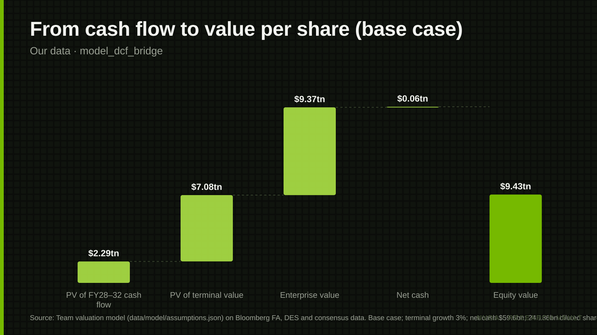
V0001 · From cash flow to value per share (base case)
Baseline chart of our dataset model_dcf_bridge
Facts & sources (0)
- our data: data/clean/model_dcf_bridge.json

V0002 · Base-case cash flows, USD billions
Baseline chart of our dataset model_dcf_detail
Facts & sources (0)
- our data: data/clean/model_dcf_detail.json

V0003 · Every input to our DCF, and where it comes from
Baseline chart of our dataset model_dcf_inputs
Facts & sources (0)
- our data: data/clean/model_dcf_inputs.json

V0004 · The DCF on one page (base case, 10.55% WACC)
Baseline chart of our dataset model_dcf_summary
Facts & sources (0)
- our data: data/clean/model_dcf_summary.json

V0005 · The two downside cases
Baseline chart of our dataset model_downside
Facts & sources (0)
- our data: data/clean/model_downside.json

V0006 · Free cash flow: actual, then our base case
Baseline chart of our dataset model_fcf_forecast
Facts & sources (0)
- our data: data/clean/model_fcf_forecast.json

V0007 · Yearly revenue growth FY28–FY32
Baseline chart of our dataset model_implied_growth
Facts & sources (0)
- our data: data/clean/model_implied_growth.json

V0008 · If AI ended for good: revenue
Baseline chart of our dataset model_path_ai_ended
Facts & sources (0)
- our data: data/clean/model_path_ai_ended.json

V0009 · Bear case: rivals take share, a year of paused spending
Baseline chart of our dataset model_path_bear
Facts & sources (0)
- our data: data/clean/model_path_bear.json

V0010 · Revenue paths in the model
Baseline chart of our dataset model_revenue_paths
Facts & sources (0)
- our data: data/clean/model_revenue_paths.json

V0011 · Base-case value per share by discount rate
Baseline chart of our dataset model_sensitivity
Facts & sources (0)
- our data: data/clean/model_sensitivity.json
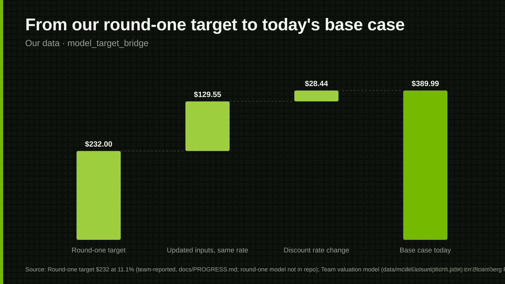
V0012 · From our round-one target to today's base case
Baseline chart of our dataset model_target_bridge
Facts & sources (0)
- our data: data/clean/model_target_bridge.json

V0013 · Base-case value per share at three discount rates
Baseline chart of our dataset model_three_rates
Facts & sources (0)
- our data: data/clean/model_three_rates.json
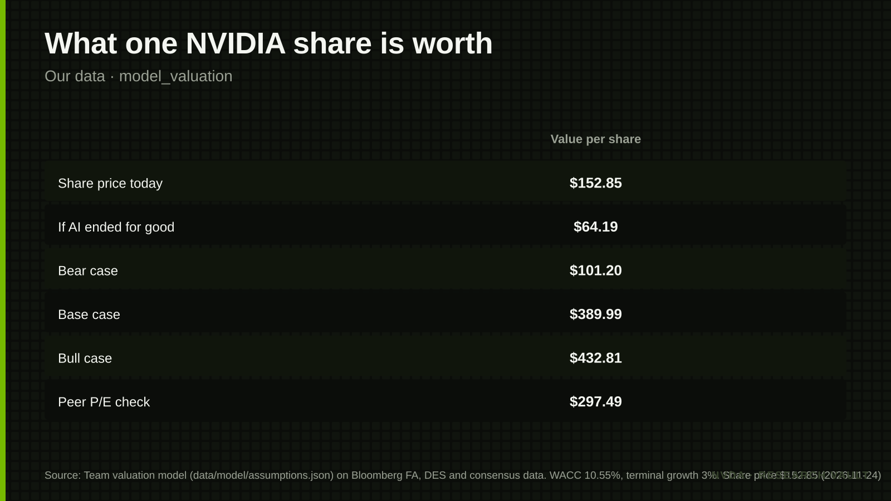
V0014 · What one NVIDIA share is worth
Baseline chart of our dataset model_valuation
Facts & sources (0)
- our data: data/clean/model_valuation.json
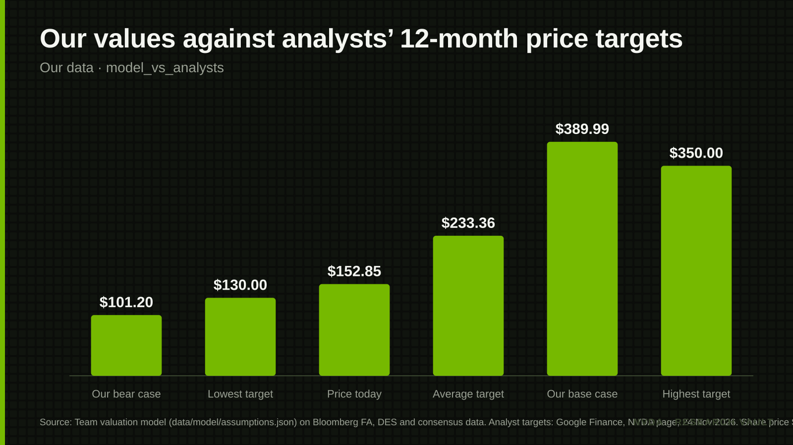
V0015 · Our values against analysts’ 12-month price targets
Baseline chart of our dataset model_vs_analysts
Facts & sources (0)
- our data: data/clean/model_vs_analysts.json
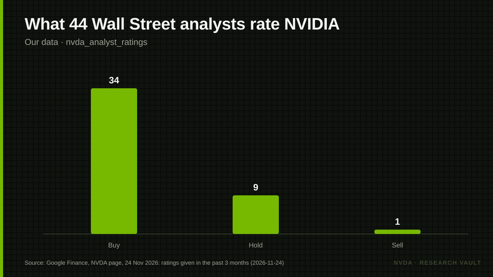
V0016 · What 44 Wall Street analysts rate NVIDIA
Baseline chart of our dataset nvda_analyst_ratings
Facts & sources (0)
- our data: data/clean/nvda_analyst_ratings.json
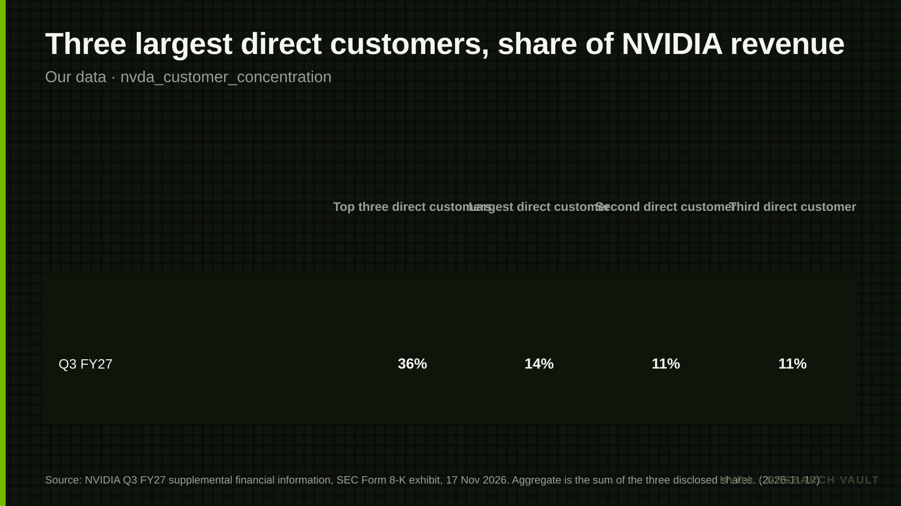
V0017 · Three largest direct customers, share of NVIDIA revenue
Baseline chart of our dataset nvda_customer_concentration
Facts & sources (0)
- our data: data/clean/nvda_customer_concentration.json
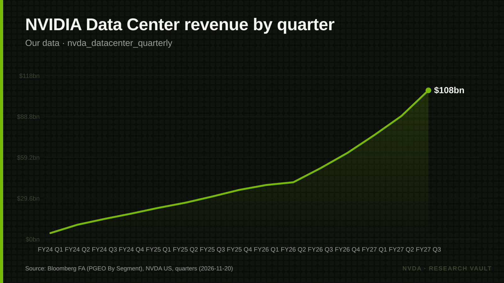
V0018 · NVIDIA Data Center revenue by quarter
Baseline chart of our dataset nvda_datacenter_quarterly
Facts & sources (0)
- our data: data/clean/nvda_datacenter_quarterly.json
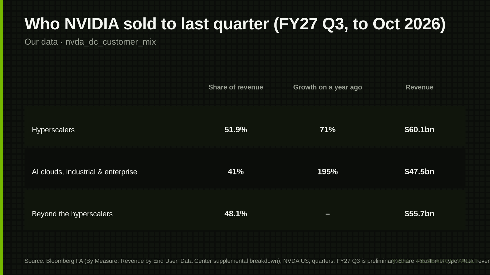
V0019 · Who NVIDIA sold to last quarter (FY27 Q3, to Oct 2026)
Baseline chart of our dataset nvda_dc_customer_mix
Facts & sources (0)
- our data: data/clean/nvda_dc_customer_mix.json

V0020 · Data Center revenue by type of customer
Baseline chart of our dataset nvda_dc_customers
Facts & sources (0)
- our data: data/clean/nvda_dc_customers.json
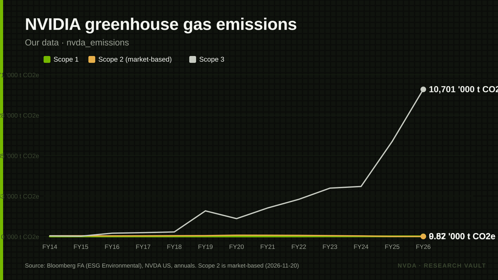
V0021 · NVIDIA greenhouse gas emissions
Baseline chart of our dataset nvda_emissions
Facts & sources (0)
- our data: data/clean/nvda_emissions.json

V0022 · NVIDIA energy use
Baseline chart of our dataset nvda_energy
Facts & sources (0)
- our data: data/clean/nvda_energy.json
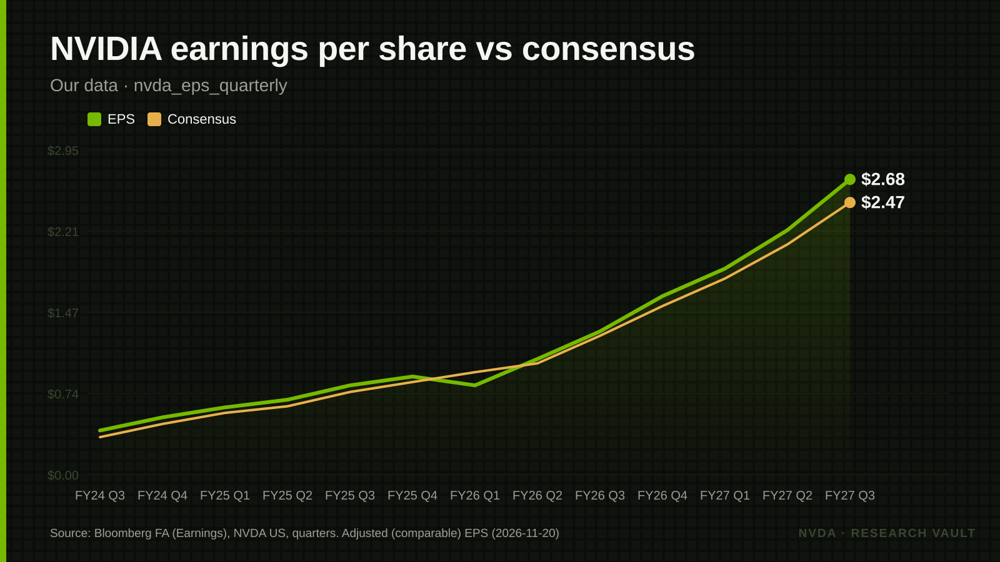
V0023 · NVIDIA earnings per share vs consensus
Baseline chart of our dataset nvda_eps_quarterly
Facts & sources (0)
- our data: data/clean/nvda_eps_quarterly.json
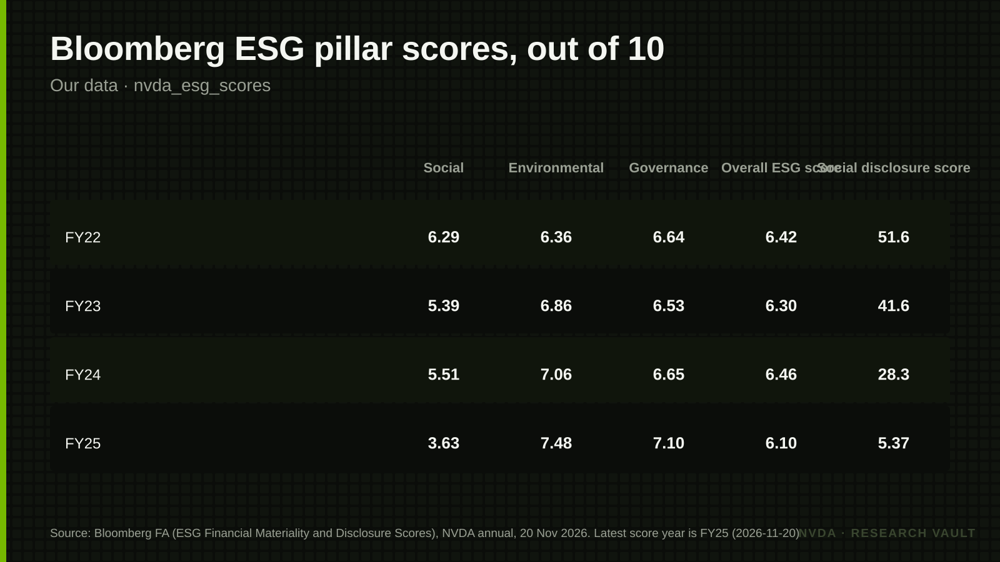
V0024 · Bloomberg ESG pillar scores, out of 10
Baseline chart of our dataset nvda_esg_scores
Facts & sources (0)
- our data: data/clean/nvda_esg_scores.json

V0025 · NVIDIA free cash flow
Baseline chart of our dataset nvda_fcf_annual
Facts & sources (0)
- our data: data/clean/nvda_fcf_annual.json
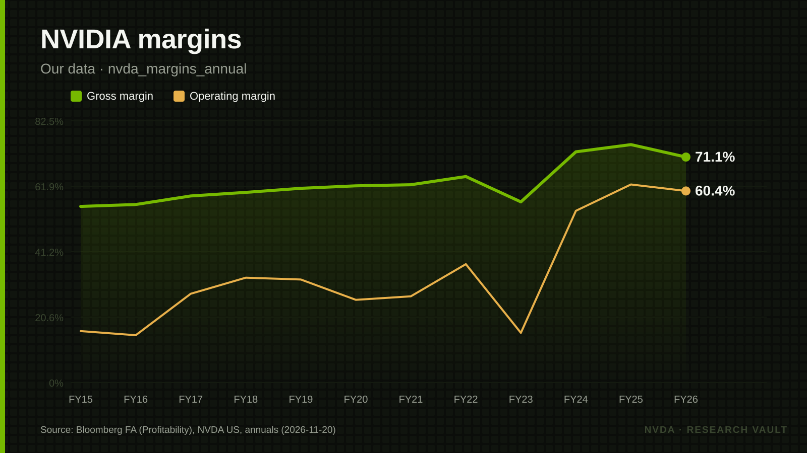
V0026 · NVIDIA margins
Baseline chart of our dataset nvda_margins_annual
Facts & sources (0)
- our data: data/clean/nvda_margins_annual.json
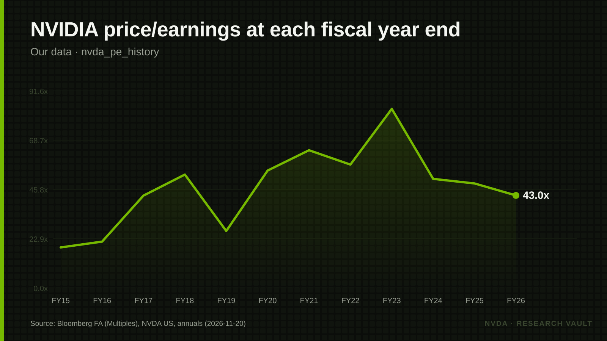
V0027 · NVIDIA price/earnings at each fiscal year end
Baseline chart of our dataset nvda_pe_history
Facts & sources (0)
- our data: data/clean/nvda_pe_history.json
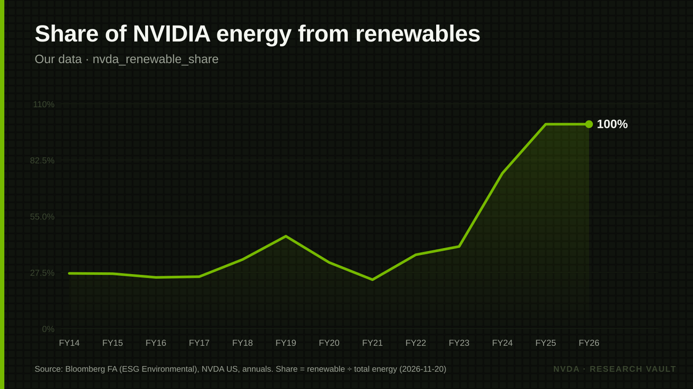
V0028 · Share of NVIDIA energy from renewables
Baseline chart of our dataset nvda_renewable_share
Facts & sources (0)
- our data: data/clean/nvda_renewable_share.json

V0029 · NVIDIA annual revenue
Baseline chart of our dataset nvda_revenue_annual
Facts & sources (0)
- our data: data/clean/nvda_revenue_annual.json

V0030 · NVIDIA revenue: actual and analyst consensus
Baseline chart of our dataset nvda_revenue_forecast
Facts & sources (0)
- our data: data/clean/nvda_revenue_forecast.json

V0031 · Revenue by quarter, with NVIDIA’s own guide for the next one
Baseline chart of our dataset nvda_revenue_guidance
Facts & sources (0)
- our data: data/clean/nvda_revenue_guidance.json

V0032 · NVIDIA quarterly revenue vs consensus
Baseline chart of our dataset nvda_revenue_quarterly
Facts & sources (0)
- our data: data/clean/nvda_revenue_quarterly.json
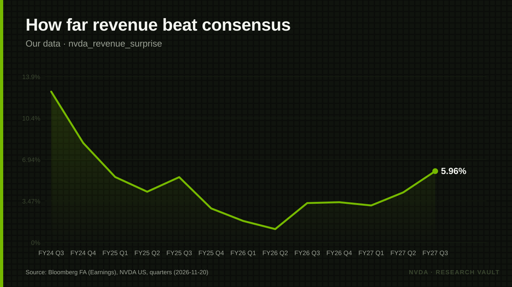
V0033 · How far revenue beat consensus
Baseline chart of our dataset nvda_revenue_surprise
Facts & sources (0)
- our data: data/clean/nvda_revenue_surprise.json

V0034 · NVIDIA revenue by market
Baseline chart of our dataset nvda_segments_annual
Facts & sources (0)
- our data: data/clean/nvda_segments_annual.json

V0035 · Data centre revenue, latest full year
Baseline chart of our dataset peers_datacenter_revenue
Facts & sources (0)
- our data: data/clean/peers_datacenter_revenue.json

V0036 · Carbon per $1m of sales, from each company's own buildings and power (Scope 1 + 2)
Baseline chart of our dataset peers_emissions_intensity
Facts & sources (0)
- our data: data/clean/peers_emissions_intensity.json

V0037 · Enterprise value / EBITDA, forward
Baseline chart of our dataset peers_ev_ebitda
Facts & sources (0)
- our data: data/clean/peers_ev_ebitda.json

V0038 · Expected EPS growth next year (consensus)
Baseline chart of our dataset peers_growth
Facts & sources (0)
- our data: data/clean/peers_growth.json

V0039 · Operating margin, this fiscal year (consensus)
Baseline chart of our dataset peers_operating_margin
Facts & sources (0)
- our data: data/clean/peers_operating_margin.json

V0040 · Price/earnings: today and on this year’s expected earnings
Baseline chart of our dataset peers_pe
Facts & sources (0)
- our data: data/clean/peers_pe.json
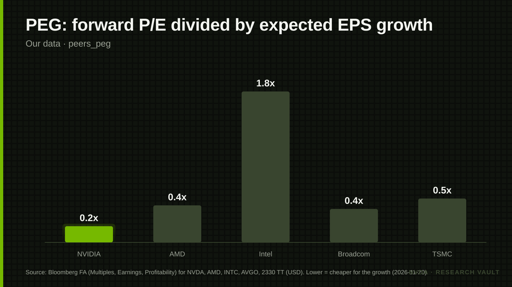
V0041 · PEG: forward P/E divided by expected EPS growth
Baseline chart of our dataset peers_peg
Facts & sources (0)
- our data: data/clean/peers_peg.json

V0042 · ImageNet 2012: top-5 error rate (lower is better)
Baseline chart of our dataset research_alexnet
Facts & sources (0)
- our data: data/clean/research_alexnet.json

V0043 · Share of TSMC CoWoS packaging capacity booked for 2026
Baseline chart of our dataset research_cowos_share
Facts & sources (0)
- our data: data/clean/research_cowos_share.json
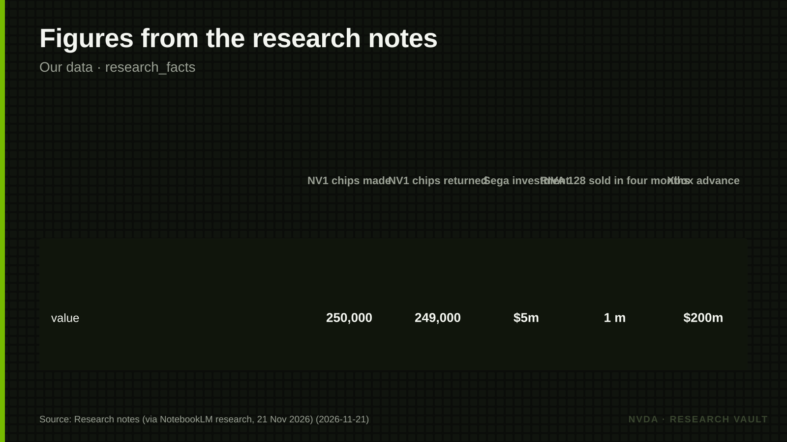
V0044 · Figures from the research notes
Baseline chart of our dataset research_facts
Facts & sources (0)
- our data: data/clean/research_facts.json
![Figures marked [VERIFY] in the script](visuals/svg/V0045.svg)
V0045 · Figures marked [VERIFY] in the script
Baseline chart of our dataset research_facts_unverified
Facts & sources (0)
- our data: data/clean/research_facts_unverified.json

V0046 · Average yearly spend during each build-out, share of US GDP
Baseline chart of our dataset research_infra_gdp
Facts & sources (0)
- our data: data/clean/research_infra_gdp.json
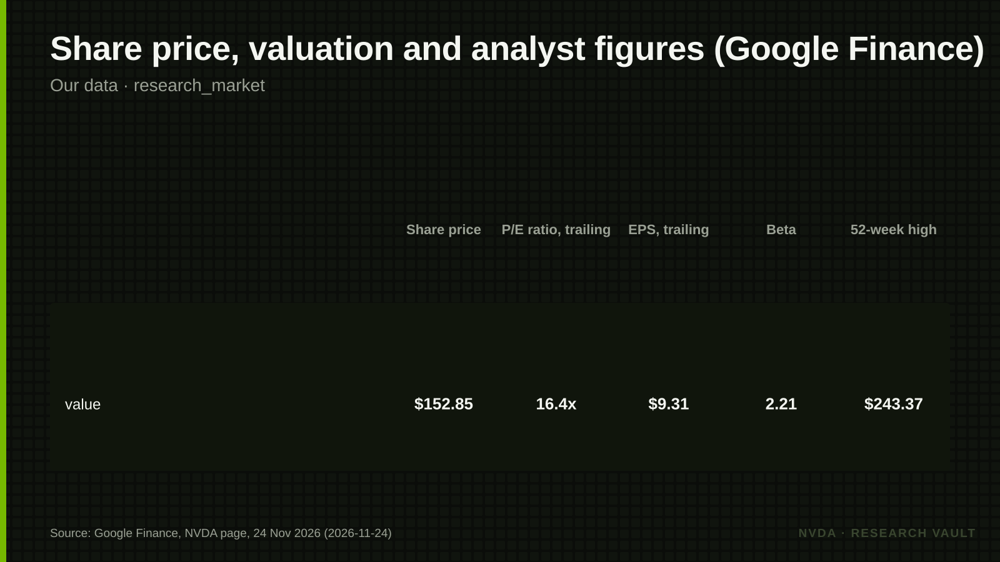
V0047 · Share price, valuation and analyst figures (Google Finance)
Baseline chart of our dataset research_market
Facts & sources (0)
- our data: data/clean/research_market.json
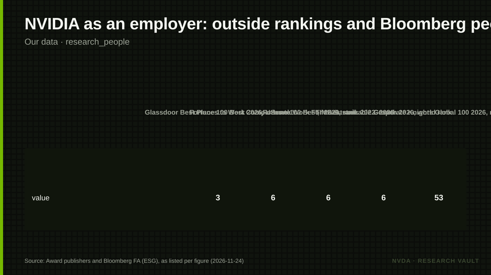
V0048 · NVIDIA as an employer: outside rankings and Bloomberg people data
Baseline chart of our dataset research_people
Facts & sources (0)
- our data: data/clean/research_people.json

V0049 · Staff turnover: NVIDIA versus a dated tech-sector benchmark
Baseline chart of our dataset research_people_turnover
Facts & sources (0)
- our data: data/clean/research_people_turnover.json

V0050 · Policy, customer and power figures for Q&A
Baseline chart of our dataset research_policy
Facts & sources (0)
- our data: data/clean/research_policy.json

V0051 · Q3 FY27 earnings call: results, outlook, capital and commitments
Baseline chart of our dataset research_q3_call
Facts & sources (0)
- our data: data/clean/research_q3_call.json

V0052 · Data-centre demand growth is geographically concentrated
IEA base-case growth from 2024 to 2030; Europe is more than 45 TWh, shown at its lower bound.
Facts & sources (3)
- F0013 IEA projects data centre electricity consumption in United States increases by around 240 TWh from 2024 to 2030 in its base case.
- F0014 IEA projects data centre electricity consumption in China increases by around 175 TWh from 2024 to 2030 in its base case.
- F0015 IEA projects data centre electricity consumption in Europe increases by more than 45 TWh from 2024 to 2030 in its base case.
- International Energy Agency (2025-04-10) https://www.iea.org/reports/energy-and-ai/energy-demand-from-ai

V0053 · Supply-chain emissions are rising
Reported Scope 3 increased; Bloomberg series should be reconciled to NVIDIA disclosure.
Facts & sources (3)
- F0022 Bloomberg data records NVIDIA Scope 3 emissions of 3638.43 thousand tonnes CO2e in FY24.
- F0023 Bloomberg data records NVIDIA Scope 3 emissions of 6912.58 thousand tonnes CO2e in FY25.
- F0024 Bloomberg data records NVIDIA Scope 3 emissions of 10700.9 thousand tonnes CO2e in FY26.
- our data: data/clean/nvda_emissions.json
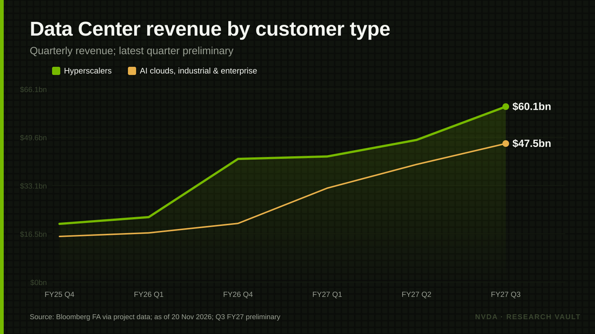
V0054 · Data Center revenue by customer type
End-user customer groups; preliminary latest quarter. Categories do not identify the invoiced customer.
Facts & sources (4)
- F0087 Bloomberg’s end-user dataset reports hyperscaler revenue of $42.213 billion in Q4 FY26.
- F0088 Bloomberg’s preliminary end-user dataset reports hyperscaler revenue of $60.136 billion in Q3 FY27.
- F0089 Bloomberg’s end-user dataset reports AI cloud, industrial and enterprise revenue of $20.101 billion in Q4 FY26.
- F0090 Bloomberg’s preliminary end-user dataset reports AI cloud, industrial and enterprise revenue of $47.474 billion in Q3 FY27.
- our data: data/clean/nvda_dc_customers.json
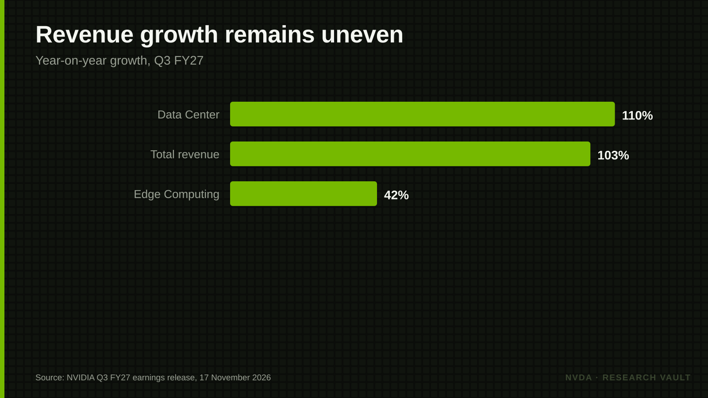
V0055 · Revenue growth remains uneven
Data Center and Edge Computing are components of total revenue; growth rates are year on year.
Facts & sources (3)
- F0120 Q3 FY27 Data Center revenue grew 110% year on year.
- F0121 Q3 FY27 Edge Computing revenue grew 42% year on year.
- F0122 Q3 FY27 total revenue grew 103% year on year.
- NVIDIA (2026-11-17) https://nvidianews.nvidia.com/news/nvidia-announces-financial-results-for-third-quarter-fiscal-2027
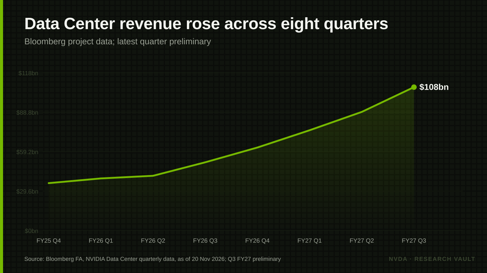
V0056 · Data Center revenue rose across eight quarters
Data Center quarterly revenue from Bloomberg project data; latest quarter preliminary.
Facts & sources (8)
- F0128 Bloomberg project data records FY25 Q4 Data Center revenue at $35.58 billion.
- F0129 Bloomberg project data records FY26 Q1 Data Center revenue at $39.112 billion.
- F0130 Bloomberg project data records FY26 Q2 Data Center revenue at $41.096 billion.
- F0131 Bloomberg project data records FY26 Q3 Data Center revenue at $51.215 billion.
- F0132 Bloomberg project data records FY26 Q4 Data Center revenue at $62.314 billion.
- F0133 Bloomberg project data records FY27 Q1 Data Center revenue at $75.246 billion.
- F0134 Bloomberg project data records FY27 Q2 Data Center revenue at $89.023 billion.
- F0149 Bloomberg project data records preliminary Q3 FY27 Data Center revenue at $107.610 billion.
- our data: data/clean/nvda_datacenter_quarterly.json
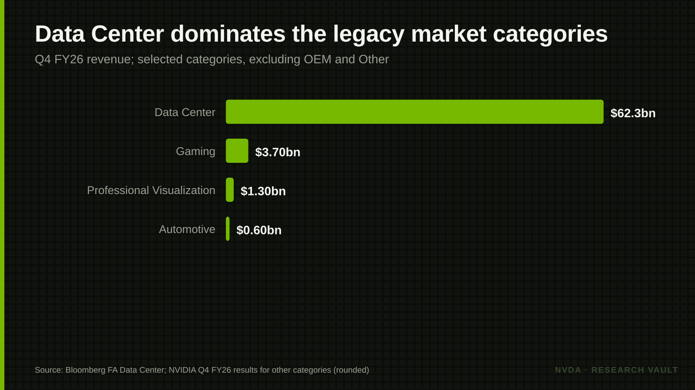
V0057 · Data Center dominates the legacy market categories
Selected legacy market categories; company figures rounded and OEM and Other excluded.
Facts & sources (4)
- F0132 Bloomberg project data records FY26 Q4 Data Center revenue at $62.314 billion.
- F0137 Gaming revenue was $3.7 billion in Q4 FY26, down 13% sequentially.
- F0138 Professional Visualization revenue was $1.3 billion in Q4 FY26, up 159% year on year.
- F0139 Automotive revenue was $604 million in Q4 FY26, up 6% year on year.
- NVIDIA (2026-02-25) https://nvidianews.nvidia.com/news/nvidia-announces-financial-results-for-fourth-quarter-and-fiscal-2026
- our data: data/clean/nvda_datacenter_quarterly.json
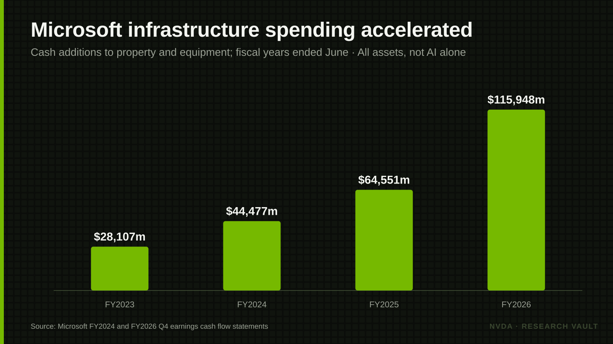
V0058 · Microsoft infrastructure spending accelerated
Microsoft cash additions to property and equipment, all assets; fiscal years ended June.
Facts & sources (4)
- F0265 Microsoft cash additions to property and equipment were $28,107 million in FY2023, ended June 2023; this covers all assets, not just AI or NVIDIA purchases.
- F0266 Microsoft cash additions to property and equipment were $44,477 million in FY2024, ended June 2024; this covers all assets, not just AI or NVIDIA purchases.
- F0267 Microsoft cash additions to property and equipment were $64,551 million in FY2025, ended June 2025; this covers all assets, not just AI or NVIDIA purchases.
- F0268 Microsoft cash additions to property and equipment were $115,948 million in FY2026, ended June 2026; this covers all assets, not just AI or NVIDIA purchases.
- Microsoft (2024-07-30) https://www.microsoft.com/en-us/Investor/earnings/FY-2024-Q4/press-release-webcast
- Microsoft (2026-07-29) https://www.microsoft.com/en-us/Investor/earnings/FY-2026-Q4/press-release-webcast
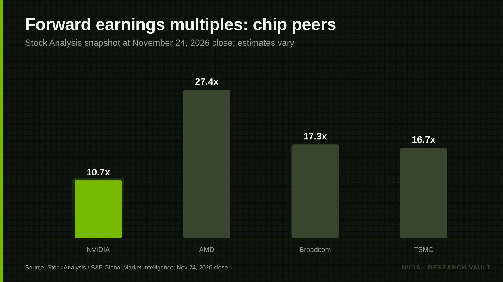
V0059 · Forward earnings multiples: chip peers
Forward P/E comparison; estimate periods and methodologies may differ.
Facts & sources (4)
- F0277 Stock Analysis reported NVIDIA forward P/E of 10.71x as of the November 24, 2026 close; methodology and forward estimates may differ from the pitch dataset.
- F0281 Stock Analysis reported AMD forward P/E of 27.45x as of the November 24, 2026 close; methodology and forward estimates may differ from the pitch dataset.
- F0285 Stock Analysis reported Broadcom forward P/E of 17.33x as of the November 24, 2026 close; methodology and forward estimates may differ from the pitch dataset.
- F0289 Stock Analysis reported TSMC forward P/E of 16.73x as of the November 24, 2026 close; methodology and forward estimates may differ from the pitch dataset.
- Stock Analysis (2026-11-25) https://stockanalysis.com/stocks/amd/statistics/
- Stock Analysis (2026-11-25) https://stockanalysis.com/stocks/avgo/statistics/
- Stock Analysis (2026-11-25) https://stockanalysis.com/stocks/nvda/statistics/
- Stock Analysis (2026-11-25) https://stockanalysis.com/stocks/tsm/statistics/
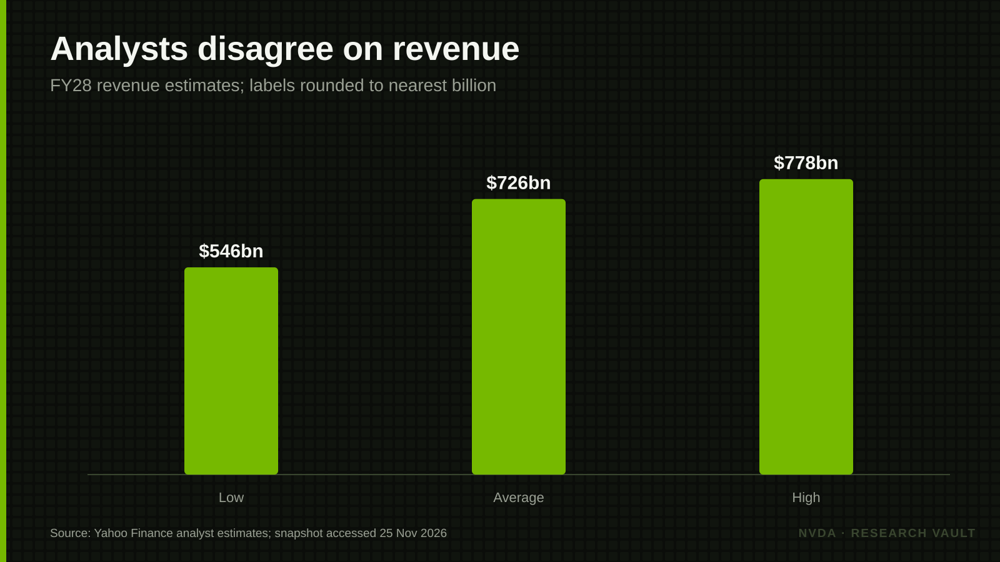
V0060 · Analysts disagree on revenue
Yahoo Finance FY28 analyst revenue estimates, accessed 25 November 2026. Values are forecasts, not outcomes; chart labels round to the nearest billion.
Facts & sources (3)
- F0304 Yahoo Finance revenue estimate low for FY28 is $546bn.
- F0301 Yahoo Finance consensus revenue average for FY28 is $726.02bn, in its November 25 snapshot.
- F0305 Yahoo Finance revenue estimate high for FY28 is $778.47bn.
- Yahoo Finance (2026-11-25) https://finance.yahoo.com/quote/NVDA/analysis/
V0061 · Cash returned to shareholders
Quarterly shareholder returns include buybacks and dividends; Q1 and Q2 are approximate.
Facts & sources (3)
- F0320 NVIDIA returned approximately $20.0 billion via repurchases and dividends in Q1 FY27.
- F0318 NVIDIA returned approximately $26.0 billion in buybacks and dividends in Q2 FY27.
- F0315 NVIDIA returned $28.1 billion via repurchases and dividends in Q3 FY27.
- NVIDIA (2026-05-27) https://nvidianews.nvidia.com/news/nvidia-announces-financial-results-for-first-quarter-fiscal-2027
- NVIDIA (2026-08-26) https://nvidianews.nvidia.com/news/nvidia-announces-financial-results-for-second-quarter-fiscal-2027
- NVIDIA (2026-11-17) https://nvidianews.nvidia.com/news/nvidia-announces-financial-results-for-third-quarter-fiscal-2027
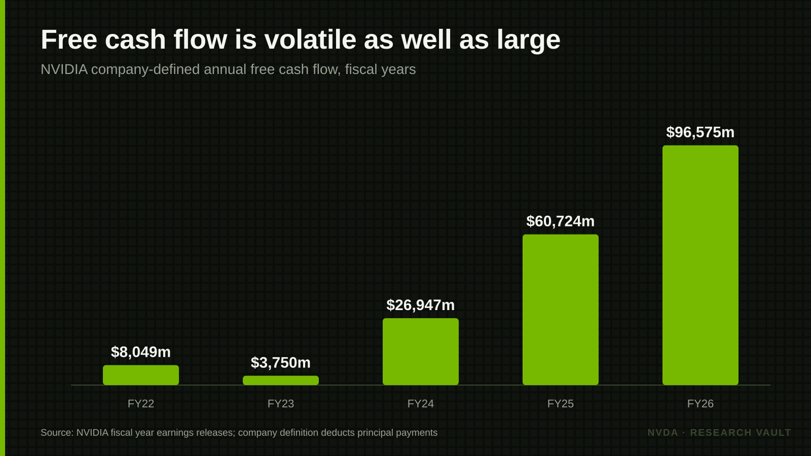
V0062 · Free cash flow is volatile as well as large
Company-defined free cash flow deducts asset purchases and principal payments.
Facts & sources (5)
- F0331 NVIDIA reported FY22 free cash flow of $8,049 million, after principal payments as defined by NVIDIA.
- F0332 NVIDIA reported FY23 free cash flow of $3,750 million, after principal payments as defined by NVIDIA.
- F0353 NVIDIA reported FY24 free cash flow of $26,947 million, after principal payments as defined by NVIDIA.
- F0354 NVIDIA reported FY25 free cash flow of $60,724 million, after principal payments as defined by NVIDIA.
- F0355 NVIDIA reported FY26 free cash flow of $96,575 million, after principal payments as defined by NVIDIA.
- NVIDIA (2024-02-21) https://nvidianews.nvidia.com/news/nvidia-announces-financial-results-for-fourth-quarter-and-fiscal-2024
- NVIDIA (2025-02-26) https://nvidianews.nvidia.com/news/nvidia-announces-financial-results-for-fourth-quarter-and-fiscal-2025
- NVIDIA (2026-02-25) https://nvidianews.nvidia.com/news/nvidia-announces-financial-results-for-fourth-quarter-and-fiscal-2026
- NVIDIA (2026-11-25) https://nvidianews.nvidia.com/news/nvidia-announces-financial-results-for-fourth-quarter-and-fiscal-2022
- NVIDIA (2026-11-25) https://nvidianews.nvidia.com/news/nvidia-announces-financial-results-for-fourth-quarter-and-fiscal-2023
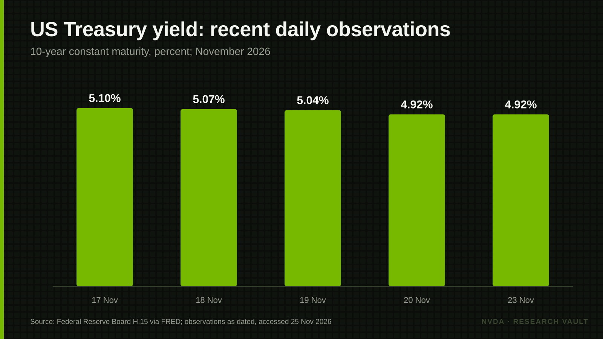
V0063 · US Treasury yield: recent daily observations
Daily 10-year Treasury constant-maturity yields; different trading dates, not a forecast.
Facts & sources (5)
- F0419 FRED reports the US 10-year constant-maturity Treasury yield at 5.10% on 2026-11-17.
- F0418 FRED reports the US 10-year constant-maturity Treasury yield at 5.07% on 2026-11-18.
- F0417 FRED reports the US 10-year constant-maturity Treasury yield at 5.04% on 2026-11-19.
- F0416 FRED reports the US 10-year constant-maturity Treasury yield at 4.92% on 2026-11-20.
- F0415 FRED reports the US 10-year constant-maturity Treasury yield at 4.92% on 2026-11-23.
- Federal Reserve Bank of St. Louis (2026-11-24) https://fred.stlouisfed.org/series/DGS10
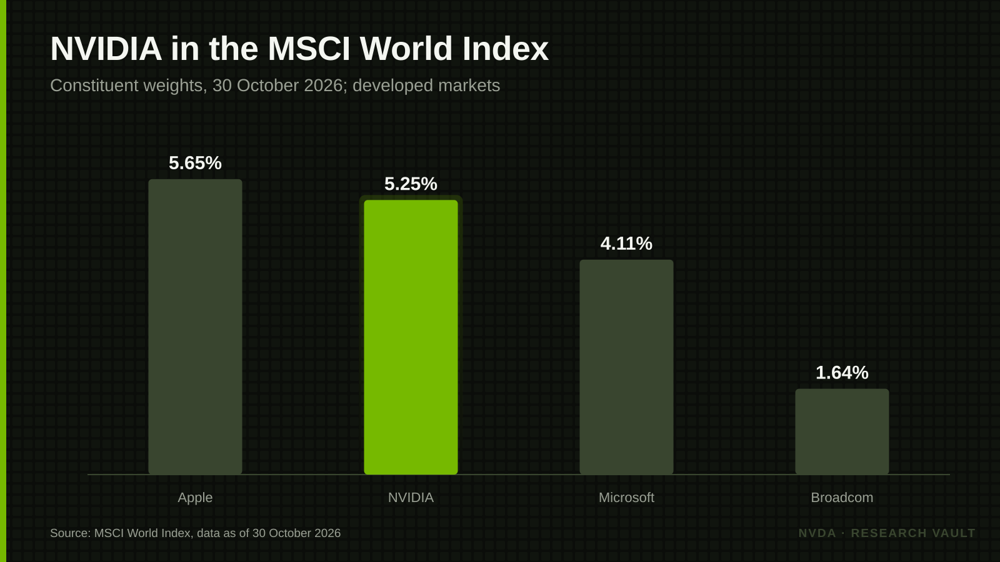
V0064 · NVIDIA in the MSCI World Index
A direct NVIDIA position adds exposure on top of an existing developed-market index holding; weights change with prices and rebalancing.
Facts & sources (4)
- F0432 MSCI World weighted Microsoft at 4.11% on 30 October 2026.
- F0433 MSCI World weighted Broadcom at 1.64% on 30 October 2026.
- F0439 MSCI World weighted NVIDIA at 5.25% on 30 October 2026.
- F0440 MSCI World weighted Apple at 5.65% on 30 October 2026.
- MSCI (2026-11-24) https://www.msci.com/indexes/index/990100/msci-world-index
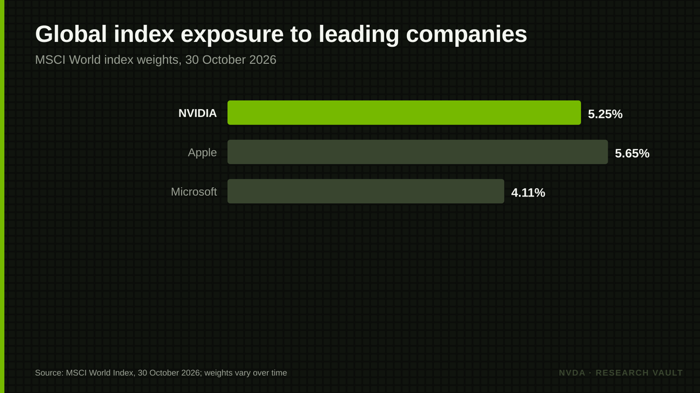
V0065 · Global index exposure to leading companies
NVIDIA exposure is already embedded in a tracker of this developed-market index; check actual fund benchmark and holdings.
Facts & sources (3)
- F0432 MSCI World weighted Microsoft at 4.11% on 30 October 2026.
- F0439 MSCI World weighted NVIDIA at 5.25% on 30 October 2026.
- F0440 MSCI World weighted Apple at 5.65% on 30 October 2026.
- MSCI (2026-11-24) https://www.msci.com/indexes/index/990100/msci-world-index
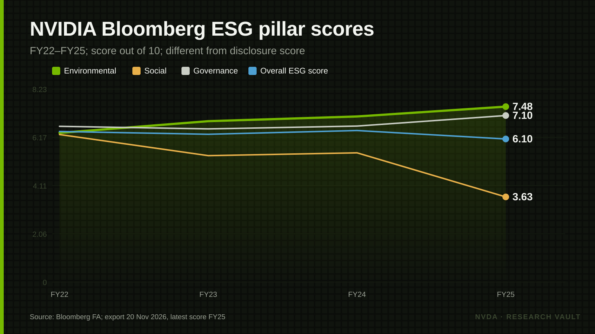
V0066 · NVIDIA Bloomberg ESG pillar scores
Bloomberg pillar and overall scores use the exported 0–10 scale; the separate social disclosure score uses a different scale.
Facts & sources (7)
- F0443 Bloomberg records NVIDIA Environmental score of 6.36 out of 10 for FY22, in an export dated 20 November 2026.
- F0444 Bloomberg records NVIDIA Environmental score of 6.86 out of 10 for FY23, in an export dated 20 November 2026.
- F0445 Bloomberg records NVIDIA Environmental score of 7.06 out of 10 for FY24, in an export dated 20 November 2026.
- F0446 Bloomberg records NVIDIA Environmental score of 7.48 out of 10 for FY25, in an export dated 20 November 2026.
- F0447 Bloomberg records NVIDIA Social score of 3.63 out of 10 for FY25, in an export dated 20 November 2026.
- F0448 Bloomberg records NVIDIA Governance score of 7.1 out of 10 for FY25, in an export dated 20 November 2026.
- F0449 Bloomberg records NVIDIA Overall ESG score score of 6.1 out of 10 for FY25, in an export dated 20 November 2026.
- our data: data/clean/nvda_esg_scores.json
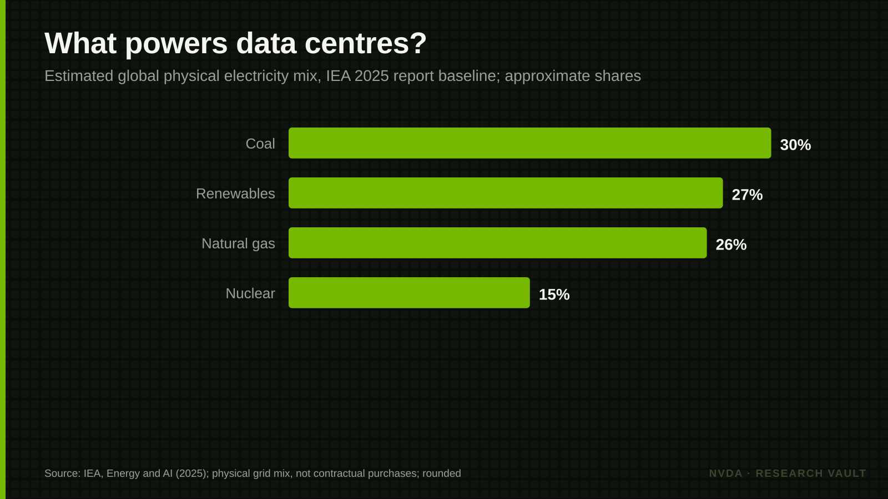
V0067 · What powers data centres?
IEA estimates of physical electricity supply to data centres; percentages are approximate and rounded.
Facts & sources (4)
- F0458 The IEA estimates coal provided about 30% of physical electricity consumed by global data centres in its 2025 report.
- F0459 The IEA estimates renewables provided about 27% of physical electricity consumed by global data centres in its 2025 report.
- F0460 The IEA estimates natural gas provided 26% of physical electricity consumed by global data centres in its 2025 report.
- F0461 The IEA estimates nuclear provided 15% of physical electricity consumed by global data centres in its 2025 report.
- International Energy Agency (2025-04-10) https://www.iea.org/reports/energy-and-ai/energy-supply-for-ai
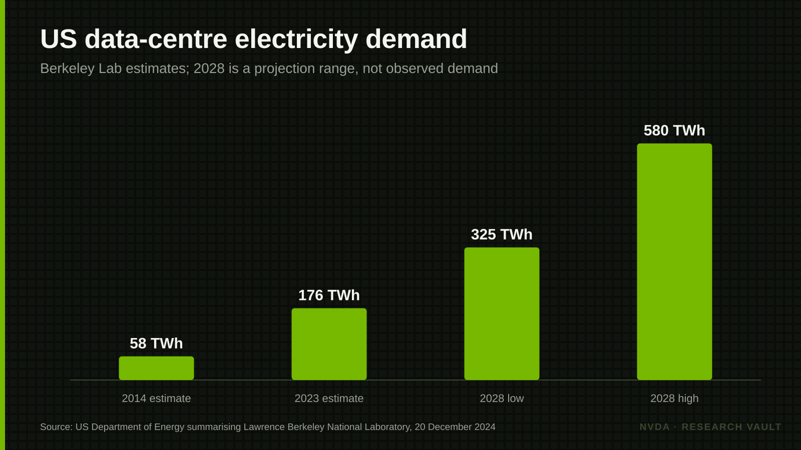
V0068 · US data-centre electricity demand
Historical estimates and a range of projections; data centres include workloads beyond AI.
Facts & sources (4)
- F0495 DOE reports Berkeley Lab estimated US data-centre electricity use at 58 TWh in 2014.
- F0496 DOE reports Berkeley Lab estimated US data-centre electricity use at 176 TWh in 2023.
- F0497 DOE reports Berkeley Lab projected a lower bound of 325 TWh for US data-centre electricity use in 2028.
- F0498 DOE reports Berkeley Lab projected an upper bound of 580 TWh for US data-centre electricity use in 2028.
- US Department of Energy (2026-11-25) https://www.energy.gov/articles/doe-releases-new-report-evaluating-increase-electricity-demand-data-centers
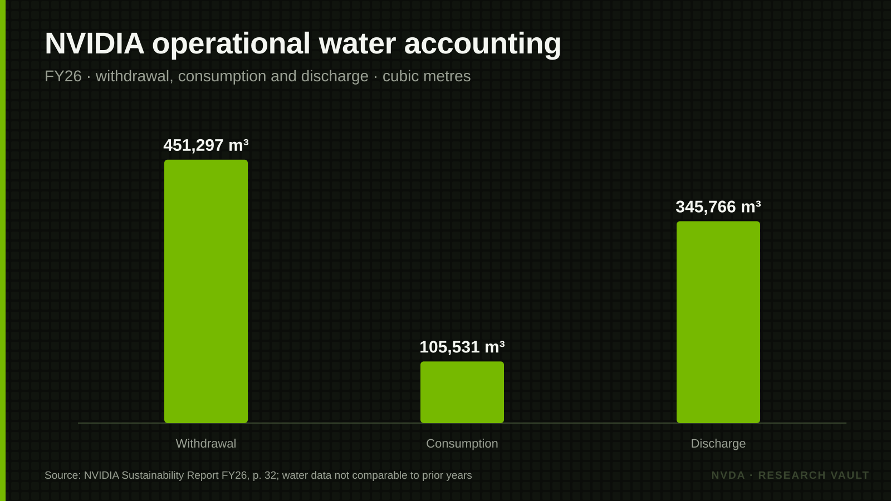
V0069 · NVIDIA operational water accounting
FY26 water accounting; consumption and discharge are distinct from total withdrawal. Earlier years are not comparable because collection methods changed.
Facts & sources (3)
- F0537 NVIDIA reports FY26 operational water withdrawal of 451,297 cubic metres; FY26 values are not comparable with prior years because collection methods changed.
- F0538 NVIDIA reports FY26 water consumption of 105,531 cubic metres; the methodology changed and earlier years are not comparable.
- F0539 NVIDIA reports FY26 water discharge of 345,766 cubic metres; the methodology changed and earlier years are not comparable.
- NVIDIA (2026-11-25) https://images.nvidia.com/aem-dam/Solutions/documents/NVIDIA-Sustainability-Report-Fiscal-Year-2026.pdf
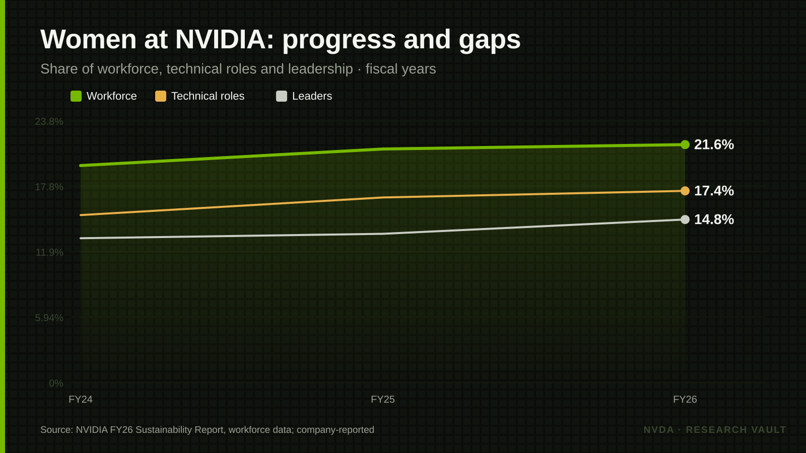
V0070 · Women at NVIDIA: progress and gaps
Women remain underrepresented despite gradual progress in workforce, technical roles and leadership.
Facts & sources (9)
- F0643 NVIDIA reports women made up 19.7% of its workforce in FY24.
- F0644 NVIDIA reports women made up 21.2% of its workforce in FY25.
- F0645 NVIDIA reports women made up 21.6% of its workforce in FY26.
- F0646 NVIDIA reports women held 15.2% of technical roles in FY24.
- F0647 NVIDIA reports women held 16.8% of technical roles in FY25.
- F0648 NVIDIA reports women held 17.4% of technical roles in FY26.
- F0649 NVIDIA reports women held 13.1% of leadership positions in FY24.
- F0650 NVIDIA reports women held 13.5% of leadership positions in FY25.
- F0651 NVIDIA reports women held 14.8% of leadership positions in FY26.
- NVIDIA (2026-11-25) https://images.nvidia.com/aem-dam/Solutions/documents/NVIDIA-Sustainability-Report-Fiscal-Year-2026.pdf
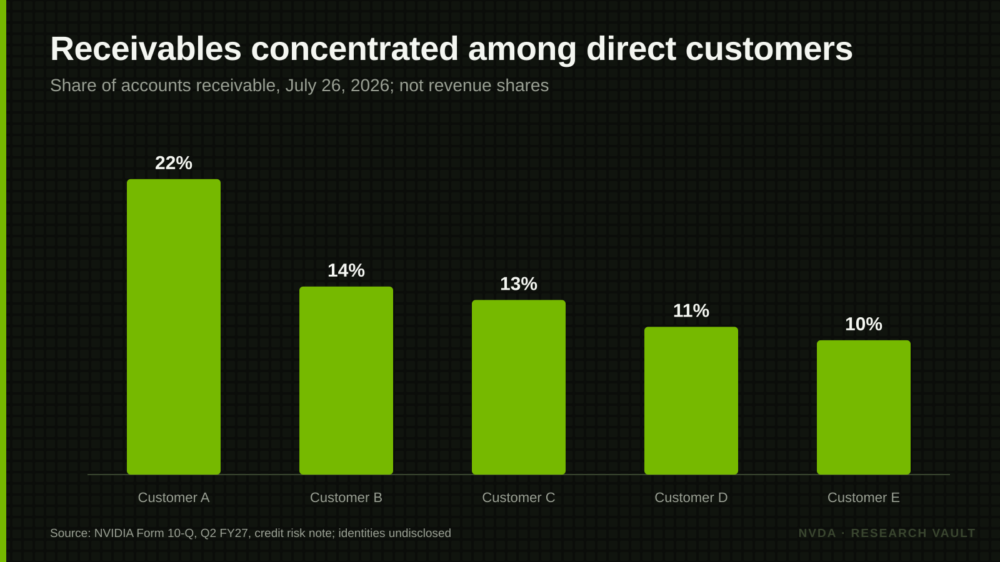
V0071 · Receivables concentrated among direct customers
Five unnamed direct customers represented the disclosed shares of receivables at the balance-sheet date; they need not be the same as the largest end customers.
Facts & sources (5)
- F0719 Five direct customers accounted for 22%, 14%, 13%, 11% and 10% of receivables at July 26, 2026; these are receivable balances, not revenue shares.
- F0720 One of five disclosed direct customers represented 14% of accounts receivable at July 26, 2026; this is not a revenue share.
- F0721 One of five disclosed direct customers represented 13% of accounts receivable at July 26, 2026; this is not a revenue share.
- F0722 One of five disclosed direct customers represented 11% of accounts receivable at July 26, 2026; this is not a revenue share.
- F0723 One of five disclosed direct customers represented 10% of accounts receivable at July 26, 2026; this is not a revenue share.
- NVIDIA / SEC (2026-08-26) https://www.sec.gov/Archives/edgar/data/1045810/000104581026000075/nvda-20260726.htm
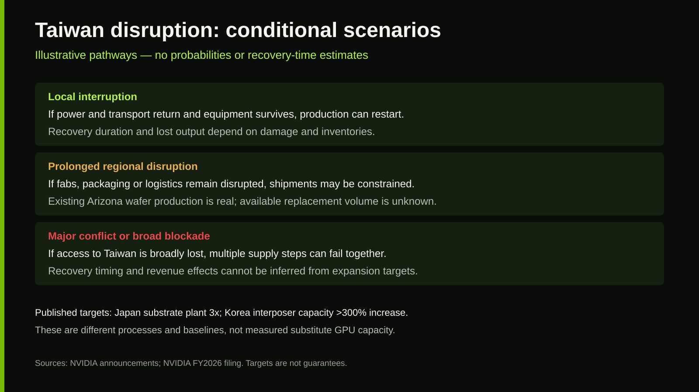
V0072 · Taiwan disruption: conditional scenarios
Conditional scenarios, not forecasts: recovery time and replacement output are unknown.
Facts & sources (6)
- F0768 NVIDIA says Amkor plans a greater than 300% increase in South Korean interposer wafer capacity by end-2028; this is a forecast for packaging capacity, not GPU output.
- F0767 NVIDIA says its IBIDEN Japan substrate expansion targets triple plant capacity and an initial ramp in the first quarter of 2028.
- F0765 In October 2025 NVIDIA reported its first US-produced Blackwell wafer at TSMC Phoenix, saying Blackwell had reached volume production; it did not quantify NVIDIA output there.
- F0592 NVIDIA warns that qualifying a replacement foundry or subcontractor and starting volume production can add expense or cause delays.
- F0593 NVIDIA says a disaster or war could require substantial expenditure and time to resume operations fully.
- F0774 NVIDIA says regional expansion depends on local ecosystems ramping supply to required volume and on time.
- NVIDIA (2026-11-25) https://blogs.nvidia.com/blog/tsmc-blackwell-manufacturing/
- NVIDIA (2026-11-25) https://nvidianews.nvidia.com/news/nvidia-and-supply-chain-partners-expand-capacity-to-accelerate-ai-infrastructure-buildout
- NVIDIA / SEC (2026-02-25) https://www.sec.gov/Archives/edgar/data/1045810/000104581026000021/nvda-20260125.htm
- NVIDIA via SEC (2026-02-25) https://cdn.kscope.io/35eda9e72d095b34a4f3392d5b582e8f.pdf
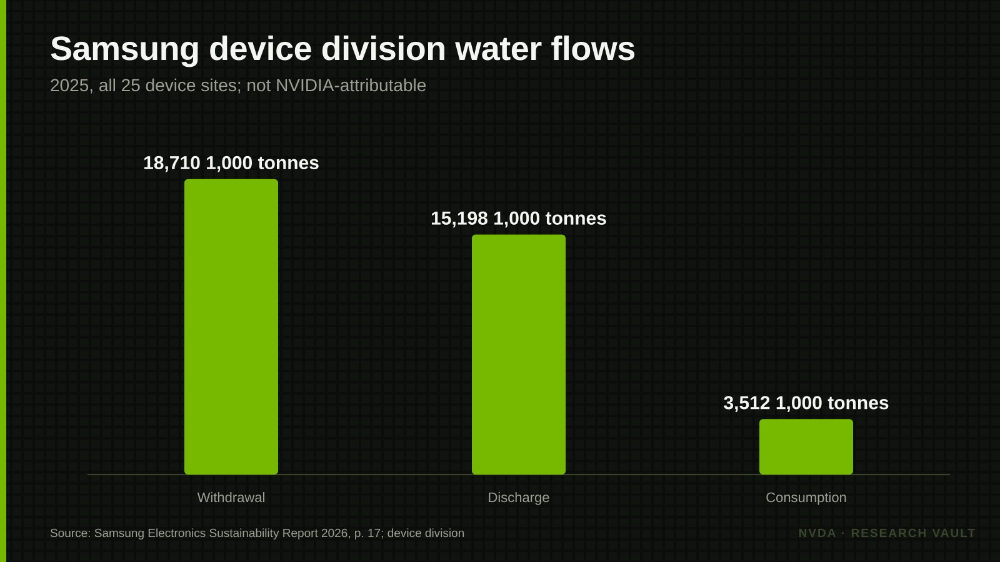
V0073 · Samsung device division water flows
Device division, not semiconductor manufacturing; figures are not attributable to NVIDIA.
Facts & sources (3)
- F0815 Samsung reports that its device division withdrew 18,710 thousand tonnes of water across 25 sites in 2025.
- F0817 Samsung reports that its device division discharged 15,198 thousand tonnes of water across 25 sites in 2025.
- F0816 Samsung reports its device division consumed 3,512 thousand tonnes of water across 25 sites in 2025.
- Samsung Electronics (2026-06-26) https://www.samsung.com/global/sustainability/media/pdf/Samsung_Electronics_Sustainability_Report_2026_ENG.pdf
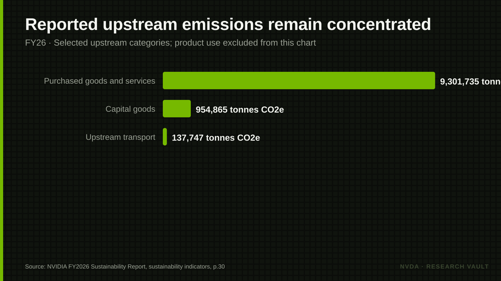
V0074 · Reported upstream emissions remain concentrated
Reported upstream categories; excludes unreported use-phase emissions.
Facts & sources (3)
- F0835 NVIDIA reported FY26 purchased goods and services emissions of 9,301,735 metric tonnes CO2e.
- F0836 NVIDIA reported FY26 capital-goods emissions of 954,865 metric tonnes CO2e.
- F0837 NVIDIA reported FY26 upstream transport emissions of 137,747 metric tonnes CO2e.
- NVIDIA (2026-11-25) https://images.nvidia.com/aem-dam/Solutions/documents/NVIDIA-Sustainability-Report-Fiscal-Year-2026.pdf
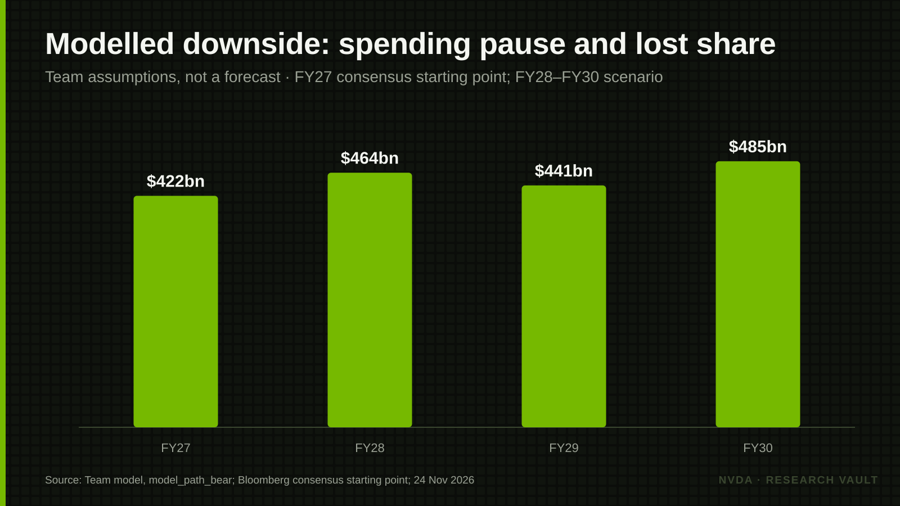
V0075 · Modelled downside: spending pause and lost share
Illustrative NVIDIA revenue path, not observed demand or a forecast. Assumes a customer spending pause and competition; the starting consensus is itself uncertain.
Facts & sources (4)
- F0869 The team bear scenario starts from FY27 consensus revenue of $422.22 billion; it is an input estimate, not reported actual revenue.
- F0864 In the team model, the spending-pause and share-loss bear scenario assumes FY28 revenue of $464.44 billion; this is a scenario, not a forecast.
- F0865 In the same modelled bear scenario, FY29 revenue falls to $441.22 billion; this is an assumption-driven scenario, not a forecast.
- F0866 In the same modelled bear scenario, FY30 revenue recovers to $485.34 billion; the path is an assumption, not a forecast.
- our data: data/clean/model_path_bear.json
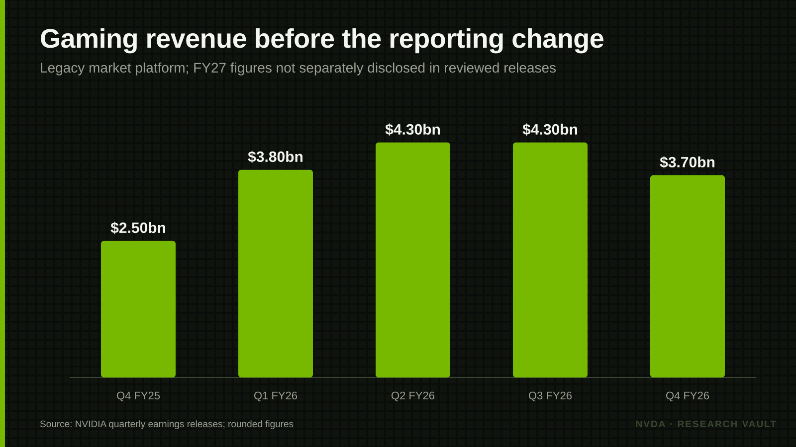
V0076 · Gaming revenue before the reporting change
Gaming is a legacy market-platform series, not the broader FY27 Edge Computing category.
Facts & sources (5)
- F0884 Q4 FY25 Gaming revenue was $2.5 billion, down 22% sequentially and 11% year on year.
- F0887 Q1 FY26 Gaming revenue was $3.8 billion, up 48% sequentially.
- F0143 Gaming revenue was $4.3 billion in Q2 FY26, up 49% year on year.
- F0140 Gaming revenue was $4.3 billion in Q3 FY26, down 1% sequentially.
- F0137 Gaming revenue was $3.7 billion in Q4 FY26, down 13% sequentially.
- NVIDIA (2025-02-26) https://nvidianews.nvidia.com/news/nvidia-announces-financial-results-for-fourth-quarter-and-fiscal-2025
- NVIDIA (2025-05-28) https://nvidianews.nvidia.com/news/nvidia-announces-financial-results-for-first-quarter-fiscal-2026
- NVIDIA (2025-08-27) https://nvidianews.nvidia.com/news/nvidia-announces-financial-results-for-second-quarter-fiscal-2026
- NVIDIA (2025-11-19) https://nvidianews.nvidia.com/news/nvidia-announces-financial-results-for-third-quarter-fiscal-2026
- NVIDIA (2026-02-25) https://nvidianews.nvidia.com/news/nvidia-announces-financial-results-for-fourth-quarter-and-fiscal-2026
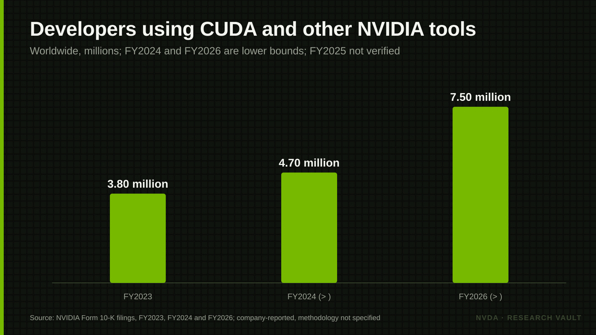
V0077 · Developers using CUDA and other NVIDIA tools
NVIDIA reports developers using CUDA and other tools, not CUDA alone. FY2024 and FY2026 are stated as over the plotted thresholds; FY2025 is unverified.
Facts & sources (3)
- F0926 In its FY2023 Form 10-K, NVIDIA reported 3.8 million developers worldwide using CUDA and its other software tools; this is not a CUDA-only count.
- F0927 In its FY2024 Form 10-K, NVIDIA reported over 4.7 million developers worldwide using CUDA and its other software tools; the figure is a lower bound.
- F0928 In its FY2026 Form 10-K, NVIDIA reported over 7.5 million developers worldwide using CUDA and its other software tools; this is not a CUDA-only count.
- NVIDIA (2023-02-24) https://www.annualreports.com/HostedData/AnnualReportArchive/n/NASDAQ_NVDA_2023.pdf
- NVIDIA (2026-11-25) https://www.annualreports.com/HostedData/AnnualReportArchive/n/NASDAQ_NVDA_2024.pdf?download=1
- NVIDIA via SEC (2026-02-25) https://cdn.kscope.io/35eda9e72d095b34a4f3392d5b582e8f.pdf
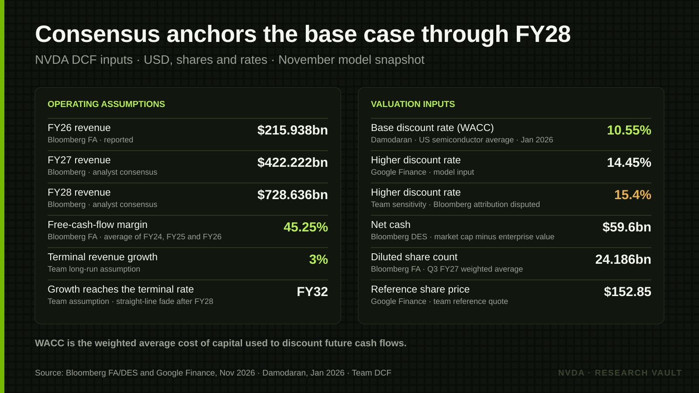
V0078 · Consensus anchors the base case through FY28
Analyst consensus anchors near-term sales, and we choose how quickly growth fades and how to discount future cash flows.
Facts & sources (0)
- our data: data/clean/model_dcf_inputs.json
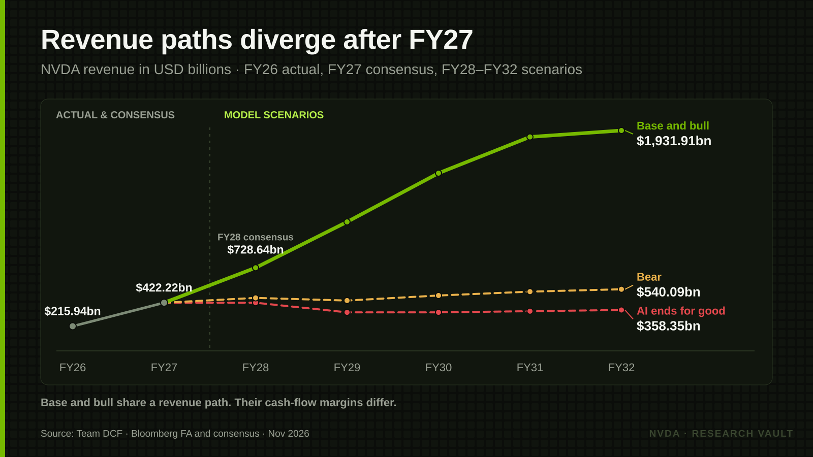
V0079 · Revenue paths diverge after FY27
The paths start from the same consensus figure and split when we change our assumptions about AI demand and market share.
Facts & sources (0)
- our data: data/clean/model_revenue_paths.json
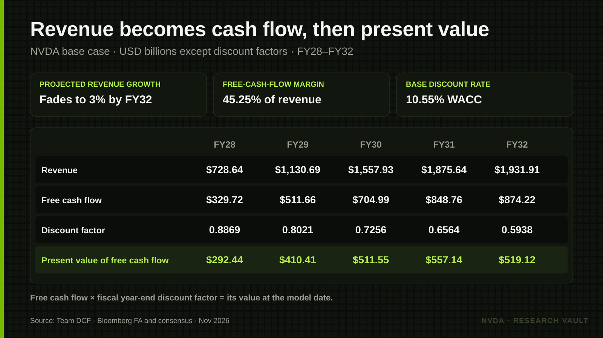
V0080 · Revenue becomes cash flow, then present value
We multiply revenue by our cash-flow margin and discount each resulting cash flow back to the model date.
Facts & sources (4)
- F0868 The team model uses a 10.55% US semiconductor-industry WACC as an input; it is not a guaranteed investor return.
- F0968 The base DCF holds the free-cash-flow margin at the average of FY24, FY25 and FY26.
- F0969 The team DCF assumes a perpetual growth rate of 3% after its explicit forecast.
- F0970 The model fades base revenue growth in a straight line after FY28, reaching the terminal growth rate in FY32.
- our data: data/clean/model_dcf_detail.json
- our data: data/clean/model_dcf_inputs.json
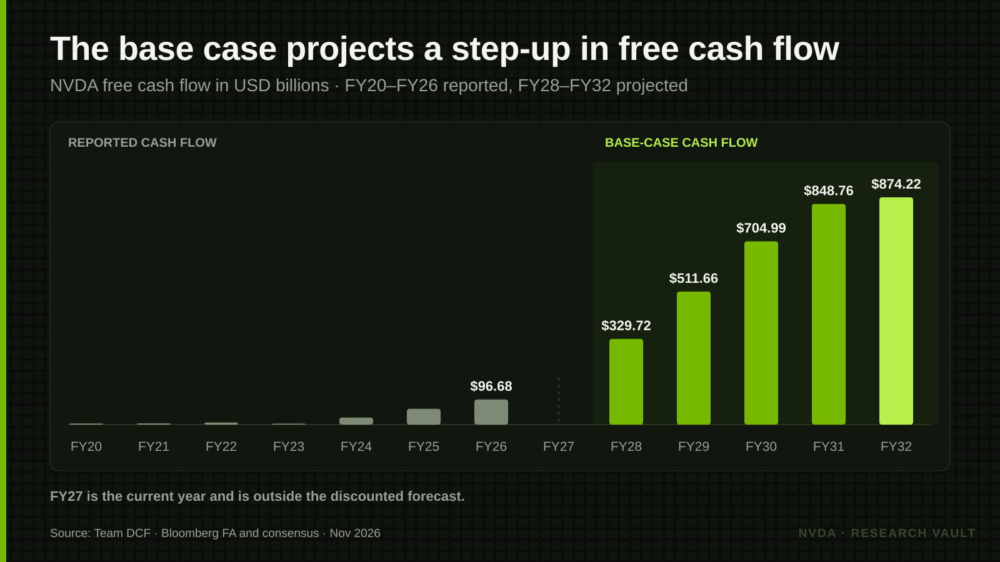
V0081 · The base case projects a step-up in free cash flow
Our base case projects a substantial increase in free cash flow as revenue rises at the assumed cash margin.
Facts & sources (0)
- our data: data/clean/model_fcf_forecast.json
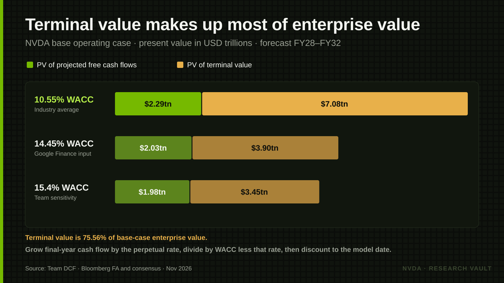
V0082 · Terminal value makes up most of enterprise value
Most of our enterprise value comes from cash flows beyond the explicit forecast, and that value shrinks as the discount rate rises.
Facts & sources (4)
- F0868 The team model uses a 10.55% US semiconductor-industry WACC as an input; it is not a guaranteed investor return.
- F0876 For the current model input use 15.4% as the team’s assumed discount rate; its Bloomberg attribution is disputed by the project reconciliation and must be checked against the original screen before presenting it as a Bloomberg figure.
- F0972 The team DCF attributes 75.56% of base-case enterprise value to discounted terminal value.
- F0977 The team model includes a 14.45% discount-rate sensitivity, attributed to Google Finance in the model export.
- our data: data/clean/model_dcf_bridge.json
- our data: data/clean/model_dcf_inputs.json
- our data: data/clean/model_dcf_summary.json
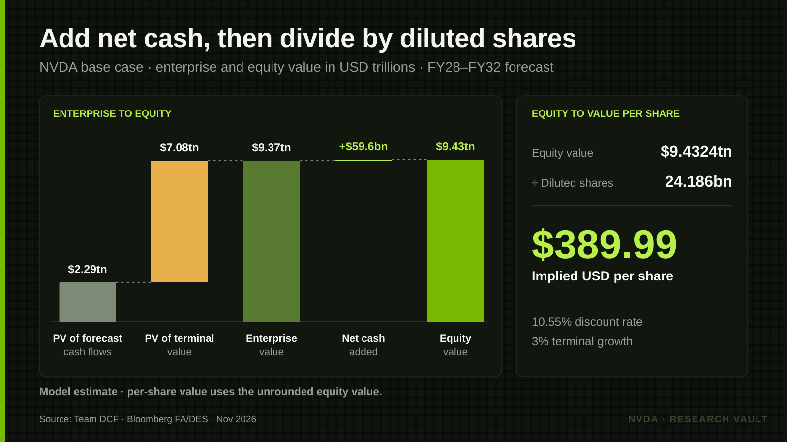
V0083 · Add net cash, then divide by diluted shares
We add net cash to enterprise value and divide the resulting equity value by the diluted share count.
Facts & sources (4)
- F0051 The team model estimates a base-case value of $389.99 per share at its industry discount rate; this is a model output, not an observed price.
- F0868 The team model uses a 10.55% US semiconductor-industry WACC as an input; it is not a guaranteed investor return.
- F0969 The team DCF assumes a perpetual growth rate of 3% after its explicit forecast.
- F0971 The base DCF divides equity value by 24.186 billion diluted shares.
- our data: data/clean/model_dcf_bridge.json
- our data: data/clean/model_dcf_inputs.json
- our data: data/clean/model_dcf_summary.json
- our data: data/clean/model_three_rates.json
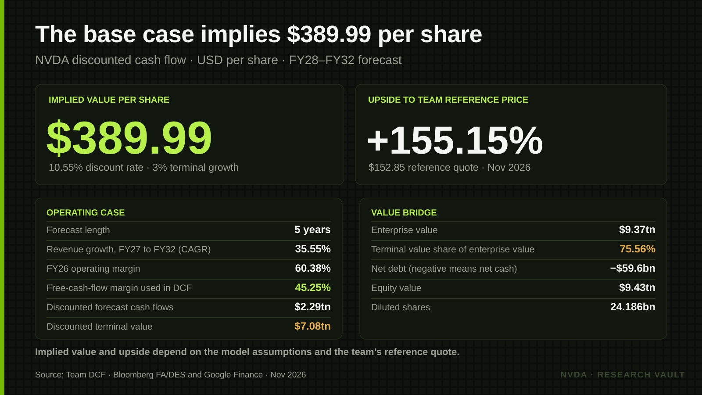
V0084 · The base case implies $389.99 per share
Our base case implies $389.99 per share, with most enterprise value tied to cash flows beyond the forecast.
Facts & sources (3)
- F0868 The team model uses a 10.55% US semiconductor-industry WACC as an input; it is not a guaranteed investor return.
- F0969 The team DCF assumes a perpetual growth rate of 3% after its explicit forecast.
- F0976 The model adds $59.6 billion of net cash to enterprise value.
- our data: data/clean/model_dcf_inputs.json
- our data: data/clean/model_dcf_summary.json
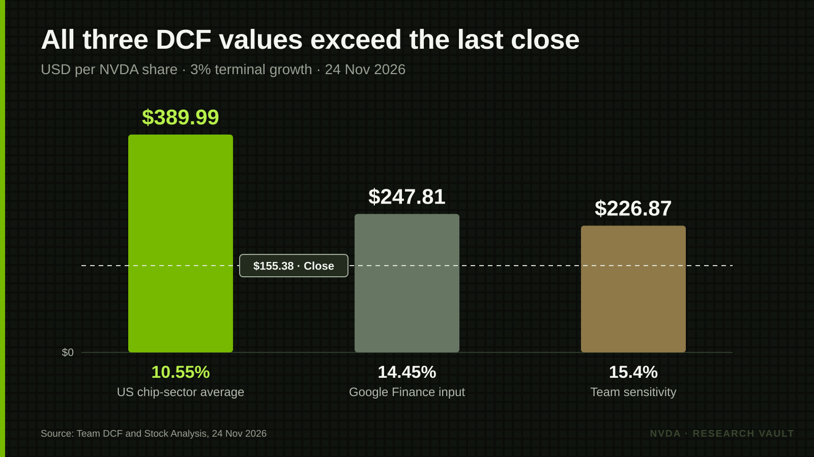
V0085 · All three DCF values exceed the last close
At the same long-run growth assumption, all three model values exceed the reported November close, but the value falls as we raise the discount rate.
Facts & sources (8)
- F0473 For the 24 November 2026 regular-session close, use $155.38 from the timestamped Stock Analysis close rather than the unverified team input of $152.85; the latter may reflect a different time and is not a verified close.
- F0868 The team model uses a 10.55% US semiconductor-industry WACC as an input; it is not a guaranteed investor return.
- F0977 The team model includes a 14.45% discount-rate sensitivity, attributed to Google Finance in the model export.
- F0876 For the current model input use 15.4% as the team’s assumed discount rate; its Bloomberg attribution is disputed by the project reconciliation and must be checked against the original screen before presenting it as a Bloomberg figure.
- F0969 The team DCF assumes a perpetual growth rate of 3% after its explicit forecast.
- F0051 The team model estimates a base-case value of $389.99 per share at its industry discount rate; this is a model output, not an observed price.
- F0978 At a 14.45% discount rate, the team DCF yields $247.81 per share with the base cash-flow assumptions.
- F0979 At the 15.4% team sensitivity, the team DCF yields $226.87 per share with the base cash-flow assumptions.
- Stock Analysis (2026-11-24) https://stockanalysis.com/stocks/nvda/
- our data: data/clean/model_dcf_inputs.json
- our data: data/clean/model_three_rates.json
V0086 · The base discount rate is a sector average
We start with a chip-industry average, then use two higher rates to see how much the valuation depends on that choice.
Facts & sources (3)
- F0868 The team model uses a 10.55% US semiconductor-industry WACC as an input; it is not a guaranteed investor return.
- F0977 The team model includes a 14.45% discount-rate sensitivity, attributed to Google Finance in the model export.
- F0876 For the current model input use 15.4% as the team’s assumed discount rate; its Bloomberg attribution is disputed by the project reconciliation and must be checked against the original screen before presenting it as a Bloomberg figure.
- our data: data/clean/model_dcf_inputs.json
V0087 · Higher discount rates cut the DCF value
Read across to test a higher discount rate or down to see what stronger perpetual growth does to value.
Facts & sources (6)
- F0868 The team model uses a 10.55% US semiconductor-industry WACC as an input; it is not a guaranteed investor return.
- F0977 The team model includes a 14.45% discount-rate sensitivity, attributed to Google Finance in the model export.
- F0876 For the current model input use 15.4% as the team’s assumed discount rate; its Bloomberg attribution is disputed by the project reconciliation and must be checked against the original screen before presenting it as a Bloomberg figure.
- F0969 The team DCF assumes a perpetual growth rate of 3% after its explicit forecast.
- F0980 With a 15.4% discount rate and 2% terminal growth, the team sensitivity grid gives $214.94 per share, its lowest tested value.
- F0981 With a 15.4% discount rate and 4% terminal growth, the team sensitivity grid gives $240.89 per share.
- our data: data/clean/model_dcf_inputs.json
- our data: data/clean/model_sensitivity.json
V0088 · The model uses a different reference price
The reported close is our dated market comparison, while the team model uses a separate reference for its upside figures.
Facts & sources (2)
- F0473 For the 24 November 2026 regular-session close, use $155.38 from the timestamped Stock Analysis close rather than the unverified team input of $152.85; the latter may reflect a different time and is not a verified close.
- F0982 The team DCF export uses $152.85 as its share-price reference dated 24 November 2026. It is an unverified team input.
- Stock Analysis (2026-11-24) https://stockanalysis.com/stocks/nvda/
- our data: data/clean/model_dcf_inputs.json
V0089 · Our base case grows faster than the price implies
At our base discount rate, the model’s reference price needs less sales growth than our base case assumes.
Facts & sources (5)
- F0983 The reverse DCF solves for constant revenue growth of 11.56% at the team price input and base discount rate.
- F0984 The team base case compounds sales at 35.55%, from FY27 consensus to FY32.
- F0868 The team model uses a 10.55% US semiconductor-industry WACC as an input; it is not a guaranteed investor return.
- F0982 The team DCF export uses $152.85 as its share-price reference dated 24 November 2026. It is an unverified team input.
- F0473 For the 24 November 2026 regular-session close, use $155.38 from the timestamped Stock Analysis close rather than the unverified team input of $152.85; the latter may reflect a different time and is not a verified close.
- Stock Analysis (2026-11-24) https://stockanalysis.com/stocks/nvda/
- our data: data/clean/model_dcf_inputs.json
- our data: data/clean/model_implied_growth.json
V0090 · Consensus anchors our forecast through FY28
We start from Bloomberg’s FY27 and FY28 consensus estimates and assume slower growth each year after that.
Facts & sources (3)
- F0312 The team’s Bloomberg FA dataset records FY27 consensus revenue of $422.222bn as of November 20, 2026; Yahoo’s later snapshot reports $423.66bn and may reflect a different panel or date.
- F0313 The team’s Bloomberg FA dataset records FY28 consensus revenue of $728.636bn as of November 20, 2026; Yahoo’s later snapshot reports $726.02bn and may reflect a different panel or date.
- F0970 The model fades base revenue growth in a straight line after FY28, reaching the terminal growth rate in FY32.
- our data: data/clean/model_dcf_inputs.json
- our data: data/clean/model_revenue_paths.json
- our data: data/clean/nvda_revenue_forecast.json
V0091 · Revenue dips when customers pause spending
Our bear case assumes customers pause spending and rivals take share, so sales dip before recovering.
Facts & sources (6)
- F0864 In the team model, the spending-pause and share-loss bear scenario assumes FY28 revenue of $464.44 billion; this is a scenario, not a forecast.
- F0865 In the same modelled bear scenario, FY29 revenue falls to $441.22 billion; this is an assumption-driven scenario, not a forecast.
- F0866 In the same modelled bear scenario, FY30 revenue recovers to $485.34 billion; the path is an assumption, not a forecast.
- F0867 The team model values the bear scenario at $101.20 per share using its stated assumptions; this is not an observed price or prediction.
- F0869 The team bear scenario starts from FY27 consensus revenue of $422.22 billion; it is an input estimate, not reported actual revenue.
- F0312 The team’s Bloomberg FA dataset records FY27 consensus revenue of $422.222bn as of November 20, 2026; Yahoo’s later snapshot reports $423.66bn and may reflect a different panel or date.
- our data: data/clean/model_downside.json
- our data: data/clean/model_path_bear.json
- our data: data/clean/nvda_revenue_forecast.json
V0092 · If AI demand collapses, sales barely recover
If AI demand collapses, our stress test has sales falling below FY27 consensus and staying there through FY32.
Facts & sources (4)
- F0869 The team bear scenario starts from FY27 consensus revenue of $422.22 billion; it is an input estimate, not reported actual revenue.
- F0312 The team’s Bloomberg FA dataset records FY27 consensus revenue of $422.222bn as of November 20, 2026; Yahoo’s later snapshot reports $423.66bn and may reflect a different panel or date.
- F0991 The severe AI-demand stress scenario assumes NVIDIA revenue of $337.78 billion in FY29.
- F0992 The severe AI-demand stress scenario assumes NVIDIA revenue of $358.35 billion in FY32.
- our data: data/clean/model_path_ai_ended.json
- our data: data/clean/model_path_bear.json
- our data: data/clean/nvda_revenue_forecast.json
V0093 · A severe AI slump would cost the portfolio more
A three percent position limits the modeled portfolio hit, but both scenarios still carry significant stock downside.
Facts & sources (8)
- F0867 The team model values the bear scenario at $101.20 per share using its stated assumptions; this is not an observed price or prediction.
- F0985 The team DCF values its severe AI-demand stress scenario at $64.19 per share.
- F0982 The team DCF export uses $152.85 as its share-price reference dated 24 November 2026. It is an unverified team input.
- F0990 The downside comparison assumes NVIDIA has an initial portfolio weight of 3%.
- F0986 The team model records -33.79 as the share-price change from the model reference in the bear case scenario.
- F0987 The team model records 1.01 as the portfolio loss at the modeled position weight in the bear case scenario.
- F0988 The team model records -58.01 as the share-price change from the model reference in the if ai ended for good scenario.
- F0989 The team model records 1.74 as the portfolio loss at the modeled position weight in the if ai ended for good scenario.
- our data: data/clean/model_dcf_inputs.json
- our data: data/clean/model_downside.json
V0094 · Our base-case value is above analysts’ averages
Our base case exceeds both averages shown, and the two analyst snapshots may cover different groups.
Facts & sources (4)
- F0051 The team model estimates a base-case value of $389.99 per share at its industry discount rate; this is a model output, not an observed price.
- F0291 Stock Analysis reported an NVIDIA average analyst price target of $244.71 in its November 24, 2026 snapshot; this is a consensus estimate, not a guaranteed future price.
- F0993 The team model records an unverified Google Finance capture of a $233.36 average analyst target.
- F0473 For the 24 November 2026 regular-session close, use $155.38 from the timestamped Stock Analysis close rather than the unverified team input of $152.85; the latter may reflect a different time and is not a verified close.
- Stock Analysis (2026-11-24) https://stockanalysis.com/stocks/nvda/
- Stock Analysis (2026-11-25) https://stockanalysis.com/stocks/nvda/statistics/
- our data: data/clean/model_three_rates.json
- our data: data/clean/model_vs_analysts.json
V0095 · Updated inputs drove most of the target increase
Updating the inputs at the old discount rate accounts for more of the increase than lowering the discount rate.
Facts & sources (6)
- F0994 The team reports a round-one target of $232 per share. The round-one model is unavailable.
- F0995 The team reports using an 11.1% discount rate in round one. The round-one model is unavailable.
- F0996 The team bridge attributes $129.55 per share to rerunning the updated model at the reported round-one discount rate.
- F0997 After updating the inputs, the team bridge attributes a further $28.44 per share to lowering the discount rate.
- F0868 The team model uses a 10.55% US semiconductor-industry WACC as an input; it is not a guaranteed investor return.
- F0051 The team model estimates a base-case value of $389.99 per share at its industry discount rate; this is a model output, not an observed price.
- our data: data/clean/model_dcf_inputs.json
- our data: data/clean/model_target_bridge.json
- our data: data/clean/model_three_rates.json
V0096 · Data-centre electricity demand could double
The IEA projects data centres will use more than twice as much electricity by 2030, including both AI and conventional computing.
Facts & sources (4)
- F0001 IEA estimates global data centres used about 415 TWh of electricity in 2024.
- F0003 IEA projects data centres will consume around 945 TWh globally in 2030 in its base case.
- F0006 IEA projects accelerated-server electricity consumption, mainly driven by AI adoption, to grow by 30% annually in its base case.
- F0007 IEA estimates around 20% of planned data centre projects could face delays if electricity grid risks are not addressed.
- International Energy Agency (2025-04-10) https://www.iea.org/reports/energy-and-ai/energy-demand-from-ai
- International Energy Agency (2025-04-10) https://www.iea.org/reports/energy-and-ai/executive-summary
V0097 · Rubin’s efficiency claim is workload-specific
NVIDIA claims up to ten times as many tokens per megawatt for this Rubin workload, and a matched wall-power test would tell us how well that result carries over.
Facts & sources (7)
- F0012 NVIDIA claims Vera Rubin NVL72 delivers up to 10x token throughput per megawatt versus GB200 NVL72 at comparable interactivity on Kimi-K2-Thinking; this is a workload-specific vendor claim.
- F0506 MLPerf Inference power uses average whole-system AC power measured at the wall during the benchmark performance run.
- F0507 MLCommons says measured power is valid only for its accompanying benchmark and other power figures such as TDP are not measured or validated by MLCommons.
- F0508 MLCommons says Closed division comparisons use the same model as the reference implementation.
- F0509 MLCommons reported that its September 2026 Inference v6.1 results included preview NVIDIA Rubin and Vera Rubin NVL72 systems; the announcement does not establish a power measurement.
- F0513 MLCommons permits reproducible quantization to numerical formats meeting the benchmark quality target, subject to calibration and disclosure rules.
- F0003 IEA projects data centres will consume around 945 TWh globally in 2030 in its base case.
- International Energy Agency (2025-04-10) https://www.iea.org/reports/energy-and-ai/executive-summary
- MLCommons (2026-09-16) https://mlcommons.org/2026/09/mlperf-inference-v6-1-results/?view=release
- MLCommons (2026-11-25) https://github.com/mlcommons/inference_policies/blob/master/inference_rules.adoc
- MLCommons (2026-11-25) https://mlcommons.org/benchmarks/inference-datacenter/?view=power
- NVIDIA (2026-01-05) https://developer.nvidia.com/blog/inside-the-nvidia-rubin-platform-six-new-chips-one-ai-supercomputer/
V0098 · NVIDIA’s reported emissions are mostly Scope 3
NVIDIA’s value-chain emissions dominate this inventory, and the near-zero market-based electricity figure uses a different accounting method from the local-grid figure.
Facts & sources (6)
- F1000 NVIDIA reports 9,822 metric tonnes CO2e of direct Scope 1 emissions for FY26.
- F1001 NVIDIA reports market-based Scope 2 emissions of 568 metric tonnes CO2e in FY26.
- F0838 NVIDIA reported FY26 location-based Scope 2 emissions of 308,891 metric tonnes CO2e.
- F1002 NVIDIA reports FY26 Scope 3 emissions of 10,700,940 metric tonnes CO2e; its table lists categories one through eight.
- F0702 In the 2026 proxy NVIDIA said it planned to enhance Scope 3 reporting, including sold-product use emissions.
- F0517 GHG Protocol category 11 covers expected lifetime emissions of relevant products sold during the reporting year, across the product portfolio.
- GHG Protocol (2026-11-25) https://ghgprotocol.org/sites/default/files/2022-12/Chapter11.pdf
- NVIDIA (2026-11-25) https://images.nvidia.com/aem-dam/Solutions/documents/NVIDIA-Sustainability-Report-Fiscal-Year-2026.pdf
- SEC / NVIDIA (2026-05-12) https://www.sec.gov/Archives/edgar/data/1045810/000104581026000036/nvda-20260512.htm
V0099 · Reported Scope 3 emissions kept rising
Reported value-chain emissions rose through FY26, and the inventory still leaves out customer use of sold products.
Facts & sources (7)
- F0022 Bloomberg data records NVIDIA Scope 3 emissions of 3638.43 thousand tonnes CO2e in FY24.
- F0023 Bloomberg data records NVIDIA Scope 3 emissions of 6912.58 thousand tonnes CO2e in FY25.
- F0024 Bloomberg data records NVIDIA Scope 3 emissions of 10700.9 thousand tonnes CO2e in FY26.
- F0829 NVIDIA says revised prior-year emissions values due to improved data or methodology are not subject to assurance.
- F0835 NVIDIA reported FY26 purchased goods and services emissions of 9,301,735 metric tonnes CO2e.
- F0702 In the 2026 proxy NVIDIA said it planned to enhance Scope 3 reporting, including sold-product use emissions.
- F1002 NVIDIA reports FY26 Scope 3 emissions of 10,700,940 metric tonnes CO2e; its table lists categories one through eight.
- NVIDIA (2026-11-25) https://images.nvidia.com/aem-dam/Solutions/documents/NVIDIA-Sustainability-Report-Fiscal-Year-2026.pdf
- SEC / NVIDIA (2026-05-12) https://www.sec.gov/Archives/edgar/data/1045810/000104581026000036/nvda-20260512.htm
- our data: data/clean/nvda_emissions.json
V0100 · NVIDIA’s total energy use rose
NVIDIA matched all of its operational electricity with clean electricity in FY26, even as total energy use rose and still included fuel.
Facts & sources (5)
- F0025 Bloomberg data records NVIDIA total energy of 815.86 thousand MWh in FY25.
- F0026 Bloomberg data records NVIDIA total energy of 1053.48 thousand MWh in FY26.
- F0998 NVIDIA reports FY26 renewable electricity at 100%; this is a share of electricity rather than of total energy.
- F0999 NVIDIA reports 46,258 MWh of fuel in FY26, separately from purchased and generated renewable electricity in its energy table.
- F0030 AI water impacts include on-site cooling, off-site electricity generation, and server manufacturing, according to the researchers.
- Li et al., Communications of the ACM (2025-03-26) https://arxiv.org/html/2304.03271v5
- NVIDIA (2026-11-25) https://images.nvidia.com/aem-dam/Solutions/documents/NVIDIA-Sustainability-Report-Fiscal-Year-2026.pdf
- our data: data/clean/nvda_energy.json
V0101 · NVIDIA’s water disclosure covers its own operations
NVIDIA reports how much water its own operations withdrew and consumed, while chip fabrication and customer data centres require separate disclosures.
Facts & sources (7)
- F0537 NVIDIA reports FY26 operational water withdrawal of 451,297 cubic metres; FY26 values are not comparable with prior years because collection methods changed.
- F0538 NVIDIA reports FY26 water consumption of 105,531 cubic metres; the methodology changed and earlier years are not comparable.
- F0539 NVIDIA reports FY26 water discharge of 345,766 cubic metres; the methodology changed and earlier years are not comparable.
- F0540 NVIDIA warns its FY26 water values are not comparable to prior-year data because data collection methods changed.
- F0543 NVIDIA states it is a fabless semiconductor company without its own manufacturing facilities.
- F0030 AI water impacts include on-site cooling, off-site electricity generation, and server manufacturing, according to the researchers.
- F0548 Researchers define water consumption as withdrawal minus discharge, including water evaporated or otherwise removed from the immediate environment.
- Li et al., Communications of the ACM (2025-03-26) https://arxiv.org/html/2304.03271v5
- NVIDIA (2026-11-25) https://images.nvidia.com/aem-dam/Solutions/documents/NVIDIA-Sustainability-Report-Fiscal-Year-2026.pdf
V0102 · Social is NVIDIA’s lowest Bloomberg pillar score
Social is NVIDIA’s lowest FY25 Bloomberg pillar score, and any peer ranking would need comparable ratings from the same provider.
Facts & sources (6)
- F0446 Bloomberg records NVIDIA Environmental score of 7.48 out of 10 for FY25, in an export dated 20 November 2026.
- F0447 Bloomberg records NVIDIA Social score of 3.63 out of 10 for FY25, in an export dated 20 November 2026.
- F0448 Bloomberg records NVIDIA Governance score of 7.1 out of 10 for FY25, in an export dated 20 November 2026.
- F0449 Bloomberg records NVIDIA Overall ESG score score of 6.1 out of 10 for FY25, in an export dated 20 November 2026.
- F0451 MSCI assigns industry-relative letter ratings from AAA to CCC, based on risk and opportunity management relative to peers.
- F0455 ISS says its environmental and social QualityScores compare companies only with peers in their industry group.
- ISS (2026-11-25) https://www.issgovernance.com/esg/ratings/corporate-rating/
- MSCI (2026-11-25) https://www.msci.com/our-solutions/esg-investing/esg-ratings
- our data: data/clean/nvda_esg_scores.json
V0103 · NVIDIA has the lowest operational intensity shown
The Bloomberg comparison puts NVIDIA lowest on operational emissions per dollar of revenue, while its outsourced fabrication falls outside this measure.
Facts & sources (5)
- F0053 Bloomberg records NVIDIA direct operational emissions intensity at 0.048 tonnes CO2 per USD million of sales in FY26.
- F0054 Bloomberg records TSMC direct operational emissions intensity at 108.743 tonnes CO2 per USD million of sales in FY25.
- F0543 NVIDIA states it is a fabless semiconductor company without its own manufacturing facilities.
- F0517 GHG Protocol category 11 covers expected lifetime emissions of relevant products sold during the reporting year, across the product portfolio.
- F0519 GHG Protocol says category 11 calculations typically require product design specifications and assumptions about customer usage and product lifetime.
- GHG Protocol (2026-11-25) https://ghgprotocol.org/sites/default/files/2022-12/Chapter11.pdf
- NVIDIA (2026-11-25) https://images.nvidia.com/aem-dam/Solutions/documents/NVIDIA-Sustainability-Report-Fiscal-Year-2026.pdf
- our data: data/clean/peers_emissions_intensity.json
V0104 · Hyperscalers account for just over half of sales
In Bloomberg’s preliminary quarter, hyperscalers accounted for just over half of NVIDIA’s total sales.
Facts & sources (2)
- F0079 In Q3 FY27, hyperscalers accounted for 51.9% of total NVIDIA revenue in Bloomberg’s preliminary end-user breakdown.
- F0081 In Q3 FY27, the beyond-hyperscalers category represented 48.1% of total revenue in Bloomberg’s preliminary breakdown; it overlaps the AI cloud, industrial and enterprise category.
- our data: data/clean/nvda_dc_customer_mix.json
V0105 · Revenue rose across both Data Center customer groups
Both Data Center customer groups grew over these four quarters, with AI clouds, industrial and enterprise reported as one combined group.
Facts & sources (4)
- F0087 Bloomberg’s end-user dataset reports hyperscaler revenue of $42.213 billion in Q4 FY26.
- F0088 Bloomberg’s preliminary end-user dataset reports hyperscaler revenue of $60.136 billion in Q3 FY27.
- F0089 Bloomberg’s end-user dataset reports AI cloud, industrial and enterprise revenue of $20.101 billion in Q4 FY26.
- F0090 Bloomberg’s preliminary end-user dataset reports AI cloud, industrial and enterprise revenue of $47.474 billion in Q3 FY27.
- our data: data/clean/nvda_dc_customers.json
V0106 · Three direct customers account for 36% of sales
Three direct customers accounted for 36% of sales, and a direct customer can buy on behalf of multiple end users.
Facts & sources (5)
- F0048 The project dataset sums NVIDIA’s three disclosed direct customer shares to 36% of revenue in Q3 FY27; direct customers may include intermediaries.
- F0084 The largest direct customer accounted for 14% of NVIDIA revenue in Q3 FY27; the direct customer could be an intermediary.
- F0085 The second largest direct customer accounted for 11% of NVIDIA revenue in Q3 FY27; the direct customer could be an intermediary.
- F0086 The third largest direct customer accounted for 11% of NVIDIA revenue in Q3 FY27; the direct customer could be an intermediary.
- F0713 NVIDIA says indirect customers primarily buy through system integrators and distributors.
- NVIDIA / SEC (2026-08-26) https://www.sec.gov/Archives/edgar/data/1045810/000104581026000075/nvda-20260726.htm
- our data: data/clean/nvda_customer_concentration.json
V0107 · Microsoft’s cash capex climbed each year
Microsoft’s cash capex climbed to $115.9 billion, and that companywide total leaves NVIDIA’s share unknown.
Facts & sources (6)
- F0265 Microsoft cash additions to property and equipment were $28,107 million in FY2023, ended June 2023; this covers all assets, not just AI or NVIDIA purchases.
- F0266 Microsoft cash additions to property and equipment were $44,477 million in FY2024, ended June 2024; this covers all assets, not just AI or NVIDIA purchases.
- F0267 Microsoft cash additions to property and equipment were $64,551 million in FY2025, ended June 2025; this covers all assets, not just AI or NVIDIA purchases.
- F0268 Microsoft cash additions to property and equipment were $115,948 million in FY2026, ended June 2026; this covers all assets, not just AI or NVIDIA purchases.
- F0724 Microsoft says it will continue capital expenditure to support cloud growth, AI training and other infrastructure; this is not an NVIDIA order forecast.
- F0725 Microsoft says its property and equipment additions will continue to include facilities, datacenters and computer systems for several corporate functions.
- Microsoft (2024-07-30) https://www.microsoft.com/en-us/Investor/earnings/FY-2024-Q4/press-release-webcast
- Microsoft (2026-07-29) https://www.microsoft.com/en-us/Investor/earnings/FY-2026-Q4/press-release-webcast
- Microsoft (2026-11-25) https://www.microsoft.com/investor/reports/ar26/index.html
V0108 · European projects select NVIDIA and AMD hardware
NVIDIA hardware is in use at Isambard-AI and DAEDALUS, while France and Finland selected AMD for planned systems.
Facts & sources (7)
- F0091 At Isambard-AI, Bristol reports 5,448 NVIDIA GH200 superchips.
- F0092 Isambard-AI became operational in mid-2025, with real users from August.
- F0751 Greece’s DAEDALUS uses more than 2,000 NVIDIA GH200 superchips, built by HPE.
- F0743 France’s planned Alice Recoque combines AMD Venice processors with AMD MI430x GPUs.
- F0744 As of November 2026, Alice Recoque’s first racks were expected in 2027, not yet confirmed operational.
- F0745 EuroHPC expected LUMI-AI to be installed and available in 2027.
- F0756 Finland’s LUMI-AI will be built with AMD MI430X GPUs and AMD EPYC processors, according to its 2026 procurement announcement.
- EuroHPC JU (2025-11-18) https://eurohpc-ju.europa.eu/contract-signed-alice-recoque-europes-new-exascale-supercomputer-2025-11-18_en
- EuroHPC JU (2026-08-31) https://eurohpc-ju.europa.eu/eurohpc-ju-signs-contract-deploy-lumi-ai-supercomputer-2026-08-31_en
- EuroHPC JU (2026-10-19) https://eurohpc-ju.europa.eu/eurohpc-ju-and-grnet-inaugurate-daedalus-ranked-among-worlds-top-50-supercomputers-2026-10-19_en
- EuroHPC JU (2026-11-16) https://eurohpc-ju.europa.eu/eurohpc-supercomputers-confirm-europes-strong-position-global-rankings-preparations-advance-next-2026-11-16_en
- University of Bristol (2026-11-25) https://www.bristol.ac.uk/research/centres/bristol-supercomputing/articles/2026/inside-isambard-ai.html
V0109 · Gulf AI projects name NVIDIA as a supplier
Saudi and UAE announcements put NVIDIA in major AI projects while leaving delivery and NVIDIA revenue unconfirmed by those releases.
Facts & sources (4)
- F0732 NVIDIA described the first HUMAIN deployment phase as an 18,000 GB300 Grace Blackwell AI supercomputer, a future deployment at announcement.
- F0733 NVIDIA and SDAIA announced plans for up to 5,000 Blackwell GPUs for a Saudi sovereign AI factory.
- F0736 G42 said the first 200 MW Stargate UAE cluster was expected to go live in 2026; the announcement does not establish completion.
- F0737 G42 said NVIDIA would supply Grace Blackwell GB300 systems for Stargate UAE.
- G42 (2026-11-25) https://www.g42.ai/resources/news/global-tech-alliance-launches-stargate-uae
- NVIDIA (2026-11-25) https://nvidianews.nvidia.com/news/saudi-arabia-and-nvidia-to-build-ai-factories-to-power-next-wave-of-intelligence-for-the-age-of-reasoning
V0110 · AI chip share depends on what gets counted
Before quoting NVIDIA’s share, ask whether the estimate counts in-house accelerators and whether it measures revenue or units.
Facts & sources (4)
- F0845 MLPerf Training v6.1 received 153 systems and 250 test results.
- F0846 MLPerf Training v6.1 included systems with NVIDIA, AMD and Google accelerator hardware, including TPUv7 Ironwood.
- F0150 AWS describes Trainium as a purpose-built chip for AI training and inference at scale.
- F0158 Meta says it designed recommendation-specific MTIA ASICs for its workloads.
- Amazon Web Services (2026-11-25) https://aws.amazon.com/ai/machine-learning/trainium/
- MLCommons (2026-11-25) https://mlcommons.org/2026/11/mlperf-training-v6-1-results/
- Meta (2026-11-25) https://ai.meta.com/blog/meta-training-inference-accelerator-AI-MTIA/
V0111 · Cloud providers design chips for specific workloads
Cloud providers have credible alternatives for specific work, and one AWS customer reported lower training costs on Trainium.
Facts & sources (6)
- F0150 AWS describes Trainium as a purpose-built chip for AI training and inference at scale.
- F0155 Google says its Ironwood TPU supports large-scale training, reasoning and inference.
- F0158 Meta says it designed recommendation-specific MTIA ASICs for its workloads.
- F0892 Microsoft described Maia 100 as its first in-house AI accelerator, designed for cloud AI and optimized for Azure AI infrastructure.
- F0893 Microsoft says Maia 100 was designed for cloud AI using experience from workloads such as Copilot; this does not establish deployment scale.
- F0854 Stockmark reports a 20% training cost reduction for its Trainium workload versus equivalent GPU instances in an AWS-hosted testimonial; comparator details are not specified.
- Amazon Web Services (2026-11-25) https://aws.amazon.com/ai/machine-learning/trainium/
- Amazon Web Services (2026-11-25) https://aws.amazon.com/ec2/instance-types/trn1/
- Google Cloud (2026-11-25) https://cloud.google.com/tpu
- Meta (2026-11-25) https://ai.meta.com/blog/meta-training-inference-accelerator-AI-MTIA/
- Microsoft (2026-11-25) https://azure.microsoft.com/en-us/blog/azure-maia-for-the-era-of-ai-from-silicon-to-software-to-systems/
V0112 · Broadcom’s AI semiconductor revenue rose
Broadcom’s reported AI semiconductor revenue rose to $10.8 billion in the second quarter and includes custom accelerators and networking.
Facts & sources (2)
- F0896 Broadcom Q1 FY2026 AI revenue was $8.4 billion, including AI networking and custom accelerators, not ASIC revenue alone.
- F0486 Broadcom Q2 FY2026 AI semiconductor revenue was $10.8 billion, up 143% year over year; it includes custom AI accelerators and networking.
- Broadcom (2026-11-25) https://investors.broadcom.com/news-releases/news-release-details/broadcom-inc-announces-first-quarter-fiscal-year-2026-financial
- Broadcom (2026-11-25) https://investors.broadcom.com/news-releases/news-release-details/broadcom-inc-announces-second-quarter-fiscal-year-2026-financial
V0113 · NVIDIA’s data-centre segment is much larger
NVIDIA’s reported data-centre business was much larger at the latest full-year comparison, while the segment definitions differ.
Facts & sources (4)
- F1004 The Bloomberg segment export shows NVIDIA Data Center revenue of USD 193.737 billion for its full year ended January 2026.
- F1005 The Bloomberg segment export shows AMD Data Center revenue of USD 16.635 billion for its full year ended December 2025.
- F0492 AMD Q3 2026 Data Center revenue was $8.5 billion, up 97% year over year; it includes EPYC CPUs as well as Instinct GPUs.
- F0136 Data Center networking revenue was $14.8 billion in Q1 FY27, up 199% year on year.
- AMD (2026-11-25) https://ir.amd.com/news-events/press-releases/detail/1303/amd-reports-third-quarter-2026-financial-results
- NVIDIA (2026-05-27) https://nvidianews.nvidia.com/news/nvidia-announces-financial-results-for-first-quarter-fiscal-2027
- our data: data/clean/peers_datacenter_revenue.json
V0114 · AMD’s data-centre revenue nearly doubled
AMD’s quarterly data-centre revenue nearly doubled year over year, with server CPUs and accelerators both in the total.
Facts & sources (4)
- F1010 AMD’s Q3 2026 release reports USD 4,341 million of prior-year Q3 2025 Data Center segment revenue in its comparative results table.
- F0925 Use USD 8,546 million for AMD Q3 2026 Data Center revenue, per AMD’s results table; F0906 truncates the narrative figure. The total covers the segment, not GPUs alone.
- F0492 AMD Q3 2026 Data Center revenue was $8.5 billion, up 97% year over year; it includes EPYC CPUs as well as Instinct GPUs.
- F0907 AMD said Anthropic, Meta, Microsoft, OpenAI and Oracle Cloud Infrastructure were running workloads on its first Helios solutions powered by MI450 GPUs and 6th Gen EPYC CPUs.
- AMD (2026-11-25) https://ir.amd.com/news-events/press-releases/detail/1303/amd-reports-third-quarter-2026-financial-results
V0115 · NVIDIA and Broadcom lead on expected margins
NVIDIA and Broadcom lead this consensus operating margin comparison, and each company’s full business mix shapes the result.
Facts & sources (3)
- F1006 The Bloomberg consensus snapshot puts NVIDIA operating margin at 65.58% for its current fiscal year.
- F1007 The Bloomberg consensus snapshot puts Broadcom operating margin at 66.94% for its current fiscal year.
- F1011 The Bloomberg consensus snapshot puts TSMC operating margin at 58.83% for its current fiscal year.
- our data: data/clean/peers_operating_margin.json
V0116 · Consensus expects faster EPS growth at AMD
Bloomberg consensus expects AMD’s earnings per share to rise faster than NVIDIA’s from its own starting point.
Facts & sources (2)
- F1008 The Bloomberg consensus snapshot expects AMD EPS to grow 119.704% from its current fiscal year to the next.
- F1009 The Bloomberg consensus snapshot expects NVIDIA EPS to grow 72.095% from its current fiscal year to the next.
- our data: data/clean/peers_growth.json
V0117 · NVIDIA leads estimated TSMC packaging bookings
Third-party estimates compiled by the team place NVIDIA first in TSMC’s booked CoWoS capacity, and NVIDIA identifies CoWoS in Vera Rubin.
Facts & sources (4)
- F1003 The team’s third-party compilation estimates NVIDIA booked 60% of TSMC’s CoWoS packaging capacity for 2026.
- F0191 NVIDIA says Vera Rubin NVL72 and Vera CPUs began volume shipments in Q3 FY2027 and use TSMC 5nm, 3nm and CoWoS technologies.
- F0586 NVIDIA names TSMC and Samsung among the foundries producing its semiconductor wafers; this does not establish interchangeability for any specific chip.
- F0592 NVIDIA warns that qualifying a replacement foundry or subcontractor and starting volume production can add expense or cause delays.
- NVIDIA (2026-11-25) https://nvidianews.nvidia.com/news/nvidia-expands-commitments-with-supply-chain-partners-to-support-ai-infrastructure-buildout
- NVIDIA via SEC (2026-02-25) https://cdn.kscope.io/35eda9e72d095b34a4f3392d5b582e8f.pdf
- our data: data/clean/research_cowos_share.json
V0118 · China-booked revenue fell in FY26
Revenue booked to China and Hong Kong customers fell in FY26, and customer headquarters can differ from where the products end up.
Facts & sources (4)
- F1012 NVIDIA reported USD 12,330 million of FY2024 revenue booked to direct customers headquartered in China including Hong Kong, using the FY26 10-K’s recast geographic basis.
- F1013 NVIDIA reported USD 25,048 million of FY2025 revenue booked to direct customers headquartered in China including Hong Kong, using the FY26 10-K’s recast geographic basis.
- F1014 NVIDIA reported USD 19,677 million of FY2026 revenue booked to direct customers headquartered in China including Hong Kong, using the FY26 10-K’s recast geographic basis.
- F0717 NVIDIA assigns geographic revenue to the headquarters of direct customers, which may differ from end-customer and shipping locations.
- NVIDIA / SEC (2026-02-25) https://www.sec.gov/Archives/edgar/data/1045810/000104581026000021/nvda-20260125.htm
- NVIDIA / SEC (2026-08-26) https://www.sec.gov/Archives/edgar/data/1045810/000104581026000075/nvda-20260726.htm
V0119 · US licences did not ensure China sales
Washington granted some licences, but Beijing still constrained sales, and NVIDIA’s latest outlook assumes no China data-centre compute revenue.
Facts & sources (8)
- F1015 NVIDIA’s Q2 FY27 filing dates an early US export-restrictions and licensing milestone targeting China’s semiconductor and supercomputing industries to August 2022.
- F0604 NVIDIA says October 2023 US licensing requirements covered threshold-exceeding products including A100, H100 and B200, among others.
- F0203 In April 2025 NVIDIA was informed that H20 exports into China required a US licence.
- F0776 NVIDIA said China restricted sales under H20 licences granted from August 2025, leaving it unable to sell its H20 inventory.
- F0597 NVIDIA says US H200 licences for small shipments to specific China customers began in February 2026, but PRC restrictions limited sales.
- F0785 In its Q4 FY27 outlook NVIDIA assumed no China data-centre compute revenue; this is a forecast assumption, not actual sales.
- F0211 A transcript hosted by Google Finance attributes $2.4 billion of Q3 FY27 licensed Hopper data centre sales to China to NVIDIA management.
- F0786 Management said it had stopped shipping licensed Hopper data-centre products to China and excluded them from guidance.
- Google Finance (2026-11-25) https://www.google.com/finance/quote/NVDA:NASDAQ
- NVIDIA (2025-05-28) https://nvidianews.nvidia.com/news/nvidia-announces-financial-results-for-first-quarter-fiscal-2026
- NVIDIA (2026-11-17) https://nvidianews.nvidia.com/news/nvidia-announces-financial-results-for-third-quarter-fiscal-2027
- NVIDIA / SEC (2026-08-26) https://www.sec.gov/Archives/edgar/data/1045810/000104581026000075/nvda-20260726.htm
V0120 · China chip restrictions triggered inventory charges
NVIDIA recorded separate charges for H20 and H200 inventory and purchase commitments after demand for those chips fell.
Facts & sources (2)
- F0204 NVIDIA recorded a $4.5 billion H20 excess inventory and purchase obligation charge in Q1 FY26.
- F0598 NVIDIA recorded a $0.4 billion H200 excess-inventory and purchase-obligation charge in the first half of FY27.
- NVIDIA (2025-05-28) https://nvidianews.nvidia.com/news/nvidia-announces-financial-results-for-first-quarter-fiscal-2026
- NVIDIA / SEC (2026-08-26) https://www.sec.gov/Archives/edgar/data/1045810/000104581026000075/nvda-20260726.htm
V0121 · Arizona adds capacity, and Rubin still uses TSMC
Arizona is producing Blackwell wafers, while Rubin still relies on TSMC processes and packaging that a substitute supplier would have to qualify for.
Facts & sources (5)
- F0191 NVIDIA says Vera Rubin NVL72 and Vera CPUs began volume shipments in Q3 FY2027 and use TSMC 5nm, 3nm and CoWoS technologies.
- F0192 NVIDIA says its agreements supporting Amkor packaging expansion in Arizona and South Korea total nearly $3 billion and include prepayments.
- F0765 In October 2025 NVIDIA reported its first US-produced Blackwell wafer at TSMC Phoenix, saying Blackwell had reached volume production; it did not quantify NVIDIA output there.
- F0592 NVIDIA warns that qualifying a replacement foundry or subcontractor and starting volume production can add expense or cause delays.
- F0774 NVIDIA says regional expansion depends on local ecosystems ramping supply to required volume and on time.
- NVIDIA (2026-11-25) https://blogs.nvidia.com/blog/tsmc-blackwell-manufacturing/
- NVIDIA (2026-11-25) https://nvidianews.nvidia.com/news/nvidia-expands-commitments-with-supply-chain-partners-to-support-ai-infrastructure-buildout
- NVIDIA / SEC (2026-02-25) https://www.sec.gov/Archives/edgar/data/1045810/000104581026000021/nvda-20260125.htm
- NVIDIA via SEC (2026-02-25) https://cdn.kscope.io/35eda9e72d095b34a4f3392d5b582e8f.pdf
V0122 · Huang returned while the investigation continued
The SEC filing puts Huang’s return on 22 November, and the company’s announcement the following day said the investigation would continue.
Facts & sources (11)
- F0063 On 12 November 2026 NVIDIA announced Jensen Huang had resigned immediately as president, CEO and director.
- F1016 On 17 November 2026 NVIDIA announced its standing National Security and Export Control Oversight Committee.
- F0414 For the effective reinstatement date use 22 November 2026: NVIDIA’s 8-K explicitly specifies that date; the 23 November press announcement says effective immediately, creating an apparent date ambiguity.
- F0398 On November 23, 2026, NVIDIA announced Huang was reinstated immediately as president, CEO and director.
- F0064 Colette Kress agreed to serve as interim CEO while continuing as executive vice president and CFO.
- F0065 The board appointed Harvey C. Jones as NVIDIA’s first-ever board chair.
- F0074 NVIDIA created a standing board committee overseeing national security policies, export control compliance and global trade risk.
- F0070 NVIDIA said an independent-director committee retained independent counsel to investigate reporting that Huang was targeted by a foreign intelligence effort.
- F0071 The board said its committee investigation would proceed to conclusion despite reinstatement.
- F0069 On 23 November NVIDIA said Harvey Jones would remain board chair after Huang’s reinstatement.
- F0078 NVIDIA said its new national security and export control committee comprises only independent directors.
- NVIDIA (2026-11-17) https://nvidianews.nvidia.com/news/nvidia-board-of-directors-establishes-national-security-and-export-control-oversight-committee
- NVIDIA (2026-11-23) https://nvidianews.nvidia.com/news/nvidia-board-reinstates-jensen-huang-as-president-ceo-and-board-director
- NVIDIA via SEC (2026-11-12) https://www.sec.gov/Archives/edgar/data/1045810/000104581026000082/nvidiaannouncesceotransiti.htm
- NVIDIA via SEC (2026-11-23) https://www.sec.gov/Archives/edgar/data/1045810/000104581026000090/nvda-20261122.htm
V0123 · NVIDIA guided to a lower gross margin
Management guided to a lower gross margin after absorbing some supply costs and honouring earlier customer orders.
Facts & sources (7)
- F0264 NVIDIA reported Q3 FY2027 GAAP gross margin of 74.8%.
- F0111 Q4 FY27 GAAP and non-GAAP gross-margin guidance is 71% to 72%, below Q3.
- F0126 Kress expected Q4 to mark the gross-margin bottom, with improvement to 72–73% in FY28; this is management guidance.
- F0112 The upper end of Q4 FY27 GAAP and non-GAAP gross-margin guidance is 72%.
- F0877 In Q3 FY27 call Q&A, Kress said supply costs had changed significantly and that NVIDIA absorbed some costs in its margin outlook.
- F0878 Kress connected the expected Q4 gross-margin bottom to honoring prior customer purchase orders ahead of a move to new pricing; the transcript does not quantify the effect.
- F0883 In Q3 FY27 Q&A, Kress said NVIDIA had absorbed some supply costs in the margin figures it provided.
- Google Finance (2026-11-25) https://www.google.com/finance/quote/NVDA:NASDAQ
- NVIDIA (2026-11-17) https://nvidianews.nvidia.com/news/nvidia-announces-financial-results-for-third-quarter-fiscal-2027
V0124 · Some NVIDIA investees also buy its products
Some investees buy NVIDIA products, so the board should track customer demand and investment returns alongside reported sales.
Facts & sources (3)
- F0259 NVIDIA said it invested $17.5 billion in private companies and infrastructure funds during fiscal 2026.
- F0260 NVIDIA disclosed $11.4 billion of contingent investment commitments as of 25 January 2026.
- F0258 NVIDIA disclosed that its private investments include AI model makers that buy its products directly or via cloud providers.
- NVIDIA via SEC (2026-02-25) https://cdn.kscope.io/35eda9e72d095b34a4f3392d5b582e8f.pdf
V0125 · AI spending could outrun end-user revenue
Sequoia’s model illustrates how GPU demand could slow if customers cannot earn enough from the infrastructure they are buying.
Facts & sources (3)
- F0251 David Cahn estimated an AI ecosystem revenue requirement of $600 billion in June 2024; this is a model-derived estimate, not observed revenue.
- F0252 Cahn estimated a $500 billion revenue gap in 2024 based on assumed AI revenues; it is not an audited shortfall.
- F0253 Cahn warned that accumulating GPU stockpiles could eventually lead to a demand reset; this was his forecast.
- Sequoia Capital (2024-06-20) https://www.sequoiacap.com/article/ais-600b-question/
V0126 · NVIDIA’s year-end P/E fell after its FY23 peak
In the Bloomberg series, NVIDIA’s fiscal year-end P/E fell to 43.03 times in FY26 after peaking at 83.31 times in FY23.
Facts & sources (3)
- F0292 The team Bloomberg-derived dataset reports FY23 fiscal-year-end P/E of 83.31x; Stock Analysis reports 114.74x for the corresponding year, so reconcile before presenting.
- F0294 The team Bloomberg-derived dataset reports FY26 fiscal-year-end P/E of 43.03x; Stock Analysis reports 37.98x for the corresponding year, so reconcile before presenting.
- F1024 Stock Analysis lists NVIDIA FY23 fiscal-year-end P/E at 114.74x. Its basis has not been reconciled with the pitch dataset.
- Stock Analysis (2026-11-25) https://stockanalysis.com/stocks/nvda/financials/ratios/
- our data: data/clean/nvda_pe_history.json
V0127 · NVIDIA has the lowest forward P/E in this group
NVIDIA has the lowest forward P/E in this peer group, using a team price input from a later date than the peer quotes.
Facts & sources (3)
- F1017 The pitch dataset puts NVIDIA at 15.86x on FY27 expected earnings using the unverified 24 Nov price input.
- F1018 The 20 Nov Bloomberg peer snapshot puts TSMC at 17.98x forward earnings.
- F0277 Stock Analysis reported NVIDIA forward P/E of 10.71x as of the November 24, 2026 close; methodology and forward estimates may differ from the pitch dataset.
- Stock Analysis (2026-11-25) https://stockanalysis.com/stocks/nvda/statistics/
- our data: data/clean/peers_pe.json
V0128 · NVIDIA has the lowest PEG in this snapshot
NVIDIA has the lowest PEG in this peer set, and that ranking depends on expected earnings growth.
Facts & sources (2)
- F1019 The 20 Nov Bloomberg-derived peer dataset puts NVIDIA at 0.195x PEG using expected EPS growth.
- F1020 The 20 Nov Bloomberg-derived peer dataset puts Broadcom at 0.403x PEG.
- our data: data/clean/peers_peg.json
V0129 · NVIDIA and TSMC are close on EV/EBITDA
NVIDIA and TSMC sit close together on forecast EV to EBITDA in the Bloomberg comparison.
Facts & sources (2)
- F1021 The 20 Nov Bloomberg peer dataset puts NVIDIA at 11.42x forward EV/EBITDA.
- F1022 The 20 Nov Bloomberg peer dataset puts TSMC at 11.92x forward EV/EBITDA.
- our data: data/clean/peers_ev_ebitda.json
V0130 · Analyst target averages differ by source
Stock Analysis shows a higher average target than our Google Finance capture, and both averages sit above the dated close.
Facts & sources (3)
- F0291 Stock Analysis reported an NVIDIA average analyst price target of $244.71 in its November 24, 2026 snapshot; this is a consensus estimate, not a guaranteed future price.
- F0993 The team model records an unverified Google Finance capture of a $233.36 average analyst target.
- F0473 For the 24 November 2026 regular-session close, use $155.38 from the timestamped Stock Analysis close rather than the unverified team input of $152.85; the latter may reflect a different time and is not a verified close.
- Stock Analysis (2026-11-24) https://stockanalysis.com/stocks/nvda/
- Stock Analysis (2026-11-25) https://stockanalysis.com/stocks/nvda/statistics/
- our data: data/clean/model_vs_analysts.json
V0131 · The team’s ratings capture skews towards Buy
The team’s unverified Google Finance capture shows Buy as the most common rating in its sample.
Facts & sources (3)
- F0297 The team’s unverified Google Finance capture records 34 buy ratings as of November 24, 2026; analyst coverage varies by provider.
- F0298 The team’s unverified Google Finance capture records 9 hold ratings as of November 24, 2026; analyst coverage varies by provider.
- F0299 The team’s unverified Google Finance capture records 1 sell rating as of November 24, 2026; analyst coverage varies by provider.
- our data: data/clean/nvda_analyst_ratings.json
V0132 · Buyback spending and remaining authority
NVIDIA paid about $22.1 billion for repurchases in the quarter and had about $227.3 billion of authorisation remaining at quarter-end.
Facts & sources (3)
- F1023 NVIDIA reported $22,122 million in payments related to common stock repurchases in Q3 FY27.
- F0316 About $227.3 billion of repurchase authority remained at the end of Q3 FY27.
- F0315 NVIDIA returned $28.1 billion via repurchases and dividends in Q3 FY27.
- NVIDIA (2026-11-17) https://nvidianews.nvidia.com/news/nvidia-announces-financial-results-for-third-quarter-fiscal-2027
V0133 · Diluted share count fell year over year
NVIDIA’s diluted weighted-average share count fell year over year even as stock compensation continued.
Facts & sources (3)
- F0329 In Q3 FY26 diluted weighted-average shares were 24,483 million.
- F0325 In Q3 FY27 diluted weighted-average shares were 24,186 million.
- F0327 Q3 FY27 stock-based compensation expense was $2,088 million.
- NVIDIA (2026-11-17) https://nvidianews.nvidia.com/news/nvidia-announces-financial-results-for-third-quarter-fiscal-2027
V0134 · NVIDIA’s revenue surged after FY23
Annual revenue took off after FY23 and reached $215.9 billion in FY26.
Facts & sources (3)
- F1025 Bloomberg shows NVIDIA revenue of $26.974 billion in FY23.
- F1026 Bloomberg shows NVIDIA revenue of $60.922 billion in FY24.
- F1027 Bloomberg shows NVIDIA revenue of $215.938 billion in FY26.
- our data: data/clean/nvda_revenue_annual.json
V0135 · Data Center drove NVIDIA’s revenue surge
Gaming grew, and Data Center drove the much larger step-up in sales.
Facts & sources (6)
- F1028 Bloomberg shows NVIDIA data center of $10.613 billion in FY22.
- F1029 Bloomberg shows NVIDIA gaming of $12.462 billion in FY22.
- F1030 Bloomberg shows NVIDIA gaming of $16.042 billion in FY26.
- F1004 The Bloomberg segment export shows NVIDIA Data Center revenue of USD 193.737 billion for its full year ended January 2026.
- F0148 Starting in Q1 FY27 NVIDIA moved to Data Center and Edge Computing market platforms; Edge includes PCs, consoles, workstations, robotics and automotive.
- F0891 NVIDIA describes Edge Computing as including PCs, consoles, workstations, AI-RAN base stations, robotics and automotive; it is broader than any one legacy market.
- NVIDIA (2026-05-27) https://nvidianews.nvidia.com/news/nvidia-announces-financial-results-for-first-quarter-fiscal-2027
- our data: data/clean/nvda_segments_annual.json
- our data: data/clean/peers_datacenter_revenue.json
V0136 · Margins climbed, then eased in FY26
Both margins climbed sharply after FY23 and eased in FY26 even as revenue grew.
Facts & sources (8)
- F1031 Bloomberg shows NVIDIA operating margin of 62.42% in FY25.
- F1032 Bloomberg shows NVIDIA operating margin of 60.38% in FY26.
- F0342 Bloomberg annual data shows FY25 gross margin of 74.99%.
- F0343 Bloomberg annual data shows FY26 gross margin of 71.07%.
- F0340 Bloomberg annual data shows FY23 gross margin of 56.93%.
- F1025 Bloomberg shows NVIDIA revenue of $26.974 billion in FY23.
- F1026 Bloomberg shows NVIDIA revenue of $60.922 billion in FY24.
- F1027 Bloomberg shows NVIDIA revenue of $215.938 billion in FY26.
- our data: data/clean/nvda_margins_annual.json
- our data: data/clean/nvda_revenue_annual.json
V0137 · Free cash flow rose sharply after the FY23 dip
Bloomberg’s annual free cash flow reached $96.7 billion in FY26 after dipping in FY23.
Facts & sources (7)
- F1033 Bloomberg shows NVIDIA free cash flow of $8.132 billion in FY22.
- F1034 Bloomberg shows NVIDIA free cash flow of $3.808 billion in FY23.
- F0344 Bloomberg annual data reports FY26 free cash flow of $96.676bn, while NVIDIA reports $96.575bn using its own definition including principal payments; definitions need reconciliation.
- F0355 NVIDIA reported FY26 free cash flow of $96,575 million, after principal payments as defined by NVIDIA.
- F0350 NVIDIA reported Q1 FY27 free cash flow of $48,554 million using its company definition.
- F0351 NVIDIA reported Q2 FY27 free cash flow of $21,341 million using its company definition.
- F0352 NVIDIA reported Q3 FY27 free cash flow of $43,777 million using its company definition.
- NVIDIA (2026-02-25) https://nvidianews.nvidia.com/news/nvidia-announces-financial-results-for-fourth-quarter-and-fiscal-2026
- NVIDIA (2026-05-27) https://nvidianews.nvidia.com/news/nvidia-announces-financial-results-for-first-quarter-fiscal-2027
- NVIDIA (2026-08-26) https://nvidianews.nvidia.com/news/nvidia-announces-financial-results-for-second-quarter-fiscal-2027
- NVIDIA (2026-11-17) https://nvidianews.nvidia.com/news/nvidia-announces-financial-results-for-third-quarter-fiscal-2027
- our data: data/clean/nvda_fcf_annual.json
V0138 · Revenue kept beating consensus, by varying amounts
NVIDIA beat Bloomberg consensus throughout the period shown, with a preliminary 5.96% beat in Q3 FY27.
Facts & sources (3)
- F1035 Bloomberg shows NVIDIA revenue surprise of 12.62% in FY24 Q3.
- F1036 Bloomberg shows NVIDIA revenue surprise of 1.11% in FY26 Q2.
- F1037 Bloomberg shows NVIDIA revenue surprise of 5.96% in FY27 Q3.
- our data: data/clean/nvda_revenue_surprise.json
V0139 · NVLink connects GPUs within a system
NVLink connects GPUs within a system, while Quantum InfiniBand and Spectrum Ethernet connect servers across the data centre.
Facts & sources (5)
- F0180 NVIDIA says NVLink is its scale-up fabric connecting GPUs within a compute domain.
- F0181 NVIDIA describes scale-out networks as connecting servers across the data center.
- F0182 NVIDIA specifies sixth-generation NVLink at 3.6 TB/s bidirectional bandwidth per GPU in Vera Rubin NVL72.
- F0183 NVIDIA describes Spectrum-X800 Ethernet as using its SN5600 switch and BlueField-3 SuperNIC for multi-tenant AI clouds and enterprises.
- F0189 NVIDIA identifies Quantum-X800 as an InfiniBand platform for AI-dedicated infrastructure.
- NVIDIA (2026-11-25) https://developer.nvidia.com/blog/nvidia-nvlink-the-scale-up-network-for-ai-factories/
- NVIDIA (2026-11-25) https://nvidianews.nvidia.com/news/networking-switches-gpu-computing-ai
V0140 · Data Center networking revenue surged
NVIDIA reported 142% annual networking growth, driven by NVLink adoption and growth in Ethernet and InfiniBand.
Facts & sources (3)
- F0964 NVIDIA said FY26 Data Center networking revenue grew 142% year on year, driven by NVLink for GB200 and GB300 and growth in Ethernet and InfiniBand.
- F0966 In Q2 FY27 NVIDIA said a company was reclassified from ACIE to Hyperscale and its prior-period revenue was recast, making old sub-market figures unsafe to compare without checking the recast.
- F0967 Google Finance’s Q3 FY27 call transcript quotes management saying networking franchise revenue exceeded $21 billion; comparability with the old Data Center networking line is unverified.
- Google Finance (2026-11-25) https://www.google.com/finance/quote/NVDA:NASDAQ
- NVIDIA / SEC (2026-02-25) https://www.sec.gov/Archives/edgar/data/1045810/000104581026000021/nvda-20260125.htm
- NVIDIA / SEC (2026-08-26) https://www.sec.gov/Archives/edgar/data/1045810/000104581026000075/nvda-20260726.htm
V0141 · Regulatory hurdles ended NVIDIA’s Arm deal
The Arm deal fell through after regulatory scrutiny, with SoftBank keeping the prepayment and NVIDIA retaining its Arm licence.
Facts & sources (5)
- F0216 NVIDIA and SoftBank terminated the proposed Arm acquisition because regulatory challenges prevented completion.
- F0217 On termination, SoftBank was to retain the $1.25 billion NVIDIA had prepaid.
- F0218 On termination, NVIDIA retained its 20-year Arm licence.
- F0219 The CMA cancelled its Arm merger inquiry after the proposed transaction was abandoned; it did not clear the deal.
- F0220 The UK referred the proposed Arm acquisition for an in-depth inquiry over competition and national security concerns.
- NVIDIA (2022-02-07) https://nvidianews.nvidia.com/news/nvidia-and-softbank-group-announce-termination-of-nvidias-acquisition-of-arm-limited
- UK CMA (2026-11-25) https://www.gov.uk/cma-cases/nvidia-slash-arm-merger-inquiry
V0142 · The securities case returned to district court
The case returned to district court, and NVIDIA said it could not reasonably estimate possible losses from the disclosed proceedings.
Facts & sources (5)
- F0246 The securities class action was remanded for further proceedings after the Ninth Circuit judgment took effect, according to the FY26 filing.
- F0247 NVIDIA said potential losses from the disclosed legal matters could not reasonably be estimated as of its FY26 filing.
- F0248 NVIDIA disclosed that the class action alleges misleading statements about channel inventory and cryptocurrency mining demand; these are allegations.
- F0249 The U.S. Supreme Court dismissed NVIDIA’s certiorari petition as improvidently granted; the FY26 filing records no merits ruling by the Court.
- F0250 As of the FY26 filing date, NVIDIA said losses in the disclosed legal proceedings were reasonably possible but not probable, with no accrued contingent liabilities.
- NVIDIA via SEC (2026-02-25) https://cdn.kscope.io/35eda9e72d095b34a4f3392d5b582e8f.pdf
V0143 · UK researchers are using Isambard-AI
Bristol reports that Isambard-AI supported about 1,000 research projects involving more than 4,000 users in its first year.
Facts & sources (4)
- F0400 Bristol reports around 1,000 projects supported in Isambard-AI’s first year; this is facility activity, not NVIDIA revenue.
- F0401 Bristol reports more than 4,000 Isambard-AI users in its first year.
- F0402 Bristol says every Isambard-AI access call was oversubscribed and it is preparing inference services and BRAID.
- F0404 Bristol describes research using Isambard-AI for British languages including Welsh, Scottish Gaelic and Cornish.
- University of Bristol (2026-11-25) https://www.bristol.ac.uk/news/2026/july/isambard-ai-first-anniversary.html
V0144 · NVIDIA went from graphics to AI
NVIDIA started in graphics, then used CUDA to open GPUs to parallel computing before its hardware powered AlexNet.
Facts & sources (5)
- F0371 NVIDIA was founded on April 5, 1993, by Jensen Huang, Chris Malachowsky, and Curtis Priem.
- F0372 NVIDIA's founding vision was to bring 3D graphics to gaming and multimedia markets.
- F0374 NVIDIA dates its GPU invention milestone to 1999.
- F0375 NVIDIA dates its CUDA architecture unveiling to 2006.
- F0376 NVIDIA dates the AlexNet neural-network breakthrough it powered to 2012.
- NVIDIA (2026-11-25) https://www.nvidia.com/en-us/about-nvidia/corporate-timeline/
V0145 · Supplier audits uncovered labour problems
NVIDIA reviewed onsite audits covering 93% of strategic suppliers over two years, and the disclosures leave open how many workers received full remedy.
Facts & sources (6)
- F0630 NVIDIA requires strategic suppliers to undergo third-party onsite VAP audits every two years to validate self-assessments.
- F0631 NVIDIA says its goal is to audit all strategic suppliers on a biennial basis.
- F0633 NVIDIA reports VAP audits reviewed over two years covered 93% of its strategic suppliers.
- F0634 NVIDIA says it engaged all strategic suppliers on corrective action plans where applicable for VAP audits conducted; engagement is not proof all actions closed.
- F0635 NVIDIA reports FY26 supplier non-compliance including hiring fees, passport retention, working hours and penalties for leaving early.
- F0636 NVIDIA says it worked with manufacturing partners on fee return, document retention and changes to working-hours and early-leaving practices.
- NVIDIA (2026-11-25) https://www.nvidia.com/content/dam/en-zz/Solutions/about-us/documents/2025-Forced-Labor-Human-Trafficking-and-Child-Labor-Statement.pdf
V0146 · Images used more electricity in this benchmark
Generating images used more electricity than generating short text in this benchmark, which did not measure video or the energy used by this pitch.
Facts & sources (4)
- F0041 In an academic A100 benchmark, median image generation consumed 1.35 kWh per 1,000 inferences; this is not a universal production estimate.
- F0042 In the same benchmark, median text generation consumed 0.042 kWh per 1,000 inferences; the study generated only 10 tokens per input.
- F0043 The study generated 10 new tokens per input for its text generation task, limiting comparability to longer real-world answers.
- F0047 The research benchmark ran on a node of eight NVIDIA A100 GPUs, using CodeCarbon to measure inference.
- Hugging Face and Carnegie Mellon University (2023-11-28) https://arxiv.org/html/2311.16863
V0147 · Cloud commitments and guarantees carry distinct risks
The August filing shows a cloud purchase commitment and a conditional guarantee cap, with no estimate of the combined loss.
Facts & sources (7)
- F0615 As of July 26, 2026, AI-cloud service commitments totaled $36 billion, typically over six years, and fall as third parties or NVIDIA use the capacity.
- F0616 NVIDIA says it has agreed to buy committed AI-cloud capacity if the cloud partners cannot sell it to third-party customers.
- F0618 NVIDIA disclosed a $105 billion aggregate cap for conditional OpenAI lease guarantees, not an upfront payment or realized loss.
- F0619 NVIDIA says its OpenAI lease guarantee exposure falls as OpenAI pays its leases.
- F0620 NVIDIA says its OpenAI guarantees cover defined portions of lease and power payments, not all tenant obligations.
- F0627 NVIDIA warns that guarantees could lead to substantial payments and that reimbursement from OpenAI may not be timely or complete.
- F0795 NVIDIA says the OpenAI-backed site will exclusively host NVIDIA AI infrastructure, subject to limited exceptions, in exchange for its guarantees.
- NVIDIA / SEC (2026-08-26) https://www.sec.gov/Archives/edgar/data/1045810/000104581026000075/nvda-20260726.htm
V0148 · Taiwan-booked sales can serve US and European buyers
NVIDIA estimated that US and European end customers accounted for 76% of its FY26 Data Center revenue booked to Taiwan-headquartered customers.
Facts & sources (2)
- F0717 NVIDIA assigns geographic revenue to the headquarters of direct customers, which may differ from end-customer and shipping locations.
- F0718 NVIDIA estimated 76% of FY26 Data Center revenue from Taiwan-headquartered customers was attributable to US and European end customers.
- NVIDIA / SEC (2026-02-25) https://www.sec.gov/Archives/edgar/data/1045810/000104581026000021/nvda-20260125.htm
- NVIDIA / SEC (2026-08-26) https://www.sec.gov/Archives/edgar/data/1045810/000104581026000075/nvda-20260726.htm
V0149 · AI water estimates count different things
Google estimated direct cooling water for a median prompt, while Mistral estimated lifecycle water for a typical response.
Facts & sources (3)
- F0555 Google cites Mistral’s lifecycle assessment estimate of 45 mL of water for a typical 400-token Le Chat response, a different system and boundary.
- F0558 Google’s quoted water figure represents direct data-centre cooling consumption, so it is not a full lifecycle water footprint.
- F0559 Google estimates that its median Gemini Apps text prompt in May 2025 consumed 0.26 mL of direct data-centre cooling water; this is calculated from energy and average water intensity.
- Google Research (2025-08-21) https://arxiv.org/html/2508.15734
V0150 · NVIDIA’s debt and inventory rose alongside cash
NVIDIA ended October with more cash than in January, alongside larger inventory and long-term debt balances.
Facts & sources (4)
- F0333 Cash and cash equivalents were $29,089 million at October 25, 2026.
- F0334 Inventories were $39,724 million at October 25, 2026, versus $21,403 million at the prior fiscal year end.
- F0335 Long-term debt was $32,371 million at October 25, 2026, versus $7,469 million at the prior fiscal year end.
- F0336 Marketable equity securities were $44,219 million at October 25, 2026; these are distinct from cash.
- NVIDIA (2026-11-17) https://nvidianews.nvidia.com/news/nvidia-announces-financial-results-for-third-quarter-fiscal-2027
V0151 · NVIDIA exceeded its supplier engagement goal
NVIDIA engaged suppliers representing over 80% of its purchased-goods and services emissions in FY25, and that figure measures engagement alone.
Facts & sources (2)
- F0839 In FY25 NVIDIA said suppliers representing over 80% of Scope 3 category 1 emissions had been engaged; this does not establish target adoption.
- F0840 NVIDIA says its supplier-engagement goal covered manufacturing suppliers comprising at least 67% of category 1 emissions.
- NVIDIA (2025-06-12) https://images.nvidia.com/aem-dam/Solutions/documents/NVIDIA-Sustainability-Report-Fiscal-Year-2025.pdf
V0152 · Independent directors held most seats in June
The proxy classed nine of the ten directors elected in June as independent, and shareholders ratified PwC as auditor.
Facts & sources (6)
- F0686 May 2026 proxy identified nine independent director nominees and one executive nominee; this predates November leadership changes.
- F0687 The May 2026 proxy said the board had ten members.
- F0689 Shareholders elected all ten nominees at the June 2026 meeting, before the later leadership changes.
- F0691 Shareholders ratified PwC as independent registered auditor for the fiscal year ending January 2027.
- F0692 PwC has audited NVIDIA financial statements annually since 2004, according to the 2026 proxy.
- F0705 The proxy says the lead audit partner serves no more than five consecutive years.
- SEC / NVIDIA (2026-05-12) https://www.sec.gov/Archives/edgar/data/1045810/000104581026000036/nvda-20260512.htm
- SEC / NVIDIA (2026-06-30) https://www.sec.gov/Archives/edgar/data/1045810/000104581026000056/nvda-20260624.htm
V0153 · Staff turnover rose in FY26
Overall turnover rose to 3.7% in FY26, and it was higher among Black and Hispanic or Latino US employees.
Facts & sources (5)
- F0656 NVIDIA reports overall turnover of 2.7% in FY24.
- F0657 NVIDIA reports overall turnover of 2.5% in FY25.
- F0658 NVIDIA reports overall turnover of 3.7% in FY26.
- F0659 NVIDIA reports turnover among Black or African American U.S. employees of 6.3% in FY26.
- F0660 NVIDIA reports turnover among Hispanic or Latino U.S. employees of 4.4% in FY26.
- NVIDIA (2026-11-25) https://images.nvidia.com/aem-dam/Solutions/documents/NVIDIA-Sustainability-Report-Fiscal-Year-2026.pdf
V0154 · Grid forecasts discount uncertain projects
PJM projected up to about 30 GW of data-centre load growth in its region, while its forecast discounts longer-term projects that lack firm commitments.
Facts & sources (6)
- F0501 PJM projected up to approximately 30 GW growth in data-centre electricity demand across its footprint between 2025 and 2030.
- F0502 PJM says double-counting new large loads can compromise forecasts used for capacity procurement and grid planning.
- F0503 PJM uses a standardised process to collect information on whether and when new large loads may materialise.
- F0504 PJM says the 2026 long-term load forecast is lower than its 2025 forecast through 2032 because of changes to electric vehicle, economic and large-load assumptions.
- F0505 PJM says longer-term large-load projects are treated as non-firm and derated because of greater uncertainty.
- F0240 NVIDIA warns that energy, capital or data-centre shortages could affect future revenue and performance.
- NVIDIA via SEC (2026-02-25) https://cdn.kscope.io/35eda9e72d095b34a4f3392d5b582e8f.pdf
- PJM Interconnection (2026-02-06) https://www.pjm.com/-/media/DotCom/library/reports-notices/load-forecast/2026-load-report.pdf
- PJM Interconnection (2026-11-25) https://services.pjm.com/annualreport2025/planning/
V0155 · Longer payment terms delay cash
NVIDIA says longer payment terms on some large contracts increased receivables and partly offset operating cash flow growth.
Facts & sources (4)
- F0624 NVIDIA says it has offered certain investment-grade buyers payment terms from 90 days to one year for large data-center builds.
- F0625 NVIDIA says product revenue is recognized when control transfers, reflecting the consideration it expects to receive.
- F0791 NVIDIA says extended payment terms on large multi-quarter agreements increased accounts receivable, partly offsetting operating cash flow growth in the first half of FY27.
- F0792 NVIDIA expects extended payment terms in large multi-quarter financing arrangements to continue affecting operating cash flow timing.
- NVIDIA / SEC (2026-02-25) https://www.sec.gov/Archives/edgar/data/1045810/000104581026000021/nvda-20260125.htm
- NVIDIA / SEC (2026-08-26) https://www.sec.gov/Archives/edgar/data/1045810/000104581026000075/nvda-20260726.htm
V0156 · Water stress reaches facilities and fabs
NVIDIA reported that 23% of its FY25 facility withdrawals were in high or extremely high water-stress areas, and Samsung separately identifies semiconductor sites exposed to water stress.
Facts & sources (6)
- F0828 NVIDIA reports 23% of FY25 facility withdrawals in high or extremely high baseline water-stress areas.
- F0543 NVIDIA states it is a fabless semiconductor company without its own manufacturing facilities.
- F0544 NVIDIA says 20% of its FY24 facilities water withdrawals were in water-stressed areas, according to its WRI assessment.
- F0818 Samsung rates water stress at its semiconductor sites in Xi’an and Suzhou, China, as extremely high.
- F0819 Samsung rates water stress at its semiconductor sites in Austin and Taylor, United States, as medium-high.
- F0820 Samsung identifies its Korean semiconductor sites at Giheung, Hwaseong, Pyeongtaek, Cheonan and Onyang as medium-high water stress.
- NVIDIA (2025-06-12) https://images.nvidia.com/aem-dam/Solutions/documents/NVIDIA-Sustainability-Report-Fiscal-Year-2025.pdf
- NVIDIA (2026-11-25) https://images.nvidia.com/aem-dam/Solutions/documents/NVIDIA-Sustainability-Report-Fiscal-Year-2026.pdf
- Samsung Electronics (2026-06-26) https://www.samsung.com/global/sustainability/media/pdf/Samsung_Electronics_Sustainability_Report_2026_ENG.pdf
V0157 · Analysts expect higher earnings per share
The average estimate rises to $16.61 per share in FY28, with published estimates ranging from $12.27 to $18.78.
Facts & sources (4)
- F0306 Yahoo Finance lists mean estimated FY27 EPS as $9.67; the saved table does not clearly identify the selected GAAP or normalized basis.
- F0307 Yahoo Finance lists mean estimated FY28 EPS as $16.61; the saved table does not clearly identify the selected GAAP or normalized basis.
- F0308 Yahoo Finance lists FY28 EPS estimate low as $12.27; accounting basis is unclear in the snapshot.
- F0309 Yahoo Finance lists FY28 EPS estimate high as $18.78; accounting basis is unclear in the snapshot.
- Yahoo Finance (2026-11-25) https://finance.yahoo.com/quote/NVDA/analysis/
V0158 · NVIDIA gives no AI Enterprise revenue figure
NVIDIA offers paid AI Enterprise licences, and the reported contract balance covers multiple offerings with no separate AI Enterprise revenue figure.
Facts & sources (6)
- F0941 At January 25, 2026 NVIDIA reported $2.3 billion in remaining performance obligations for contracts longer than a year; this is a mixed contract balance, not software revenue.
- F0942 At July 26, 2026 NVIDIA reported $3.2 billion in remaining performance obligations for contracts longer than a year; this is not software revenue or a run rate.
- F0937 NVIDIA offers paid AI Enterprise licenses in addition to software integral to its data-centre platform; the filing does not give a separate amount in this statement.
- F0938 NVIDIA groups AI solutions and software with data-centre computing, networking and automotive in Compute & Networking, preventing the segment total from serving as software revenue.
- F0939 NVIDIA cautioned that its standalone software business models may not succeed or produce meaningful software or services sales.
- F0943 NVIDIA says its unearned revenue includes hardware and software support and cloud services, so it cannot be treated as a software-only measure.
- NVIDIA / SEC (2026-02-25) https://www.sec.gov/Archives/edgar/data/1045810/000104581026000021/nvda-20260125.htm
- NVIDIA / SEC (2026-08-26) https://www.sec.gov/Archives/edgar/data/1045810/000104581026000075/nvda-20260726.htm
V0159 · NVIDIA ties CEO equity grants to performance
Shareholders approved executive pay in an advisory vote, and a provision lowered the CEO’s stretch targets after new export restrictions.
Facts & sources (6)
- F0693 NVIDIA reported FY2026 CEO compensation of $36,343,830.
- F0694 NVIDIA reported a FY2026 CEO-to-median-employee pay ratio of 129 to 1.
- F0696 NVIDIA says all of Huang’s FY2026 equity grants were performance-based.
- F0690 Shareholders approved executive compensation on an advisory basis at the June 2026 meeting.
- F0697 The compensation committee prearranged lower FY2026 stretch goals if additional H20 export restrictions occurred in the first half.
- F0698 NVIDIA says H20 licensing restrictions triggered the automatic adjustment to FY2026 stretch goals.
- SEC / NVIDIA (2026-05-12) https://www.sec.gov/Archives/edgar/data/1045810/000104581026000036/nvda-20260512.htm
- SEC / NVIDIA (2026-06-30) https://www.sec.gov/Archives/edgar/data/1045810/000104581026000056/nvda-20260624.htm
V0160 · AI hardware has a manufacturing footprint
In one Facebook study, manufacturing and other embodied emissions made up about 30% of the modelled carbon footprint, and the estimate used a hardware proxy.
Facts & sources (4)
- F0916 The Facebook study estimated a 30% embodied and 70% operational split for its large-scale workloads under its stated location-based assumptions, not a cross-vendor measurement.
- F0915 Facebook-affiliated researchers assumed GPU training systems had the embodied emissions of an Apple 28-core CPU system with dual AMD Radeon GPUs; this is a proxy, not a measured NVIDIA product footprint.
- F0922 The Facebook study assumed server utilization of 30–60% over a three- to five-year lifetime when allocating embodied emissions.
- F0914 MLPerf's power measurements represent average AC power at the wall for the entire system during the benchmark and apply only to that accompanying benchmark.
- MLCommons (2025-04-09) https://mlcommons.org/benchmarks/inference-datacenter/
- Wu et al. (2021-11-01) https://arxiv.org/html/2111.00364
V0161 · AI helped support agents resolve more issues
One support study found that AI helped agents resolve more issues per hour, with the largest gain among novice and low-skilled agents.
Facts & sources (3)
- F0856 The NBER study examined a staggered introduction of an AI assistant among 5,179 customer-support agents.
- F0857 In one customer-support setting, AI access was associated with 14% higher issues resolved per hour on average; this is not a company-wide financial return.
- F0858 The same study found a 34% improvement among novice and low-skilled agents and minimal impact on highly skilled and experienced agents.
- National Bureau of Economic Research (2023-04-01) https://www.nber.org/papers/w31161
V0162 · Machine learning cut cooling energy at one site
Google DeepMind reported less energy used for cooling at one site, and the saving on power usage overhead used a different denominator.
Facts & sources (2)
- F0469 Google DeepMind reported a machine-learning system consistently reduced cooling energy by 40% at the studied site; this is not a reduction in total electricity.
- F0470 Google DeepMind reported a 15% reduction in PUE overhead at its studied data-centre site, after accounting for non-cooling inefficiencies.
- Google DeepMind (2016-07-20) https://deepmind.google/blog/deepmind-ai-reduces-google-data-centre-cooling-bill-by-40/
V0163 · NVIDIA closed near the low end of its annual range
The reported close sat toward the low end of Stock Analysis’s annual range, and the team’s separate price inputs still need reconciliation.
Facts & sources (5)
- F0427 Stock Analysis reports NVIDIA 52-week low of $124.50 as of 24 November 2026, versus the unverified team Google Finance input of $145.71; reconcile before use.
- F0428 Stock Analysis reports NVIDIA 52-week high of $243.37 as of 24 November 2026.
- F0437 NVIDIA closed at $155.38 on 24 November 2026, versus the unverified team Google Finance input of $152.85; reconcile timestamps and source.
- F0441 The unverified team Google Finance input reports NVIDIA at $152.85 on 24 November 2026; Stock Analysis reports a $155.38 close, so reconcile timing.
- F0442 The unverified team Google Finance input reports a 52-week low of $145.71; Yahoo Finance and Stock Analysis report $124.50, requiring reconciliation.
- Stock Analysis (2026-11-24) https://stockanalysis.com/stocks/nvda/
- our data: data/clean/research_market.json
V0164 · Bloomberg’s social scores measure different things
Bloomberg gives NVIDIA a separate disclosure score and pillar score, so the disclosure trend and the pillar rating answer different questions.
Facts & sources (4)
- F0049 Bloomberg records an NVIDIA social disclosure score of 51.62 for FY22.
- F0050 Bloomberg records an NVIDIA social disclosure score of 5.37 for FY25.
- F0447 Bloomberg records NVIDIA Social score of 3.63 out of 10 for FY25, in an export dated 20 November 2026.
- F0875 Bloomberg says the usefulness of its ESG scores as an indicator of returns is influenced by the amount of quantitative disclosure supporting them.
- Bloomberg Professional Services (2024-10-01) https://www.bloomberg.com/professional/insights/sustainable-finance/are-esg-scores-relevant-for-portfolio-returns/
- our data: data/clean/nvda_esg_scores.json
V0165 · Morningstar values NVIDIA below our base case
Morningstar’s fair value falls between our base case and our high-rate sensitivity, and the models use different assumptions.
Facts & sources (4)
- F0474 Morningstar maintained a $250 per-share fair value estimate for NVIDIA on 23 November 2026, with very high uncertainty.
- F0476 Morningstar said its 10-year DCF reduced long-term revenue forecasts and raised its discount rate, or cost of equity, following management disruption; it did not quantify the rate here.
- F0051 The team model estimates a base-case value of $389.99 per share at its industry discount rate; this is a model output, not an observed price.
- F0979 At the 15.4% team sensitivity, the team DCF yields $226.87 per share with the base cash-flow assumptions.
- Morningstar (2026-11-12) https://www.morningstar.com/stocks/nvidia-we-cut-our-fair-value-estimate-given-firms-ceo-transition-turmoil
- Morningstar (2026-11-23) https://www.morningstar.com/stocks/nvidia-ceo-saga-probably-ends-with-jensen-huangs-reinstatement
- our data: data/clean/model_three_rates.json
V0166 · Bristol reports low overhead at Isambard-AI
Bristol reports low facility overhead and lower construction emissions, but these figures cover different parts of the footprint.
Facts & sources (3)
- F0759 Bristol describes Isambard-AI's PUE as around 1.08, but does not state the measurement period in this article.
- F0761 At launch, Bristol attributed a circa 72% construction-emissions reduction to Isambard-AI's modular construction versus traditional build methods.
- F0099 Bristol says Isambard-AI uses a closed-loop coolant and water system.
- University of Bristol (2026-11-25) https://www.bristol.ac.uk/research/centres/bristol-supercomputing/articles/2025/isambard-ai-launches-july-2025.html
- University of Bristol (2026-11-25) https://www.bristol.ac.uk/research/centres/bristol-supercomputing/articles/2026/inside-isambard-ai.html
V0167 · NVIDIA now includes stock pay in adjusted results
NVIDIA now includes stock compensation in its adjusted measures, while stock awards can still dilute shareholders.
Facts & sources (3)
- F0324 Since Q1 FY27, NVIDIA non-GAAP measures no longer exclude stock-based compensation expense.
- F0327 Q3 FY27 stock-based compensation expense was $2,088 million.
- F0330 NVIDIA updated historical non-GAAP financial information to include stock-based compensation expense.
- NVIDIA (2026-11-17) https://nvidianews.nvidia.com/news/nvidia-announces-financial-results-for-third-quarter-fiscal-2027
V0168 · NVIDIA last published the old split in Q1 FY27
The old product split shows compute and networking separately, while the later call gives a networking franchise figure whose scope is unverified.
Facts & sources (5)
- F0135 Data Center compute revenue was $60.4 billion in Q1 FY27, up 77% year on year.
- F0136 Data Center networking revenue was $14.8 billion in Q1 FY27, up 199% year on year.
- F0148 Starting in Q1 FY27 NVIDIA moved to Data Center and Edge Computing market platforms; Edge includes PCs, consoles, workstations, robotics and automotive.
- F0890 NVIDIA said Hyperscale would include public clouds and the world’s largest consumer internet companies; ACIE addresses AI purpose-built data centers and AI factories across industries and countries.
- F0967 Google Finance’s Q3 FY27 call transcript quotes management saying networking franchise revenue exceeded $21 billion; comparability with the old Data Center networking line is unverified.
- Google Finance (2026-11-25) https://www.google.com/finance/quote/NVDA:NASDAQ
- NVIDIA (2026-05-27) https://nvidianews.nvidia.com/news/nvidia-announces-financial-results-for-first-quarter-fiscal-2027
V0169 · Women’s representation rose at NVIDIA
NVIDIA’s disclosures show women’s representation rose in the workforce and in technical roles, while the global pay ratio stayed close to parity.
Facts & sources (7)
- F0643 NVIDIA reports women made up 19.7% of its workforce in FY24.
- F0644 NVIDIA reports women made up 21.2% of its workforce in FY25.
- F0645 NVIDIA reports women made up 21.6% of its workforce in FY26.
- F0646 NVIDIA reports women held 15.2% of technical roles in FY24.
- F0647 NVIDIA reports women held 16.8% of technical roles in FY25.
- F0648 NVIDIA reports women held 17.4% of technical roles in FY26.
- F0652 NVIDIA reports a global women-to-men pay ratio of 99.5 to 100 in FY26; its disclosed ratio does not by itself establish representation or resolve all inequity.
- NVIDIA (2026-11-25) https://images.nvidia.com/aem-dam/Solutions/documents/NVIDIA-Sustainability-Report-Fiscal-Year-2026.pdf
V0170 · Google measured electricity per text prompt
Google measured 0.24 watt-hours for its median Gemini Apps text prompt in May 2025, and we have no equivalent measurement for this pitch.
Facts & sources (4)
- F0030 AI water impacts include on-site cooling, off-site electricity generation, and server manufacturing, according to the researchers.
- F0037 Google measured 0.24 Wh for its median Gemini Apps text prompt in May 2025, including the production serving stack.
- F0038 Google attributes 0.02 Wh per median Gemini text prompt each to idle machines and data-centre overhead, rounded.
- F0040 Google notes a skewed prompt-energy distribution, with some high-token or low-utilisation prompts consuming disproportionately more energy.
- Google Research (2025-08-21) https://arxiv.org/html/2508.15734
- Li et al., Communications of the ACM (2025-03-26) https://arxiv.org/html/2304.03271v5
V0171 · NVIDIA targets lower emissions per unit of compute
NVIDIA targets a 75% cut in emissions per unit of sold-GPU compute, and total product-use emissions can still rise as computing grows.
Facts & sources (4)
- F0526 SBTi says validation does not assure that a company will achieve or is on track to achieve its target.
- F0832 NVIDIA says its climate targets use FY23 as the base year.
- F0833 NVIDIA targets a 50% reduction in absolute Scope 1 and market-based Scope 2 emissions by FY30 from FY23.
- F0834 NVIDIA targets a 75% reduction per PFLOP in use-of-sold-GPU emissions intensity by FY30 from FY23.
- NVIDIA (2026-11-25) https://images.nvidia.com/aem-dam/Solutions/documents/NVIDIA-Sustainability-Report-Fiscal-Year-2026.pdf
- Science Based Targets initiative (2026-11-25) https://sciencebasedtargets.org/target-dashboard
V0172 · Microsoft found paying customers for Copilot
Microsoft’s paid Copilot seats show customers are paying for AI, while its cloud margin combines AI and other services.
Facts & sources (2)
- F0271 Microsoft reported more than 30 million paid Microsoft 365 Copilot seats in FY2026; seats are not a measure of profit.
- F0860 Microsoft Cloud gross margin decreased to 66% in FY2026, with AI infrastructure investment and usage among the cited drivers.
- Microsoft (2026-07-29) https://www.microsoft.com/en-us/Investor/earnings/FY-2026-Q4/press-release-webcast
- Microsoft (2026-11-25) https://www.microsoft.com/investor/reports/ar26/index.html
V0173 · NVIDIA’s software reaches millions of developers
NVIDIA reported more than 7.5 million developers using CUDA and other NVIDIA tools in FY2026, while its CUDA download figure counts a different activity.
Facts & sources (4)
- F0926 In its FY2023 Form 10-K, NVIDIA reported 3.8 million developers worldwide using CUDA and its other software tools; this is not a CUDA-only count.
- F0927 In its FY2024 Form 10-K, NVIDIA reported over 4.7 million developers worldwide using CUDA and its other software tools; the figure is a lower bound.
- F0928 In its FY2026 Form 10-K, NVIDIA reported over 7.5 million developers worldwide using CUDA and its other software tools; this is not a CUDA-only count.
- F0931 NVIDIA’s 2024 annual review said CUDA had more than 48 million downloads; downloads do not measure unique users.
- NVIDIA (2023-02-24) https://www.annualreports.com/HostedData/AnnualReportArchive/n/NASDAQ_NVDA_2023.pdf
- NVIDIA (2026-11-25) https://www.annualreports.com/HostedData/AnnualReportArchive/n/NASDAQ_NVDA_2024.pdf?download=1
- NVIDIA via SEC (2026-02-25) https://cdn.kscope.io/35eda9e72d095b34a4f3392d5b582e8f.pdf
V0174 · NVIDIA’s revenue guide includes an extra week
NVIDIA guided to $130 billion after reporting $115.8 billion, with an extra week in the guided quarter.
Facts & sources (3)
- F0103 Q3 FY27 revenue was $115.8bn, up 20% sequentially and 103% year on year.
- F0108 Q4 FY27 revenue guidance is $130bn plus or minus 3%; it includes an additional week.
- F0119 Q4 FY27 outlook includes an additional week.
- NVIDIA (2026-11-17) https://nvidianews.nvidia.com/news/nvidia-announces-financial-results-for-third-quarter-fiscal-2027
V0175 · India’s AI compute programme has several suppliers
India announced 34,333 GPUs for its shared compute programme, and the published supplier options include NVIDIA, AMD, Intel and AWS.
Facts & sources (2)
- F0746 IndiaAI lists NVIDIA H100, H200 and A100 alongside AMD MI300X, Intel Gaudi 2 and AWS Tranium in its selected providers’ offerings; this is not a market-share breakdown.
- F0755 In May 2025, India announced 34,333 empanelled GPUs including an additional 15,916; this is heterogeneous cloud capacity, not NVIDIA unit sales.
- Government of India Press Information Bureau (2026-11-25) https://www.pib.gov.in/PressReleasePage.aspx?PRID=2132817
- IndiaAI (2026-11-25) https://indiaai.gov.in/hub/indiaai-compute-capacity
V0176 · Water reuse and consumption track different flows
Samsung reports water reuse separately from consumption, which is the water withdrawn minus the water discharged.
Facts & sources (6)
- F0547 Researchers define water withdrawal as freshwater taken from ground or surface sources for uses including industry, whether temporarily or permanently.
- F0548 Researchers define water consumption as withdrawal minus discharge, including water evaporated or otherwise removed from the immediate environment.
- F0815 Samsung reports that its device division withdrew 18,710 thousand tonnes of water across 25 sites in 2025.
- F0816 Samsung reports its device division consumed 3,512 thousand tonnes of water across 25 sites in 2025.
- F0817 Samsung reports that its device division discharged 15,198 thousand tonnes of water across 25 sites in 2025.
- F0821 Samsung reports 2025 water reuse of 134,011 thousand tonnes; reuse is not equivalent to water withdrawal or consumption.
- Li et al., Communications of the ACM (2025-03-26) https://arxiv.org/html/2304.03271v5
- Samsung Electronics (2026-06-26) https://www.samsung.com/global/sustainability/media/pdf/Samsung_Electronics_Sustainability_Report_2026_ENG.pdf
V0177 · NVIDIA expects lower margins and higher costs
NVIDIA guided to a lower GAAP gross margin and higher operating expenses for the next quarter, which includes an extra week.
Facts & sources (8)
- F0104 Q3 FY27 GAAP gross margin was 74.8%.
- F0111 Q4 FY27 GAAP and non-GAAP gross-margin guidance is 71% to 72%, below Q3.
- F0112 The upper end of Q4 FY27 GAAP and non-GAAP gross-margin guidance is 72%.
- F0119 Q4 FY27 outlook includes an additional week.
- F0123 Q3 FY27 GAAP operating expenses were $9.2bn, up 57% year on year, as shown in NVIDIA’s GAAP summary table.
- F0125 On the call, Kress said Q4 operating expense guidance reflected the extra week and transition-related costs.
- F0879 Kress attributed sequential Q3 operating expense growth to higher compute and infrastructure spending.
- F0880 Kress said Q3 operating expenses came in marginally below outlook primarily due to timing of non-recurring engineering expenses.
- Google Finance (2026-11-25) https://www.google.com/finance/quote/NVDA:NASDAQ
- NVIDIA (2026-11-17) https://nvidianews.nvidia.com/news/nvidia-announces-financial-results-for-third-quarter-fiscal-2027
V0178 · Capacity plans extend beyond packaging
NVIDIA and its suppliers are targeting increases in substrate, testing and optical-engine capacity on different schedules.
Facts & sources (3)
- F0196 NVIDIA says three substrate agreements are intended to drive aggregate capacity to 2.5 times its level over three years.
- F0197 NVIDIA expects its semiconductor testing capacity to double between calendar 2026 and 2027, supported by buildouts in the US, Taiwan and Singapore.
- F0199 NVIDIA and SPIL target a 15-fold increase in Taiwan optical-engine capacity by mid-2027 and aim to double it again by end-2028.
- NVIDIA (2026-11-25) https://nvidianews.nvidia.com/news/nvidia-and-supply-chain-partners-expand-capacity-to-accelerate-ai-infrastructure-buildout
V0179 · Blackwell scales across an entire rack
The Blackwell rack brings 72 GPUs and 36 CPUs together over NVLink.
Facts & sources (1)
- F0360 GB200 NVL72 combines 72 Blackwell GPUs and 36 Grace CPUs in a rack, according to NVIDIA.
- NVIDIA (2024-03-18) https://nvidianews.nvidia.com/news/nvidia-blackwell-platform-arrives-to-power-a-new-era-of-computing
V0180 · Grid delays put Loughton’s plans in doubt
Nscale pledged £2bn and the site was expected to create 250 permanent jobs, but the BBC reported a grid delay and Microsoft’s exit.
Facts & sources (4)
- F0405 BBC reports Nscale pledged £2bn for a Loughton data centre; this is a project pledge, not NVIDIA revenue.
- F0406 BBC reports Microsoft terminated involvement in the proposed Loughton supercomputer.
- F0407 BBC reports Nscale was told Loughton power supply would be delayed until the 2030s, after a previous year-end expectation.
- F0408 BBC reports Loughton was expected to create 250 permanent jobs when opened; these are projected site jobs, not NVIDIA jobs.
- BBC (2026-11-25) https://www.bbc.com/news/articles/c9m26kl5y7epo
V0181 · Gulf AI power plans leave emissions unknown
The Gulf projects announced capacity, while the UAE plan named nuclear, solar and gas without giving the share of each.
Facts & sources (4)
- F0730 In its 13 May 2025 announcement, NVIDIA said HUMAIN planned AI factories in Saudi Arabia with projected capacity of up to 500 MW over five years.
- F0736 G42 said the first 200 MW Stargate UAE cluster was expected to go live in 2026; the announcement does not establish completion.
- F0738 G42 described Stargate UAE as a cluster within the planned 5 GW UAE–U.S. AI Campus in Abu Dhabi; the two capacities are nested, not additive.
- F0739 G42 said the wider UAE–U.S. AI campus would use nuclear, solar and natural gas; it did not quantify their shares in this statement.
- G42 (2026-11-25) https://www.g42.ai/resources/news/global-tech-alliance-launches-stargate-uae
- NVIDIA (2026-11-25) https://nvidianews.nvidia.com/news/saudi-arabia-and-nvidia-to-build-ai-factories-to-power-next-wave-of-intelligence-for-the-age-of-reasoning
V0182 · Triton supports several GPU platforms
Triton supports NVIDIA and AMD upstream, and Intel documents a separate backend with its own software requirements.
Facts & sources (6)
- F0946 As accessed on November 25, 2026, the upstream Triton repository lists NVIDIA GPUs with compute capability 8.0 or newer as supported hardware; this is a backend support statement, not an application portability guarantee.
- F0947 As accessed on November 25, 2026, upstream Triton lists AMD GPUs with ROCm 6.2 or newer as supported hardware; this alone does not establish comparable performance.
- F0949 Intel describes its XPU Triton backend as an out-of-tree module for Intel GPUs rather than upstream Triton support.
- F0950 Intel says the XPU Triton backend is incompatible with Intel Extension for PyTorch and Intel oneAPI Base Toolkit; users must check the applicable stack.
- F0952 Intel says its Triton XPU repository supplies modified tutorials; this is evidence of adaptation, not a quantified migration cost.
- F0953 Intel advises profiling end-to-end and kernel performance separately for its Triton XPU backend; portability alone does not establish performance parity.
- Intel Triton backend project (2026-11-25) https://github.com/intel/intel-xpu-backend-for-triton
- Triton project (2026-11-25) https://github.com/triton-lang/triton
V0183 · Pro Viz was roughly flat across the year-end
Professional Visualization reported $511 million in the prior quarter and $509 million the next quarter, which NVIDIA described as flat sequentially.
Facts & sources (2)
- F0885 Q4 FY25 Professional Visualization revenue was $511 million, up 5% sequentially.
- F0888 Q1 FY26 Professional Visualization revenue was $509 million; NVIDIA described it as flat sequentially.
- NVIDIA (2025-02-26) https://nvidianews.nvidia.com/news/nvidia-announces-financial-results-for-fourth-quarter-and-fiscal-2025
- NVIDIA (2025-05-28) https://nvidianews.nvidia.com/news/nvidia-announces-financial-results-for-first-quarter-fiscal-2026
V0184 · Reopening a fab is only one step to recovery
NVIDIA has experienced supply lead times above 12 months, and the filings give no recovery timetable for a Taiwan disruption.
Facts & sources (6)
- F0587 NVIDIA uses CoWoS semiconductor packaging.
- F0588 NVIDIA contracts with independent subcontractors for product assembly, testing and packaging.
- F0589 NVIDIA has experienced extended lead times above 12 months and says these could recur.
- F0592 NVIDIA warns that qualifying a replacement foundry or subcontractor and starting volume production can add expense or cause delays.
- F0593 NVIDIA says a disaster or war could require substantial expenditure and time to resume operations fully.
- F0594 NVIDIA warns its continuity and disaster recovery planning may not suffice for every eventuality.
- NVIDIA via SEC (2026-02-25) https://cdn.kscope.io/35eda9e72d095b34a4f3392d5b582e8f.pdf
V0185 · Ecolab modelled cooling water use
Ecolab modelled the cooling and water trade-offs, so ask for independently verified site-meter readings under comparable conditions.
Facts & sources (7)
- F0030 AI water impacts include on-site cooling, off-site electricity generation, and server manufacturing, according to the researchers.
- F0032 Ecolab says NVIDIA collaborated with it and CoolIT on coolant qualification, monitoring, infrastructure and AI factory technologies.
- F0034 Ecolab says its cooling platform connects CoolIT direct liquid cooling hardware with fluid management, digital intelligence and service.
- F0547 Researchers define water withdrawal as freshwater taken from ground or surface sources for uses including industry, whether temporarily or permanently.
- F0548 Researchers define water consumption as withdrawal minus discharge, including water evaporated or otherwise removed from the immediate environment.
- F0871 Ecolab says its Dassault Systèmes virtual twin combines technology cooling and facility water models to simulate data-centre performance; this is a model, not a site measurement.
- F0872 Ecolab says its virtual twin examines trade-offs between water use, coolant performance, power efficiency and redundancy; the announcement does not quantify site savings.
- Ecolab (2026-07-02) https://www.ecolab.com/en-us/media-center/news/ecolab-closes-coolit-acquisition-and-expands-ai-cooling-platform
- Ecolab (2026-11-16) https://en-vn.ecolab.com/news/2026/11/ecolab-unveils-first-of-its-kind-integrated-cooling-platform-to-unlock-the-next-generation-of-ai
- Ecolab (2026-11-17) https://www.ecolab.com/en-us/media-center/news/ecolab-launches-premier-liquid-cooling-ecosystem-to-shape-the-industrys-most-efficient-ai-infrastructure
- Li et al., Communications of the ACM (2025-03-26) https://arxiv.org/html/2304.03271v5
V0186 · Avoided emissions belong in a separate disclosure
The GHG Protocol puts avoided emissions in a separate disclosure and leaves the reported inventory intact.
Facts & sources (2)
- F0024 Bloomberg data records NVIDIA Scope 3 emissions of 10700.9 thousand tonnes CO2e in FY26.
- F0521 GHG Protocol requires avoided-emissions claims for sold products to be reported separately from Scope 1, 2 and 3 inventories.
- GHG Protocol (2026-11-25) https://ghgprotocol.org/sites/default/files/2022-12/Chapter11.pdf
- our data: data/clean/nvda_emissions.json
V0187 · NVIDIA has board oversight of supplier labour
NVIDIA assigns human rights oversight to a board committee and reviewed audits covering 45% of strategic suppliers in FY26.
Facts & sources (6)
- F0632 NVIDIA reviewed VAP audits covering 45% of strategic suppliers in FY26 and 93% over two years.
- F0635 NVIDIA reports FY26 supplier non-compliance including hiring fees, passport retention, working hours and penalties for leaving early.
- F0636 NVIDIA says it worked with manufacturing partners on fee return, document retention and changes to working-hours and early-leaving practices.
- F0662 NVIDIA says its strategic suppliers are reviewed quarterly or semiannually, with environmental and social performance weighted at five percent.
- F0664 NVIDIA says a board committee oversees human rights policy and reports to the full board.
- F0666 NVIDIA says its board nominating and governance committee approved the FY26 forced labour statement.
- NVIDIA (2026-11-25) https://www.nvidia.com/content/dam/en-zz/Solutions/about-us/documents/2025-Forced-Labor-Human-Trafficking-and-Child-Labor-Statement.pdf
V0188 · UK compute funding leaves NVIDIA’s share unknown
The UK announcements give programme funding and compute commitments while leaving the amount payable to NVIDIA unknown.
Facts & sources (2)
- F0094 The government committed an additional £1 billion to scale UK compute; this is not NVIDIA revenue.
- F0098 Bristol says the UK Sovereign AI programme has £500 million in government funding and provides portfolio companies dedicated Isambard-AI access; the sum is not NVIDIA revenue.
- UK Government (2026-11-25) https://www.gov.uk/government/publications/ai-research-resource/airr-advanced-supercomputers-for-the-uk
- University of Bristol (2026-11-25) https://www.bristol.ac.uk/research/centres/bristol-supercomputing/articles/2026/inside-isambard-ai.html
V0189 · CUDA can be ported to AMD with rework
AMD can translate supported CUDA code, and the remaining work depends on which libraries and optimisations the application uses.
Facts & sources (7)
- F0930 NVIDIA’s 2024 annual review said CUDA offered developers more than 300 libraries alongside models, SDKs and GPU-accelerated applications; this is a lower bound, not a current count.
- F0166 NVIDIA says many AI frameworks gain GPU acceleration through specialized GPU libraries.
- F0169 AMD says HIPIFY tools automatically translate CUDA code to HIP code.
- F0170 AMD advises porting an application incrementally and testing each converted section.
- F0850 AMD states HIPIFY cannot automatically translate all CUDA code.
- F0851 AMD says CUDA or third-party libraries without HIP equivalents cannot be translated by HIPIFY.
- F0852 AMD notes NVIDIA-optimized code may need further rework to optimize for AMD GPUs.
- AMD (2026-11-25) https://rocm.docs.amd.com/projects/HIP/en/latest/how-to/hip_porting_guide.html
- AMD (2026-11-25) https://rocm.docs.amd.com/projects/HIPIFY/en/latest/index.html
- NVIDIA (2026-11-25) https://docs.nvidia.com/cuda/cuda-programming-guide/01-introduction/introduction.html
- NVIDIA (2026-11-25) https://www.annualreports.com/HostedData/AnnualReportArchive/n/NASDAQ_NVDA_2024.pdf?download=1
V0190 · NVIDIA says Rubin entered volume shipments
NVIDIA says Vera Rubin rack systems and Vera CPUs started shipping in volume during Q3 FY27.
Facts & sources (2)
- F0365 On 5 January 2026 NVIDIA said Rubin was in full production and partner products would be available in the second half of 2026; this was a launch-time forecast.
- F0191 NVIDIA says Vera Rubin NVL72 and Vera CPUs began volume shipments in Q3 FY2027 and use TSMC 5nm, 3nm and CoWoS technologies.
- NVIDIA (2026-01-05) https://nvidianews.nvidia.com/news/rubin-platform-ai-supercomputer
- NVIDIA (2026-11-25) https://nvidianews.nvidia.com/news/nvidia-expands-commitments-with-supply-chain-partners-to-support-ai-infrastructure-buildout
V0191 · Workstations and physical AI lifted Edge sales
NVIDIA credited Blackwell workstations and physical AI for Edge growth, and the reported total includes gaming and other businesses.
Facts & sources (3)
- F0116 Q3 FY27 Edge Computing revenue was $8.2bn, up 14% sequentially and 42% year on year.
- F0148 Starting in Q1 FY27 NVIDIA moved to Data Center and Edge Computing market platforms; Edge includes PCs, consoles, workstations, robotics and automotive.
- F0881 Kress attributed sequential Edge Computing growth to stronger enterprise demand for Blackwell workstations and edge compute for physical AI.
- Google Finance (2026-11-25) https://www.google.com/finance/quote/NVDA:NASDAQ
- NVIDIA (2026-05-27) https://nvidianews.nvidia.com/news/nvidia-announces-financial-results-for-first-quarter-fiscal-2027
- NVIDIA (2026-11-17) https://nvidianews.nvidia.com/news/nvidia-announces-financial-results-for-third-quarter-fiscal-2027
V0192 · InfiniBand was common in top supercomputers
InfiniBand connected 63 of the top 100 supercomputers in June 2023, while current share and energy efficiency require different evidence.
Facts & sources (7)
- F0963 The InfiniBand Trade Association reports InfiniBand connected 63 of the top 100 systems on the June 2023 TOP500 list; this is a historical supercomputer count, not current AI networking revenue share.
- F0960 Canonical says InfiniBand introduces additional hardware and operational considerations compared with Ethernet.
- F0961 Canonical expects InfiniBand to coexist with Ethernet as a specialised fabric where performance justifies its operational trade-offs.
- F0183 NVIDIA describes Spectrum-X800 Ethernet as using its SN5600 switch and BlueField-3 SuperNIC for multi-tenant AI clouds and enterprises.
- F0186 Broadcom specifies its Tomahawk 5 BCM78900 switch chip at up to 51.2 Tb/s of network connectivity.
- F0187 Broadcom says Tomahawk 5 supports adaptive routing, load balancing and congestion control for AI workloads.
- F0189 NVIDIA identifies Quantum-X800 as an InfiniBand platform for AI-dedicated infrastructure.
- Broadcom (2026-11-25) https://www.broadcom.com/products/ethernet-connectivity/switching/strataxgs/bcm78900-series
- Canonical (2026-11-25) https://ubuntu.com/blog/what-is-infiniband
- InfiniBand Trade Association (2026-11-25) https://infinibandta.org/about-infiniband/
- NVIDIA (2026-11-25) https://nvidianews.nvidia.com/news/networking-switches-gpu-computing-ai
V0193 · Apple was worth more than NVIDIA
In the November 24 snapshot, Apple was worth more than NVIDIA, and Microsoft was close behind NVIDIA.
Facts & sources (3)
- F0430 Stock Analysis reported Apple market capitalisation of $5.15 trillion at its 24 November snapshot.
- F0429 Stock Analysis reported NVIDIA market capitalisation of $3.75 trillion at its 24 November snapshot.
- F0431 Stock Analysis reported Microsoft market capitalisation of $3.68 trillion at its 24 November snapshot.
- Stock Analysis (2026-11-24) https://stockanalysis.com/stocks/aapl/
- Stock Analysis (2026-11-24) https://stockanalysis.com/stocks/msft/
- Stock Analysis (2026-11-24) https://stockanalysis.com/stocks/nvda/
V0194 · Mellanox brought networking into NVIDIA
Buying Mellanox brought high-performance networking into NVIDIA, which reported a seven-billion-dollar transaction value at closing.
Facts & sources (3)
- F0378 The Mellanox agreement provided for an enterprise value of approximately 6.9 billion dollars.
- F0179 NVIDIA completed its Mellanox acquisition in April 2020 for a $7 billion transaction value.
- F0373 NVIDIA said its Mellanox combination was expected to unite computing and interconnect technologies used in high-performance computing.
- NVIDIA (2020-04-27) https://nvidianews.nvidia.com/news/nvidia-completes-acquisition-of-mellanox-creating-major-force-driving-next-gen-data-centers
- NVIDIA (2026-11-25) https://nvidianews.nvidia.com/news/nvidia-to-acquire-mellanox-for-6-9-billion
V0195 · Intel’s Gaudi claim measures connectivity
Intel claims 33% more connectivity per accelerator, and we would need a matched workload test to compare performance.
Facts & sources (3)
- F0910 Intel claims Gaudi 3 has 33% more I/O connectivity than H100; its cited comparison is interconnect bandwidth, not matched workload throughput.
- F0911 MLPerf Closed submissions require the same model as the reference implementation for apples-to-apples comparisons, while Open results allow using a different model or retraining.
- F0912 MLPerf defines Available results as using components available for purchase or cloud rental, distinguishing them from Preview and RDI categories.
- Intel (2026-11-25) https://www.intel.com/content/www/us/en/products/details/processors/ai-accelerators/gaudi.html
- MLCommons (2025-04-09) https://mlcommons.org/benchmarks/inference-datacenter/
V0196 · NVIDIA’s CDP climate grade is unverified
We have no verified NVIDIA letter grade, and CDP schedules its next public scores for 2 December 2026.
Facts & sources (3)
- F0529 As of 25 November 2026, CDP’s Scores and A Lists page presents 2025 scores as its latest public corporate scores.
- F0530 CDP says 2026 public scores and A Lists are due on 2 December 2026.
- F0028 CDP says public corporate scores and A Lists for 2026 are scheduled for publication on 2 December 2026.
- CDP (2026-01-01) https://www.cdp.net/en/data/scores
- CDP (2026-11-25) https://www.cdp.net/en/companies/companies-scores
V0197 · Video energy needs a per-clip measurement
We have no verified watt-hour figure for our clip, so the evidence we need is per-clip electricity measured across the full serving system.
Facts & sources (7)
- F0037 Google measured 0.24 Wh for its median Gemini Apps text prompt in May 2025, including the production serving stack.
- F0506 MLPerf Inference power uses average whole-system AC power measured at the wall during the benchmark performance run.
- F0507 MLCommons says measured power is valid only for its accompanying benchmark and other power figures such as TDP are not measured or validated by MLCommons.
- F0560 Google's Gemini text-serving study includes energy from idle accelerators and host trays provisioned for the service.
- F0561 Google's Gemini text-serving study includes data-centre overhead energy such as cooling and power conversion.
- F0564 Google reports that its Gemini text-serving energy methodology measures host and accelerator tray power using external power supply units.
- F0565 Google notes that its Gemini text prompt energy distribution can be skewed, so a median is not a measure of total energy use.
- Google Research (2025-08-21) https://arxiv.org/html/2508.15734
- MLCommons (2026-11-25) https://mlcommons.org/benchmarks/inference-datacenter/?view=power
V0198 · Shareholders rejected the emissions proposal
More shares voted against the emissions report than for it, and NVIDIA’s proxy separately said the company planned to expand its reporting.
Facts & sources (5)
- F1039 NVIDIA reported 13,789,742,126 shares voting against the nonbinding proposal to disclose greenhouse gas emissions from use of sold products.
- F1038 NVIDIA reported 2,939,623,603 shares voting for the nonbinding proposal to disclose greenhouse gas emissions from use of sold products.
- F0700 Shareholders rejected a nonbinding proposal seeking disclosure of greenhouse gas emissions from use of sold products.
- F0701 The board opposed the sold-product emissions proposal, calling it unnecessary and overly prescriptive.
- F0702 In the 2026 proxy NVIDIA said it planned to enhance Scope 3 reporting, including sold-product use emissions.
- SEC / NVIDIA (2026-05-12) https://www.sec.gov/Archives/edgar/data/1045810/000104581026000036/nvda-20260512.htm
- SEC / NVIDIA (2026-06-30) https://www.sec.gov/Archives/edgar/data/1045810/000104581026000056/nvda-20260624.htm
V0199 · Blackwell Ultra raises rated compute
Ultra raises Blackwell’s rated compute, while Rubin is a new platform whose inference spec uses a different metric.
Facts & sources (3)
- F0360 GB200 NVL72 combines 72 Blackwell GPUs and 36 Grace CPUs in a rack, according to NVIDIA.
- F0363 NVIDIA claims Blackwell Ultra Tensor Cores have 1.5x the AI compute FLOPS of Blackwell GPUs.
- F0367 NVIDIA rates the Rubin GPU at 50 petaflops of NVFP4 inference compute.
- NVIDIA (2024-03-18) https://nvidianews.nvidia.com/news/nvidia-blackwell-platform-arrives-to-power-a-new-era-of-computing
- NVIDIA (2026-01-05) https://nvidianews.nvidia.com/news/rubin-platform-ai-supercomputer
- NVIDIA (2026-11-25) https://www.nvidia.com/en-us/data-center/technologies/blackwell-architecture/
V0200 · NVIDIA reported more than 300 CUDA libraries
NVIDIA’s 2024 review reported more than 300 CUDA libraries and counted models and accelerated applications separately.
Facts & sources (3)
- F0930 NVIDIA’s 2024 annual review said CUDA offered developers more than 300 libraries alongside models, SDKs and GPU-accelerated applications; this is a lower bound, not a current count.
- F0932 NVIDIA’s 2024 annual review said the CUDA offering included 600 AI models; the company did not describe all of them as libraries.
- F0933 NVIDIA’s 2024 annual review listed 3,500 GPU-accelerated applications in its CUDA offering; applications are a separate category from libraries.
- NVIDIA (2026-11-25) https://www.annualreports.com/HostedData/AnnualReportArchive/n/NASDAQ_NVDA_2024.pdf?download=1
V0201 · Grid bottlenecks could delay data centres
The IEA estimates that around 20% of planned data-centre projects could face delays if grid risks go unaddressed.
Facts & sources (3)
- F0007 IEA estimates around 20% of planned data centre projects could face delays if electricity grid risks are not addressed.
- F0457 The IEA finds half of US data centres under development are in existing large clusters, potentially increasing local bottlenecks.
- F0471 The IEA says new transmission lines can take four to eight years to build in advanced economies.
- International Energy Agency (2025-04-10) https://www.iea.org/reports/energy-and-ai/executive-summary
V0202 · Custom chip efficiency depends on the workload
Google reports better efficiency against its earlier TPU, while Meta gives a chip design-power rating for a different workload.
Facts & sources (4)
- F0156 Google claims its Trillium TPU offers 67% more energy efficiency than TPU v5e, under its own comparison.
- F0159 In its 2023 account, Meta said it had not yet optimized MTIA v1 for high-complexity recommendation models.
- F0160 Meta reports MTIA v1 has a 25 W chip thermal design power; this is not total data-centre energy use.
- F0895 Microsoft says Maia 100 uses closed-loop rack-level liquid cooling for accelerators and host CPUs; no measured energy saving is given.
- Google Cloud (2026-11-25) https://cloud.google.com/tpu
- Meta (2026-11-25) https://ai.meta.com/blog/meta-training-inference-accelerator-AI-MTIA/
- Microsoft (2026-11-25) https://azure.microsoft.com/en-us/blog/azure-maia-for-the-era-of-ai-from-silicon-to-software-to-systems/
V0203 · The EU AI Act applies by role and use
The Commission describes obligations tied to specific uses and roles, including transparency for generative AI providers.
Facts & sources (6)
- F0226 The European Commission says the EU AI Act takes a risk-based approach to developers and deployers for specific AI uses.
- F0227 The Commission says general-purpose AI model rules became effective in August 2025.
- F0228 The Commission says providers of general-purpose AI models that may pose systemic risks should assess and mitigate those risks.
- F0229 The Commission says the AI Act does not introduce rules for AI deemed minimal or no risk.
- F0230 The Commission says generative AI providers must ensure AI-generated content is identifiable.
- F0231 The Commission says AI Act transparency rules take effect in August 2026.
- European Commission (2026-11-25) https://digital-strategy.ec.europa.eu/en/policies/regulatory-framework-ai
V0204 · Shareholders backed simple-majority voting
Shareholders backed replacing supermajority rules with a simple majority in an advisory vote at NVIDIA’s June 2026 annual meeting.
Facts & sources (5)
- F0699 Shareholders approved a nonbinding proposal to replace supermajority voting rules with a simple majority.
- F1040 NVIDIA reported 14,589,671,908 shares voted for the nonbinding simple-majority proposal at its June 2026 annual meeting.
- F1041 NVIDIA reported 2,210,282,205 shares voted against the nonbinding simple-majority proposal at its June 2026 annual meeting.
- F1042 NVIDIA reported 56,735,273 shares abstained on the nonbinding simple-majority proposal at its June 2026 annual meeting.
- F1043 NVIDIA reported 2,829,718,733 broker non-votes on the nonbinding simple-majority proposal at its June 2026 annual meeting.
- SEC / NVIDIA (2026-06-30) https://www.sec.gov/Archives/edgar/data/1045810/000104581026000056/nvda-20260624.htm
V0205 · A supply shock can coincide with weaker demand
NVIDIA warns that supplier replacement can delay production, and the H200 charge shows how weaker demand can leave inventory and purchase commitments.
Facts & sources (4)
- F0592 NVIDIA warns that qualifying a replacement foundry or subcontractor and starting volume production can add expense or cause delays.
- F0593 NVIDIA says a disaster or war could require substantial expenditure and time to resume operations fully.
- F0598 NVIDIA recorded a $0.4 billion H200 excess-inventory and purchase-obligation charge in the first half of FY27.
- F0262 NVIDIA warns customers generally can cancel, change or delay purchase commitments with little notice or penalty.
- NVIDIA / SEC (2026-08-26) https://www.sec.gov/Archives/edgar/data/1045810/000104581026000075/nvda-20260726.htm
- NVIDIA via SEC (2026-02-25) https://cdn.kscope.io/35eda9e72d095b34a4f3392d5b582e8f.pdf
V0206 · Buyer categories can hide customer concentration
Bloomberg’s combined buyer bucket gives a view of demand, while NVIDIA separately discloses that some individual indirect buyers reach its concentration threshold.
Facts & sources (4)
- F0090 Bloomberg’s preliminary end-user dataset reports AI cloud, industrial and enterprise revenue of $47.474 billion in Q3 FY27.
- F0711 NVIDIA estimates indirect customer revenue from purchase orders, specifications, internal sales data and other sources.
- F0712 NVIDIA reports that some indirect customers individually represent at least 10% of revenue.
- F0716 NVIDIA says sovereign demand is among drivers of ACIE revenue growth, but the statement does not quantify sovereign demand separately.
- NVIDIA / SEC (2026-08-26) https://www.sec.gov/Archives/edgar/data/1045810/000104581026000075/nvda-20260726.htm
- our data: data/clean/nvda_dc_customers.json
V0207 · Employee surveys determine workplace list placement
Great Place To Work says only employee survey data can earn a list placement and that company essays provide context.
Facts & sources (3)
- F0680 Great Place To Work says only survey data can earn a Fortune 100 Best list placement; company essays provide context but do not qualify a company for placement.
- F0684 Great Place To Work says employers of more than 7.3 million people were surveyed in the last year for its lists, and more than 1.3 million responses were received overall.
- F0685 Each company answers six essay questions about its programs and workplace strategy for the Fortune 100 list.
- Great Place To Work (2026-04-02) https://www.greatplacetowork.com/best-workplaces/100-best/2026
V0208 · The RAG benchmark measures offline throughput
The benchmark measures offline throughput and requires at least 97% of reference answer accuracy, so we test interactive response times separately.
Facts & sources (2)
- F0848 The first MLPerf end-to-end RAG benchmark uses an offline scenario; a server scenario is reserved for future rounds.
- F0849 The MLPerf end-to-end RAG submission must achieve at least 97% of reference answer accuracy.
- MLCommons (2026-11-25) https://mlcommons.org/2026/08/endtoend-inference/
V0209 · MSCI World has no ESG objective
MSCI World has no ESG objective, and NVIDIA accounted for 5.25% of the index at the end of October.
Facts & sources (2)
- F0436 MSCI states the World index does not pursue ESG objectives.
- F0439 MSCI World weighted NVIDIA at 5.25% on 30 October 2026.
- MSCI (2026-11-24) https://www.msci.com/indexes/index/990100/msci-world-index
V0210 · A disclosed target leaves validation open
NVIDIA discloses an operational target of 50%, and the evidence we reviewed leaves its SBTi validation status unverified.
Facts & sources (5)
- F0832 NVIDIA says its climate targets use FY23 as the base year.
- F0833 NVIDIA targets a 50% reduction in absolute Scope 1 and market-based Scope 2 emissions by FY30 from FY23.
- F0524 SBTi says organizations with a commitment to set targets do not yet have validated science-based targets.
- F0526 SBTi says validation does not assure that a company will achieve or is on track to achieve its target.
- F0528 SBTi says company temperature alignment is usually provided for Scope 1 and 2 targets, not Scope 3, with an automaker exception.
- NVIDIA (2026-11-25) https://images.nvidia.com/aem-dam/Solutions/documents/NVIDIA-Sustainability-Report-Fiscal-Year-2026.pdf
- Science Based Targets initiative (2026-11-25) https://sciencebasedtargets.org/target-dashboard
V0211 · Supplier checks have limits
NVIDIA reviewed audits covering 45% of strategic suppliers in FY26, while independent smelter assessments review sourcing practices and leave product-level material unverified.
Facts & sources (7)
- F0632 NVIDIA reviewed VAP audits covering 45% of strategic suppliers in FY26 and 93% over two years.
- F0635 NVIDIA reports FY26 supplier non-compliance including hiring fees, passport retention, working hours and penalties for leaving early.
- F0639 NVIDIA says its FY26 statement is a report under the UK Modern Slavery Act and Canadian supply-chain legislation.
- F0641 The Home Office says section 54 requires certain organisations to develop a modern slavery statement annually.
- F0663 NVIDIA says its conflict minerals due diligence uses compliance data from RMAP and three other industry audit schemes.
- F0668 RMI says RMAP independently assesses smelter and refiner management systems and sourcing practices, not every transaction.
- F0669 RMI states its assessment is not a material validation assessment.
- NVIDIA (2026-11-25) https://www.nvidia.com/content/dam/en-zz/Solutions/about-us/documents/2025-Forced-Labor-Human-Trafficking-and-Child-Labor-Statement.pdf
- Responsible Minerals Initiative (2026-11-25) https://www.responsiblemineralsinitiative.org/responsible-minerals-assurance-process/
- UK Home Office (2026-11-25) https://www.gov.uk/government/publications/transparency-in-supply-chains-a-practical-guide
V0212 · SoftBank deployed NVIDIA and evaluated AMD
SoftBank reported an NVIDIA deployment in its Japan data centres and separately announced that it had begun evaluating AMD GPUs for future infrastructure.
Facts & sources (6)
- F0747 SoftBank said in May 2026 its Japan-based data centres had deployed NVIDIA GB200 NVL72 infrastructure.
- F0748 SoftBank announced a Japanese AI GPU cloud planned for October 2026 and a beta starting in May; announcement alone does not prove the full launch occurred.
- F0749 SoftBank and AMD commenced joint validation of AMD Instinct GPUs for next-generation AI infrastructure; evaluation is not a purchase or proof of production deployment.
- F0750 SoftBank and AMD said they would continue technical evaluation of AMD Instinct GPUs.
- F1048 SoftBank announced joint validation with AMD on 16 February 2026.
- F1049 SoftBank reported an existing NVIDIA deployment in Japan on 25 May 2026.
- SoftBank Corp. (2026-02-16) https://www.softbank.jp/en/corp/news/press/sbkk/2026/20260216_01/
- SoftBank Corp. (2026-05-25) https://www.softbank.jp/en/corp/news/press/sbkk/2026/20260525_01/
V0213 · Isambard-AI’s annual resource use is unverified
Bristol reports renewable power, closed-loop cooling and a PUE of about 1.08, while annual electricity and water totals remain unverified.
Facts & sources (6)
- F0757 Bristol says Isambard-AI's electricity comes entirely from renewable UK sources, including battery, wind, solar and hydro-generated electricity.
- F0759 Bristol describes Isambard-AI's PUE as around 1.08, but does not state the measurement period in this article.
- F0762 Bristol describes Isambard-AI's direct-liquid-cooling circuit as a closed loop carrying a coolant-and-water mixture.
- F0543 NVIDIA states it is a fabless semiconductor company without its own manufacturing facilities.
- F0517 GHG Protocol category 11 covers expected lifetime emissions of relevant products sold during the reporting year, across the product portfolio.
- F0519 GHG Protocol says category 11 calculations typically require product design specifications and assumptions about customer usage and product lifetime.
- GHG Protocol (2026-11-25) https://ghgprotocol.org/sites/default/files/2022-12/Chapter11.pdf
- NVIDIA (2026-11-25) https://images.nvidia.com/aem-dam/Solutions/documents/NVIDIA-Sustainability-Report-Fiscal-Year-2026.pdf
- University of Bristol (2026-11-25) https://www.bristol.ac.uk/research/centres/bristol-supercomputing/articles/2026/inside-isambard-ai.html
V0214 · Purchased goods drove reported upstream emissions
Purchased goods and services drove reported upstream emissions, reaching 9.30 million tonnes of carbon dioxide equivalent in FY26.
Facts & sources (9)
- F1044 NVIDIA reported 3,216,144 metric tonnes CO2e from purchased goods and services in FY24.
- F1045 NVIDIA reported 6,036,105 metric tonnes CO2e from purchased goods and services in FY25.
- F0835 NVIDIA reported FY26 purchased goods and services emissions of 9,301,735 metric tonnes CO2e.
- F1046 NVIDIA reported 200,483 metric tonnes CO2e from capital goods in FY24.
- F1047 NVIDIA reported 570,175 metric tonnes CO2e from capital goods in FY25.
- F0836 NVIDIA reported FY26 capital-goods emissions of 954,865 metric tonnes CO2e.
- F1002 NVIDIA reports FY26 Scope 3 emissions of 10,700,940 metric tonnes CO2e; its table lists categories one through eight.
- F0830 Greenpeace states that NVIDIA’s FY26 report did not disclose concrete supplier renewable-transition support such as PPAs or direct investment.
- F0841 NVIDIA expects supplier greenhouse gas emissions to be verified by a third party.
- Greenpeace East Asia (2026-11-25) https://www.greenpeace.org/eastasia/press/68806/nvidias-fy2026-sustainability-report-reveals-scope-3-emissions-have-nearly-tripled-since-2024-greenpeace-response/
- NVIDIA (2026-11-25) https://images.nvidia.com/aem-dam/Solutions/documents/NVIDIA-Sustainability-Report-Fiscal-Year-2026.pdf
V0215 · NVIDIA adds permanent export oversight
NVIDIA added a standing export oversight committee, began engaging counsel and announced a compliance officer search as the independent investigation continued.
Facts & sources (8)
- F1016 On 17 November 2026 NVIDIA announced its standing National Security and Export Control Oversight Committee.
- F0398 On November 23, 2026, NVIDIA announced Huang was reinstated immediately as president, CEO and director.
- F0074 NVIDIA created a standing board committee overseeing national security policies, export control compliance and global trade risk.
- F0075 Suzanne Nora Johnson chairs the national security committee, with Stephen C. Neal and John O. Dabiri as members.
- F0078 NVIDIA said its new national security and export control committee comprises only independent directors.
- F0577 NVIDIA said the national security committee was engaging experienced counsel who would retain specialist advisers.
- F0073 NVIDIA began searching for a chief compliance officer reporting to the nominating and corporate governance committee.
- F0071 The board said its committee investigation would proceed to conclusion despite reinstatement.
- NVIDIA (2026-11-17) https://nvidianews.nvidia.com/news/nvidia-board-of-directors-establishes-national-security-and-export-control-oversight-committee
- NVIDIA (2026-11-23) https://nvidianews.nvidia.com/news/nvidia-board-reinstates-jensen-huang-as-president-ceo-and-board-director
V0216 · Marvell can build around a customer’s chip design
Marvell can supply chiplets, IP, packaging and production expertise around the hyperscaler’s own compute design.
Facts & sources (4)
- F0901 Marvell says customer-developed compute can remain central to its custom accelerator, with Marvell supplying selected supporting components and expertise.
- F0902 Marvell says it supports design-to-spec, co-development, or combinations for custom accelerator programs.
- F1050 Marvell says it can supply chiplets, IP, packaging, implementation and production expertise around customer-developed compute.
- F0899 Marvell data-center end-market revenue was $2,171.5 million in Q2 FY2027; this includes more than custom AI chips.
- Marvell (2026-08-27) https://investor.marvell.com/news-events/press-releases/detail/1031/marvell-technology-inc-reports-second-quarter-of-fiscal-year-2027-financial-results
- Marvell (2026-11-25) https://www.marvell.com/products/custom-ai-accelerators.html
V0217 · Huang returned as CEO. Jones stayed chair.
The filing puts Huang back as CEO on 22 November, and NVIDIA confirmed that Jones stayed chair and Kress stayed CFO.
Facts & sources (8)
- F0063 On 12 November 2026 NVIDIA announced Jensen Huang had resigned immediately as president, CEO and director.
- F0064 Colette Kress agreed to serve as interim CEO while continuing as executive vice president and CFO.
- F0065 The board appointed Harvey C. Jones as NVIDIA’s first-ever board chair.
- F0066 NVIDIA’s 8-K says Huang was reinstated as president, CEO and director effective 22 November 2026.
- F0069 On 23 November NVIDIA said Harvey Jones would remain board chair after Huang’s reinstatement.
- F0398 On November 23, 2026, NVIDIA announced Huang was reinstated immediately as president, CEO and director.
- F0399 NVIDIA said Kress continued as CFO after her interim CEO service.
- F0414 For the effective reinstatement date use 22 November 2026: NVIDIA’s 8-K explicitly specifies that date; the 23 November press announcement says effective immediately, creating an apparent date ambiguity.
- NVIDIA (2026-11-23) https://nvidianews.nvidia.com/news/nvidia-board-reinstates-jensen-huang-as-president-ceo-and-board-director
- NVIDIA via SEC (2026-11-12) https://www.sec.gov/Archives/edgar/data/1045810/000104581026000082/nvidiaannouncesceotransiti.htm
- NVIDIA via SEC (2026-11-23) https://www.sec.gov/Archives/edgar/data/1045810/000104581026000090/nvda-20261122.htm
V0218 · NVIDIA said its board inquiry would continue
NVIDIA said its board inquiry and cooperation with government inquiries would continue after Huang returned.
Facts & sources (5)
- F0070 NVIDIA said an independent-director committee retained independent counsel to investigate reporting that Huang was targeted by a foreign intelligence effort.
- F0071 The board said its committee investigation would proceed to conclusion despite reinstatement.
- F0072 NVIDIA said it would continue to cooperate with ongoing government investigations and inquiries.
- F0398 On November 23, 2026, NVIDIA announced Huang was reinstated immediately as president, CEO and director.
- F0575 NVIDIA said the board received input from senior US government levels and expressed confidence that reinstatement posed no national security risk; this is the board’s assessment.
- NVIDIA (2026-11-23) https://nvidianews.nvidia.com/news/nvidia-board-reinstates-jensen-huang-as-president-ceo-and-board-director
V0219 · Water reuse can coexist with water stress
Samsung reported substantial reuse at its Korean semiconductor sites and still classified those sites as facing medium-high water stress.
Facts & sources (6)
- F0547 Researchers define water withdrawal as freshwater taken from ground or surface sources for uses including industry, whether temporarily or permanently.
- F0548 Researchers define water consumption as withdrawal minus discharge, including water evaporated or otherwise removed from the immediate environment.
- F0549 WRI says its Aqueduct tools map water risks including floods, droughts and water stress using open-source, peer-reviewed data.
- F0825 Samsung reports a combined 153,238 thousand tonnes of surface-water supply for its five Korean semiconductor sites in 2025; it does not isolate NVIDIA production.
- F1051 Samsung reports 107,967 thousand tonnes of water reuse across its five Korean semiconductor sites in 2025. The figure includes process reuse and internal treatment reuse.
- F1052 Samsung lists its five Korean semiconductor sites as medium-high water stress in its 2026 Sustainability Report.
- Li et al., Communications of the ACM (2025-03-26) https://arxiv.org/html/2304.03271v5
- Samsung Electronics (2026-06-26) https://www.samsung.com/global/sustainability/media/pdf/Samsung_Electronics_Sustainability_Report_2026_ENG.pdf
- World Resources Institute (2024-01-01) https://www.wri.org/aqueduct
V0220 · Cloud commitments differ from product sales
NVIDIA books product revenue when the customer takes control, and it assesses closely related agreements together.
Facts & sources (5)
- F0614 Under NVIDIA’s AI cloud arrangements, partners buy its infrastructure and NVIDIA commits to cloud services that partners may redirect to third-party customers at more advantageous rates.
- F0615 As of July 26, 2026, AI-cloud service commitments totaled $36 billion, typically over six years, and fall as third parties or NVIDIA use the capacity.
- F0616 NVIDIA says it has agreed to buy committed AI-cloud capacity if the cloud partners cannot sell it to third-party customers.
- F0625 NVIDIA says product revenue is recognized when control transfers, reflecting the consideration it expects to receive.
- F0626 NVIDIA says multiple agreements with one customer are treated as a single contract if their terms or substance make them effectively parts of one contract.
- NVIDIA / SEC (2026-02-25) https://www.sec.gov/Archives/edgar/data/1045810/000104581026000021/nvda-20260125.htm
- NVIDIA / SEC (2026-08-26) https://www.sec.gov/Archives/edgar/data/1045810/000104581026000075/nvda-20260726.htm
V0221 · An efficiency scenario can’t measure AI rebound
The IEA scenario holds demand constant, so it cannot measure how much extra AI use would offset energy savings.
Facts & sources (5)
- F0009 IEA high-efficiency scenario projects global data centre electricity use of around 970 TWh in 2035.
- F0566 Direct economic rebound describes efficiency reducing a product’s price and increasing its consumption; the definition alone does not prove the effect occurred in AI.
- F0568 Researchers say applying Jevons’ paradox to AI has conceptual and empirical limitations because technological development and diffusion are complex.
- F0569 Researchers call for empirical studies of AI adoption, user behavior, policy and market dynamics to assess complex rebound effects.
- F0571 In its high-efficiency scenario the IEA holds the level of demand for digital services and AI constant across the comparison, so this is not an empirical rebound estimate.
- International Energy Agency (2025-04-10) https://www.iea.org/reports/energy-and-ai/energy-demand-from-ai
- Luccioni, Strubell and Crawford (2025-06-13) https://arxiv.org/html/2501.16548v2
V0222 · Packaging expansion leaves Taiwan exposure
Amkor is expanding in Arizona and South Korea, while Vera Rubin still uses TSMC packaging and SPIL is expanding in Taiwan.
Facts & sources (4)
- F0191 NVIDIA says Vera Rubin NVL72 and Vera CPUs began volume shipments in Q3 FY2027 and use TSMC 5nm, 3nm and CoWoS technologies.
- F0192 NVIDIA says its agreements supporting Amkor packaging expansion in Arizona and South Korea total nearly $3 billion and include prepayments.
- F0193 NVIDIA says a Taiwan SPIL packaging expansion backed by multibillion-dollar funding aims to increase capacity dedicated to NVIDIA by mid-2029.
- F0774 NVIDIA says regional expansion depends on local ecosystems ramping supply to required volume and on time.
- NVIDIA (2026-11-25) https://nvidianews.nvidia.com/news/nvidia-expands-commitments-with-supply-chain-partners-to-support-ai-infrastructure-buildout
- NVIDIA / SEC (2026-02-25) https://www.sec.gov/Archives/edgar/data/1045810/000104581026000021/nvda-20260125.htm
V0223 · US licensing was active as new rules were discussed
NVIDIA’s August filing describes actual H200 licences alongside a planned AI Diffusion rule replacement and a cloud-access bill under consideration.
Facts & sources (5)
- F0597 NVIDIA says US H200 licences for small shipments to specific China customers began in February 2026, but PRC restrictions limited sales.
- F0600 NVIDIA says H200 licences require inspection in the United States before customer shipment.
- F0611 NVIDIA said the US announced plans in May 2025 to rescind its AI Diffusion interim final rule and implement a replacement.
- F0781 NVIDIA said the scope, timing and requirements of the proposed AI Diffusion replacement remained uncertain as of its Q2 FY27 filing.
- F0782 NVIDIA said Congress was considering the Remote Access Security Act, which could prohibit cloud services to companies whose ultimate parent is headquartered in China; enactment was not established.
- NVIDIA / SEC (2026-08-26) https://www.sec.gov/Archives/edgar/data/1045810/000104581026000075/nvda-20260726.htm
V0224 · GPU export curbs can spill into networking
NVIDIA quantified unshipped H20 sales and separately warned that GPU curbs could also weaken demand for its networking equipment.
Facts & sources (3)
- F0206 NVIDIA said it could not ship an additional $2.5 billion of H20 revenue in Q1 FY26.
- F0779 NVIDIA said its inability to compete in China data-centre computing helped competitors build developer and customer ecosystems worldwide.
- F0784 NVIDIA warned export controls could also reduce demand for networking products used in servers containing its GPUs.
- NVIDIA (2025-05-28) https://nvidianews.nvidia.com/news/nvidia-announces-financial-results-for-first-quarter-fiscal-2026
- NVIDIA / SEC (2026-08-26) https://www.sec.gov/Archives/edgar/data/1045810/000104581026000075/nvda-20260726.htm
V0225 · Rivals target both training and inference
AWS and Google offer chips for both training and inference, while Intel targets demanding model workloads and Meta built its own recommendation silicon.
Facts & sources (5)
- F0150 AWS describes Trainium as a purpose-built chip for AI training and inference at scale.
- F0155 Google says its Ironwood TPU supports large-scale training, reasoning and inference.
- F0161 Intel describes Gaudi 3 PCIe as an accelerator for workloads including large language models using standard Ethernet for scaling.
- F0157 Meta designed first-generation MTIA for internal workloads, according to its 2023 account.
- F0158 Meta says it designed recommendation-specific MTIA ASICs for its workloads.
- Amazon Web Services (2026-11-25) https://aws.amazon.com/ai/machine-learning/trainium/
- Google Cloud (2026-11-25) https://cloud.google.com/tpu
- Intel (2026-11-25) https://www.intel.com/content/www/us/en/products/details/processors/ai-accelerators/gaudi.html
- Meta (2026-11-25) https://ai.meta.com/blog/meta-training-inference-accelerator-AI-MTIA/
V0226 · Supply can falter without conflict
NVIDIA relies on foundries and independent contractors, and says it has previously experienced lead times longer than twelve months.
Facts & sources (7)
- F0589 NVIDIA has experienced extended lead times above 12 months and says these could recur.
- F0232 NVIDIA depends on foundries to fabricate its semiconductor wafers.
- F0233 NVIDIA contracts independent subcontractors for assembly, testing and packaging.
- F0234 NVIDIA says reliable supply from overseas partners, especially Taiwan and South Korea, is important to its business.
- F0235 NVIDIA warns that supply restrictions involving Taiwan or South Korea would harm its business and financial results.
- F0236 NVIDIA says its continuity and disaster recovery planning may not cover all eventualities.
- F0593 NVIDIA says a disaster or war could require substantial expenditure and time to resume operations fully.
- NVIDIA via SEC (2026-02-25) https://cdn.kscope.io/35eda9e72d095b34a4f3392d5b582e8f.pdf
V0227 · ESG risk extends beyond emissions
NVIDIA reported supplier labour violations and separately warned that legal, social and ethical issues could slow AI adoption.
Facts & sources (4)
- F0632 NVIDIA reviewed VAP audits covering 45% of strategic suppliers in FY26 and 93% over two years.
- F0635 NVIDIA reports FY26 supplier non-compliance including hiring fees, passport retention, working hours and penalties for leaving early.
- F0244 NVIDIA warns sustainability disclosure and oversight may fall short of evolving stakeholder expectations or legal requirements.
- F0245 NVIDIA warns AI raises legal, social and ethical issues that could affect adoption.
- NVIDIA (2026-11-25) https://www.nvidia.com/content/dam/en-zz/Solutions/about-us/documents/2025-Forced-Labor-Human-Trafficking-and-Child-Labor-Statement.pdf
- NVIDIA via SEC (2026-02-25) https://cdn.kscope.io/35eda9e72d095b34a4f3392d5b582e8f.pdf
V0228 · New GPUs can erode the value of older ones
Faster new chips can pressure returns on older GPUs, and NVIDIA says customers can generally change or delay purchase commitments.
Facts & sources (4)
- F0012 NVIDIA claims Vera Rubin NVL72 delivers up to 10x token throughput per megawatt versus GB200 NVL72 at comparable interactivity on Kimi-K2-Thinking; this is a workload-specific vendor claim.
- F0255 Cahn argued that advancing chip generations accelerate economic depreciation of older GPUs.
- F0256 Cahn cautioned that speculation in technology infrastructure can destroy investor capital even if the technology succeeds.
- F0262 NVIDIA warns customers generally can cancel, change or delay purchase commitments with little notice or penalty.
- NVIDIA (2026-01-05) https://developer.nvidia.com/blog/inside-the-nvidia-rubin-platform-six-new-chips-one-ai-supercomputer/
- NVIDIA via SEC (2026-02-25) https://cdn.kscope.io/35eda9e72d095b34a4f3392d5b582e8f.pdf
- Sequoia Capital (2024-06-20) https://www.sequoiacap.com/article/ais-600b-question/
V0229 · Kress brought prior CFO experience
Kress had divisional CFO roles at Microsoft and Cisco before joining NVIDIA as CFO, and her CEO appointment was interim.
Facts & sources (9)
- F0389 Kress became CFO of Microsoft Server and Tools in 2006.
- F0387 Before NVIDIA, Kress was Cisco SVP and CFO of its Business Technology and Operations Finance organization.
- F0386 Kress joined NVIDIA in 2013 as executive vice president and CFO.
- F0397 Kress agreed to serve as interim CEO and continue as EVP and CFO until a permanent successor is named.
- F0067 After Huang’s reinstatement Kress continues as executive vice president and CFO.
- F0382 Huang co-founded NVIDIA in 1993 and the FY2026 10-K said he had served as president, CEO and director since inception.
- F0392 Ajay Puri joined NVIDIA in 2005 in Worldwide Sales and became EVP of Worldwide Field Operations in 2009.
- F0394 Debora Shoquist joined NVIDIA in 2007 and became EVP of Operations in 2009.
- F0066 NVIDIA’s 8-K says Huang was reinstated as president, CEO and director effective 22 November 2026.
- NVIDIA via SEC (2026-02-25) https://cdn.kscope.io/35eda9e72d095b34a4f3392d5b582e8f.pdf
- NVIDIA via SEC (2026-11-12) https://www.sec.gov/Archives/edgar/data/1045810/000104581026000082/nvidiaannouncesceotransiti.htm
- NVIDIA via SEC (2026-11-23) https://www.sec.gov/Archives/edgar/data/1045810/000104581026000090/nvda-20261122.htm
V0230 · The estimated equity risk premium varies
The same method gave different historical estimates, so the premium is a model input and cannot guarantee what investors earn.
Facts & sources (3)
- F0423 Damodaran historical table gives the US implied equity risk premium on the FCFE method as 2.87% for 2000; this is a model estimate, not a realised return.
- F0424 Damodaran historical table gives the US implied equity risk premium on the FCFE method as 4.37% for 2007; this is a model estimate, not a realised return.
- F0425 Damodaran historical table estimates the US implied equity risk premium at 4.36% in 2009 using the FCFE method; this is an estimate, not realized return.
- NYU Stern Aswath Damodaran (2026-11-01) https://pages.stern.nyu.edu/~adamodar/New_Home_Page/datafile/implpr.html
V0231 · Morningstar and our DCF use different margins
Morningstar forecasts gross margin, while our DCF uses a free-cash-flow margin of 45.25%, so the percentages measure different things.
Facts & sources (3)
- F0477 Morningstar projected mid-70% gross margins for NVIDIA in FY27 in its 13 November report; this is not the team model free-cash-flow margin.
- F0478 Morningstar anticipated NVIDIA gross margin declining to the high-60% range about a decade after its November 2026 report.
- F0968 The base DCF holds the free-cash-flow margin at the average of FY24, FY25 and FY26.
- Morningstar (2026-11-13) https://www.morningstar.com/stocks/what-watch-nvidia-earnings-spy-scandal-data-center-concerns-take-center-stage
- our data: data/clean/model_dcf_inputs.json
V0232 · UK chip export controls depend on the item and use
The UK arms embargo covers certain military items, and separate controls can require a licence depending on the item and its end use.
Facts & sources (5)
- F0608 The UK says its China arms embargo covers certain military items and has been observed since 1989.
- F0605 UK strategic export controls include dual-use goods, software and technology usable for civilian and military applications.
- F0606 UK government can require a licence for an unlisted item through catch-all or end-use controls.
- F0607 UK military end-use controls may apply where an item risks military use in a destination subject to an arms embargo.
- F0609 UK licensing applications for mainland China, Macao and Hong Kong are assessed case by case against strategic export licensing criteria.
- UK Department for Business and Trade (2026-11-25) https://www.gov.uk/guidance/arms-embargo-on-china
- UK Department for Business and Trade (2026-11-25) https://www.gov.uk/guidance/uk-strategic-export-control-lists-the-consolidated-list-of-strategic-military-and-dual-use-items
V0233 · A strong chip forecast leaves room for a downturn
SIA forecast industry sales above $1.5 trillion, but NVIDIA can still face a downturn.
Facts & sources (1)
- F0426 SIA says global chip sales were projected to exceed $1.5 trillion in 2026; this is a forecast, not realized sales.
- Semiconductor Industry Association (2026-11-25) https://www.semiconductors.org/2026-state-of-the-u-s-semiconductor-industry/
V0234 · External use of CDP scores needs written consent
CDP says to obtain written consent for any use outside internal, non-commercial use, including for a pitch shared externally.
Facts & sources (4)
- F0530 CDP says 2026 public scores and A Lists are due on 2 December 2026.
- F1053 CDP says its scores may be used without prior written consent only for internal, non-commercial use.
- F0536 CDP directs users seeking access to its data to contact the licensing team.
- F0529 As of 25 November 2026, CDP’s Scores and A Lists page presents 2025 scores as its latest public corporate scores.
- CDP (2026-01-01) https://www.cdp.net/en/data/scores
- CDP (2026-01-01) https://www.cdp.net/en/terms-and-conditions
V0235 · BIS puts listed entities under tighter chip controls
BIS tightened controls on seven listed entities over diversion risk, and the rule itself makes no finding of wrongdoing by NVIDIA.
Facts & sources (4)
- F1054 The BIS public-inspection final rule adds 7 entities to the Entity List under Malaysia, Singapore and Thailand.
- F0582 The BIS public-inspection final rule identifies diversion risk as the reason for adding listed entities; it does not itself establish wrongdoing by NVIDIA.
- F0583 The BIS rule says the listed entities face a licence requirement for items subject to the EAR and a presumption of denial.
- F0072 NVIDIA said it would continue to cooperate with ongoing government investigations and inquiries.
- NVIDIA (2026-11-23) https://nvidianews.nvidia.com/news/nvidia-board-reinstates-jensen-huang-as-president-ceo-and-board-director
- US Bureau of Industry and Security (2026-11-23) https://public-inspection.federalregister.gov/2026-23999.pdf
V0236 · Gaming fell while Data Center grew
NVIDIA Gaming revenue fell in FY23 while Data Center grew, so it matters which markets are exposed when demand weakens.
Facts & sources (4)
- F1028 Bloomberg shows NVIDIA data center of $10.613 billion in FY22.
- F1029 Bloomberg shows NVIDIA gaming of $12.462 billion in FY22.
- F1055 Bloomberg FA reports NVIDIA Gaming revenue of $9.067 billion in FY23.
- F1056 Bloomberg FA reports NVIDIA Data Center revenue of $15.005 billion in FY23.
- our data: data/clean/nvda_segments_annual.json
V0237 · Women’s share of NVIDIA’s board fell
NVIDIA reports a smaller share of women on its board in FY26 than in FY25, even as women’s representation in its workforce rose.
Facts & sources (5)
- F1057 NVIDIA reports women held 33.3% of board positions in the FY24 column of its FY26 Sustainability Report.
- F0654 NVIDIA reports women held 38.5% of board positions in FY25.
- F0655 NVIDIA reports women held 30.0% of board positions in FY26.
- F0644 NVIDIA reports women made up 21.2% of its workforce in FY25.
- F0645 NVIDIA reports women made up 21.6% of its workforce in FY26.
- NVIDIA (2026-11-25) https://images.nvidia.com/aem-dam/Solutions/documents/NVIDIA-Sustainability-Report-Fiscal-Year-2026.pdf
V0238 · Data centres could take a larger share of U.S. power
Berkeley Lab’s projection spans 6.7% to 12% of U.S. electricity use in 2028 across all data centres.
Facts & sources (3)
- F0499 DOE reports Berkeley Lab estimated data centres consumed 4.4% of US electricity in 2023.
- F0500 DOE reports Berkeley Lab projected the US data-centre share of electricity at 6.7% to 12% in 2028.
- F1058 The U.S. Department of Energy cites 12% as the upper end of Berkeley Lab’s projected data-centre share of total U.S. electricity in 2028.
- US Department of Energy (2026-11-25) https://www.energy.gov/articles/doe-releases-new-report-evaluating-increase-electricity-demand-data-centers
V0239 · The largest direct buyer’s share fell year over year
The biggest disclosed direct customer took a smaller share than a year earlier, and some indirect customers still account for material demand.
Facts & sources (5)
- F0708 In Q2 FY26 two direct customers represented 23% and 16% of total revenue.
- F0706 In Q2 FY27 one direct customer represented 16% of total revenue, primarily from Compute & Networking.
- F0711 NVIDIA estimates indirect customer revenue from purchase orders, specifications, internal sales data and other sources.
- F0712 NVIDIA reports that some indirect customers individually represent at least 10% of revenue.
- F0713 NVIDIA says indirect customers primarily buy through system integrators and distributors.
- NVIDIA / SEC (2026-08-26) https://www.sec.gov/Archives/edgar/data/1045810/000104581026000075/nvda-20260726.htm
V0240 · Microsoft has substantial future data-centre commitments
Microsoft’s construction commitments and future leases show the scale of its infrastructure plans, while its annual GPU budget remains undisclosed in these figures.
Facts & sources (2)
- F0727 Microsoft had $34.6 billion of construction commitments at June 30, 2026, primarily for datacenters; these are not NVIDIA orders or annual capex guidance.
- F0728 Microsoft disclosed $329.1 billion of leases not yet commenced at June 30, 2026, primarily datacenters and sometimes conditional; these are not annual capex or GPU orders.
- Microsoft (2026-11-25) https://www.microsoft.com/investor/reports/ar26/index.html
V0241 · Grid-based emissions rose as market-based emissions fell
NVIDIA’s local-grid measure rose over the period, while its procurement-based measure fell sharply.
Facts & sources (6)
- F1059 NVIDIA reports FY24 location-based Scope 2 emissions of 178,087 metric tonnes CO2e.
- F1060 NVIDIA reports FY25 location-based Scope 2 emissions of 228,378 metric tonnes CO2e.
- F0838 NVIDIA reported FY26 location-based Scope 2 emissions of 308,891 metric tonnes CO2e.
- F1061 NVIDIA reports FY24 market-based Scope 2 emissions of 40,555 metric tonnes CO2e.
- F1062 NVIDIA reports FY25 market-based Scope 2 emissions of zero metric tonnes CO2e.
- F1001 NVIDIA reports market-based Scope 2 emissions of 568 metric tonnes CO2e in FY26.
- NVIDIA (2026-11-25) https://images.nvidia.com/aem-dam/Solutions/documents/NVIDIA-Sustainability-Report-Fiscal-Year-2026.pdf
V0242 · NVIDIA’s free cash flow swings from quarter to quarter
NVIDIA’s free cash flow dropped sharply in the second quarter of FY27 and rebounded the following quarter.
Facts & sources (7)
- F0346 NVIDIA reported Q1 FY26 free cash flow of $26,135 million using its company definition.
- F0347 NVIDIA reported Q2 FY26 free cash flow of $13,450 million using its company definition.
- F0348 NVIDIA reported Q3 FY26 free cash flow of $22,089 million using its company definition.
- F0349 NVIDIA reported Q4 FY26 free cash flow of $34,902 million using its company definition.
- F0350 NVIDIA reported Q1 FY27 free cash flow of $48,554 million using its company definition.
- F0351 NVIDIA reported Q2 FY27 free cash flow of $21,341 million using its company definition.
- F0352 NVIDIA reported Q3 FY27 free cash flow of $43,777 million using its company definition.
- NVIDIA (2025-05-28) https://nvidianews.nvidia.com/news/nvidia-announces-financial-results-for-first-quarter-fiscal-2026
- NVIDIA (2025-08-27) https://nvidianews.nvidia.com/news/nvidia-announces-financial-results-for-second-quarter-fiscal-2026
- NVIDIA (2025-11-19) https://nvidianews.nvidia.com/news/nvidia-announces-financial-results-for-third-quarter-fiscal-2026
- NVIDIA (2026-02-25) https://nvidianews.nvidia.com/news/nvidia-announces-financial-results-for-fourth-quarter-and-fiscal-2026
- NVIDIA (2026-05-27) https://nvidianews.nvidia.com/news/nvidia-announces-financial-results-for-first-quarter-fiscal-2027
- NVIDIA (2026-08-26) https://nvidianews.nvidia.com/news/nvidia-announces-financial-results-for-second-quarter-fiscal-2027
- NVIDIA (2026-11-17) https://nvidianews.nvidia.com/news/nvidia-announces-financial-results-for-third-quarter-fiscal-2027
V0243 · The IEA projects rising data-centre emissions
The IEA projects rising electricity-related emissions from data centres in both scenarios shown.
Facts & sources (1)
- F0008 IEA projects electricity-related data centre emissions to rise from 180 Mt to 300 Mt by 2035 in its base case.
- International Energy Agency (2025-04-10) https://www.iea.org/reports/energy-and-ai/executive-summary
V0244 · Nuclear deals take years to deliver power
The original nuclear plans targeted later delivery, and the IEA still expects coal and gas to supply a large share of added data-centre electricity.
Facts & sources (4)
- F0462 IEA projects gas and coal together will meet over 40% of additional global data-centre electricity demand through 2030 in its base case.
- F0464 In 2024 Constellation expected the restarted Crane Clean Energy Center to come online in 2028.
- F0466 Google announced an agreement for up to 500 MW of new around-the-clock carbon-free power from Kairos reactors; it was a future deployment plan.
- F0467 Google said its initial Kairos project aimed for a first SMR by 2030, with further reactor deployments through 2035.
- Constellation (2024-09-20) https://www.constellationenergy.com/newsroom/2024/Constellation-to-Launch-Crane-Clean-Energy-Center-Restoring-Jobs-and-Carbon-Free-Power-to-The-Grid.html
- Google (2024-10-14) https://blog.google/outreach-initiatives/sustainability/google-kairos-power-nuclear-energy-agreement/
- International Energy Agency (2025-04-10) https://www.iea.org/reports/energy-and-ai/energy-supply-for-ai
V0245 · NVIDIA’s workforce grew sharply
Bloomberg records a sharp increase in NVIDIA’s workforce between these fiscal year-ends.
Facts & sources (2)
- F0056 Bloomberg data in the project records 42,000 NVIDIA employees in FY26.
- F0057 Bloomberg data in the project records 22,473 NVIDIA employees in FY22.
- our data: data/clean/research_people.json
V0246 · NVIDIA disclosed $25bn in ecosystem equity commitments
NVIDIA reported a large ecosystem equity portfolio and further commitments, while leaving the amount attributable to customers unquantified.
Facts & sources (2)
- F0612 As of July 26, 2026, NVIDIA reported $99 billion in ecosystem equity investments and $25 billion in equity investment commitments; these are not identified as customer-only amounts.
- F0613 NVIDIA reported $25 billion in ecosystem equity investment commitments as of July 26, 2026; this is not identified as a customer-only amount.
- NVIDIA / SEC (2026-08-26) https://www.sec.gov/Archives/edgar/data/1045810/000104581026000075/nvda-20260726.htm
V0247 · Marvell’s data-centre sales grew
Marvell’s broader data-centre revenue grew year on year, and the release leaves custom-chip sales undisclosed.
Facts & sources (3)
- F0897 Marvell data-center end-market revenue was $1,490.5 million in Q2 FY2026; this includes more than custom AI chips.
- F0898 Marvell data-center end-market revenue was $1,832.7 million in Q1 FY2027; this includes more than custom AI chips.
- F0899 Marvell data-center end-market revenue was $2,171.5 million in Q2 FY2027; this includes more than custom AI chips.
- Marvell (2026-08-27) https://investor.marvell.com/news-events/press-releases/detail/1031/marvell-technology-inc-reports-second-quarter-of-fiscal-year-2027-financial-results
V0248 · H20 restrictions triggered charges and blocked shipments
The booked inventory charge, blocked shipments and forecast losses measure different things, leaving the final net cost unresolved.
Facts & sources (4)
- F0204 NVIDIA recorded a $4.5 billion H20 excess inventory and purchase obligation charge in Q1 FY26.
- F0206 NVIDIA said it could not ship an additional $2.5 billion of H20 revenue in Q1 FY26.
- F0207 In May 2025 NVIDIA forecast approximately $8 billion of lost H20 revenue in its Q2 FY26 outlook; this was guidance, not a reported outcome.
- F0209 NVIDIA released $180 million of prior H20 reserves in Q2 FY26 after unrestricted sales outside China.
- NVIDIA (2025-05-28) https://nvidianews.nvidia.com/news/nvidia-announces-financial-results-for-first-quarter-fiscal-2026
- NVIDIA (2025-08-27) https://nvidianews.nvidia.com/news/nvidia-announces-financial-results-for-second-quarter-fiscal-2026
V0249 · NVIDIA sharply increased R&D spending
NVIDIA’s reported research and development expense rose sharply from the same quarter a year earlier.
Facts & sources (1)
- F0337 GAAP research and development expense was $7,454 million in Q3 FY27.
- NVIDIA (2026-11-17) https://nvidianews.nvidia.com/news/nvidia-announces-financial-results-for-third-quarter-fiscal-2027
V0250 · AI clouds, industrial and enterprise grew faster
Both groups grew, and the combined AI cloud, industrial and enterprise category grew faster than hyperscalers.
Facts & sources (2)
- F0082 Bloomberg’s preliminary Q3 FY27 hyperscaler revenue grew 71% year over year.
- F0083 Bloomberg’s preliminary Q3 FY27 AI cloud, industrial and enterprise revenue grew 195% year over year.
- our data: data/clean/nvda_dc_customer_mix.json
V0251 · Gas and coal still matter for data-centre growth
In the IEA base case, gas and coal meet more than 40% of the extra electricity data centres need globally through 2030.
Facts & sources (1)
- F0462 IEA projects gas and coal together will meet over 40% of additional global data-centre electricity demand through 2030 in its base case.
- International Energy Agency (2025-04-10) https://www.iea.org/reports/energy-and-ai/energy-supply-for-ai
V0252 · Software and GPUs both improved efficiency
In one translation workload, caching, GPU acceleration and lower precision each improved efficiency as researchers changed the system.
Facts & sources (3)
- F0917 For one Facebook language translation task, researchers reported a further 10.1 times energy-efficiency improvement from GPU acceleration after caching; this is an older workload-specific comparison.
- F0918 Facebook researchers said platform-level caching improved power efficiency 6.7 times from a CPU-server baseline on the language translation task, before the GPU step.
- F0919 In that Facebook translation case, halving numerical precision on GPUs was associated with a further 2.4 times energy-efficiency improvement.
- Wu et al. (2021-11-01) https://arxiv.org/html/2111.00364
V0253 · How operating cash became free cash flow
NVIDIA deducts equipment and intangible purchases and related principal payments from operating cash flow to calculate free cash flow.
Facts & sources (4)
- F0338 Q3 FY27 purchases related to property and equipment and intangible assets were $4,422 million; this combines tangible and intangible purchases.
- F0352 NVIDIA reported Q3 FY27 free cash flow of $43,777 million using its company definition.
- F1063 NVIDIA reported GAAP net cash provided by operating activities of $48,253 million in Q3 FY27.
- F1064 NVIDIA deducted $54 million of principal payments on property and equipment and intangible assets in its Q3 FY27 free cash flow reconciliation.
- NVIDIA (2026-11-17) https://nvidianews.nvidia.com/news/nvidia-announces-financial-results-for-third-quarter-fiscal-2027
V0254 · Broadcom offers several Ethernet port speeds
Broadcom offers different combinations of port speed and port count, and comparing energy use still requires a matched workload test.
Facts & sources (1)
- F0962 Broadcom specifies that its BCM78900 switch family supports up to 64 800GbE ports, 128 400GbE ports or 256 200GbE ports.
- Broadcom (2026-11-25) https://www.broadcom.com/products/ethernet-connectivity/switching/strataxgs/bcm78900-series
V0255 · Black and Hispanic workforce shares changed little
The reported shares for Black and Hispanic or Latino employees changed little over the three fiscal years shown.
Facts & sources (2)
- F0653 NVIDIA reports Black or African American employees made up 2.0% of its U.S. workforce in FY26.
- F1065 NVIDIA reports Hispanic or Latino employees made up 4.1% of its U.S. workforce in FY26, 4.1% in FY25 and 3.9% in FY24.
- NVIDIA (2026-11-25) https://images.nvidia.com/aem-dam/Solutions/documents/NVIDIA-Sustainability-Report-Fiscal-Year-2026.pdf
V0256 · Data centres could take a larger share of global power
The IEA estimates about one and a half percent of world electricity in 2024 and projects just under three percent in its 2030 base case.
Facts & sources (2)
- F0002 IEA estimates data centres accounted for 1.5% of global electricity consumption in 2024.
- F0004 IEA projects data centres will use just under 3% of global electricity in 2030 in its base case.
- International Energy Agency (2025-04-10) https://www.iea.org/reports/energy-and-ai/energy-demand-from-ai
- International Energy Agency (2025-04-10) https://www.iea.org/reports/energy-and-ai/executive-summary
V0257 · Turnover kept rising for Hispanic or Latino US staff
Turnover kept rising among Hispanic or Latino US staff, while the rate for Black or African American US staff eased slightly in FY26.
Facts & sources (5)
- F0656 NVIDIA reports overall turnover of 2.7% in FY24.
- F0657 NVIDIA reports overall turnover of 2.5% in FY25.
- F0658 NVIDIA reports overall turnover of 3.7% in FY26.
- F0659 NVIDIA reports turnover among Black or African American U.S. employees of 6.3% in FY26.
- F0660 NVIDIA reports turnover among Hispanic or Latino U.S. employees of 4.4% in FY26.
- NVIDIA (2026-11-25) https://images.nvidia.com/aem-dam/Solutions/documents/NVIDIA-Sustainability-Report-Fiscal-Year-2026.pdf
V0258 · Samsung reports water use at water-stressed sites
Samsung reports how much its device division withdrew and consumed at sites facing high or worse baseline water stress.
Facts & sources (4)
- F0815 Samsung reports that its device division withdrew 18,710 thousand tonnes of water across 25 sites in 2025.
- F0816 Samsung reports its device division consumed 3,512 thousand tonnes of water across 25 sites in 2025.
- F0826 Samsung reports that its device division consumed 552 thousand tonnes of water in water-risk regions in 2025.
- F0827 Samsung reports that its device division withdrew 2,440 thousand tonnes of water in water-risk regions in 2025.
- Samsung Electronics (2026-06-26) https://www.samsung.com/global/sustainability/media/pdf/Samsung_Electronics_Sustainability_Report_2026_ENG.pdf
V0259 · NVIDIA reported no H20 sales to China-based buyers
After the licensing requirement, NVIDIA reported no second-quarter H20 sales to China-based customers and about $650 million in unrestricted sales to one customer outside China.
Facts & sources (3)
- F0205 H20 sales before the licensing requirements were $4.6 billion in Q1 FY26.
- F0208 NVIDIA reported no H20 sales to China-based customers in Q2 FY26.
- F0210 NVIDIA reported approximately $650 million in unrestricted H20 sales to an outside-China customer in Q2 FY26.
- NVIDIA (2025-05-28) https://nvidianews.nvidia.com/news/nvidia-announces-financial-results-for-first-quarter-fiscal-2026
- NVIDIA (2025-08-27) https://nvidianews.nvidia.com/news/nvidia-announces-financial-results-for-second-quarter-fiscal-2026
V0260 · AWS reports higher throughput for Trainium3
AWS reports more memory bandwidth and up to twice the rated compute throughput for Trainium3, with workload costs and energy still to be measured.
Facts & sources (2)
- F0152 AWS says Trainium3 memory bandwidth is 4.9 TB/s per chip.
- F0153 AWS claims up to twice the MXFP8 compute throughput for Trainium3 compared with Trainium2.
- Amazon Web Services (2026-11-25) https://aws.amazon.com/ai/machine-learning/trainium/
V0261 · NVIDIA’s direct emissions rose each year
NVIDIA’s direct emissions rose in each year shown, while electricity and supply-chain emissions sit in separate scopes.
Facts & sources (3)
- F0016 Bloomberg data records NVIDIA Scope 1 emissions of 8.89 thousand tonnes CO2e in FY24.
- F0017 Bloomberg data records NVIDIA Scope 1 emissions of 9.05 thousand tonnes CO2e in FY25.
- F0018 Bloomberg data records NVIDIA Scope 1 emissions of 9.82 thousand tonnes CO2e in FY26.
- our data: data/clean/nvda_emissions.json
V0262 · AI adoption could swing data-centre power demand
The IEA’s high-efficiency case is about 970 TWh in 2035, while faster adoption and deployment take its lift-off case above 1,700 TWh.
Facts & sources (4)
- F0010 IEA headwinds scenario projects global data centre electricity demand plateauing around 700 TWh.
- F0009 IEA high-efficiency scenario projects global data centre electricity use of around 970 TWh in 2035.
- F1066 The IEA Base Case projects around 1,200 TWh of global data-centre electricity consumption in 2035.
- F1067 The IEA Lift-Off Case projects more than 1,700 TWh of global data-centre electricity demand in 2035.
- International Energy Agency (2025-04-10) https://www.iea.org/reports/energy-and-ai/energy-demand-from-ai
- International Energy Agency (2025-04-10) https://www.iea.org/reports/energy-and-ai/executive-summary
V0263 · NVIDIA disclosed a maximum loss on some AI stakes
NVIDIA’s August filing puts maximum loss exposure on certain infrastructure-financier investments at $4.7 billion, including carrying values and future commitments.
Facts & sources (3)
- F0622 NVIDIA held $3.3 billion of equity-method investments in infrastructure financiers as of July 26, 2026.
- F0623 Certain infrastructure-financier variable interest investments had $4.7 billion maximum loss exposure, including carrying values and commitments, as of July 26, 2026.
- F0794 NVIDIA says it is not the primary beneficiary of its variable interest entity investments and does not consolidate them.
- NVIDIA / SEC (2026-08-26) https://www.sec.gov/Archives/edgar/data/1045810/000104581026000075/nvda-20260726.htm
V0264 · NVIDIA’s reporting change breaks the water trend
NVIDIA changed how it collects water data in FY26, so the reported withdrawal and consumption figures cannot establish a year-on-year trend.
Facts & sources (6)
- F0545 NVIDIA reports FY25 water withdrawal of 409,814 cubic metres; its FY26 report says FY26 data are not comparable with prior-year data.
- F0546 NVIDIA reports FY25 water consumption of 141,772 cubic metres; its FY26 report says FY26 data are not comparable with prior-year data.
- F0537 NVIDIA reports FY26 operational water withdrawal of 451,297 cubic metres; FY26 values are not comparable with prior years because collection methods changed.
- F0538 NVIDIA reports FY26 water consumption of 105,531 cubic metres; the methodology changed and earlier years are not comparable.
- F0540 NVIDIA warns its FY26 water values are not comparable to prior-year data because data collection methods changed.
- F0543 NVIDIA states it is a fabless semiconductor company without its own manufacturing facilities.
- NVIDIA (2025-06-12) https://images.nvidia.com/aem-dam/Solutions/documents/NVIDIA-Sustainability-Report-Fiscal-Year-2025.pdf
- NVIDIA (2026-11-25) https://images.nvidia.com/aem-dam/Solutions/documents/NVIDIA-Sustainability-Report-Fiscal-Year-2026.pdf
V0265 · Bristol reports low power overhead at Isambard-AI
Bristol reports a power usage effectiveness of about 1.08 for Isambard-AI versus around 2.0 for a typical air-cooled supercomputer, with the averaging period unspecified.
Facts & sources (2)
- F0759 Bristol describes Isambard-AI's PUE as around 1.08, but does not state the measurement period in this article.
- F0764 Bristol contrasts Isambard-AI's approximate PUE of 1.08 with around 2.0 for traditionally air-cooled supercomputers.
- University of Bristol (2026-11-25) https://www.bristol.ac.uk/research/centres/bristol-supercomputing/articles/2026/inside-isambard-ai.html
V0266 · Employees put NVIDIA near the top of the Fortune list
NVIDIA placed sixth on the 2026 Fortune workplace list, which drew on nearly 640,000 employee responses across eligible employers.
Facts & sources (3)
- F0683 NVIDIA ranked sixth on Great Place To Work's 2026 Fortune 100 Best Companies to Work For list.
- F0682 Great Place To Work says its 2026 Fortune 100 ranking was based on nearly 640,000 responses from employees at eligible companies.
- F0680 Great Place To Work says only survey data can earn a Fortune 100 Best list placement; company essays provide context but do not qualify a company for placement.
- Great Place To Work (2026-04-02) https://www.greatplacetowork.com/best-workplaces/100-best/2026
V0267 · Samsung’s device sites discharged most water they withdrew
Samsung’s device division discharged most of the water it withdrew, while it reported 3,512 thousand tonnes as consumed.
Facts & sources (3)
- F0815 Samsung reports that its device division withdrew 18,710 thousand tonnes of water across 25 sites in 2025.
- F0817 Samsung reports that its device division discharged 15,198 thousand tonnes of water across 25 sites in 2025.
- F0816 Samsung reports its device division consumed 3,512 thousand tonnes of water across 25 sites in 2025.
- Samsung Electronics (2026-06-26) https://www.samsung.com/global/sustainability/media/pdf/Samsung_Electronics_Sustainability_Report_2026_ENG.pdf
V0268 · Automotive sales edged higher in FY26
Automotive reached $604 million in the final quarter before NVIDIA began grouping it with other businesses in Edge Computing.
Facts & sources (7)
- F0886 Q4 FY25 Automotive revenue was $570 million, up 27% sequentially.
- F0889 Q1 FY26 Automotive revenue was $567 million, down 1% sequentially.
- F0145 Automotive revenue was $586 million in Q2 FY26, up 69% year on year.
- F0142 Automotive revenue was $592 million in Q3 FY26, up 32% year on year.
- F0139 Automotive revenue was $604 million in Q4 FY26, up 6% year on year.
- F0148 Starting in Q1 FY27 NVIDIA moved to Data Center and Edge Computing market platforms; Edge includes PCs, consoles, workstations, robotics and automotive.
- F0891 NVIDIA describes Edge Computing as including PCs, consoles, workstations, AI-RAN base stations, robotics and automotive; it is broader than any one legacy market.
- NVIDIA (2025-02-26) https://nvidianews.nvidia.com/news/nvidia-announces-financial-results-for-fourth-quarter-and-fiscal-2025
- NVIDIA (2025-05-28) https://nvidianews.nvidia.com/news/nvidia-announces-financial-results-for-first-quarter-fiscal-2026
- NVIDIA (2025-08-27) https://nvidianews.nvidia.com/news/nvidia-announces-financial-results-for-second-quarter-fiscal-2026
- NVIDIA (2025-11-19) https://nvidianews.nvidia.com/news/nvidia-announces-financial-results-for-third-quarter-fiscal-2026
- NVIDIA (2026-02-25) https://nvidianews.nvidia.com/news/nvidia-announces-financial-results-for-fourth-quarter-and-fiscal-2026
- NVIDIA (2026-05-27) https://nvidianews.nvidia.com/news/nvidia-announces-financial-results-for-first-quarter-fiscal-2027
V0269 · Azure passed a new revenue milestone
Microsoft says Azure surpassed $75 billion and then $100 billion in successive fiscal years across AI and other workloads.
Facts & sources (2)
- F0269 Microsoft reported Azure surpassed $75 billion annual revenue in FY2025, across all workloads rather than AI alone.
- F0270 Microsoft reported Azure annual revenue exceeded $100 billion in FY2026; Azure includes non-AI workloads.
- Microsoft (2025-07-30) https://www.microsoft.com/en-us/Investor/earnings/FY-2025-Q4/press-release-webcast
- Microsoft (2026-07-29) https://www.microsoft.com/en-us/Investor/earnings/FY-2026-Q4/press-release-webcast
V0270 · NVIDIA backs some cloud partners’ leases
NVIDIA reported $3.5 billion in maximum gross exposure on these guarantees and $712 million in partner escrow to cushion potential losses.
Facts & sources (3)
- F0621 NVIDIA disclosed that guarantees for selected AI cloud partners had maximum gross exposure of $3.5 billion.
- F1072 AI cloud partners placed $712 million in escrow to partially mitigate NVIDIA’s potential exposure under land, power and shell guarantees.
- F0618 NVIDIA disclosed a $105 billion aggregate cap for conditional OpenAI lease guarantees, not an upfront payment or realized loss.
- NVIDIA / SEC (2026-08-26) https://www.sec.gov/Archives/edgar/data/1045810/000104581026000075/nvda-20260726.htm
V0271 · Three direct buyers each drove a large share of sales
The three biggest direct customers each represented a substantial slice of first-half revenue, and direct buyers can serve multiple end customers.
Facts & sources (5)
- F0707 In the first half of FY27 three direct customers represented 16%, 15% and 13% of total revenue, primarily from Compute & Networking.
- F1070 The second-highest disclosed direct customer represented 15% of NVIDIA total revenue in H1 FY27.
- F1071 The third-highest disclosed direct customer represented 13% of NVIDIA total revenue in H1 FY27.
- F0711 NVIDIA estimates indirect customer revenue from purchase orders, specifications, internal sales data and other sources.
- F0713 NVIDIA says indirect customers primarily buy through system integrators and distributors.
- NVIDIA / SEC (2026-08-26) https://www.sec.gov/Archives/edgar/data/1045810/000104581026000075/nvda-20260726.htm
V0272 · UK public AI compute uses several suppliers
Isambard-AI gives NVIDIA a foothold in UK public compute, while Cambridge’s Dawn and Zenith show demand reaches other suppliers too.
Facts & sources (3)
- F0091 At Isambard-AI, Bristol reports 5,448 NVIDIA GH200 superchips.
- F0096 AIRR Dawn uses 1,024 Intel GPU Max 1550 processors, demonstrating a non-NVIDIA supplier.
- F0097 Zenith, another AIRR system, was built with AMD, Dell and StackHPC.
- UK Government (2026-11-25) https://www.gov.uk/government/publications/ai-research-resource/airr-advanced-supercomputers-for-the-uk
- University of Bristol (2026-11-25) https://www.bristol.ac.uk/research/centres/bristol-supercomputing/articles/2026/inside-isambard-ai.html
V0273 · Samsung withdrew more water each year
Samsung’s group-wide withdrawals rose across the three years, and these figures cannot tell us how much water went into making NVIDIA products.
Facts & sources (5)
- F1068 Samsung Electronics reported group-wide water withdrawal of 177,361 thousand tonnes in 2023.
- F1069 Samsung Electronics reported group-wide water withdrawal of 188,540 thousand tonnes in 2024.
- F0813 Samsung Electronics reports 2025 water withdrawal of 197,720 thousand tonnes across the reporting group, including semiconductor and device operations.
- F0815 Samsung reports that its device division withdrew 18,710 thousand tonnes of water across 25 sites in 2025.
- F0816 Samsung reports its device division consumed 3,512 thousand tonnes of water across 25 sites in 2025.
- Samsung Electronics (2026-06-26) https://www.samsung.com/global/sustainability/media/pdf/Samsung_Electronics_Sustainability_Report_2026_ENG.pdf
V0274 · Analysts disagree far more about FY28 revenue
The later-year revenue estimates are spread much farther apart, so the consensus average hides a wide range of views.
Facts & sources (6)
- F0300 Yahoo Finance consensus revenue average for FY27 is $423.66bn, in its November 25 snapshot.
- F0301 Yahoo Finance consensus revenue average for FY28 is $726.02bn, in its November 25 snapshot.
- F0302 Yahoo Finance revenue estimate low for FY27 is $412.45bn.
- F0303 Yahoo Finance revenue estimate high for FY27 is $431.68bn.
- F0304 Yahoo Finance revenue estimate low for FY28 is $546bn.
- F0305 Yahoo Finance revenue estimate high for FY28 is $778.47bn.
- Yahoo Finance (2026-11-25) https://finance.yahoo.com/quote/NVDA/analysis/
V0275 · NVIDIA’s remaining buyback authority rose
NVIDIA had more room to buy back shares after the September approval, and any future purchases remain discretionary.
Facts & sources (3)
- F0314 NVIDIA increased its buyback authorisation by $150 billion without expiration in September 2026.
- F0316 About $227.3 billion of repurchase authority remained at the end of Q3 FY27.
- F0319 About $99.0 billion of repurchase authority remained at the end of Q2 FY27.
- NVIDIA (2026-08-26) https://nvidianews.nvidia.com/news/nvidia-announces-financial-results-for-second-quarter-fiscal-2027
- NVIDIA (2026-11-17) https://nvidianews.nvidia.com/news/nvidia-announces-financial-results-for-third-quarter-fiscal-2027
V0276 · NVIDIA still uses fuel alongside renewable electricity
NVIDIA reported fully renewable electricity in its operations and separately disclosed more fuel use in the latest year.
Facts & sources (4)
- F1073 NVIDIA reported 39,087 MWh of fuel use in FY24.
- F1074 NVIDIA reported 35,729 MWh of fuel use in FY25.
- F0999 NVIDIA reports 46,258 MWh of fuel in FY26, separately from purchased and generated renewable electricity in its energy table.
- F0998 NVIDIA reports FY26 renewable electricity at 100%; this is a share of electricity rather than of total energy.
- NVIDIA (2026-11-25) https://images.nvidia.com/aem-dam/Solutions/documents/NVIDIA-Sustainability-Report-Fiscal-Year-2026.pdf
V0277 · Bristol attributes lower emissions to its modular build
Bristol estimates its modular build cut construction emissions by about 72% compared with traditional methods, while the full lifecycle footprint remains unverified.
Facts & sources (2)
- F0760 Bristol says Isambard-AI's modular data-centre build cut construction emissions by approximately 72% versus traditional data centres.
- F0761 At launch, Bristol attributed a circa 72% construction-emissions reduction to Isambard-AI's modular construction versus traditional build methods.
- University of Bristol (2026-11-25) https://www.bristol.ac.uk/research/centres/bristol-supercomputing/articles/2025/isambard-ai-launches-july-2025.html
- University of Bristol (2026-11-25) https://www.bristol.ac.uk/research/centres/bristol-supercomputing/articles/2026/inside-isambard-ai.html
V0278 · NVIDIA’s stock compensation expense rose
NVIDIA recorded higher stock-based compensation across the same nine months, and diluted share counts are the separate measure to check for net dilution.
Facts & sources (2)
- F1075 NVIDIA reported $4,753 million of stock-based compensation expense in the first nine months of FY26.
- F1076 NVIDIA reported $6,042 million of stock-based compensation expense in the first nine months of FY27.
- NVIDIA (2026-11-17) https://nvidianews.nvidia.com/news/nvidia-announces-financial-results-for-third-quarter-fiscal-2027
V0279 · Azure and other cloud services grew faster by June
Microsoft reported faster growth across Azure and other cloud services by June, covering AI and other workloads.
Facts & sources (2)
- F0272 Microsoft reported Azure and other cloud services revenue grew 43% year on year in its fiscal fourth quarter ended June 2026; this includes non-AI services.
- F0273 Microsoft reported Azure and other cloud services revenue grew 39% year on year in its fiscal second quarter ended December 2025, across services.
- Microsoft (2026-01-28) https://www.microsoft.com/en-us/Investor/earnings/FY-2026-Q2/press-release-webcast
- Microsoft (2026-07-29) https://www.microsoft.com/en-us/Investor/earnings/FY-2026-Q4/press-release-webcast
V0280 · NVIDIA’s U.S. workplace incident rate fell
NVIDIA’s U.S. recordable incident rate fell each year across the reported period.
Facts & sources (3)
- F1077 NVIDIA reported an OSHA recordable incident rate of 0.11 per 200,000 labor hours for U.S. employees in FY24.
- F1078 NVIDIA reported an OSHA recordable incident rate of 0.08 per 200,000 labor hours for U.S. employees in FY25.
- F1079 NVIDIA reported an OSHA recordable incident rate of 0.07 per 200,000 labor hours for U.S. employees in FY26.
- NVIDIA (2026-11-25) https://images.nvidia.com/aem-dam/Solutions/documents/NVIDIA-Sustainability-Report-Fiscal-Year-2026.pdf
V0281 · Data-centre electricity use was already growing fast
The IEA estimates global data-centre electricity use was already growing about 12% a year before the forecast period.
Facts & sources (1)
- F0005 IEA estimates data centre electricity consumption grew around 12% per year globally since 2017.
- International Energy Agency (2025-04-10) https://www.iea.org/reports/energy-and-ai/executive-summary
V0282 · NVIDIA’s largest direct buyer took a bigger share
The biggest disclosed direct buyer rose from 12% of annual sales in FY25 to 22% in FY26.
Facts & sources (3)
- F0709 In FY26 two direct customers represented 22% and 14% of total revenue.
- F0710 In FY24 one direct customer represented 13% of total revenue.
- F1080 NVIDIA reported that its largest disclosed direct customer represented 12% of total revenue in FY25.
- NVIDIA / SEC (2026-02-25) https://www.sec.gov/Archives/edgar/data/1045810/000104581026000021/nvda-20260125.htm
V0283 · NVIDIA’s renewable figure covers its own operations
NVIDIA reports fully renewable electricity for its own operations, while Greenpeace estimates roughly a quarter for an East Asian supplier sample.
Facts & sources (2)
- F0831 Greenpeace estimates renewable electricity at 24.09% among the top 20 East Asian manufacturing suppliers using CDP responses as of March 2026.
- F0998 NVIDIA reports FY26 renewable electricity at 100%; this is a share of electricity rather than of total energy.
- Greenpeace East Asia (2026-11-25) https://www.greenpeace.org/eastasia/press/68806/nvidias-fy2026-sustainability-report-reveals-scope-3-emissions-have-nearly-tripled-since-2024-greenpeace-response/
- NVIDIA (2026-11-25) https://images.nvidia.com/aem-dam/Solutions/documents/NVIDIA-Sustainability-Report-Fiscal-Year-2026.pdf
V0284 · Samsung withdrew and discharged more water
Samsung’s group reported higher withdrawal and wastewater discharge in 2025 than in 2023, across both semiconductor and device operations.
Facts & sources (4)
- F0813 Samsung Electronics reports 2025 water withdrawal of 197,720 thousand tonnes across the reporting group, including semiconductor and device operations.
- F0814 Samsung Electronics reports 2025 wastewater discharge of 158,660 thousand tonnes across the reporting group; this is discharge, not consumption.
- F1068 Samsung Electronics reported group-wide water withdrawal of 177,361 thousand tonnes in 2023.
- F1081 Samsung Electronics reported group-wide wastewater discharge of 142,995 thousand tonnes in 2023.
- Samsung Electronics (2026-06-26) https://www.samsung.com/global/sustainability/media/pdf/Samsung_Electronics_Sustainability_Report_2026_ENG.pdf
V0285 · Cloud systems gained share in MLPerf training
Cloud-based systems made up more of the latest MLPerf Training round, a measure of who entered the benchmark.
Facts & sources (2)
- F1082 MLCommons reports that cloud-based systems made up 29% of submitted systems in MLPerf Training v6.0.
- F1083 MLCommons reports that cloud-based systems made up 37% of submitted systems in MLPerf Training v6.1.
- MLCommons (2026-11-25) https://mlcommons.org/2026/11/mlperf-training-v6-1-results/
V0286 · Hyperscalers were just over half of sales
Hyperscalers accounted for just over half of revenue, while AI clouds, industrial and enterprise made up another substantial share.
Facts & sources (2)
- F0079 In Q3 FY27, hyperscalers accounted for 51.9% of total NVIDIA revenue in Bloomberg’s preliminary end-user breakdown.
- F0080 In Q3 FY27, AI clouds, industrial and enterprise together accounted for 41% of total revenue in Bloomberg’s preliminary breakdown.
- our data: data/clean/nvda_dc_customer_mix.json
V0287 · Google consumed most of the water it withdrew
Google says it consumed most of the water its data centres withdrew, counting consumption as the water it withdrew minus the water it returned.
Facts & sources (1)
- F0556 Google reports that its data centres consumed on average 80% of the water withdrawn.
- Google Research (2025-08-21) https://arxiv.org/html/2508.15734
V0288 · NVIDIA claims lower inference energy for Blackwell
NVIDIA claims up to a 25-fold reduction in inference energy in this comparison, while total electricity demand also depends on how much AI people use.
Facts & sources (1)
- F0011 NVIDIA claims its GB200 NVL72 reduces energy consumption by up to 25x versus the same number of H100 GPUs for LLM inference; this is a vendor claim.
- NVIDIA (2024-03-18) https://nvidianews.nvidia.com/news/nvidia-blackwell-platform-arrives-to-power-a-new-era-of-computing
V0289 · Data Center networking sales rose quarter on quarter
Under the old reporting split, Data Center networking grew 35% from the previous quarter and 199% from the same quarter a year earlier.
Facts & sources (2)
- F0965 Under its previous Data Center sub-market definition, NVIDIA reported Q1 FY27 networking revenue rose 35% sequentially; this is the company’s reported growth, not a derived prior-quarter revenue.
- F0136 Data Center networking revenue was $14.8 billion in Q1 FY27, up 199% year on year.
- NVIDIA (2026-05-27) https://nvidianews.nvidia.com/news/nvidia-announces-financial-results-for-first-quarter-fiscal-2027
V0290 · Microsoft signed a long-term nuclear power deal
The agreement commits Microsoft to buy power over 20 years and supports a planned reactor restart.
Facts & sources (1)
- F0463 Constellation announced a 20-year electricity purchase agreement with Microsoft to support restarting Three Mile Island Unit 1.
- Constellation (2024-09-20) https://www.constellationenergy.com/newsroom/2024/Constellation-to-Launch-Crane-Clean-Energy-Center-Restoring-Jobs-and-Carbon-Free-Power-to-The-Grid.html
V0291 · AMD lists more memory per chip than AWS
AMD lists more memory per accelerator in this comparison, while throughput and cost need a workload benchmark.
Facts & sources (2)
- F0151 AWS lists 144 GB of HBM3e memory per Trainium3 chip.
- F0908 AMD's MI350 series product page specifies 288 GB HBM3E memory and 8 TB/s bandwidth; these are manufacturer specifications rather than a matched workload benchmark.
- AMD (2026-11-25) https://www.amd.com/en/products/accelerators/instinct/mi350.html
- Amazon Web Services (2026-11-25) https://aws.amazon.com/ai/machine-learning/trainium/
V0292 · Adjustments did not lift NVIDIA’s earnings per share
NVIDIA reported $2.70 per diluted share under GAAP and $2.68 after its adjustments.
Facts & sources (7)
- F0104 Q3 FY27 GAAP gross margin was 74.8%.
- F0123 Q3 FY27 GAAP operating expenses were $9.2bn, up 57% year on year, as shown in NVIDIA’s GAAP summary table.
- F0106 Q3 FY27 GAAP diluted EPS was $2.70.
- F0105 Q3 FY27 non-GAAP gross margin was 74.9%.
- F0124 Q3 FY27 non-GAAP operating expenses were $8.8bn, up 52% year on year, as shown in NVIDIA’s non-GAAP summary table.
- F0107 Q3 FY27 non-GAAP diluted EPS was $2.68.
- F0324 Since Q1 FY27, NVIDIA non-GAAP measures no longer exclude stock-based compensation expense.
- NVIDIA (2026-11-17) https://nvidianews.nvidia.com/news/nvidia-announces-financial-results-for-third-quarter-fiscal-2027
V0293 · US licences led to few H200 sales in China
Licensed H200 shipments were under 1% of Data Center revenue that quarter, and NVIDIA had already booked an inventory and purchase-obligation charge.
Facts & sources (5)
- F0599 NVIDIA said licensed H200 shipments to China represented less than 1% of Data Center revenue in its most recent reported quarter.
- F0598 NVIDIA recorded a $0.4 billion H200 excess-inventory and purchase-obligation charge in the first half of FY27.
- F0601 NVIDIA says H200 shipments under the programme face a 25% tariff on US importation.
- F0597 NVIDIA says US H200 licences for small shipments to specific China customers began in February 2026, but PRC restrictions limited sales.
- F0777 NVIDIA said it could not pass the US H200 import tariff on to customers and did not expect to do so for licensed China sales.
- NVIDIA / SEC (2026-08-26) https://www.sec.gov/Archives/edgar/data/1045810/000104581026000075/nvda-20260726.htm
V0294 · UK projects can apply for public GPU time
The UK offers up to 20,000 GPU hours through Rapid Access and up to 10,000 through Gateway.
Facts & sources (5)
- F0102 AIRR rapid access offers up to 20,000 GPU hours within three months of project start.
- F1084 UK government guidance offers eligible AIRR Gateway users up to 10,000 GPU hours within three months of project start.
- F0091 At Isambard-AI, Bristol reports 5,448 NVIDIA GH200 superchips.
- F0096 AIRR Dawn uses 1,024 Intel GPU Max 1550 processors, demonstrating a non-NVIDIA supplier.
- F0097 Zenith, another AIRR system, was built with AMD, Dell and StackHPC.
- UK Government (2026-11-25) https://www.gov.uk/government/publications/ai-research-resource/airr-advanced-supercomputers-for-the-uk
- University of Bristol (2026-11-25) https://www.bristol.ac.uk/research/centres/bristol-supercomputing/articles/2026/inside-isambard-ai.html
V0295 · Bristol’s cooling claim covers one part of the site
Bristol says the system can cut cooling power by up to 90%, and annual facility electricity savings would require a separate measurement.
Facts & sources (2)
- F0763 Bristol said Isambard-AI's direct liquid cooling can reduce cooling power consumption by up to 90%.
- F0762 Bristol describes Isambard-AI's direct-liquid-cooling circuit as a closed loop carrying a coolant-and-water mixture.
- University of Bristol (2026-11-25) https://www.bristol.ac.uk/research/centres/bristol-supercomputing/articles/2025/isambard-ai-launches-july-2025.html
- University of Bristol (2026-11-25) https://www.bristol.ac.uk/research/centres/bristol-supercomputing/articles/2026/inside-isambard-ai.html
V0296 · NVIDIA trades near TSMC on EV/EBITDA
On this trailing EBITDA measure, NVIDIA was valued near TSMC and below Broadcom and AMD.
Facts & sources (4)
- F0282 Stock Analysis reported AMD EV/EBITDA of 60.84x as of the November 24, 2026 close; methodology and forward estimates may differ from the pitch dataset.
- F0286 Stock Analysis reported Broadcom EV/EBITDA of 28.18x as of the November 24, 2026 close; methodology and forward estimates may differ from the pitch dataset.
- F0278 Stock Analysis reported NVIDIA EV/EBITDA of 14.89x as of the November 24, 2026 close; methodology and forward estimates may differ from the pitch dataset.
- F0290 Stock Analysis reported TSMC EV/EBITDA of 14.73x as of the November 24, 2026 close; methodology and forward estimates may differ from the pitch dataset.
- Stock Analysis (2026-11-25) https://stockanalysis.com/stocks/amd/statistics/
- Stock Analysis (2026-11-25) https://stockanalysis.com/stocks/avgo/statistics/
- Stock Analysis (2026-11-25) https://stockanalysis.com/stocks/nvda/statistics/
- Stock Analysis (2026-11-25) https://stockanalysis.com/stocks/tsm/statistics/
V0297 · Text prompts use energy beyond the AI chip
Google measured 0.24 watt-hours for its median text prompt, of which 0.14 watt-hours came from the active AI accelerator.
Facts & sources (5)
- F1085 Google allocated 0.14 Wh of the median Gemini Apps text prompt to active AI accelerators using its full-stack serving methodology.
- F1086 Google allocated 0.06 Wh of the median Gemini Apps text prompt to the host CPU and memory using its full-stack serving methodology.
- F0038 Google attributes 0.02 Wh per median Gemini text prompt each to idle machines and data-centre overhead, rounded.
- F0037 Google measured 0.24 Wh for its median Gemini Apps text prompt in May 2025, including the production serving stack.
- F0040 Google notes a skewed prompt-energy distribution, with some high-token or low-utilisation prompts consuming disproportionately more energy.
- Google Research (2025-08-21) https://arxiv.org/html/2508.15734
V0298 · Smelters face a deadline to fix audit findings
Smelters and refiners in the extended corrective action programme have 12 months from enrolment to close findings before a final warning and removal.
Facts & sources (4)
- F0672 RMI says a nonconformant smelter that cannot meet extended corrective action requirements within 12 months receives a final warning followed by termination of participation.
- F0668 RMI says RMAP independently assesses smelter and refiner management systems and sourcing practices, not every transaction.
- F0669 RMI states its assessment is not a material validation assessment.
- F0670 RMI says assessments are conducted by independent approved third parties, while RMI manages scheduling, finance and quality control.
- Responsible Minerals Initiative (2026-11-25) https://www.responsiblemineralsinitiative.org/responsible-minerals-assurance-process/
- Responsible Minerals Initiative (2026-11-25) https://www.responsiblemineralsinitiative.org/responsible-minerals-assurance-process/extended-corrective-action-plan/
V0299 · Inventory rose while orders could still change
NVIDIA carried more inventory in October, while customers could generally change or cancel purchase commitments at short notice.
Facts & sources (2)
- F0334 Inventories were $39,724 million at October 25, 2026, versus $21,403 million at the prior fiscal year end.
- F0715 NVIDIA warns most sales are on purchase orders that customers can generally cancel, change or delay with little notice and without penalty.
- NVIDIA (2026-11-17) https://nvidianews.nvidia.com/news/nvidia-announces-financial-results-for-third-quarter-fiscal-2027
- NVIDIA / SEC (2026-02-25) https://www.sec.gov/Archives/edgar/data/1045810/000104581026000021/nvda-20260125.htm
V0300 · NVIDIA targets more chip testing in early 2027
NVIDIA is targeting high-volume chip testing in Singapore in February 2027 and at KYEC’s US facilities in April 2027.
Facts & sources (4)
- F0198 NVIDIA says its $1.1 billion advance will support KYEC US testing facilities and equipment with high-volume production targeted for April 2027.
- F0769 NVIDIA expects expanded Singapore testing operations to begin high-volume production in February 2027; testing is a distinct step from fabrication.
- F0197 NVIDIA expects its semiconductor testing capacity to double between calendar 2026 and 2027, supported by buildouts in the US, Taiwan and Singapore.
- F0661 NVIDIA says its manufacturing partners handle wafer fabrication, substrates, assembly, testing and packaging.
- NVIDIA (2026-11-25) https://nvidianews.nvidia.com/news/nvidia-and-supply-chain-partners-expand-capacity-to-accelerate-ai-infrastructure-buildout
- NVIDIA (2026-11-25) https://www.nvidia.com/content/dam/en-zz/Solutions/about-us/documents/2025-Forced-Labor-Human-Trafficking-and-Child-Labor-Statement.pdf
V0301 · AI Enterprise offers a trial and paid licences
The 90-day production trial shows how customers can try AI Enterprise, and NVIDIA lists paid licences without separately disclosing sales.
Facts & sources (4)
- F0176 NVIDIA offers a free production trial license for AI Enterprise lasting 90 days.
- F0937 NVIDIA offers paid AI Enterprise licenses in addition to software integral to its data-centre platform; the filing does not give a separate amount in this statement.
- F0938 NVIDIA groups AI solutions and software with data-centre computing, networking and automotive in Compute & Networking, preventing the segment total from serving as software revenue.
- F0939 NVIDIA cautioned that its standalone software business models may not succeed or produce meaningful software or services sales.
- NVIDIA (2026-11-25) https://www.nvidia.com/en-us/data-center/products/ai-enterprise/
- NVIDIA / SEC (2026-02-25) https://www.sec.gov/Archives/edgar/data/1045810/000104581026000021/nvda-20260125.htm
V0302 · Morningstar kept its lower value after reinstatement
Morningstar cut fair value from $310 to $250 per share and kept the lower estimate after Huang returned.
Facts & sources (3)
- F0475 Morningstar cut its fair-value estimate from $310 to $250 per share on 12 November 2026.
- F0474 Morningstar maintained a $250 per-share fair value estimate for NVIDIA on 23 November 2026, with very high uncertainty.
- F0476 Morningstar said its 10-year DCF reduced long-term revenue forecasts and raised its discount rate, or cost of equity, following management disruption; it did not quantify the rate here.
- Morningstar (2026-11-12) https://www.morningstar.com/stocks/nvidia-we-cut-our-fair-value-estimate-given-firms-ceo-transition-turmoil
- Morningstar (2026-11-23) https://www.morningstar.com/stocks/nvidia-ceo-saga-probably-ends-with-jensen-huangs-reinstatement
V0303 · Google has geothermal power on the grid
Google reported geothermal power flowing to its local Nevada grid, while its first Kairos reactor date was an original project target.
Facts & sources (2)
- F0467 Google said its initial Kairos project aimed for a first SMR by 2030, with further reactor deployments through 2035.
- F0468 Google reported its Fervo geothermal project was operational and sending electricity to the Nevada grid serving its data centres.
- Google (2024-10-14) https://blog.google/outreach-initiatives/sustainability/google-kairos-power-nuclear-energy-agreement/
- Google (2026-11-25) https://blog.google/outreach-initiatives/sustainability/google-fervo-geothermal-energy-partnership/
V0304 · Google cut energy per Gemini text prompt
Google reported lower energy and emissions per median Gemini text prompt, while total impact still depends on usage.
Facts & sources (3)
- F0039 Google reports a 33-fold reduction in energy per median Gemini Apps text prompt over the preceding year; a company-specific result.
- F1087 Google Research reports a 44-fold reduction in total greenhouse gas emissions per median Gemini Apps text prompt over 12 months, including direct, market-based electricity and embodied emissions under its method.
- F0565 Google notes that its Gemini text prompt energy distribution can be skewed, so a median is not a measure of total energy use.
- Google Research (2025-08-21) https://arxiv.org/html/2508.15734
V0305 · Data Center leads AMD’s sales
Data Center was AMD’s largest segment, and its sales included both EPYC CPUs and Instinct accelerators.
Facts & sources (4)
- F0913 AMD reported USD 8.546 billion in Q3 2026 Data Center segment revenue, up 97% year over year; the segment includes CPU and accelerator products so this is not standalone MI-series revenue.
- F1088 AMD reported $3,722 million in Client and Gaming segment revenue for Q3 2026.
- F1089 AMD reported $1,109 million in Embedded segment revenue for Q3 2026.
- F0492 AMD Q3 2026 Data Center revenue was $8.5 billion, up 97% year over year; it includes EPYC CPUs as well as Instinct GPUs.
- AMD (2026-11-25) https://ir.amd.com/news-events/press-releases/detail/1303/amd-reports-third-quarter-2026-financial-results
V0306 · AI is a major part of Broadcom’s chip sales
Broadcom’s reported AI semiconductor sales sit inside its chip segment and include networking as well as custom accelerators.
Facts & sources (4)
- F1090 Broadcom reported $15,009 million of Semiconductor Solutions revenue in Q2 FY2026, including its AI semiconductor business.
- F1091 Broadcom reported $7,178 million of Infrastructure Software revenue in Q2 FY2026.
- F0486 Broadcom Q2 FY2026 AI semiconductor revenue was $10.8 billion, up 143% year over year; it includes custom AI accelerators and networking.
- F0488 Broadcom Q2 FY2026 revenue was $22,187 million, up 48% year over year.
- Broadcom (2026-11-25) https://investors.broadcom.com/news-releases/news-release-details/broadcom-inc-announces-second-quarter-fiscal-year-2026-financial
V0307 · Professional Visualization sales climbed
Professional Visualization rose from $509 million to about $1.3 billion during FY26 before NVIDIA grouped it into Edge Computing.
Facts & sources (6)
- F0885 Q4 FY25 Professional Visualization revenue was $511 million, up 5% sequentially.
- F0888 Q1 FY26 Professional Visualization revenue was $509 million; NVIDIA described it as flat sequentially.
- F0144 Professional Visualization revenue was $601 million in Q2 FY26, up 32% year on year.
- F0141 Professional Visualization revenue was $760 million in Q3 FY26, up 56% year on year.
- F0138 Professional Visualization revenue was $1.3 billion in Q4 FY26, up 159% year on year.
- F0891 NVIDIA describes Edge Computing as including PCs, consoles, workstations, AI-RAN base stations, robotics and automotive; it is broader than any one legacy market.
- NVIDIA (2025-02-26) https://nvidianews.nvidia.com/news/nvidia-announces-financial-results-for-fourth-quarter-and-fiscal-2025
- NVIDIA (2025-05-28) https://nvidianews.nvidia.com/news/nvidia-announces-financial-results-for-first-quarter-fiscal-2026
- NVIDIA (2025-08-27) https://nvidianews.nvidia.com/news/nvidia-announces-financial-results-for-second-quarter-fiscal-2026
- NVIDIA (2025-11-19) https://nvidianews.nvidia.com/news/nvidia-announces-financial-results-for-third-quarter-fiscal-2026
- NVIDIA (2026-02-25) https://nvidianews.nvidia.com/news/nvidia-announces-financial-results-for-fourth-quarter-and-fiscal-2026
- NVIDIA (2026-05-27) https://nvidianews.nvidia.com/news/nvidia-announces-financial-results-for-first-quarter-fiscal-2027
V0308 · NVIDIA expects operating costs to rise
NVIDIA guided to roughly $11 billion in operating expenses, with an extra week and transition costs in that forecast.
Facts & sources (6)
- F1092 NVIDIA listed rounded Q2 FY27 GAAP operating expenses of $8.4 billion in the following quarter’s earnings release.
- F0123 Q3 FY27 GAAP operating expenses were $9.2bn, up 57% year on year, as shown in NVIDIA’s GAAP summary table.
- F0113 Q4 FY27 GAAP operating expenses are expected to be approximately $11bn.
- F0125 On the call, Kress said Q4 operating expense guidance reflected the extra week and transition-related costs.
- F0879 Kress attributed sequential Q3 operating expense growth to higher compute and infrastructure spending.
- F0880 Kress said Q3 operating expenses came in marginally below outlook primarily due to timing of non-recurring engineering expenses.
- Google Finance (2026-11-25) https://www.google.com/finance/quote/NVDA:NASDAQ
- NVIDIA (2026-11-17) https://nvidianews.nvidia.com/news/nvidia-announces-financial-results-for-third-quarter-fiscal-2027
V0309 · NVIDIA raised its quarterly dividend
NVIDIA raised the quarterly dividend from one cent to twenty-five cents per share and kept that rate for the declared December payment.
Facts & sources (3)
- F1093 NVIDIA said its former quarterly cash dividend was $0.01 per share when it raised the payment to $0.25 per share in May 2026.
- F0317 The declared December 2026 quarterly dividend is $0.25 per share.
- F0315 NVIDIA returned $28.1 billion via repurchases and dividends in Q3 FY27.
- NVIDIA (2026-05-27) https://nvidianews.nvidia.com/news/nvidia-announces-financial-results-for-first-quarter-fiscal-2027
- NVIDIA (2026-11-17) https://nvidianews.nvidia.com/news/nvidia-announces-financial-results-for-third-quarter-fiscal-2027
V0310 · NVIDIA has the lowest trailing P/E in this group
On the November Stock Analysis snapshot, NVIDIA had the lowest trailing earnings multiple among these four chip companies.
Facts & sources (4)
- F0276 Stock Analysis reported NVIDIA trailing P/E of 16.69x as of the November 24, 2026 close; methodology and forward estimates may differ from the pitch dataset.
- F0288 Stock Analysis reported TSMC trailing P/E of 23.6x as of the November 24, 2026 close; methodology and forward estimates may differ from the pitch dataset.
- F0284 Stock Analysis reported Broadcom trailing P/E of 38.43x as of the November 24, 2026 close; methodology and forward estimates may differ from the pitch dataset.
- F0280 Stock Analysis reported AMD trailing P/E of 89.58x as of the November 24, 2026 close; methodology and forward estimates may differ from the pitch dataset.
- Stock Analysis (2026-11-25) https://stockanalysis.com/stocks/amd/statistics/
- Stock Analysis (2026-11-25) https://stockanalysis.com/stocks/avgo/statistics/
- Stock Analysis (2026-11-25) https://stockanalysis.com/stocks/nvda/statistics/
- Stock Analysis (2026-11-25) https://stockanalysis.com/stocks/tsm/statistics/
V0311 · The US overnight rate rose into October
The monthly US overnight rate rose from August to October, while the rate we use to discount NVIDIA’s cash flows also reflects equity risk.
Facts & sources (4)
- F0422 FRED reports the monthly effective federal funds rate for Aug 2026 as 3.63%.
- F0421 FRED reports the monthly effective federal funds rate for Sep 2026 as 3.75%.
- F0420 FRED reports the monthly effective federal funds rate for Oct 2026 as 3.88%.
- F0415 FRED reports the US 10-year constant-maturity Treasury yield at 4.92% on 2026-11-23.
- Federal Reserve Bank of St. Louis (2026-11-01) https://fred.stlouisfed.org/series/FEDFUNDS
- Federal Reserve Bank of St. Louis (2026-11-24) https://fred.stlouisfed.org/series/DGS10
V0312 · Supplier fixes still need worker-level proof
NVIDIA reports working with suppliers on corrective plans, and we would ask affected workers to confirm that the fixes reached them.
Facts & sources (8)
- F0634 NVIDIA says it engaged all strategic suppliers on corrective action plans where applicable for VAP audits conducted; engagement is not proof all actions closed.
- F0635 NVIDIA reports FY26 supplier non-compliance including hiring fees, passport retention, working hours and penalties for leaving early.
- F0636 NVIDIA says it worked with manufacturing partners on fee return, document retention and changes to working-hours and early-leaving practices.
- F0637 NVIDIA acknowledges remediation can risk lost income for vulnerable workers and families.
- F0638 NVIDIA says it is not aware of lost income from its FY26 remediation; this is not independent verification of no harm.
- F0808 In October 2026 the RBA said each assessment finding carries a severity rating and a remediation timeline.
- F0809 The RBA says facilities are expected to correct issues and implement measures to prevent recurrence.
- F0810 The RBA announced that corrective action plans would be included going forward with all onsite assessments; this does not establish closure of NVIDIA supplier findings.
- NVIDIA (2026-11-25) https://www.nvidia.com/content/dam/en-zz/Solutions/about-us/documents/2025-Forced-Labor-Human-Trafficking-and-Child-Labor-Statement.pdf
- Responsible Business Alliance (2026-11-25) https://www.responsiblebusiness.org/news/onsite-assessments/
V0313 · Google estimates cooling water from energy
Google combined the energy used to serve a median Gemini text prompt with its fleet-average water intensity to estimate direct cooling water.
Facts & sources (6)
- F0037 Google measured 0.24 Wh for its median Gemini Apps text prompt in May 2025, including the production serving stack.
- F0550 Google derives water per prompt from energy and an average data-centre WUE rather than directly metering each prompt.
- F0551 Google defines its water intensity factor as a previous-calendar-year average for data centres supporting LLM models.
- F0553 Google excludes model training and data storage from its inference serving energy assessment.
- F0558 Google’s quoted water figure represents direct data-centre cooling consumption, so it is not a full lifecycle water footprint.
- F0559 Google estimates that its median Gemini Apps text prompt in May 2025 consumed 0.26 mL of direct data-centre cooling water; this is calculated from energy and average water intensity.
- Google Research (2025-08-21) https://arxiv.org/html/2508.15734
V0314 · The emissions total leaves out product use
NVIDIA’s FY26 number leaves out product-use emissions, which the GHG Protocol measures over the expected lifetime of relevant products sold that year.
Facts & sources (7)
- F1002 NVIDIA reports FY26 Scope 3 emissions of 10,700,940 metric tonnes CO2e; its table lists categories one through eight.
- F0516 GHG Protocol requires category 11 inventories to include direct use-phase emissions of sold products.
- F0517 GHG Protocol category 11 covers expected lifetime emissions of relevant products sold during the reporting year, across the product portfolio.
- F0518 GHG Protocol describes use-of-sold-products emissions as including end users’ Scope 1 and Scope 2 emissions.
- F0519 GHG Protocol says category 11 calculations typically require product design specifications and assumptions about customer usage and product lifetime.
- F0520 GHG Protocol requires companies to describe their calculation methods and assumptions for category 11.
- F0702 In the 2026 proxy NVIDIA said it planned to enhance Scope 3 reporting, including sold-product use emissions.
- GHG Protocol (2026-11-25) https://ghgprotocol.org/sites/default/files/2022-12/Chapter11.pdf
- NVIDIA (2026-11-25) https://images.nvidia.com/aem-dam/Solutions/documents/NVIDIA-Sustainability-Report-Fiscal-Year-2026.pdf
- SEC / NVIDIA (2026-05-12) https://www.sec.gov/Archives/edgar/data/1045810/000104581026000036/nvda-20260512.htm
V0315 · New substrate capacity ramps into 2028
NVIDIA announced existing South Korean substrate capacity alongside planned ramps in Taiwan and Japan.
Facts & sources (5)
- F0200 NVIDIA says Samsung Electro-Mechanics joined its substrate supply chain using immediate South Korean capacity.
- F0201 NVIDIA says Unimicron substrate expansion in Taiwan is expected to start adding capacity in Q2 2027 and reach full capacity by mid-2028.
- F0194 Kinsus plans to expand its dedicated NVIDIA substrate capacity at Taoyuan by more than 3.5 times its current level.
- F0767 NVIDIA says its IBIDEN Japan substrate expansion targets triple plant capacity and an initial ramp in the first quarter of 2028.
- F0771 Kinsus substrate production for NVIDIA is expected to begin in the second half of 2027, with added capacity targeted for the third quarter of 2028.
- NVIDIA (2026-11-25) https://nvidianews.nvidia.com/news/nvidia-and-supply-chain-partners-expand-capacity-to-accelerate-ai-infrastructure-buildout
- NVIDIA (2026-11-25) https://nvidianews.nvidia.com/news/nvidia-expands-commitments-with-supply-chain-partners-to-support-ai-infrastructure-buildout
V0316 · Software licences and support book at different times
NVIDIA described recognising licences upfront and support over time, while its reported contract balance covers multiple offerings.
Facts & sources (4)
- F0942 At July 26, 2026 NVIDIA reported $3.2 billion in remaining performance obligations for contracts longer than a year; this is not software revenue or a run rate.
- F0943 NVIDIA says its unearned revenue includes hardware and software support and cloud services, so it cannot be treated as a software-only measure.
- F0944 In its FY2024 filing NVIDIA said software license revenue was recognized upfront when software became available, which differs from the treatment of support.
- F0945 In its FY2024 filing NVIDIA said software support revenue was recognized over the service period or as services were performed.
- NVIDIA (2024-02-21) https://www.annualreports.com/HostedData/AnnualReportArchive/n/NASDAQ_NVDA_2024.pdf
- NVIDIA / SEC (2026-02-25) https://www.sec.gov/Archives/edgar/data/1045810/000104581026000021/nvda-20260125.htm
- NVIDIA / SEC (2026-08-26) https://www.sec.gov/Archives/edgar/data/1045810/000104581026000075/nvda-20260726.htm
V0317 · PwC’s tenure outlasts any lead partner
PwC has audited NVIDIA since 2004, and NVIDIA’s proxy limits the lead partner to five consecutive years.
Facts & sources (3)
- F0691 Shareholders ratified PwC as independent registered auditor for the fiscal year ending January 2027.
- F0692 PwC has audited NVIDIA financial statements annually since 2004, according to the 2026 proxy.
- F0705 The proxy says the lead audit partner serves no more than five consecutive years.
- SEC / NVIDIA (2026-05-12) https://www.sec.gov/Archives/edgar/data/1045810/000104581026000036/nvda-20260512.htm
- SEC / NVIDIA (2026-06-30) https://www.sec.gov/Archives/edgar/data/1045810/000104581026000056/nvda-20260624.htm
V0318 · Trainium savings depend on the comparison
AWS advertises up to 50% savings on Trn1, while one customer reported 20% in an AWS testimonial with its own comparator.
Facts & sources (3)
- F0853 AWS claims Trn1 can save up to 50% in training cost versus other comparable EC2 instances; the cited page does not define the workload or GPU comparator for this claim.
- F0854 Stockmark reports a 20% training cost reduction for its Trainium workload versus equivalent GPU instances in an AWS-hosted testimonial; comparator details are not specified.
- F0855 AWS says Neuron integrates with PyTorch and TensorFlow for training on Trn1.
- Amazon Web Services (2026-11-25) https://aws.amazon.com/ec2/instance-types/trn1/
V0319 · Accelerated-server electricity use could grow faster
In the IEA’s base case, electricity use grows 30% a year for accelerated servers and 9% for conventional servers.
Facts & sources (2)
- F0006 IEA projects accelerated-server electricity consumption, mainly driven by AI adoption, to grow by 30% annually in its base case.
- F1094 The IEA projects conventional-server electricity use to grow 9% annually from 2024 to 2030 in its Base Case.
- International Energy Agency (2025-04-10) https://www.iea.org/files/de9dea13-b07d-42c5-a398-d1b3ae17d866/EnergyandAI.pdf
- International Energy Agency (2025-04-10) https://www.iea.org/reports/energy-and-ai/energy-demand-from-ai
V0320 · Marketable equities now exceed cash
By October, NVIDIA held more in marketable equities than in cash and cash equivalents, and those investments carry market price risk.
Facts & sources (3)
- F0333 Cash and cash equivalents were $29,089 million at October 25, 2026.
- F0336 Marketable equity securities were $44,219 million at October 25, 2026; these are distinct from cash.
- F1095 NVIDIA reported $24,423 million in marketable debt securities on October 25, 2026, versus $39,065 million on January 25, 2026.
- NVIDIA (2026-11-17) https://nvidianews.nvidia.com/news/nvidia-announces-financial-results-for-third-quarter-fiscal-2027
V0321 · Use NVIDIA’s reported free cash flow
For FY26, cite NVIDIA’s $96,575 million in free cash flow, which deducts $101 million in principal payments.
Facts & sources (3)
- F0344 Bloomberg annual data reports FY26 free cash flow of $96.676bn, while NVIDIA reports $96.575bn using its own definition including principal payments; definitions need reconciliation.
- F0355 NVIDIA reported FY26 free cash flow of $96,575 million, after principal payments as defined by NVIDIA.
- F1096 NVIDIA deducted $101 million in principal payments on property, equipment and intangible assets in its FY26 free cash flow reconciliation.
- NVIDIA (2026-02-25) https://nvidianews.nvidia.com/news/nvidia-announces-financial-results-for-fourth-quarter-and-fiscal-2026
- our data: data/clean/nvda_fcf_annual.json
V0322 · The U.S. lost-time case rate stayed flat
NVIDIA’s U.S. recordable incident rate fell from 0.11 to 0.07 per 200,000 labor hours, while its lost-time case rate stayed at 0.01.
Facts & sources (4)
- F1077 NVIDIA reported an OSHA recordable incident rate of 0.11 per 200,000 labor hours for U.S. employees in FY24.
- F1078 NVIDIA reported an OSHA recordable incident rate of 0.08 per 200,000 labor hours for U.S. employees in FY25.
- F1079 NVIDIA reported an OSHA recordable incident rate of 0.07 per 200,000 labor hours for U.S. employees in FY26.
- F1097 NVIDIA reports a U.S. lost-time case rate of 0.01 per 200,000 labor hours in each of FY24, FY25 and FY26.
- NVIDIA (2026-11-25) https://images.nvidia.com/aem-dam/Solutions/documents/NVIDIA-Sustainability-Report-Fiscal-Year-2026.pdf
V0323 · Microsoft’s cloud gross margin fell
Microsoft reported that cloud gross margin fell from 71% to 66% across these fiscal years and cited AI investment and usage among the drivers.
Facts & sources (3)
- F0860 Microsoft Cloud gross margin decreased to 66% in FY2026, with AI infrastructure investment and usage among the cited drivers.
- F1098 Microsoft reported a FY2024 Microsoft Cloud gross margin of 71%. The annual report discusses a change to the estimated useful life of server and network equipment.
- F1099 Microsoft reported a FY2025 Microsoft Cloud gross margin of 69%, citing AI infrastructure expansion partly offset by Azure efficiency gains.
- Microsoft (2024-07-30) https://www.microsoft.com/investor/reports/ar24/index.html
- Microsoft (2025-07-30) https://www.microsoft.com/investor/reports/ar25/index.html
- Microsoft (2026-11-25) https://www.microsoft.com/investor/reports/ar26/index.html
V0324 · NVIDIA reports pay ratios close to parity
NVIDIA reports global pay of 99.5 to 100 for women versus men, and its reported U.S. comparisons by race and ethnicity also sit close to parity.
Facts & sources (4)
- F0652 NVIDIA reports a global women-to-men pay ratio of 99.5 to 100 in FY26; its disclosed ratio does not by itself establish representation or resolve all inequity.
- F1100 NVIDIA reports a FY26 U.S. pay ratio of 100.1 to 100 for Asian versus White employees.
- F1101 NVIDIA reports a FY26 U.S. pay ratio of 100 to 100 for Black or African American versus White employees.
- F1102 NVIDIA reports a FY26 U.S. pay ratio of 99.3 to 100 for Hispanic or Latino versus White employees.
- NVIDIA (2026-11-25) https://images.nvidia.com/aem-dam/Solutions/documents/NVIDIA-Sustainability-Report-Fiscal-Year-2026.pdf
V0325 · Edge Computing sales climbed each quarter
Edge Computing sales rose from $6.4 billion to $8.2 billion over the first three quarters, and the platform covers much more than Gaming.
Facts & sources (4)
- F0147 Edge Computing revenue was $6.4 billion in Q1 FY27, up 29% year on year.
- F0146 Edge Computing revenue was $7.2 billion in Q2 FY27, up 27% year on year.
- F0116 Q3 FY27 Edge Computing revenue was $8.2bn, up 14% sequentially and 42% year on year.
- F0148 Starting in Q1 FY27 NVIDIA moved to Data Center and Edge Computing market platforms; Edge includes PCs, consoles, workstations, robotics and automotive.
- NVIDIA (2026-05-27) https://nvidianews.nvidia.com/news/nvidia-announces-financial-results-for-first-quarter-fiscal-2027
- NVIDIA (2026-08-26) https://nvidianews.nvidia.com/news/nvidia-announces-financial-results-for-second-quarter-fiscal-2027
- NVIDIA (2026-11-17) https://nvidianews.nvidia.com/news/nvidia-announces-financial-results-for-third-quarter-fiscal-2027
V0326 · Cooling capacity alone tells us little about water
Ecolab’s 3-megawatt rating describes the equipment, and proving water savings requires comparable whole-site measurements.
Facts & sources (4)
- F0035 Ecolab identifies its new CoolIT CHx 3000 as a 3-megawatt coolant distribution unit integrated with its 3D TRASAR technology.
- F0036 Ecolab describes a goal of moving data centres toward a near-zero water footprint through closed-loop solutions; this is an ambition, not a measured result.
- F0030 AI water impacts include on-site cooling, off-site electricity generation, and server manufacturing, according to the researchers.
- F0029 The researchers distinguish water withdrawal from water consumption because both matter to water stress and availability.
- Ecolab (2026-07-02) https://www.ecolab.com/en-us/media-center/news/ecolab-closes-coolit-acquisition-and-expands-ai-cooling-platform
- Ecolab (2026-11-16) https://en-vn.ecolab.com/news/2026/11/ecolab-unveils-first-of-its-kind-integrated-cooling-platform-to-unlock-the-next-generation-of-ai
- Li et al., Communications of the ACM (2025-03-26) https://arxiv.org/html/2304.03271v5
V0327 · Amkor plans more packaging capacity
NVIDIA’s nearly $3 billion of Amkor agreements support more packaging capacity, while Rubin still relies on TSMC.
Facts & sources (3)
- F0192 NVIDIA says its agreements supporting Amkor packaging expansion in Arizona and South Korea total nearly $3 billion and include prepayments.
- F0768 NVIDIA says Amkor plans a greater than 300% increase in South Korean interposer wafer capacity by end-2028; this is a forecast for packaging capacity, not GPU output.
- F0191 NVIDIA says Vera Rubin NVL72 and Vera CPUs began volume shipments in Q3 FY2027 and use TSMC 5nm, 3nm and CoWoS technologies.
- NVIDIA (2026-11-25) https://nvidianews.nvidia.com/news/nvidia-and-supply-chain-partners-expand-capacity-to-accelerate-ai-infrastructure-buildout
- NVIDIA (2026-11-25) https://nvidianews.nvidia.com/news/nvidia-expands-commitments-with-supply-chain-partners-to-support-ai-infrastructure-buildout
V0328 · Stargate UAE is one part of a larger campus
The first planned phase sits within Stargate UAE, which itself sits within the wider campus, and G42 gave no value for NVIDIA’s supply contract.
Facts & sources (4)
- F0738 G42 described Stargate UAE as a cluster within the planned 5 GW UAE–U.S. AI Campus in Abu Dhabi; the two capacities are nested, not additive.
- F0735 G42 announced Stargate UAE as a planned 1 GW compute cluster to be built by G42 and operated by OpenAI and Oracle.
- F0736 G42 said the first 200 MW Stargate UAE cluster was expected to go live in 2026; the announcement does not establish completion.
- F0737 G42 said NVIDIA would supply Grace Blackwell GB300 systems for Stargate UAE.
- G42 (2026-11-25) https://www.g42.ai/resources/news/global-tech-alliance-launches-stargate-uae
V0329 · Microsoft’s commercial backlog held steady
Microsoft’s commercial backlog was nearly flat from June to September, and the total spans its commercial business.
Facts & sources (2)
- F0274 Microsoft reported commercial remaining performance obligations of $678 billion in its fiscal fourth quarter ended June 2026; this is a broad contract backlog, not AI revenue.
- F1103 Microsoft reported $677 billion in commercial remaining performance obligations in Q1 FY2027, up 73% from a year earlier. The total covers broad commercial contracts.
- Microsoft (2026-07-29) https://www.microsoft.com/en-us/Investor/earnings/FY-2026-Q4/press-release-webcast
- Microsoft (2026-10-28) https://www.microsoft.com/en-us/Investor/earnings/FY-2027-Q1/press-release-webcast
V0330 · AMD guided to higher company-wide sales
AMD reported $13.4 billion in third-quarter sales and guided to about $17 billion for the fourth quarter across the whole company.
Facts & sources (2)
- F0490 AMD Q3 2026 revenue was $13.4 billion with GAAP gross margin of 54%.
- F0493 AMD guided Q4 2026 revenue to approximately $17 billion plus or minus 3%, as of November 3.
- AMD (2026-11-25) https://ir.amd.com/news-events/press-releases/detail/1303/amd-reports-third-quarter-2026-financial-results
Prepared answers
Q0001 · How much electricity could data centres consume globally, and is all of it AI?
- Data centres include AI and other computing, so their total is not an AI-only footprint.
- The IEA estimates 415 TWh in 2024 and projects 945 TWh in 2030 in its base case.
- This is a forecast, and local grid pressure can be serious even if the global share remains modest.
F0001, F0003, F0007
Q0002 · Do more efficient NVIDIA chips mean AI electricity demand will fall?
- No. Efficiency per workload can improve while total demand rises as usage expands.
- NVIDIA claims up to 25x lower energy for a specified Blackwell inference comparison, and up to 10x throughput per megawatt for Rubin on a specified model.
- These are vendor claims, not universal or independently verified results; the IEA still projects rising data-centre electricity use.
F0011, F0012, F0003
Q0003 · Could electricity constraints delay AI infrastructure expansion?
- Yes. Grid connections and generation can constrain deployment, especially in local clusters.
- The IEA estimates about 20% of planned data-centre projects could face delays if grid risks are not addressed.
- This is a risk estimate, not a prediction that those projects will definitely be delayed.
F0007
Q0004 · Are NVIDIA operational energy needs falling as its products become more efficient?
- No. Bloomberg records total energy use increasing from 815.86 thousand MWh in FY25 to 1,053.48 thousand MWh in FY26.
- Renewable energy is reported at 1,053.48 thousand MWh in FY26, but that does not establish the share of renewable electricity or customer energy use.
- Ask for independently verified absolute reductions and details of renewable procurement.
F0025, F0026, F0027
Q0005 · Do near-zero market-based electricity emissions mean NVIDIA has solved its climate impact?
- No. Market-based operational electricity emissions are only one part of the footprint.
- Bloomberg data shows supply-chain and other Scope 3 emissions far exceed market-based Scope 2.
- These figures do not show that supply-chain or customer electricity emissions have been eliminated.
F0021, F0024
Q0006 · What is NVIDIA’s latest public CDP climate score?
- We have not verified NVIDIA’s latest public score and should not guess.
- CDP says its public scores for the current disclosure cycle are scheduled for release on December 2, 2026.
- Check the prior public score and then update the answer after the release.
F0028
Q0007 · Does liquid cooling mean a data centre uses no water?
- No. A closed loop at the server does not establish zero water use for the whole site.
- Cooling towers and electricity generation can still use water.
- Ask for measured site-level consumption, water stress and the electricity supply footprint.
F0030, F0031, F0036
Q0008 · Which water footprint should the board ask NVIDIA to disclose?
- Ask for water withdrawals and consumption across NVIDIA, chip suppliers and customers, with site-level context.
- Cooling, electricity generation and server manufacturing all matter.
- These different boundaries must not be added blindly or confused with each other.
F0029, F0030
Q0009 · How much electricity does a text AI query actually use?
- Google measured 0.24 Wh for its median Gemini Apps text prompt in May 2025, including serving overhead.
- That is one company’s result, not a measurement of this presentation; longer or less efficiently served prompts can consume more.
- It does not measure the full footprint of building the models and equipment.
F0037, F0040
Q0010 · Are generated images and videos more energy intensive than text?
- A published benchmark found image generation used more energy than text generation on its tested hardware.
- Its text task used very short outputs, so the results are not a universal ratio for modern products.
- We lack a reliable comparable measurement for video, and cannot quantify our presentation’s use.
F0041, F0042, F0043, F0047
Q0011 · Won’t greater AI efficiency simply lead to more energy use through rebound?
- It can: cheaper AI may encourage more use or more compute-intensive tasks, so efficiency alone cannot guarantee lower total demand.
- Google reports a large fall in energy per prompt, while the IEA still projects a strong rise in data-centre electricity use.
- The size of the rebound is uncertain; we should track total electricity and emissions as well as energy per query.
F0039, F0044, F0045, F0001, F0003
Q0012 · You used AI for a slideshow. Isn’t that environmentally wasteful?
- It consumes energy and water; we have not measured this presentation’s footprint, so we cannot claim it is negligible.
- Google measured 0.24 Wh for its median Gemini text prompt, including serving overhead; that is not a measurement of our system.
- We would measure the actual workloads and infrastructure, and reduce unnecessary use.
F0037, F0030 · visuals V0052
Q0013 · Does NVIDIA’s low operational emissions intensity prove it is cleaner than its chip manufacturer?
- No. The comparison excludes most of NVIDIA’s supply-chain footprint and compares companies with different activities.
- Bloomberg records NVIDIA at 0.048 and TSMC at 108.743 tonnes CO2 per million dollars of sales, using different fiscal years.
- NVIDIA’s Scope 3 emissions must also be assessed; neither the comparison nor the score proves total impact is lower.
F0053, F0054, F0024 · visuals V0036, V0053
Q0014 · Why has NVIDIA’s social disclosure score fallen, and does that mean its workforce practices have worsened?
- The decline is a disclosure concern, but the score alone cannot establish why it fell or prove that working conditions deteriorated.
- Bloomberg records a social disclosure score of 51.62 in FY22 and 5.37 in FY25.
- We would seek the scoring methodology and evidence on workforce and supplier conditions before drawing a stronger conclusion.
F0049, F0050 · visuals V0024
Q0015 · How vulnerable is NVIDIA to losing a major customer?
- Customer concentration is a material risk: losing or reducing orders from a large direct customer could affect revenue.
- The project dataset sums the three disclosed direct customer shares to 36% of revenue in Q3 FY27.
- Direct customers can include intermediaries; the figure does not identify end users or predict the financial effect of a lost order.
F0048 · visuals V0017
Q0016 · Why should we trust your valuation if the discount rate is disputed?
- Treat the valuation as a scenario, not a price forecast: it is highly sensitive to the discount rate and other assumptions.
- Our model produces $389.99 per share at the industry rate and $226.87 at Bloomberg’s 15.4% WACC.
- Both are model outputs, not guarantees; cash flow and long-term growth assumptions also need scrutiny.
F0051, F0052 · visuals V0013
Q0017 · Does NVIDIA attract and retain staff, and what are the caveats?
- The available indicators suggest strong retention and a positive reputation as an employer.
- Bloomberg data records FY26 staff turnover of 3.7%; the project dataset records a Glassdoor US rank of 3 for 2026.
- Rankings reflect their own methods; turnover alone does not prove pay fairness or good conditions.
F0055, F0060
Q0018 · Is NVIDIA making progress on workforce diversity?
- The available figure shows room to improve representation, but does not establish a trend.
- Bloomberg data records women as 21.6% of the workforce in FY26.
- We have not independently verified a comparable historical series or pay equity data.
F0058
Q0019 · Does Jensen Huang chair NVIDIA as well as run it?
- No. Huang is president and CEO; Harvey Jones remains board chair after Huang’s return.
- Separating the roles supports independent oversight, though it does not itself resolve the continuing investigation.
F0066, F0069, F0071
Q0020 · Did the board clear Huang by reinstating him?
- No. The board said its independent committee’s investigation would proceed to conclusion.
- The committee retained independent counsel; NVIDIA also said it would continue cooperating with government investigations and inquiries.
- The board expressed confidence in Huang’s leadership, but the unresolved inquiries remain a material governance risk.
F0068, F0070, F0071, F0072
Q0021 · What oversight has NVIDIA added for national security and exports?
- The board created a standing committee for national security, export compliance and trade risk.
- Suzanne Nora Johnson chairs it alongside Stephen Neal and John Dabiri; the company says it is composed solely of independent directors.
- NVIDIA is also searching for a chief compliance officer, so the effectiveness of these changes remains to be demonstrated.
F0074, F0075, F0073, F0070
Q0022 · Are hyperscalers the whole NVIDIA growth story?
- No. The project dataset groups AI clouds, industrial and enterprise into a substantial and fast-growing category.
- Hyperscalers were 51.9% of total revenue in the preliminary quarter; the combined other group was 41%.
- The categories do not reveal each buyer or separate sovereign, industrial and enterprise demand.
F0079, F0080, F0083 · visuals V0002
Q0023 · Does rapid growth outside hyperscalers eliminate concentration risk?
- No. Growth outside hyperscalers broadens demand, but direct customer exposure remains material.
- The three largest direct customers accounted for 36% of revenue in the quarter.
- Intermediaries can buy on behalf of end users, so direct-customer and end-user exposures cannot simply be added.
F0048, F0081, F0083
Q0024 · Does sovereign AI create a dependable new market for NVIDIA?
- It creates a credible public-compute opportunity, but programme budgets are not NVIDIA revenue and future orders are uncertain.
- The UK’s Isambard-AI uses 5,448 NVIDIA GH200 superchips and Bristol says users began accessing the full system in 2025.
- Competition is real: Dawn uses Intel GPUs and Zenith was built with AMD and other partners.
F0091, F0092, F0096, F0097
Q0025 · Can a publicly funded NVIDIA supercomputer be environmentally responsible?
- Efficient design can reduce overhead, but it does not eliminate the environmental cost of AI compute.
- Bristol reports a power usage effectiveness around 1.08 at Isambard-AI and describes a closed-loop liquid cooling system.
- PUE does not disclose the facility’s total electricity use, lifecycle emissions or net water consumption; request those measures before drawing a broader conclusion.
F0099, F0100
Q0026 · How much of UK sovereign AI funding goes directly to NVIDIA?
- The published programme figures do not tell us how much NVIDIA receives.
- Bristol says the Sovereign AI programme has £500 million of UK government funding and provides its portfolio companies access to Isambard-AI.
- The government also describes a separate £1 billion compute commitment; these figures are not NVIDIA contract values and must not be added as NVIDIA sales.
F0098, F0094
Q0027 · Are NVIDIA’s supply-chain emissions falling as its business grows?
- No. The available Bloomberg series shows reported supply-chain and other indirect emissions rising over the last two reported fiscal years.
- This is an absolute emissions series, not emissions per dollar of revenue.
- Confirm reporting boundaries and primary disclosures before attributing the increase to particular activities.
F0022, F0023, F0024 · visuals V0053
Q0028 · Does the Ecolab partnership prove NVIDIA data centres save water?
- No. The partnership describes cooling technologies and an ambition, not independently measured site-level water savings.
- Ecolab says NVIDIA collaborated on coolant qualification, monitoring and AI factory technologies.
- Request measured whole-site water consumption, local water stress and electricity-related water use before claiming savings.
F0032, F0036, F0030
Q0029 · Does next quarter’s revenue guidance mean growth is accelerating?
- The company guides revenue higher than the latest quarter.
- The next quarter includes an extra week, so the headline comparison is not like for like.
- Guidance is a forecast, not a guarantee.
F0108, F0103, F0119
Q0030 · Why might profitability weaken despite strong sales?
- The company guides gross margin below the latest quarter while forecasting higher operating expenses.
- The release does not quantify the causes of the margin change.
F0104, F0111, F0112, F0113
Q0031 · Is growth broad-based across NVIDIA’s businesses?
- Both reported businesses grew, but Data Center grew much faster than Edge Computing.
- This makes the outlook particularly dependent on Data Center demand.
F0120, F0121, F0115, F0116 · visuals V0055
Q0032 · Does NVIDIA still disclose compute and networking separately?
- The last split identified in these releases is from the first quarter under the new reporting framework.
- Networking grew faster than compute year on year in that quarter, but later releases use a different customer-based breakdown.
- Do not extrapolate the split without a comparable current disclosure.
F0135, F0136, F0148
Q0033 · Are robotics and automotive already a major standalone revenue engine?
- Automotive was small beside Data Center in the last quarter before the reporting change, although it was still growing.
- Robotics is discussed in product announcements, but its separate revenue is not established by these figures.
- The newer Edge category groups several activities, so it cannot isolate robotics.
F0132, F0139, F0148
Q0034 · Do custom AI chips automatically reduce environmental impact?
- No. A custom chip can improve efficiency on a particular workload, but that alone does not establish lower total emissions.
- Google reports an efficiency gain over its earlier TPU; Meta reports its early chip was not yet optimized for its hardest recommendation models.
- Ask for comparable workload, system energy and lifecycle data before claiming an ESG advantage.
F0156, F0159, F0160
Q0035 · Does NVIDIA face competition in both training and inference?
- Yes. Google and Amazon offer alternatives aimed at training and inference, and Intel offers another accelerator.
- Meta has also built custom recommendation silicon for its own workloads.
- Vendor specifications do not establish market share or prove an equivalent real-world performance comparison.
F0150, F0155, F0158, F0161
Q0036 · Does CUDA lock customers in, or can they switch to AMD?
- CUDA creates practical switching costs, but it is not an absolute lock-in.
- NVIDIA libraries are used by AI frameworks; AMD offers HIPIFY conversion and says most CUDA libraries have HIP counterparts.
- Migration still requires testing, and AMD documents compatibility gaps; no general switching-cost estimate is established here.
F0165, F0166, F0168, F0169, F0170, F0171, F0172
Q0037 · Could open software undermine NVIDIA’s CUDA advantage?
- Yes: alternatives could reduce the moat, although portability and performance must be tested for each workload.
- AMD offers HIP and conversion tooling, Intel describes the oneAPI ecosystem, and Triton provides a parallel programming language and compiler.
- Their existence alone does not establish full compatibility, equal performance or the scale of adoption.
F0168, F0169, F0173, F0174
Q0038 · How does NVIDIA make money from software, and how much does it earn?
- NVIDIA offers AI Enterprise as a commercial software suite, alongside free tools for development and prototyping.
- The suite combines AI software with infrastructure management and support.
- A standalone software revenue figure is not established by the sources checked, so do not treat data-centre hardware revenue as software revenue.
F0175, F0177
Q0039 · Does NVIDIA’s outlook assume China sales will recover?
- No. Its outlook assumes no Data Center compute revenue from China.
- That assumption makes the forecast different from a claim that sales there will resume.
- Export restrictions and the future policy environment remain uncertain.
F0110
Q0040 · Can we compare Gaming and Automotive revenue directly with the latest Edge Computing result?
- Not as a like-for-like standalone trend. NVIDIA changed its reported market platforms.
- Edge Computing combines PCs, consoles, workstations, robotics and automotive.
- Seek a reconciled historical series before attributing Edge growth to any one activity.
F0148, F0116, F0140, F0142
Q0041 · Has NVIDIA guaranteed gross margins will recover after the coming quarter?
- No. Management expects the coming quarter to mark a low point, followed by improvement, but that is a forecast.
- The company guides the coming quarter below the latest reported gross margin.
- Product mix and future execution could differ from management expectations.
F0126, F0111, F0104, F0127
Q0042 · Why does networking matter to the NVIDIA investment case?
- Networking helps the GPUs work together, so NVIDIA can sell more of the infrastructure around the accelerator.
- NVLink connects GPUs within a compute domain, while scale-out networks connect servers across the data center.
- Networking revenue reached $14.8 billion in Q1 FY27, but that historical growth does not guarantee future share or margins.
F0180, F0181, F0136, F0188
Q0043 · Does Ethernet make NVIDIA InfiniBand irrelevant?
- Not necessarily: NVIDIA sells both InfiniBand and Ethernet for scale-out networking.
- Quantum-X800 uses InfiniBand, while Spectrum-X800 uses Ethernet and targets multi-tenant AI clouds and enterprises.
- Customers have alternatives, including Broadcom Ethernet switching; headline speeds do not prove who wins on actual workloads.
F0183, F0186, F0187
Q0044 · Can Broadcom compete with NVIDIA in AI networking?
- Yes. Broadcom sells Ethernet switch silicon with features aimed at AI traffic, so NVIDIA does not own the entire networking market.
- Broadcom specifies its Tomahawk 5 chip at up to 51.2 Tb/s and describes adaptive routing and congestion control for AI workloads.
- A chip specification alone does not establish end-to-end performance, market share, or relative profitability.
F0186, F0187
Q0045 · Why did NVIDIA buy Mellanox?
- The acquisition brought high-performance networking into NVIDIA alongside its computing business.
- NVIDIA completed the acquisition in 2020 at a $7 billion transaction value.
- That strengthened its system offering, but it still competes with Ethernet suppliers.
F0179, F0186
Q0046 · How do NVLink, InfiniBand and Spectrum-X fit together?
- NVLink is the scale-up fabric that links GPUs within a compute domain; InfiniBand and Ethernet can connect servers across a data center.
- NVIDIA markets Quantum-X800 as InfiniBand and Spectrum-X800 as Ethernet for cloud and enterprise workloads.
- These are vendor descriptions, so actual workload performance and the cost of competing designs need independent comparison.
F0180, F0181, F0189, F0183
Q0047 · Can NVIDIA manufacture enough advanced packages to meet demand?
- Capacity remains a material bottleneck, and NVIDIA is paying suppliers to expand it.
- The company has announced packaging agreements with Amkor in Arizona and South Korea, as well as a Taiwan expansion with SPIL.
- These are multi-year plans, not guaranteed completed capacity; current Vera Rubin shipments still rely on TSMC CoWoS.
F0191, F0192, F0193, F0195
Q0048 · Does Arizona manufacturing eliminate NVIDIA’s Taiwan supply-chain exposure?
- No. Arizona packaging investment adds geographic capacity, but does not eliminate reliance on Taiwan.
- NVIDIA says Vera Rubin products use TSMC manufacturing and CoWoS, while a separate SPIL packaging expansion is in Taiwan.
- The Arizona arrangement is a future capacity commitment and does not establish an independent end-to-end supply chain.
F0191, F0192, F0193
Q0049 · What other supply-chain bottlenecks could hold back AI hardware shipments?
- Substrates, semiconductor testing and optical components can constrain production alongside advanced packaging.
- NVIDIA has announced substrate, testing and optical-engine expansions with several suppliers.
- Most of the additional capacity is planned for future years, so execution and demand forecasts matter.
F0196, F0197, F0199, F0201
Q0050 · How much did the H20 restrictions actually cost NVIDIA?
- The restrictions caused a material charge and prevented shipments, but the figures measure different effects and must not be added.
- NVIDIA recorded a $4.5 billion charge and could not ship another $2.5 billion of H20 revenue in the first quarter of fiscal 2026.
- Its later $8 billion estimate was a forecast of lost revenue, not reported profit or a realised outcome.
F0204, F0206, F0207
Q0051 · Can investors count on China sales returning?
- No: licensing and policy can change, and NVIDIA has stopped shipping licensed Hopper data centre products to China.
- Its latest outlook assumes no China data centre compute revenue, although the latest transcript reports $2.4 billion of licensed Hopper sales to China in the preceding quarter.
F0211, F0212, F0110
Q0052 · How is NVIDIA overseeing export control and national security risk?
- The board has established a standing committee to oversee national security, export compliance and global trade risk.
- NVIDIA says it will meet at least quarterly; creating oversight is not proof that diversion has been eliminated.
F0213, F0214
Q0053 · Could competition regulators constrain NVIDIA’s ecosystem and acquisitions?
- Yes: competition scrutiny is a material risk, though the joint statement is not a finding that NVIDIA broke the law.
- US, UK and EU authorities warned about concentrated access to AI inputs and said they would scrutinise lock-in and partnerships.
- The proposed Arm takeover was abandoned after significant regulatory challenges, illustrating acquisition risk.
F0216, F0222, F0223, F0224, F0225
Q0054 · Does the EU AI Act make NVIDIA chips illegal or stop AI investment?
- No: the Commission describes risk-based rules for AI developers and deployers, not a blanket ban on NVIDIA chips.
- The rules for general-purpose AI models are effective, and providers of models posing systemic risks should assess and mitigate them.
- Compliance obligations and potential effects on adoption depend on the specific product, role and use; these sources do not quantify NVIDIA’s exposure.
F0226, F0227, F0228, F0229
Q0055 · What does the EU AI Act mean for the AI-generated presentation?
- The Act creates transparency obligations, but the obligations for this specific presentation depend on its use and who supplies or deploys the system.
- The Commission says generative AI providers must ensure content is identifiable and its transparency rules apply from August 2026.
- We should disclose the AI contribution and check the applicable rules rather than assert that every output needs the same label.
F0226, F0230, F0231
Q0056 · How should we judge NVIDIA's governance while the investigation continues?
- The new independent-director committee strengthens oversight, but it does not establish the investigation's outcome.
- The board says its separate investigation continues with independent counsel and that the company will cooperate with government inquiries.
- We would track the findings and whether the new controls work in practice.
F0070, F0071, F0072, F0074, F0078
Q0057 · Were the H20 charge and lost sales NVIDIA's final net cost of export controls?
- No. A charge, unshipped revenue and a forecast of lost future revenue measure different things and cannot be added into a net cost.
- NVIDIA later released part of its reserves and reported unrestricted sales outside China.
- The final economic impact is not established by those disclosures alone.
F0204, F0206, F0207, F0209, F0210
Q0058 · Can a published AI query energy figure tell us this presentation's total environmental footprint?
- No. A measured text prompt from another service is not a measurement of this presentation.
- Water impacts can also arise from cooling, electricity generation and hardware manufacturing.
- We need workload-specific measurements and a defined boundary before claiming a footprint.
F0037, F0030
Q0059 · Does NVIDIA face a material securities lawsuit?
- Yes. NVIDIA disclosed a securities class action alleging misleading statements about crypto-related GPU demand; allegations are not findings of liability.
- Its annual report says the case returned to district court, and possible losses could not be reasonably estimated.
- This is the status disclosed in the fiscal 2026 filing; later developments need checking.
F0246, F0247, F0248
Q0060 · Could power shortages derail the growth thesis?
- Yes. NVIDIA says shortages of energy, capital or data-centre capacity could affect future revenue.
- It also warns that public purchase intentions may be non-binding, so announcements are not guaranteed orders.
F0240, F0241
Q0061 · What specific operating risks could make supply fail even without an invasion?
- Restrictions, natural disasters and other disruptions can impair production and delivery.
- NVIDIA relies on external foundries and contractors and says its continuity plans may not cover every eventuality.
- The company identifies Taiwan and South Korea as especially important supply locations.
F0232, F0233, F0234, F0236, F0237
Q0062 · Can NVIDIA be exposed to ESG risks beyond its own emissions?
- Yes. NVIDIA warns its sustainability disclosures or oversight may fall short of changing expectations or legal requirements.
- It also identifies legal, social and ethical issues around AI that could affect adoption.
F0244, F0245
Q0063 · Who has published a serious AI infrastructure bear case, and how strong is it?
- Sequoia investor David Cahn argued that the infrastructure build-out could exceed end-user revenue and that GPU stockpiling could reverse.
- His revenue gap is a model based on assumptions, not a measured loss or an NVIDIA revenue forecast.
- A valuable technology can still leave investors with poor returns if capacity and financing outrun demand.
F0251, F0252, F0253, F0256, F0257
Q0064 · Does NVIDIA financing AI companies make its reported sales artificial?
- NVIDIA does invest in companies that buy its products, creating a real incentive and counterparty exposure.
- Its filing discloses private investments and contingent commitments; disclosure alone does not show that purchases are fictitious or quantify how much revenue those investments generated.
- Track independent customer demand, investee funding and investment returns rather than assuming the entire sales cycle is circular.
F0258, F0259, F0260, F0261
Q0065 · Does rapid GPU obsolescence threaten the investment thesis even if AI keeps growing?
- Yes: Cahn argues that faster chips can erode the economic value of existing equipment and depress returns on infrastructure.
- That is a forecast about economic value, not proof of a particular accounting life or actual impairment.
- If buyers cannot recover their costs, they may slow future orders; NVIDIA also warns that customers can change or delay many orders.
F0255, F0262, F0256
Q0066 · Could NVIDIA earn lower margins even while revenue grows?
- Yes. NVIDIA guided to a lower gross-margin range for the next quarter than the margin it reported for the latest quarter.
- That is company guidance, not proof of permanent margin compression; changes in product mix and competition need monitoring.
- A margin decline would weaken the buy case even if sales continue to rise.
F0263, F0264
Q0067 · Is hyperscaler infrastructure spending backed by customers paying for AI?
- There is evidence of adoption, though it does not establish returns on the investment.
- Microsoft reported over 30 million paid Copilot seats and more than $100 billion in Azure revenue in FY2026.
- Azure includes non-AI workloads; paid seats do not show AI profit or NVIDIA-specific demand.
F0270, F0271
Q0068 · How fast is a major cloud provider increasing infrastructure spending, and what could go wrong?
- Microsoft’s cash additions to property and equipment rose from $44,477 million in FY2024 to $115,948 million in FY2026.
- Those figures include all assets, not just AI or NVIDIA hardware, so they do not prove an attractive AI return.
F0266, F0268 · visuals V0058
Q0069 · Can NVIDIA treat announced AI purchase intentions as guaranteed revenue?
- No. Announcements are evidence of interest, not guaranteed revenue.
- NVIDIA says publicly announced purchase intentions are often non-binding, and customers generally can cancel, change or delay product commitments with little notice or penalty.
- That makes demand forecasting and revenue vulnerable to changes in customer plans; the bear-case visual is a modelled scenario, not a prediction.
F0241, F0262, F0242 · visuals V0009
Q0070 · If Jensen Huang leaves again, can we assume NVIDIA has a seamless succession plan?
- No. Investors should treat leadership succession as a material uncertainty.
- NVIDIA describes itself as highly dependent on its longstanding executive team and warns that failed succession planning or knowledge transfer could hinder long-term success.
- Huang was reinstated, while the independent investigation continues; neither fact establishes a tested succession plan.
F0238, F0239, F0066, F0071
Q0071 · Do NVIDIA investments in AI customers create competition risks as well as financial risks?
- Potentially, but an investment alone does not establish an antitrust violation or artificial revenue.
- NVIDIA says its investments include AI model makers that purchase its products, and warns returns on early-stage investments are not assured.
- Competition authorities warn that AI partnerships and investments can sometimes undermine competitive threats; assess individual transactions and current investigations before drawing conclusions.
F0258, F0261, F0225
Q0072 · Is NVIDIA cheap compared with other chip companies?
- On this snapshot, its forward earnings multiple is lower than those of the selected peers.
- That does not establish fair value: forecast earnings, capital intensity and business mixes differ.
- The public snapshot differs from the pitch dataset, so reconcile the inputs and date before presenting.
F0277, F0281, F0285, F0289 · visuals V0059
Q0073 · Why are your analyst target and historical valuation figures different from public sources?
- The public analyst consensus differs from the team capture, and the historical earnings multiples also conflict.
- Analyst panels, price timestamps and valuation definitions may differ, but the reasons have not been verified.
- Treat the team target range and rating breakdown as unverified and reconcile historical multiples before citing them.
F0291, F0292, F0293, F0294, F0295, F0296, F0297, F0298, F0299
Q0074 · How much confidence should we put in analysts’ revenue forecasts?
- Treat consensus as a benchmark, not a promise.
- The projected revenue range is wide, especially for the later year, so a miss could challenge the valuation.
F0300, F0301, F0302, F0303, F0304, F0305 · visuals V0060
Q0075 · Have analysts changed their views on NVIDIA recently?
- Yes. Yahoo reports upgrades by StoneX and Bernstein in late November.
- The saved listing does not explain their reasons, so we cannot attribute a motive without further evidence.
F0310, F0311
Q0076 · What do analysts expect for earnings per share?
- Yahoo’s snapshot shows a higher average estimate for the later fiscal year, with a wide range of estimates.
- Its saved table does not establish whether the displayed earnings use GAAP or normalized accounting; check the basis before comparing.
F0306, F0307, F0308, F0309
Q0077 · Is the full buyback authorisation cash already returned to shareholders?
- No. Authorisation is capacity to repurchase shares, not proof that the cash has been spent.
- The company separately reports actual buybacks and dividends returned each quarter.
- Purchases are subject to future decisions and returns are not guaranteed.
F0314, F0315, F0316, F0318, F0320
Q0078 · Does stock compensation dilute owners despite buybacks?
- It can dilute owners, so buyback spending alone does not tell us the net effect.
- NVIDIA reports stock compensation expense, and diluted weighted-average shares have fallen across the periods shown.
- Share counts vary over time and past declines do not guarantee future reductions.
F0325, F0326, F0327, F0328
Q0079 · Has NVIDIA changed the treatment of stock compensation in adjusted earnings?
- Yes. NVIDIA now includes stock-based compensation expense in its non-GAAP measures.
- The company says it updated historical non-GAAP information for comparison.
- Stock compensation remains a real cost and potential source of dilution.
F0324, F0327, F0328
Q0080 · Why did free cash flow dip even when AI demand was growing?
- Cash flow can swing sharply from quarter to quarter, so a single quarter is not a durable run rate.
- Annual free cash flow has also fallen before: inventory, purchasing and investment timing can affect cash conversion.
- Track working capital and capital commitments alongside revenue.
F0331, F0332, F0350, F0351, F0352, F0334, F0338 · visuals V0021
Q0081 · Why does Bloomberg show a different free cash flow figure from NVIDIA?
- The sources use different free cash flow conventions, so the figures should not be mixed without reconciliation.
- NVIDIA explicitly deducts principal payments as well as purchases of property, equipment and intangible assets.
- Use one consistent definition when comparing years and flag the difference.
F0344, F0355
Q0082 · Is NVIDIA building a cash cushion or taking on debt?
- It holds substantial cash, but debt and inventory have also increased.
- Marketable equity securities are investments, not cash, and their value can fluctuate.
- Monitor financing, working capital and investment risk rather than assuming every asset is immediately risk free.
F0333, F0334, F0335, F0336
Q0083 · Which FY26 free cash flow figure should the board use, and is the difference explained?
- Use NVIDIA’s company-defined figure when citing its results; Bloomberg reports a different figure for the same year.
- NVIDIA’s definition deducts specified asset purchases and principal payments.
- The exact Bloomberg components have not been reconciled, so we cannot yet attribute the gap to a particular adjustment.
F0356, F0344, F0355 · visuals V0062
Q0084 · Which analyst revenue consensus should we use when Bloomberg and Yahoo disagree?
- Use the dated provider-specific snapshot and label it clearly; we use the later Yahoo snapshot for its own consensus.
- Bloomberg’s earlier project snapshot differs, and analyst panels or methods may differ too.
- These are estimates, not future sales, and the chart shows the spread in Yahoo’s later-year forecasts.
F0357, F0358, F0312, F0313, F0304, F0305 · visuals V0060
Q0085 · Did NVIDIA restate adjusted earnings to account for employee stock awards, and does that eliminate dilution?
- NVIDIA updated historical non-GAAP information to include stock-based compensation, which improves comparability with its revised measure.
- Stock awards remain an economic cost and can dilute shareholders; buybacks and changes in share count also matter.
- The restatement alone does not establish future dilution or the value created by repurchases.
F0324, F0330, F0327, F0325, F0329
Q0086 · Does a more efficient Rubin rack mean AI will use less electricity overall?
- No: efficiency per unit of work does not by itself establish lower total electricity use.
- NVIDIA claims up to 10x more token throughput per megawatt on the Kimi-K2-Thinking workload compared with GB200 NVL72 at comparable interactivity.
- That is a vendor workload-specific upper bound; greater total usage can outweigh efficiency gains.
F0012
Q0087 · Is Rubin an announced concept or is it shipping?
- NVIDIA reports it has reached volume shipments.
- In January 2026 it said partner products would arrive in the second half of 2026; its later disclosure says Vera Rubin NVL72 and Vera CPUs began volume shipments in the third quarter of fiscal 2027.
- This company disclosure is not an independent measure of how broadly customers have deployed or paid for the systems.
F0365, F0191
Q0088 · What exactly is inside a GB200 NVL72 rack?
- It is a liquid-cooled rack-scale system, not a single GPU.
- NVIDIA says it combines 72 Blackwell GPUs with 36 Grace CPUs, connected using NVLink.
- Its advertised gains are vendor upper bounds for specified workloads, not a guarantee for every application.
F0360, F0361
Q0089 · What is the difference between Blackwell, Blackwell Ultra and Rubin?
- Blackwell is a GPU platform; Blackwell Ultra is an enhanced generation, and Vera Rubin is the next platform.
- NVIDIA claims higher compute capability for Blackwell Ultra and publishes a separate peak inference rating for Rubin.
- These vendor specifications are not a direct application benchmark; realized performance and purchase economics depend on workload and configuration.
F0363, F0367
Q0090 · Was NVIDIA founded as an AI company?
- No. NVIDIA says it was founded to bring 3D graphics to gaming and multimedia markets.
- Its timeline presents GPU programmability through CUDA and later AlexNet as milestones in its transition toward accelerated computing and AI.
F0371, F0375, F0376
Q0091 · Was the Mellanox acquisition a major strategic expansion?
- NVIDIA announced an agreement valuing Mellanox at approximately $6.9 billion.
- The companies said the combination joined NVIDIA computing with Mellanox interconnects for high-performance computing; this is the company rationale, not independent proof the deal created value.
F0378, F0380
Q0092 · What happened with Jensen Huang and who is CEO now?
- NVIDIA announced Huang had resigned effective immediately on November 12, then said he was reinstated effective immediately on November 23.
- NVIDIA’s latest cited announcement names Huang as president and CEO; it thanked Colette Kress for interim CEO service and said she remained CFO.
- The board said an independent-director investigation would continue; the succession episode is a real governance and key-person risk.
F0396, F0398, F0399
Q0093 · Is Colette Kress an experienced finance leader?
- NVIDIA appointed its serving EVP and CFO as interim CEO during the transition.
- Before NVIDIA, Kress held senior finance leadership at Cisco and Microsoft and finance roles at Texas Instruments; she has a finance degree and an MBA.
- Her transition to CEO was temporary in NVIDIA’s announcement; it does not establish a permanent succession plan.
F0387, F0388, F0389, F0391, F0397
Q0094 · Does NVIDIA depend too heavily on Jensen Huang?
- Huang co-founded NVIDIA and the FY2026 filing described him as CEO and director since inception.
- NVIDIA lists other long-serving executives, including Kress, Ajay Puri and Debora Shoquist, with operating and finance backgrounds.
- The abrupt resignation and reinstatement within eleven days illustrate that succession remains a material governance question.
F0382, F0392, F0394, F0398
Q0095 · What tangible benefit does NVIDIA-enabled computing provide in the UK?
- Isambard-AI gives UK researchers a national AI computing resource built with NVIDIA and HPE.
- Bristol reports about 1,000 research projects and more than 4,000 users in its first year, including work on British-language models.
- This demonstrates research use, not a measured financial return to NVIDIA; access was oversubscribed.
F0400, F0401, F0402, F0404, F0091
Q0096 · Does the UK AI buildout guarantee NVIDIA sales?
- No. Public compute expansion creates an opportunity, not a guaranteed NVIDIA contract.
- The UK action plan recommends a range of hardware suppliers to limit vendor lock-in.
- Execution also depends on infrastructure: the BBC reported Microsoft left the Loughton project and that its power supply had been delayed into the 2030s.
F0409, F0406, F0407, F0093
Q0097 · What does the Nscale Loughton setback mean for UK jobs and AI investment?
- The proposed centre faced major delivery uncertainty as of the BBC report.
- Nscale pledged investment and the site was expected to create permanent jobs when it opens; these are project figures, not NVIDIA revenue or jobs.
- The BBC reported Microsoft terminated involvement and grid power was delayed; its report does not establish an NVIDIA order for the project.
F0405, F0406, F0407, F0408
Q0098 · When was Huang reinstated and was the investigation closed?
- Use the effective date in the company filing; the later press announcement says the reinstatement was immediate, creating a date ambiguity.
- Reinstatement did not close the committee investigation: the board said it would continue.
- The investigation outcome remains unverified.
F0414, F0398, F0071
Q0099 · Does NVIDIA reporting renewable energy equal to its total energy mean the AI presentation ran on renewable power?
- No. The company-wide energy figures do not establish the electricity supply or footprint of this presentation.
- The Bloomberg project dataset records matching renewable and total energy figures for the latest reported fiscal year; customers’ data centres are outside that company total.
- We have no measured energy or water footprint for this specific presentation.
F0026, F0027, F0030 · visuals V0022
Q0100 · What effective reinstatement date should we cite for Huang?
- Use the twenty-second of November as the effective date: NVIDIA’s filing states it explicitly.
- Its press announcement appeared the following day and says effective immediately, so cite the filing when stating the effective date.
- The board said the committee investigation would continue; reinstatement did not resolve it.
F0414, F0398, F0071
Q0101 · How do interest rates affect the NVIDIA investment case?
- Higher discount rates can reduce the present value of future cash flows; that is a valuation sensitivity, not a prediction of the share price.
- FRED put the US ten-year Treasury yield at 4.92% on 23 November 2026.
- The yield is a benchmark, not NVIDIA’s complete discount rate; earnings and the equity risk premium matter too.
F0415 · visuals V0063
Q0102 · Is the equity risk premium a fixed number that guarantees a return?
- No. It is an estimate of the extra return investors demand, not a guaranteed return.
- Damodaran’s historical FCFE method estimated 4.37% for 2007 and 4.36% for 2009.
- These are historical model estimates, not a current premium; different methods and assumptions can change the result.
F0424, F0425
Q0103 · Does a growing semiconductor market eliminate the risk of a downturn?
- No. A strong industry forecast does not guarantee uninterrupted growth or NVIDIA share-price gains.
- The Semiconductor Industry Association projected global sales above $1.5 trillion for 2026; that is a forecast, not reported sales.
- Historical semiconductor and NVIDIA drawdowns still need independently verified peak and trough data.
F0426
Q0104 · Do we already own NVIDIA through a global index fund?
- Probably, if your fund tracks MSCI World, but check the actual fund and benchmark.
- NVIDIA was 5.25% of the index on 30 October 2026.
- A direct position adds concentration; index weights change over time.
F0439, F0434 · visuals V0065
Q0105 · Is NVIDIA the largest company by market value?
- In the 24 November snapshot, NVIDIA was smaller than Apple but slightly larger than Microsoft.
- Stock Analysis showed $3.75 trillion for NVIDIA, $5.15 trillion for Apple and $3.68 trillion for Microsoft.
- Rankings and capitalisations change with share prices.
F0429, F0430, F0431
Q0106 · Does the MSCI World benchmark itself screen for ESG?
- No: MSCI says the World index does not pursue ESG objectives.
- Owning a broad index is therefore not a substitute for an ESG assessment of its holdings.
- A fund tracking a different ESG benchmark may have different rules.
F0436, F0439
Q0107 · How volatile is NVIDIA and where is it relative to its annual range?
- The shares have moved sharply and sit below their annual high.
- Stock Analysis showed a $124.50 low, a $243.37 high and a $155.38 close in its late-November snapshot.
- The unverified team price and low differ, so reconcile before presenting.
F0427, F0428, F0437, F0441, F0442
Q0108 · Do ESG ratings agree on whether NVIDIA is sustainable?
- Do not treat ratings as interchangeable or as proof of environmental impact.
- MSCI measures industry-relative financial sustainability risks; Sustainalytics aggregates unmanaged material ESG risk.
- The Bloomberg export gives NVIDIA different pillar scores, and we have not verified current NVIDIA ratings from the other providers.
F0450, F0451, F0453, F0446, F0447, F0448, F0449
Q0109 · What does Bloomberg say about NVIDIA’s ESG profile?
- Its latest exported overall ESG score is 6.10 out of 10 for FY25.
- Environmental was 7.48, governance 7.10, and social 3.63 on the same scale.
- These are vendor scores, not direct measures of absolute emissions; the separate social disclosure score is a different measure.
F0446, F0447, F0448, F0449, F0050
Q0110 · Can we compare NVIDIA with semiconductor peers using these ESG ratings?
- Only when the same provider, rating product, date and peer definition are available.
- MSCI describes an industry-relative rating; ISS says its environmental and social QualityScores compare industry-group peers.
- We have not verified comparable NVIDIA and peer ratings, so no ranking is justified.
F0451, F0455
Q0111 · Will power and grid constraints choke AI growth?
- Yes, electricity connections are a material execution risk, although the scale and timing are uncertain.
- The IEA estimates that around 20% of planned data-centre projects could be delayed unless grid risks are addressed; transmission lines can take four to eight years in advanced economies.
- Local clustering can intensify bottlenecks, so capacity announcements are not the same as connected, operating data centres.
F0007, F0471, F0457
Q0112 · Do hyperscaler clean-power deals make AI electricity carbon-free?
- No. Power contracts can help bring cleaner supply onto grids, but they do not establish that every AI workload uses carbon-free electricity.
- Google says its Fervo geothermal project supplies the Nevada grid. Microsoft’s nuclear restart requires approval; Google’s Kairos reactors were future plans.
- The IEA expects coal and gas to meet over 40% of growth in global data-centre electricity demand through the end of this decade in its base case.
F0462, F0468, F0463, F0465, F0466 · visuals V0067
Q0113 · Can AI itself measurably reduce energy use?
- Yes, in specific applications, but a case study does not prove that AI saves more energy than it consumes overall.
- Google DeepMind reported that machine learning consistently cut cooling energy by forty percent at the studied site, and reduced PUE overhead by fifteen percent.
- These are company-reported site results with different denominators; they are not a forty percent reduction in total electricity or proof of NVIDIA-specific savings.
F0469, F0470
Q0114 · Do clean-power announcements mean AI demand growth will be powered without fossil fuels?
- No. Clean-power projects can help, but announcements do not establish that all incremental AI power is clean.
- The IEA expects gas and coal to meet over 40% of additional data-centre electricity demand through 2030.
- Some projects are still plans or need permits; actual delivery, location and timing matter.
F0462, F0465, F0468 · visuals V0067
Q0115 · Can a low social score tell us whether NVIDIA has forced labour in its supply chain?
- No. A score alone cannot establish whether forced labour occurs or whether suppliers remediate it.
- Bloomberg records a social score of 3.63 out of 10 for FY25; rating methodologies measure different things.
- Ask for supplier coverage, independent audit findings and evidence of remediation before drawing a conclusion.
F0447, F0450, F0452, F0455 · visuals V0066
Q0116 · How does an independent valuation compare with the team’s DCF?
- Morningstar maintained a $250 per-share fair-value estimate on 23 November; our model estimates $389.99 at the industry discount rate and $226.87 at Bloomberg’s rate.
- These are different models, not independent confirmation of our assumptions: Morningstar uses a ten-year DCF and describes very high uncertainty.
- Its numerical discount rate is not disclosed in the material reviewed, so we cannot attribute the difference to any one input.
F0474, F0476, F0051, F0052
Q0117 · Are Morningstar’s margin assumptions directly comparable with ours?
- No: Morningstar discusses gross margin, while our model uses a free-cash-flow margin.
- Morningstar expected gross margin to ease over the long run, even as it remained optimistic about pricing power.
- Its disclosed assumptions were published before its latest valuation update, and we could not verify its numerical discount rate.
F0477, F0478, F0474
Q0118 · How strong is AMD as a competitive threat to NVIDIA?
- AMD is a serious and growing rival, especially across data-centre CPUs and accelerators.
- Its data-centre revenue reached $8.5 billion in Q3 2026, up 97% year on year, and its next-quarter company revenue guidance was approximately $17 billion plus or minus 3%.
- That segment includes CPUs as well as GPUs, so it is not a clean measure of AI accelerator sales or NVIDIA market share.
F0492, F0493
Q0119 · Does Broadcom disclose AI revenue that competes with NVIDIA?
- Yes: Broadcom reports AI semiconductor revenue spanning custom accelerators and networking.
- It reported $10.8 billion in Q2 FY2026, up 143% year on year.
- That company-defined category is not directly comparable to AMD data-centre revenue, and Broadcom’s subsequent performance needs verification.
F0486, F0492
Q0120 · How much US electricity could data centres use, and how certain is the estimate?
- Demand is already material, and the forecast range is wide.
- Berkeley Lab estimated 176 TWh in 2023 and projected 325 to 580 TWh in 2028.
- These are all data centres, not AI alone; the projection is uncertain.
F0496, F0497, F0498 · visuals V0068
Q0121 · Could grid constraints slow AI infrastructure growth?
- Yes. Power supply and transmission planning can constrain the pace of data-centre expansion.
- PJM projected up to about 30 GW of data-centre load growth from 2025 to 2030.
- These projects may not all materialise on schedule, and the projection is not a guarantee.
F0501, F0503, F0505
Q0122 · Why should we trust data-centre power demand forecasts?
- Treat them as scenarios, not committed electricity consumption.
- PJM reduced its near-term 2026 forecast versus its 2025 forecast, reflecting changed assumptions.
- Longer-term projects are derated for uncertainty, and double-counting is a risk.
F0502, F0504, F0505
Q0123 · If clean-energy procurement looks strong, can we still justify an ESG concern about NVIDIA?
- Yes. Scrutinise supply-chain and product-use emissions alongside the company’s own energy procurement.
- Bloomberg records rising NVIDIA value-chain emissions, while the IEA expects fossil fuels to meet a substantial share of additional global data-centre electricity demand.
- Reconcile the emissions series to NVIDIA’s disclosures; the IEA projection covers all data centres, not NVIDIA’s attributable footprint.
F0022, F0024, F0462 · visuals V0053
Q0124 · If AI demand forecasts keep rising, why should the board question grid connection promises?
- Because a proposed connection is not the same as power delivered or revenue earned.
- PJM warns that double-counting can distort grid forecasts and treats longer-term projects as uncertain; the IEA identifies lengthy transmission construction times.
- Actual delays and financial effects will depend on location and project status; these sources do not quantify NVIDIA revenue at risk.
F0502, F0505, F0471
Q0125 · If NVIDIA has ample cash, why should we still monitor its balance sheet?
- Cash does not remove the need to monitor inventory, debt and the liquidity of investments.
- NVIDIA disclosed cash and cash equivalents, inventories and long-term debt at its latest reported quarter; inventory and debt rose from the prior fiscal year-end.
- Marketable equity securities are separate from cash, and the disclosures alone do not establish a liquidity crisis or the reasons for the changes.
F0333, F0334, F0335, F0336
Q0126 · Do independent measurements prove each new NVIDIA GPU generation uses less electricity per AI answer?
- We cannot yet substantiate a comparable measured result across all three generations.
- MLCommons reported a Rubin preview system in its inference results, but that announcement alone does not establish an energy measurement.
- Ask for the same workload, scenario, quality target, precision and whole-system wall-power measurements before accepting a comparison.
F0506, F0508, F0509, F0513
Q0127 · Can we use a GPU power rating to calculate AI energy efficiency?
- No: a power rating alone is not a measured energy-efficiency result.
- MLPerf measures the complete system at the wall during the workload, and its measured power applies only to the accompanying benchmark.
- Check the workload and numerical precision as well as system boundaries before comparing results.
F0506, F0507, F0513
Q0128 · Does NVIDIA’s annual Scope 3 figure represent only emissions released that year?
- Not necessarily. The GHG Protocol’s product-use category counts expected lifetime emissions of relevant products sold in the reporting year.
- That estimate uses assumptions about product use and lifetimes; the NVIDIA-specific category boundary and Bloomberg mapping still need checking in the company report.
F0517, F0519, F0024 · visuals V0053
Q0129 · Can NVIDIA subtract customers’ avoided emissions from its reported carbon footprint?
- No. The GHG Protocol says avoided-emissions claims for sold products must be reported separately from the company’s inventory.
- Efficiency claims may be relevant context, but they do not by themselves cancel the reported emissions; verify the company’s own methodology.
F0521, F0024
Q0130 · Does NVIDIA’s product-use footprint count emissions from customer electricity?
- The accounting standard includes end users’ direct and purchased-energy emissions in the use-of-sold-products category.
- Whether and how NVIDIA includes particular products and customer electricity in the Bloomberg figures remains unverified until the company’s inventory boundary is obtained.
F0518, F0024
Q0131 · Does NVIDIA have a validated science-based emissions target, and does that guarantee delivery?
- We cannot verify NVIDIA's current status from the accessible dashboard excerpt, so we should not claim a validated target or date.
- SBTi distinguishes a commitment from a validated target, and says validation does not guarantee delivery or demonstrate that a company is on track.
- Check the complete current dashboard and NVIDIA's primary disclosure before making a company-specific claim.
F0524, F0526
Q0132 · Does an SBTi temperature-alignment label cover all NVIDIA value-chain emissions?
- Do not assume it covers the whole value chain: we have not verified a company-specific NVIDIA label.
- SBTi says its company temperature alignment generally covers operational scopes rather than the value chain, with an automaker exception.
- Even a validated target is not proof that the company is on track.
F0528, F0526
Q0133 · Can expanding packaging capacity eliminate Taiwan disruption risk?
- No. Expansion helps capacity but does not remove geographic dependence.
- NVIDIA says its latest system uses TSMC fabrication and packaging technologies and has also announced expansion elsewhere.
- Plans are not completed, qualified replacement capacity; the impact of disruption remains unquantified.
F0191, F0192, F0193
Q0134 · If AI customers announce enormous projects, why might NVIDIA revenue fall short?
- Announcements are not guaranteed sales.
- NVIDIA warns customers can cancel, change or delay commitments with little notice or penalty.
- Electricity connection forecasts also contain uncertain projects; neither fact estimates the revenue at risk.
F0262, F0503, F0505
Q0135 · Does independent benchmark validation prove NVIDIA's latest chips reduce total emissions?
- No. A measured benchmark can inform a like-for-like comparison, but it does not establish total emissions.
- MLCommons measures wall power for the tested system and workload; its Rubin announcement does not establish a power measurement.
- Usage, electricity and the rest of the supply chain remain material.
F0506, F0507, F0509, F0030
Q0136 · What is NVIDIA’s latest public CDP climate score?
- I could not verify an NVIDIA-specific grade from the accessible CDP page snapshot, so we should not quote a letter score.
- CDP currently presents 2025 public corporate scores as the latest set; 2026 scores are scheduled for 2 December 2026.
- We should check the live public list after that date and record the score year and theme.
F0529, F0530
Q0137 · Can we reproduce NVIDIA’s CDP score in our pitch deck?
- CDP says scores may only be used internally and non-commercially without its prior written consent.
- Ask CDP for a licence before reproducing the score in external or commercial material.
F0529, F0533, F0536
Q0138 · Are NVIDIA water withdrawals improving over time?
- We cannot reliably say: NVIDIA warns its latest water figures are not comparable with earlier years because its collection methods changed.
- Ask for a restated, consistently measured series before drawing a trend.
F0540
Q0139 · Does NVIDIA operate in water-stressed areas?
- Yes. NVIDIA reported that 20% of its facilities water withdrawals in FY24 were in water-stressed areas.
- This is an older assessment, not a current site-by-site impact measure.
F0544
Q0140 · Does NVIDIA’s own water figure capture the entire AI water footprint?
- No. Its own reporting covers its corporate entities, while NVIDIA says it does not own manufacturing facilities.
- Water used in external manufacturing, electricity generation and customer data centres needs separate assessment.
F0541, F0543, F0030
Q0141 · Does NVIDIA’s own water disclosure capture the water used to manufacture its chips?
- No. NVIDIA says it is fabless, and its reported operational water figures do not establish its foundry suppliers’ water footprint.
- NVIDIA identifies TSMC manufacturing and packaging technologies in its latest system.
- We could not verify current TSMC withdrawal, consumption, reclaimed water or site water stress from an accessible report; request those supplier disclosures before assessing the full impact.
F0543, F0537, F0538, F0191
Q0142 · Does reclaimed water eliminate the risk of water scarcity at a semiconductor fab?
- No. Reuse can be relevant, but a reclaimed-water figure alone cannot establish a site’s effect on local water availability.
- Ask for withdrawals, consumption, the source and definition of reclaimed water, and a site-level water-risk assessment.
- Water consumption and withdrawal measure different impacts; WRI maps water risks including drought and stress.
F0547, F0548, F0549
Q0143 · What evidence should the board require before treating NVIDIA’s water footprint as low risk?
- The operational figure alone is not enough to establish low water risk across the value chain.
- NVIDIA reports its own water use, but it is fabless and its reporting covers its own reporting entities; manufacturing and customer sites need separate assessment.
- Request site-level withdrawals and consumption, local water-stress exposure and consistent boundaries from suppliers and operators; the available disclosure does not establish the complete footprint.
F0537, F0538, F0540, F0541, F0543, F0547, F0548, F0549 · visuals V0069
Q0144 · Could supply expansion and customer demand both disappoint at the same time?
- Yes: announced capacity and demand are exposed to different execution risks.
- NVIDIA says its current platform uses TSMC fabrication and packaging technologies, while capacity expansion plans are forward-looking.
- NVIDIA also warns customers can cancel, change or delay commitments; we cannot quantify the combined impact on earnings from these disclosures.
F0191, F0192, F0193, F0262
Q0145 · Can you prove the Ecolab and NVIDIA cooling system saves water across an entire data centre?
- Not from the evidence available: Ecolab describes an integrated cooling system, but we have not verified an independent whole-site before-and-after study.
- Ask for metered withdrawals and consumption, matched workloads, weather and cooling conditions before claiming savings.
F0032, F0034, F0036, F0547, F0548
Q0146 · Why do published AI water estimates differ so much?
- They cover different services, workloads and boundaries, so the headline values are not directly comparable.
- Google estimates 0.26 mL of direct cooling water for a median Gemini text prompt; Mistral reports 45 mL for a typical 400-token response in a lifecycle assessment.
- Neither tells us this presentation’s actual water footprint.
F0555, F0558, F0559
Q0147 · How much electricity does a generated video consume?
- We do not have a verified per-clip energy measurement, so we cannot give a defensible number for our video.
- The measured Gemini figure in our research is for text prompts and cannot be transferred to video; energy accounting also depends on whether idle machines and cooling are included.
- Ask the video provider for measured energy per clip, its resolution and duration, hardware, service boundary, and variability.
F0560, F0561, F0564, F0565
Q0148 · What would make a video-generation energy claim credible?
- A useful claim needs a measured workload and a clear system boundary, not just a chip power rating.
- For example, whole-system measurements can use wall power, while a production service may also need to account for idle machines and data-centre overhead.
- A text-serving measurement is only a methodological example; it does not quantify a video clip.
F0506, F0507, F0560, F0561
Q0149 · Does growing AI electricity demand prove Jevons paradox has already occurred?
- No. Growing total consumption alongside better efficiency is a warning sign, but it does not isolate how much efficiency itself caused demand to grow.
- Direct rebound requires an efficiency-driven increase in consumption; establishing backfire needs a credible comparison with what energy use would have been without the efficiency gain.
- AI adoption, model capability and other influences also change, and the rebound researchers warn that causal estimation is difficult.
F0566, F0567, F0568, F0570
Q0150 · Does the IEA prove that AI efficiency will reduce total electricity use after rebound?
- No. The IEA high-efficiency case is a scenario that holds demand for digital services and AI at the same level, so it does not measure the demand response to efficiency.
- The IEA warns that rebound could undercut some AI-enabled emissions benefits; the outcome depends on deployment, incentives and policy.
- Treat efficiency improvements as valuable but monitor absolute energy and emissions as well as energy per task.
F0571, F0572, F0573
Q0151 · Can you show evidence for an AI-specific rebound percentage?
- We cannot give a reliable AI-wide rebound percentage from the sources verified here.
- The literature identifies plausible direct and economy-wide mechanisms and calls for detailed empirical studies of adoption, behavior and markets.
- The absence of a verified percentage is not proof that rebound is small; track absolute energy and emissions alongside efficiency.
F0566, F0567, F0568, F0569
Q0152 · The fallback deck says NVIDIA water withdrawals are rising. Can we defend that claim?
- No. The reported figures cannot establish a trend because NVIDIA changed its collection methods.
- NVIDIA reports FY26 withdrawals of 451,297 cubic metres; its report says comparisons with prior years are invalid.
- Use the FY26 water breakdown and request a restated comparable series, including supplier and customer sites.
F0537, F0540, F0543 · visuals V0069
Q0153 · If the IEA models savings from AI efficiency, has it accounted for people using more AI because it gets cheaper?
- Not in that comparison: the IEA holds demand for digital services and AI constant in its high-efficiency scenario.
- Lower cost could stimulate extra use, but this scenario does not measure the size of that effect.
- Track actual total electricity use alongside efficiency and seek an empirical rebound estimate.
F0571, F0566, F0569 · visuals V0067
Q0154 · Did the government clear Jensen Huang or NVIDIA?
- No final clearance is established by the evidence we have.
- NVIDIA said the board was confident after government input, while its independent investigation would continue and the company would cooperate with government inquiries.
- CNN attributed a no-evidence assessment to a law-enforcement official; that is not a published conclusion of every inquiry.
F0575, F0071, F0072, F0581
Q0155 · What do the Megaspeed export restrictions prove about NVIDIA?
- They establish a regulatory restriction on listed entities, not a finding that NVIDIA committed wrongdoing.
- The BIS rule identifies significant diversion risk and applies a licensing requirement with a presumption of denial.
- The investigation and its implications for NVIDIA remain unresolved.
F0582, F0583, F0072
Q0156 · What changed in board oversight after the leadership crisis?
- The board set up a standing national security and export control oversight committee of independent directors.
- NVIDIA said it was engaging specialist counsel and searching for a chief compliance officer who would report to the governance committee.
- These are announced controls; their effectiveness and the independent investigation outcome remain unproven.
F0074, F0078, F0577, F0073, F0071
Q0157 · Can NVIDIA switch its leading chips to Samsung if TSMC is disrupted?
- Not immediately on the evidence we have. NVIDIA names both TSMC and Samsung as wafer foundries, but that does not prove they can substitute for each specific chip.
- NVIDIA warns that qualifying a new foundry and starting volume production can cause delays and added expense.
- The scale and duration of a switch remain unquantified.
F0586, F0592
Q0158 · Would a Taiwan disruption be resolved as soon as factories reopen?
- Not necessarily: the supply chain includes fabrication, packaging, assembly and testing, and bottlenecks can persist across stages.
- NVIDIA says lead times have exceeded 12 months and could do so again; its disaster recovery planning may not cover every eventuality.
- We cannot infer a recovery time or financial loss from these disclosures.
F0588, F0589, F0594, F0587
Q0159 · Do new packaging investments eliminate Taiwan concentration?
- No. They are diversification initiatives, many with future delivery dates, while NVIDIA describes its supply chain as mainly concentrated in Asia.
- NVIDIA is expanding Taiwan packaging capacity and plans additional capacity with Amkor; planned facilities and capacity are not proof of immediate substitute output.
- Disruption exposure depends on the affected production stage and capacity that is actually qualified.
F0585, F0192, F0193, F0592
Q0160 · Does the UK prohibit all NVIDIA chip exports to China?
- The UK China arms embargo covers certain military items; it is not described as a blanket ban on every chip.
- Separate UK controls cover listed dual-use items and can require licences for unlisted items based on end use, including military use in embargoed destinations.
- Exporters need product, destination and end-user checks; do not assume a particular NVIDIA model is unrestricted without a classification.
F0605, F0606, F0607, F0608, F0609
Q0161 · Are proposed AI export controls already law?
- Do not assume that a proposal or announced replacement is in force.
- NVIDIA reported that the US announced plans to rescind the AI Diffusion interim final rule and replace it; its later scope and status require fresh verification.
- Existing controls and specific licensing conditions remain a separate matter, and the rules can change.
F0611, F0604, F0597, F0600
Q0162 · If the United States granted China chip licences, why is NVIDIA still losing business?
- A US licence does not guarantee a sale: NVIDIA says Chinese restrictions also limited H200 sales.
- NVIDIA reported a $0.4 billion H200 charge in the first half of FY27.
- Licensed H200 shipments were less than 1% of Data Center revenue in the latest reported quarter.
- NVIDIA said it was effectively foreclosed from China data-centre compute, but could still ship uncontrolled gaming and workstation products.
F0597, F0598, F0599, F0602
Q0163 · If AI orders slow while NVIDIA has committed to supply, could that damage both cash flow and margins?
- Yes. A demand slowdown can leave NVIDIA exposed to inventory and supply obligations, although the size of any future loss is unknown.
- NVIDIA says customers generally can cancel or delay commitments with little notice or penalty; inventory was $39,724 million at 25 October 2026.
- The H200 charge shows that restrictions can create excess inventory and purchase obligations, but it does not predict a comparable future charge.
F0262, F0334, F0598 · visuals V0062
Q0164 · Can grid delays hurt NVIDIA financially even if demand for AI remains strong?
- Yes. Strong interest does not guarantee that data centres can connect power and take delivery on schedule.
- The IEA estimates around 20% of planned data-centre projects could be delayed if grid risks are not addressed; PJM discounts longer-term large-load forecasts because of uncertainty.
- That estimate covers data centres broadly and does not quantify delayed NVIDIA sales or identify the affected customers.
F0007, F0505, F0262 · visuals V0068
Q0165 · What happens if an AI cloud cannot find buyers for the computing capacity NVIDIA supports?
- NVIDIA has agreed to buy committed capacity that the AI cloud cannot sell to third parties.
- It reported $36 billion of such cloud-service commitments at July 26, 2026, declining as NVIDIA or third parties use capacity.
- That creates demand and utilization risk; committed capacity is not the same as revenue or a realized loss.
F0614, F0615, F0616
Q0166 · Is the OpenAI infrastructure guarantee a cash expense or a potential obligation?
- It is a conditional guarantee, not an upfront expense equal to its cap.
- NVIDIA disclosed a $105 billion aggregate cap, subject to conditions, for specified lease and power payments, and exposure falls as OpenAI pays.
- A default could still cause material losses, and NVIDIA says reimbursement might not be timely or complete.
F0618, F0619, F0620, F0627
Q0167 · Does investing in a customer automatically mean NVIDIA can book the investment as product revenue?
- No: NVIDIA says product revenue is recognized when control of products transfers and reflects consideration it expects to receive.
- It also says closely related agreements with one customer may be treated as a single contract.
- These policies do not establish how every individual financing arrangement was accounted for or prove that supported demand is independent.
F0625, F0626, F0614, F0616
Q0168 · Has NVIDIA found forced-labour warning signs in its supply chain, and what happened?
- Yes. NVIDIA reports supplier non-compliance involving hiring fees, passport retention, working hours and penalties for leaving early.
- It says it worked with manufacturing partners on fee repayment, document access and changes to practices.
- These are company-reported actions; the disclosure does not establish that every affected worker has received remedy.
F0635, F0636
Q0169 · Do NVIDIA supplier audits prove its entire supply chain is free of forced labour?
- No. NVIDIA identified forced and child labour as salient supply-chain risks before mitigation.
- It expects all manufacturing suppliers to self-assess annually, but the biennial independent onsite audit requirement applies to strategic suppliers.
- NVIDIA reports that reviewed audits covered 93% of strategic suppliers over two years, below its 100% goal; coverage and corrective-plan engagement do not prove all workers are protected.
F0628, F0629, F0630, F0631, F0633, F0634
Q0170 · What should we ask NVIDIA about supplier remediation?
- Ask for evidence that workers received repayment, retained their passports and can leave employment without improper penalties.
- NVIDIA reports working with suppliers on those actions, but acknowledges remediation itself can put vulnerable workers at risk of lost income.
- Ask for independently verified closure, worker feedback and coverage beyond strategic suppliers.
F0635, F0636, F0637, F0630
Q0171 · Are employees leaving NVIDIA as it grows?
- Turnover rose in FY26, although the company still reports a low overall rate.
- Overall turnover increased from 2.5% in FY25 to 3.7% in FY26.
- The FY26 rate for Black or African American U.S. employees was 6.3%; company-reported figures do not explain the causes.
F0657, F0658, F0659
Q0172 · Does NVIDIA pay women fairly?
- NVIDIA reports near parity on its global pay ratio, but that is not proof that every employee is paid equitably.
- It reports a women-to-men pay ratio of 99.5 to 100 for FY26.
- Women made up 17.4% of technical roles; pay ratios do not measure representation or career progression.
F0652, F0648
Q0173 · Is NVIDIA actually making progress on gender diversity?
- The trend is improving, but women remain underrepresented, particularly in technical and leadership roles.
- In FY26 women held 17.4% of technical roles.
- The share of technical roles held by women rose over the prior two years, but remains low.
F0648, F0646, F0647 · visuals V0070
Q0174 · Do independent audits prove NVIDIA products contain no conflict minerals?
- No. Independent smelter assessments examine sourcing systems; the assessment body says they do not validate the material itself.
- NVIDIA uses several audit schemes, but its upstream supply chain relies on supplier-provided information.
- We could not verify the latest Form SD or establish complete product-level traceability.
F0668, F0669, F0670, F0663, F0640
Q0175 · When suppliers fail labour standards, how much can we trust remediation?
- NVIDIA reports action on recruitment fees, passport retention and working hours, but the statement does not establish independently verified worker outcomes.
- The company reviews third-party audits for strategic suppliers and engages them on corrective plans where applicable.
- Ask for closure evidence, worker interviews and coverage beyond strategic suppliers.
F0630, F0634, F0635, F0636, F0638
Q0176 · How much governance attention does NVIDIA give supplier human rights?
- A board committee oversees human rights and reports to the board; a committee also approved the forced labour statement.
- Strategic supplier reviews allocate five percent of their scorecard to environmental and social performance.
- Oversight and scoring do not prove that violations have been eliminated.
F0662, F0664, F0666, F0635
Q0177 · Can NVIDIA's UK modern slavery statement prove its suppliers are compliant?
- No. A published statement is a transparency disclosure, not proof that every supplier is compliant.
- NVIDIA says its statement covers named UK subsidiaries and reports supplier problems including hiring fees and passport retention.
- Ask for independent worker-level remediation evidence and coverage beyond strategic suppliers.
F0639, F0642, F0641, F0635, F0640
Q0178 · Should the board add NVIDIA's cloud commitments and customer guarantees to calculate its likely loss?
- No. They are different kinds of exposure, not amounts of realized loss, and the available disclosures do not establish whether they overlap.
- Cloud service commitments fall as capacity is used; a separate infrastructure guarantee is conditional.
- Request current terms, counterparty exposure and a reconciled downside analysis before estimating losses.
F0615, F0616, F0618, F0619, F0627
Q0179 · Do supplier audits and board oversight prove NVIDIA's human rights controls work?
- No. Oversight and audit coverage are evidence of processes, not proof that workers are protected.
- NVIDIA reports audit coverage of strategic suppliers and identified problems including recruitment fees and passport retention.
- Request independent evidence of remedy and information about upstream suppliers, where the company says visibility is limited.
F0633, F0635, F0636, F0640, F0664
Q0180 · Is the Fortune 100 workplace ranking decided by a company's own essays?
- No. The publisher says essays provide context, but only survey data can earn a list placement.
- Companies answer six essays about workplace programs, while employee feedback determines placement.
F0680, F0684
Q0181 · Is the Fortune 100 workplace ranking decided by a company's own essays?
- No. The publisher says essays provide context, but only survey data can earn a list placement.
- Companies answer essays about workplace programs, while employee feedback determines placement.
F0680, F0685
Q0182 · Did NVIDIA shareholders approve executive pay, and how is the CEO rewarded?
- Shareholders approved executive pay in an advisory vote, but approval does not settle whether the rewards are appropriate.
- The proxy reported $36,343,830 in FY2026 CEO compensation and a 129:1 CEO-to-median-employee ratio.
- NVIDIA says the CEO equity grants were performance-based; the committee had prearranged lower stretch goals if H20 restrictions occurred and those goals were adjusted.
F0690, F0693, F0694, F0696, F0697, F0698
Q0183 · Did shareholders ask NVIDIA to change its voting rules?
- Yes. Shareholders approved a nonbinding proposal to replace supermajority provisions with a simple majority.
- The vote is advisory; the result alone does not establish that the charter or bylaws have changed.
F0699
Q0184 · Did NVIDIA shareholders approve disclosure of emissions from customers using its products?
- No. Shareholders rejected a nonbinding proposal seeking a report on emissions from the use of sold products.
- The board opposed the proposal as unnecessary and overly prescriptive, while saying it planned enhancements to Scope 3 reporting including use of sold products.
- A plan is not proof the disclosure has been delivered.
F0700, F0701, F0702
Q0185 · Who audits NVIDIA and how independent is its board?
- Shareholders ratified PwC as auditor for fiscal 2027; the proxy says it has audited NVIDIA annually since 2004.
- The May proxy identified nine independent nominees on a ten-member board, and shareholders elected all ten in June.
- That board snapshot predates the November leadership changes; the long auditor relationship deserves continued scrutiny despite lead-partner rotation.
F0686, F0687, F0689, F0691, F0692, F0705
Q0186 · Does the shareholder vote against a sold-product emissions report remove the climate disclosure risk for an ESG investor?
- No. The rejected proposal does not eliminate the need to assess emissions from use of sold products.
- The board opposed the proposal while saying it planned to enhance Scope 3 reporting, including product use; the team’s Bloomberg series also shows rising reported Scope 3 emissions.
- We need the delivered disclosure, its boundaries and comparable underlying data before judging progress; a proposed enhancement and an advisory vote are not evidence of a reduction.
F0700, F0701, F0702, F0022, F0023, F0024
Q0187 · Has the board or government found that Jensen Huang committed wrongdoing?
- NVIDIA said its independent-director committee investigation would proceed to conclusion; that is an ongoing process, not a finding.
- The same company statement said NVIDIA would continue cooperating with ongoing government investigations and inquiries.
- The reported foreign-intelligence targeting is the stated context for the board probe; the sources reviewed here do not establish a final finding or government outcome.
F0071, F0072, F0070
Q0188 · Do direct customer revenue shares capture NVIDIA’s full end-demand concentration?
- No. Direct customers can be intermediaries, and indirect end-customer revenue is estimated from several sources.
- NVIDIA says some indirect customers individually represent at least 10% of revenue; it does not name them in this disclosure.
- The channels overlap, so do not add direct and indirect shares together.
F0711, F0712, F0713
Q0189 · Are sales booked to Taiwan-headquartered customers necessarily final demand in Taiwan?
- No. NVIDIA assigns sales geographically by the direct customer’s headquarters, which may differ from the end customer and shipping destination.
- For FY26 NVIDIA estimated 76% of Data Center revenue from Taiwan-headquartered customers was attributable to US and European end customers.
- That estimate applies to that segment and period, not all Taiwan sales.
F0717, F0718
Q0190 · Does NVIDIA disclose how much revenue sovereign AI generates?
- The cited filing does not separately quantify sovereign demand.
- NVIDIA identifies sovereign customers among several drivers of ACIE growth, alongside AI natives, enterprises and hyperscalers using AI clouds.
- ACIE is a broader grouping; its growth rate cannot be attributed solely to sovereign demand.
F0716
Q0191 · Does hyperscaler capital spending translate directly into NVIDIA orders?
- No. Broad capital spending includes facilities and other infrastructure, so it cannot be treated as NVIDIA orders.
- Microsoft says it will continue investing in cloud and AI infrastructure; its planned property additions cover facilities and computer systems for several functions.
- The sourced disclosures here do not establish NVIDIA’s share or an order forecast.
F0724, F0725
Q0192 · Can infrastructure spending pressure a major customer’s margins or face physical constraints?
- Yes. Microsoft warns that cloud, AI infrastructure and device investments will increase operating costs and may reduce operating margins.
- It also says datacenters depend on buildable land, predictable energy, networking supplies and servers.
- Those constraints can affect deployment, but these disclosures do not quantify a delay in NVIDIA orders.
F0726, F0729
Q0193 · Are Microsoft’s datacenter commitments the same as its annual GPU budget?
- No. They are different measures and cannot be read as a GPU budget.
- At June 30, 2026, Microsoft reported $34.6 billion in construction commitments, primarily datacenters, and $329.1 billion in leases not yet commenced, also primarily datacenters.
- Some leases are conditional; neither figure is an annual NVIDIA order forecast.
F0727, F0728
Q0194 · If customers cut orders during a Taiwan disruption, can NVIDIA protect revenue and margins?
- Not with certainty: a supply shock and a demand shock can occur together, affecting shipments and leaving unwanted commitments.
- NVIDIA warns that qualifying replacement suppliers can delay production; it has also recorded an H200 inventory and purchase-obligation charge.
- The available evidence cannot quantify the combined impact. We would stress-test qualified capacity, recovery time, cancellation terms and inventory recoverability before sizing a loss.
F0592, F0593, F0598, F0262
Q0195 · Can the board conclude that NVIDIA growth is environmentally sustainable from its own water and emissions figures?
- Not yet. NVIDIA’s operational water data exclude fabrication, and its changed collection methods prevent a prior-year comparison.
- Product-use emissions can depend on assumed lifetime and usage, while NVIDIA said it planned enhanced Scope 3 reporting including sold-product use.
- Ask for comparable, independently assured supply-chain and customer data, basin-level water stress and transparent emissions boundaries before judging the growth trajectory.
F0540, F0543, F0517, F0519, F0702 · visuals V0069
Q0196 · Can you separate NVIDIA revenue from AI clouds, industrial buyers, enterprises and sovereign customers?
- Bloomberg's preliminary Q3 FY27 dataset groups AI clouds, industrial and enterprise together at .474 billion; it does not separately identify those three categories.
- NVIDIA says sovereign demand contributed to ACIE growth, but does not quantify sovereign revenue separately.
- Treat the grouped bucket as an analyst dataset, not company-reported customer revenue.
F0090, F0716
Q0197 · Does NVIDIA's non-hyperscaler growth mean demand is diversified across independent end users?
- Bloomberg's preliminary Q3 FY27 breakdown puts hyperscalers at .136 billion and the combined AI cloud, industrial and enterprise group at .474 billion.
- NVIDIA says indirect customers include some individually representing at least 10% of revenue, and its estimates rely on purchase orders and internal sales data.
- The disclosures do not show the ultimate end-user split within AI clouds, industrial and enterprise.
F0088, F0090, F0711, F0712
Q0198 · What has NVIDIA actually announced in Saudi Arabia, and is it delivered?
- NVIDIA announced planned deployments with HUMAIN and Saudi authorities, but the announcement alone does not establish delivery.
- HUMAIN’s first phase was described as an 18,000 GB300 supercomputer; the SDAIA factory was to use up to 5,000 Blackwell GPUs.
- The larger HUMAIN capacity and GPU figures were projections, not evidence of completed installations.
F0730, F0731, F0732, F0733
Q0199 · Do the Saudi and UAE AI announcements prove a low-carbon expansion?
- No. The announcements describe planned infrastructure, not verified lifecycle emissions or energy use.
- G42 said the UAE campus would use nuclear, solar and natural gas, without specifying their shares.
- Capacity figures do not establish actual electricity consumption or emissions.
F0730, F0736, F0738, F0739
Q0200 · Does the UAE Stargate announcement show NVIDIA has secured quantified revenue?
- It shows a planned supplier role, but the cited announcement does not disclose NVIDIA revenue or a GPU count.
- G42 said NVIDIA would supply Grace Blackwell systems; G42 would build the cluster and OpenAI and Oracle would operate it.
- The first cluster was expected to go live the following year; the announcement does not prove it went live.
F0735, F0736, F0737
Q0201 · Does European sovereign AI guarantee NVIDIA sales?
- No. Sovereign projects create demand, but procurement is contested.
- Greece’s DAEDALUS uses more than 2,000 NVIDIA GH200 superchips, while France’s planned Alice Recoque and Finland’s planned LUMI-AI specify AMD accelerators.
- DAEDALUS’s EUR 36 million acquisition cost is for the whole system, not NVIDIA revenue; planned systems are not confirmed operational.
F0751, F0740, F0743, F0756, F0744, F0745
Q0202 · Is India building sovereign AI with NVIDIA alone?
- No. India’s compute programme uses a mix of suppliers.
- In May 2025 the government announced 34,333 empanelled GPUs; the programme lists NVIDIA, AMD, Intel and AWS compute options.
- The capacity and programme budget do not tell us NVIDIA’s share, sales or incremental revenue.
F0755, F0746, F0753
Q0203 · Can NVIDIA keep sovereign AI customers in Japan if rivals compete?
- NVIDIA has a foothold, but it is not exclusive.
- SoftBank reported NVIDIA GB200 NVL72 deployed in its Japan data centres and announced a GPU cloud service; it also started a joint evaluation of AMD Instinct GPUs.
- An evaluation is not a purchase, and the cloud announcement alone does not confirm its full launch.
F0747, F0748, F0749, F0750
Q0204 · What is Isambard-AI's measured annual electricity and water use?
- Bristol says its electricity comes from renewable UK sources, but the material reviewed gives no metered annual consumption figure.
- Its cooling loop circulates coolant and water, but no annual water consumption or withdrawal figure is reported there.
- We should not equate renewable supply or a closed loop with zero environmental impact.
F0757, F0758, F0762
Q0205 · Is Isambard-AI's PUE independently verified, and what is its lifecycle footprint?
- Bristol reports an approximate PUE, but does not state the averaging period in the article.
- I found no independent confirmation of that PUE or a full lifecycle emissions inventory in the reviewed material.
- Bristol separately claims a reduction in construction emissions versus a traditional build; that is not a complete lifecycle result.
F0759, F0760, F0761
Q0206 · Can you separate NVIDIA revenue from AI clouds, industrial buyers, enterprises and sovereign customers, and what figures should we use?
- The available Bloomberg dataset combines AI clouds, industrial and enterprise, so it cannot separate their contributions or sovereign revenue.
- Its preliminary Q3 FY27 estimate for that combined group is 47.474 billion US dollars; NVIDIA says sovereign demand contributed to growth but does not separately quantify it.
- This is a preliminary analyst grouping, not a company-reported sovereign revenue figure.
F0090, F0716
Q0207 · Does non-hyperscaler growth prove NVIDIA has diversified independent end-user demand?
- No. The available breakdown groups several customer types and does not identify their ultimate end users.
- Bloomberg estimates preliminary Q3 FY27 hyperscaler revenue of 60.136 billion US dollars and combined AI cloud, industrial and enterprise revenue of 47.474 billion US dollars.
- NVIDIA says some indirect customers each account for at least 10% of revenue, and estimates rely on purchase orders and internal sales information.
F0088, F0090, F0711, F0712
Q0208 · How much of NVIDIA manufacturing can Arizona replace if Taiwan is disrupted?
- The replacement share is unknown, so we cannot quantify the shortfall.
- NVIDIA reported a Blackwell wafer made at TSMC Phoenix, but did not disclose equivalent spare capacity.
- Advanced packaging, testing and logistics must also be available; qualifying alternatives takes time.
F0765, F0191, F0592, F0774
Q0209 · Do packaging expansion plans remove the Taiwan bottleneck?
- No. Expansion reduces some concentration, but does not prove replacement capacity for a Taiwan shutdown.
- NVIDIA and Amkor target a greater than 300% increase in South Korean interposer capacity by end-2028.
- That target is a packaging input, not a measured increase in complete GPU output.
F0768, F0770, F0192, F0591
Q0210 · How quickly could production recover after a Taiwan blockade?
- There is no supported recovery timetable in the available evidence.
- Recovery depends on damage and access to materials, power, transport, packaging and testing.
- NVIDIA warns a disaster or war may require substantial time and spending, and continuity plans may not cover every eventuality.
F0593, F0594, F0774
Q0211 · How should we think about a local disruption versus a Taiwan-wide conflict?
- Treat them as different scenarios, not forecasts with a reliable recovery clock.
- A local interruption may permit a restart if utilities and equipment recover; a wider conflict may also disrupt packaging and transport.
- NVIDIA warns recovery could take substantial time, and the available alternative capacity is not quantified.
F0593, F0594, F0765, F0774 · visuals V0072
Q0212 · If Washington grants a licence, can NVIDIA automatically sell the chip in China?
- No. US permission and access to the Chinese market are separate hurdles.
- NVIDIA says China restricted sales even after some H20 and H200 licences were granted.
- The company says Chinese officials also discouraged customers from buying its data-centre products, and it was unable to sell all licensed H200 products.
F0776, F0597, F0783
Q0213 · What did export controls actually cost, and does the company still depend on China sales?
- The restrictions have already caused inventory and purchase-obligation charges.
- NVIDIA recorded a $4.5 billion H20 charge in Q1 FY26 and a $0.4 billion H200 charge in the first half of FY27.
- The latest outlook assumes no China data-centre compute revenue; this is an assumption, not proof that the wider business has no China exposure.
F0204, F0598, F0785
Q0214 · Are proposed cloud access restrictions already law?
- Do not treat a proposal as an effective ban without checking its enactment and implementing rules.
- In its Q2 FY27 filing NVIDIA described the Remote Access Security Act as legislation under consideration and said a replacement for the AI Diffusion rule remained uncertain.
- The exact scope and current status of newer rules still require verification against the final regulatory text.
F0782, F0781, F0611
Q0215 · Do export restrictions affect more than the blocked AI chip sale?
- Yes. NVIDIA warns that restrictions can also reduce demand for networking equipment paired with its GPUs.
- It also says losing access helps competitors develop customer and developer ecosystems.
- Those competitive effects are company assessments, not a measured revenue loss.
F0784, F0779
Q0216 · Does NVIDIA recognize revenue before customers pay, and what happens if payment terms lengthen?
- Yes: product revenue is generally recognized when control transfers, while cash may arrive later.
- NVIDIA says extended terms on large multi-quarter agreements increased receivables and partly offset operating cash-flow growth; cash collection and credit quality deserve scrutiny.
- Allowances and customer incentives reduce reported revenue, but those policies alone do not establish collectibility for a particular deal.
F0625, F0791, F0792, F0787, F0788
Q0217 · What does NVIDIA receive in exchange for guaranteeing an OpenAI-related data-center project?
- The guaranteed site is required to host NVIDIA AI infrastructure exclusively, with limited exceptions.
- The guarantee is capped and contingent on defined lease and power obligations, not an upfront purchase; termination conditions include satisfactory OpenAI creditworthiness.
- This aligns the project with NVIDIA equipment while exposing NVIDIA to counterparty and project risks; the filing does not quantify incremental NVIDIA revenue from the guarantee.
F0795, F0618, F0620, F0796, F0627
Q0218 · Do NVIDIA investments in AI infrastructure financiers appear as consolidated customer revenue?
- Not automatically: NVIDIA says it does not consolidate its variable interest investments in which it is not the primary beneficiary.
- The company has investments and commitments across model makers and infrastructure financiers, and AI clouds buy its hardware while NVIDIA commits to cloud services.
- These links create real shared exposure, but the filings cited do not isolate the share of NVIDIA sales funded by its own investments or prove accounting misconduct.
F0794, F0793, F0614, F0622
Q0219 · What did NVIDIA actually find in its supplier labour checks, and were workers made whole?
- NVIDIA disclosed supplier issues involving hiring fees, retained passports or documents, working hours and penalties for leaving early.
- It says it worked with partners to return fees and change practices, but engagement with corrective plans is not proof that every case was closed or that every worker was made whole.
- Ask for independently verified closure, repayment totals and worker feedback; NVIDIA also acknowledges that remediation can put vulnerable workers income at risk.
F0635, F0636, F0634, F0637
Q0220 · What does independent supplier auditing actually cover and what does it prove?
- NVIDIA requires onsite third-party VAP audits of strategic suppliers and says it reviewed audits covering 93% over two years, not all suppliers.
- The RBA says approved third-party firms use its protocols, and its VAP covers several social, environmental and governance criteria.
- The percentage measures strategic-supplier coverage, not a verified remediation success rate or proof that upstream supply chains are free of forced labour.
F0630, F0633, F0807, F0811, F0640
Q0221 · Does the RBA corrective action plan guarantee NVIDIA supplier problems have been fixed?
- No. A corrective action plan records expected corrective and preventive action; a plan is not proof that the fix worked.
- The RBA says findings have severity ratings and remediation timelines, and announced plans would be included with onsite assessments going forward.
- NVIDIA says it engaged relevant strategic suppliers on plans for audits conducted, but that does not establish independent closure or worker outcomes.
F0808, F0809, F0810, F0634
Q0222 · If a financed customer delays payment during a Taiwan disruption, what should this board watch?
- Watch collection risk and physical supply risk together: neither a data-centre commitment nor a guarantee establishes the resulting loss.
- NVIDIA says extended payment terms increased receivables, while component supply and capacity are not guaranteed.
- Ask for named counterparty exposure, collections, qualified alternative capacity and contract terms before quantifying a combined downside.
F0791, F0772, F0615, F0621
Q0223 · Could a cleaner data centre still leave NVIDIA exposed to climate and water risks?
- Yes. Cleaner electricity at one facility does not establish a low footprint for the entire chip supply chain or every customer workload.
- Bristol says Isambard-AI uses renewable electricity; NVIDIA's operational water figures do not include its chip fabrication, and product-use emissions depend on usage and lifetime assumptions.
- Request metered facility impacts, supplier water stress and comparable value-chain emissions before drawing a portfolio-wide conclusion.
F0757, F0540, F0517, F0519
Q0224 · Could a cleaner data centre still leave NVIDIA exposed to climate and water risks, and what evidence supports that?
- Yes. Cleaner electricity at one facility does not establish a low footprint for the entire chip supply chain or every customer workload.
- Bristol says Isambard-AI uses renewable electricity; NVIDIA says it is fabless and has no manufacturing facilities of its own, while product-use emissions depend on usage and lifetime assumptions.
- Request metered facility impacts, supplier water stress and comparable value-chain emissions before drawing a portfolio-wide conclusion.
F0757, F0543, F0517, F0519
Q0225 · Are chip manufacturing facilities exposed to water stress?
- Yes. Samsung classifies its Xi’an and Suzhou semiconductor sites as extremely high water stress, and its Korean sites and Austin and Taylor sites as medium-high.
- These are Samsung site classifications, not proof of NVIDIA-specific water use or a current production interruption.
F0818, F0819, F0820
Q0226 · Can replenishment or water reuse be counted as lower water consumption?
- No. Reuse and replenishment are separate measures from withdrawal and consumption.
- Samsung reports water reuse of 134,011 thousand tonnes in 2025; that figure cannot be substituted for its consumption.
- Site-level consumption and verified watershed impacts still need checking.
F0821, F0547, F0548
Q0227 · Does NVIDIA’s own water total capture the water used to make its chips?
- No. NVIDIA is fabless, so its operational water total does not include supplier manufacturing sites.
- Samsung reports combined surface-water supply for its Korean semiconductor sites, but it cannot be attributed to NVIDIA alone.
- Comparable site-level withdrawal and consumption across NVIDIA suppliers remain unverified.
F0543, F0537, F0538, F0825
Q0228 · Are NVIDIA climate targets independently validated and do they guarantee falling total emissions?
- Yes, NVIDIA says its targets are validated, but validation is not a guarantee of delivery.
- The sold-GPU goal is an intensity target, so total use emissions can rise even if emissions per unit of compute fall.
F0834, F0832, F0525, F0526
Q0229 · Does engaging suppliers prove they have adopted science-based targets?
- No. NVIDIA describes engaging suppliers, which is different from demonstrating adoption or delivering emissions cuts.
- The company says the engaged suppliers represented over 80% of its purchased-goods emissions in FY25.
F0839, F0840
Q0230 · What is missing from the headline scope three emissions figure?
- The published table lists upstream categories through leased assets, but does not list use of sold products.
- NVIDIA said it planned to enhance reporting of use-phase emissions, which depend on customer activity and product lifetime.
F0702, F0517, F0519
Q0231 · What is the main reported supply-chain climate exposure?
- Purchased goods and services are the largest category in the reported table, followed by capital goods.
- Greenpeace says the report did not disclose concrete supplier renewable-energy support; NVIDIA expects suppliers to disclose their impacts.
F0835, F0836, F0830, F0841
Q0232 · Do independent benchmarks prove NVIDIA wins every AI workload?
- No. MLPerf Training v6.1 includes NVIDIA, AMD and Google accelerator systems across several workloads; participation alone does not establish a winner.
- Compare matched model, accuracy, scenario, system size, availability and total cost before drawing a conclusion.
- The retrieved release does not give us a verified like-for-like result or cost ranking.
F0844, F0846
Q0233 · Can a customer reduce AI training costs by moving to a custom chip?
- Potentially: AWS reports that its Trainium-based Trn1 can lower training cost, and an AWS-hosted Stockmark testimonial reports a 20% reduction against equivalent GPU instances.
- That is a customer-reported result for one workload, not an independently audited universal saving; the precise GPU comparator is not specified.
- Actual economics also depend on migration, utilization and the workload.
F0853, F0854
Q0234 · How expensive is it to leave CUDA for a competitor?
- The cost depends on the application, and we cannot quantify it from these sources.
- AMD offers translation tools, but says unsupported libraries cannot be translated and NVIDIA-optimized code may need further optimization on AMD hardware.
- AWS says its Neuron SDK integrates with common frameworks; portability can reduce the barrier without proving every application migrates unchanged.
F0169, F0850, F0851, F0852, F0855
Q0235 · Does a RAG benchmark prove the same performance for a live board question?
- No. MLCommons tests a multi-stage retrieval and question-answering pipeline, but its first end-to-end RAG benchmark uses an offline throughput scenario.
- A valid submission must reach at least 97% of reference answer accuracy.
- That result alone does not establish interactive response latency, energy use or the economics of our app.
F0848, F0849
Q0236 · Where is the evidence that AI customers get an economic return?
- There is evidence of productivity in specific tasks, but not proof that the industry earns an adequate return on its total AI investment.
- One NBER customer-support study found 14% more issues resolved per hour on average, with a 34% gain for novice and low-skilled workers and little impact on experienced workers.
- Those are task-level outcomes from one setting, not audited profits, customer-wide savings or a return on GPU capex.
F0856, F0857, F0858
Q0237 · Are customers actually making money as AI infrastructure spending rises?
- Demand indicators are strong, but customer returns remain unproven.
- Microsoft reported 48% Azure revenue growth in its fiscal first quarter, and Microsoft Cloud gross margin fell to 66% in the preceding fiscal year as AI infrastructure spending and usage rose.
- Azure and Microsoft Cloud cover non-AI services; revenue growth and management confidence are not a disclosed AI return on invested capital.
F0862, F0860, F0861
Q0238 · What does a customer spending pause do to your valuation?
- Our modelled bear case shows material downside; it is not a prediction.
- From FY27 consensus of $422.22 billion, assumed revenue is $464.44 billion in FY28, $441.22 billion in FY29 and $485.34 billion in FY30.
- The model values this scenario at $101.20 per share using a 10.55% discount rate.
- The spending pause, lost share and cash margin are assumptions; a worse outcome is possible.
F0869, F0864, F0865, F0866, F0867, F0868 · visuals V0075
Q0239 · Your financial documents quote a different bear valuation. Which figure should we present?
- Use $101.20 per share for the bear scenario in the current app dataset; it is a model output, not a market price or prediction.
- An older model document quotes $101.56; its version and assumptions need reconciling before the figures are compared.
- The model uses a 10.55% discount rate, and downside depends on its assumptions.
F0870, F0868 · visuals V0075
Q0240 · Does a lower emissions intensity prove that NVIDIA sold products cause less total pollution?
- No. Intensity measures emissions per unit of computing, so absolute emissions can rise as computing use grows.
- NVIDIA targets a 75% reduction per PFLOP for sold-GPU use by FY30 from an FY23 base.
- We do not have verified total sold-product use emissions or evidence that the target is on track.
F0832, F0834, F0517, F0526
Q0241 · Does Ecolab’s virtual twin independently prove that its AI cooling saves water?
- No. The virtual twin is a simulation, not independent measurement of water saved at a working site.
- Ecolab says it models the facility water system and cooling system together, including water and power trade-offs.
- Ask for independently verified, weather- and workload-adjusted whole-site results against a comparable baseline.
F0871, F0872, F0030
Q0242 · What evidence would make an Ecolab cooling water-savings claim credible?
- Ask for metered whole-site water consumption before and after, or against a matched baseline, adjusted for workload and weather.
- Include electricity-related water and local water stress, and ask an independent party to verify the calculation.
- Ecolab’s published virtual twin explores trade-offs, but it is a simulation rather than an independent site result.
F0871, F0872, F0030, F0029
Q0243 · Are Bloomberg's 51.62 disclosure score and its scores out of 10 comparable?
- No. Bloomberg's FY22 social disclosure score is 51.62 and FY25 is 5.37; these are the disclosure series, not the 1-to-10 social pillar series.
- The FY25 social pillar score is 3.63 out of 10.
- Keep disclosure and pillar scores on separate scales; Bloomberg says ESG-score usefulness depends partly on quantitative disclosure.
F0049, F0050, F0447, F0875
Q0244 · What does Bloomberg's 51.62 social disclosure score mean?
- It is the Bloomberg social disclosure score for FY22, not the social pillar score.
- Bloomberg recorded 5.37 for that disclosure series in FY25; the separate FY25 social pillar score is 3.63 out of 10.
- Treat disclosure and ESG performance as distinct measures, and avoid claiming the disclosure score itself is a social outcome.
F0049, F0050, F0447, F0875
Q0245 · Can we rely on the environmental trend charts in the backup deck?
- Not all of them: check the reporting boundary before showing a trend.
- NVIDIA says its operational water figures are not comparable with prior years because collection methods changed; the backup water answer should not claim a rising trend.
- The upstream emissions chart shows reported categories, but excludes unreported product use; revised prior-year emissions are not assured. Verify comparable boundaries before using a Scope 3 trend.
F0674, F0829, F0517, F0835, F0836, F0837 · visuals V0074
Q0246 · Which discount rate supports your valuation, and is it really Bloomberg’s?
- The current bear scenario uses the industry-average discount rate and is a modelled outcome, not a forecast.
- A separate input is labelled Bloomberg in the app dataset, but its attribution is disputed in the project reconciliation. Treat it as a team assumption until the original screen is checked.
- Reconcile the model inputs and source labels before presenting rate sensitivities.
F0868, F0867, F0876 · visuals V0075
Q0247 · Could AI customer growth come at the expense of cash collection and customer margins?
- Yes: revenue growth does not settle either collection risk or customer returns.
- NVIDIA says longer payment terms increased receivables and affect operating cash flow timing. Microsoft reported lower cloud gross margin while investing in AI infrastructure.
- Neither disclosure proves a customer default or identifies the return on NVIDIA purchases; seek collections and AI-specific economics.
F0791, F0792, F0860
Q0248 · What specifically explains the guided gross-margin decline?
- Management linked its expected Q4 margin low to honoring earlier customer purchase orders while moving to new pricing, after a significant change in supply costs.
- Kress said NVIDIA absorbed some costs, but the call did not quantify each driver; the gross-margin recovery is management’s forecast, not a guarantee.
- The better product mix cited for the Q3 beat should not be treated as a quantified explanation of the Q4 decline.
F0877, F0878, F0883, F0126, F0127
Q0249 · What drove Edge Computing growth, and can we isolate gaming from it?
- Management attributed sequential Edge Computing growth to enterprise demand for Blackwell workstations and physical AI edge compute.
- Edge combines several activities, and the Q3 call and release do not supply a separate gaming revenue figure; do not label the whole Edge total as gaming.
F0881, F0116, F0148
Q0250 · Why are operating expenses rising, and is the whole increase recurring?
- Management attributed the latest sequential expense growth to higher compute and infrastructure spending.
- Expenses came in marginally below outlook primarily due to the timing of non-recurring engineering costs.
- The next-quarter forecast includes an extra week and transition-related costs. Management did not quantify those effects or establish how much is recurring.
F0879, F0880, F0125, F0119
Q0251 · Can we still track NVIDIA gaming, professional visualization and automotive revenue separately?
- The company’s reviewed FY27 earnings releases present these activities within broader Edge Computing, so they do not provide a directly comparable current breakdown.
- The final separately highlighted Gaming quarter in the FY26 releases was $3.7 billion; the new Edge Computing figure reached $8.2 billion in Q3 FY27.
- Edge is broader than gaming and also includes workstations, robotics and automotive, so do not compare the two as if they were the same market.
F0137, F0116, F0891
Q0252 · Does NVIDIA still disclose data-center compute versus networking revenue each quarter?
- The reviewed Q1 FY27 release gave the old compute and networking split, but the reviewed Q2 and Q3 releases did not separately quantify it.
- For Q1 FY27, Data Center compute was $60.4 billion and networking was $14.8 billion.
- The new framework describes Hyperscale and ACIE by customer market, so it is not a like-for-like replacement for the product split.
F0135, F0136, F0890, F0148
Q0253 · Do the old quarterly Professional Visualization releases always reconcile exactly?
- Not exactly in the figures reviewed: one release reports $511 million for the final FY25 quarter, while the next reports $509 million for the prior quarter and describes it as flat.
- We have not established why the comparison differs, so show the originally reported figures and avoid claiming a confirmed restatement.
F0885, F0888
Q0254 · How should we read the Professional Visualization figures across the FY25 to FY26 boundary?
- The releases report $511 million in the final quarter of FY25 and $509 million in the first quarter of FY26.
- NVIDIA described the latter as flat sequentially; that is consistent with a rounded growth description, and we have not established any restatement.
F0885, F0888
Q0255 · Does your direct-emissions chart prove NVIDIA is cleaner than chipmakers that own fabs?
- No. The chart compares emissions from company operations and purchased power per revenue; it is not a comparison of complete product footprints.
- NVIDIA says it is fabless, so its chip manufacturing occurs outside its own facilities.
- Compare supplier and product-use emissions on consistent boundaries before claiming environmental leadership.
F0543, F0517, F0519 · visuals V0036
Q0256 · Can you justify the environmental cost of this particular AI pitch?
- We cannot yet: we have not measured this presentation or a credible non-AI alternative.
- AI water impacts can arise from cooling, electricity generation and server manufacturing; the relevant workload and location matter.
- Measure electricity and water across those boundaries and compare with a defined alternative before claiming a net benefit.
F0030, F0037
Q0257 · Can we substantiate NVIDIA’s current share of all AI accelerators?
- We cannot responsibly quote a current all-accelerator percentage from the evidence checked here.
- The independent MLPerf training results include systems using NVIDIA, AMD and Google hardware, but they are benchmark submissions, not an inventory or revenue census.
- A market-share claim needs a dated independent estimate with a clear denominator, including whether captive cloud chips are counted.
F0844, F0845, F0846
Q0258 · Does a GPU market-share estimate capture the threat from cloud companies’ own AI chips?
- Not necessarily: an estimate limited to merchant GPUs can omit accelerators designed for cloud providers’ own workloads.
- AWS describes Trainium as a purpose-built training and inference chip, and Meta describes MTIA as designed for its own recommendation workloads.
- Without a comparable dated source covering both merchant and captive accelerators, the size of any NVIDIA share loss is unknown.
F0150, F0157, F0158
Q0259 · How large is the custom-chip threat from Marvell and Broadcom?
- It is commercially significant, but the disclosed totals are broader than custom chips.
- Broadcom reported $8.4 billion of AI revenue in Q1 FY2026, including networking as well as custom accelerators; its Q2 AI semiconductor revenue was $10.8 billion.
- Marvell reported $2,171.5 million of data-centre revenue in Q2 FY2027 across a broader portfolio.
- Neither total identifies ASIC-only revenue, NVIDIA share lost, or specific customer purchases.
F0896, F0486, F0899
Q0260 · Does Microsoft building Maia mean it no longer needs NVIDIA?
- No: Microsoft has developed its own accelerator, but this evidence does not quantify substitution.
- Microsoft designed Maia 100 for Azure AI workloads and described software integration with PyTorch and ONNX Runtime.
- The reviewed disclosures do not establish current Maia deployment volumes or the share of workloads displaced from NVIDIA.
F0892, F0893, F0894
Q0261 · Are custom AI chips automatically greener than NVIDIA GPUs?
- Not automatically: efficiency depends on the workload and the whole system.
- Microsoft says Maia 100 uses rack-level closed-loop liquid cooling; Marvell says custom designs can align compute and memory with a workload.
- These statements do not establish measured lifecycle emissions or a matched comparison against NVIDIA.
F0895, F0901
Q0262 · What does Marvell actually contribute to a hyperscaler custom chip?
- It can provide design and implementation services around customer-owned compute.
- Marvell describes design-to-spec and co-development models and says customer-developed compute can remain central.
- The reviewed disclosures do not establish which named hyperscalers buy each design or how much revenue each generates.
F0901, F0902
Q0263 · Does Intel Gaudi outperform NVIDIA on AI workloads?
- Intel advertises 33% more I/O connectivity than H100, which compares interconnect specifications rather than end-to-end workload throughput.
- For a fair performance comparison, use MLPerf Closed results with the same reference model, and compare only systems in the same benchmark scenario and availability class.
- The current sources reviewed here do not establish a recent matched Gaudi-versus-NVIDIA workload result or Gaudi shipment and revenue figure.
F0910, F0911, F0912
Q0264 · Is AMD catching NVIDIA in AI accelerators?
- AMD reported USD 8.546 billion Q3 2026 Data Center revenue, up 97% year over year, and says customers are running MI450-based Helios systems.
- That revenue includes EPYC CPUs and other products; it is not GPU revenue or accelerator market share.
- We lack a verified matched workload result here to establish relative performance.
F0913, F0907
Q0265 · Does the evidence prove NVIDIA accelerators are greener than competing AI chips?
- No: the available evidence here does not establish a cross-vendor lifecycle winner.
- A meaningful comparison needs the same workload and quality, measured system power, and matched manufacturing and operating boundaries.
- MLPerf measures whole-system wall power for its accompanying benchmark, but that does not itself include embodied emissions.
F0914, F0915, F0916
Q0266 · Could faster AI hardware still have a larger lifecycle footprint?
- Yes: operating electricity is only part of the footprint, and the result depends on manufacturing, utilization and lifetime.
- One Facebook research case estimated an embodied share of 30% under its own assumptions and used a proxy for GPU hardware rather than a product measurement.
- That estimate is illustrative, not a current product comparison or proof of a universal share.
F0915, F0916, F0922
Q0267 · Could NVIDIA face power delays and water stress at the same time even if its chips get more efficient?
- Yes. More efficient computation does not eliminate physical limits on power and water at particular sites.
- The IEA warns that grid risks could delay planned data centres; Samsung identifies water-stressed semiconductor sites.
- Those disclosures do not quantify NVIDIA’s exposure at a given location or establish that efficiency gains offset total demand.
F0007, F0818, F0819, F0924
Q0268 · Does a supplier climate engagement target prove NVIDIA’s supply-chain emissions will fall?
- No. An engagement goal is not a measured reduction in absolute emissions.
- NVIDIA reports substantial purchased-goods emissions and describes a goal covering suppliers responsible for a share of that category.
- We still need verified supplier outcomes, consistent boundaries and comparable progress before claiming the target is on track.
F0835, F0840 · visuals V0074
Q0269 · How large is the CUDA developer ecosystem, and is its growth proof of a moat?
- NVIDIA reports millions of developers using CUDA and its other software tools, indicating a substantial ecosystem.
- Its filings cite 3.8 million in FY2023, over 4.7 million in FY2024 and over 7.5 million in FY2026.
- These are company-reported broader-tool counts, not CUDA-only users, and they do not establish exclusive use, switching costs or revenue.
F0926, F0927, F0928
Q0270 · How many CUDA libraries exist, and what do the numbers actually measure?
- NVIDIA’s 2024 annual review said CUDA offered more than 300 libraries.
- The same review separately listed 600 AI models and 3,500 GPU-accelerated applications; do not add these categories as if they were the same.
- The library count is historical and company-reported, with no verified current count or counting methodology.
F0930, F0932, F0933
Q0271 · Do CUDA downloads prove NVIDIA has that many developers locked in?
- No: downloads are not unique developers or evidence of exclusive use.
- NVIDIA’s 2024 annual review reported more than 48 million CUDA downloads, while its FY2024 filing reported over 4.7 million developers using CUDA and other NVIDIA software tools.
- The figures count different things, and neither establishes how many developers would face prohibitive switching costs.
F0931, F0927
Q0272 · How much revenue does NVIDIA AI Enterprise actually generate?
- The reviewed NVIDIA filings do not separately quantify AI Enterprise revenue, so we cannot responsibly give a figure.
- NVIDIA sells paid AI Enterprise licenses, but its Compute & Networking segment combines software with hardware and other businesses.
- Treat any outside estimate or annualized run rate as distinct from reported, recognized revenue; the company warns standalone software sales may not become meaningful.
F0937, F0938, F0939
Q0273 · Can we use deferred revenue or contracted obligations as a proxy for NVIDIA software sales?
- No: these balances mix several types of business and are not software-only sales.
- NVIDIA says unearned revenue includes hardware and software support and cloud services; its remaining performance obligations are a contract balance, not recognized annual software revenue.
- The disclosed balance cannot establish AI Enterprise revenue, recurring revenue, or software margins.
F0941, F0942, F0943
Q0274 · Does NVIDIA already have a proven recurring software revenue engine?
- There is a paid software offering, but its standalone financial contribution is not separately established by the reviewed filings.
- NVIDIA offers AI Enterprise licenses and warns its standalone offerings may fail to produce meaningful sales.
- License and support revenue can be recognized at different times, so a run rate should not be presented as audited annual revenue.
F0937, F0939, F0944, F0945
Q0275 · Does Triton make NVIDIA CUDA lock-in disappear?
- No. Triton gives developers another way to target multiple GPU platforms, but that does not automatically convert an existing CUDA application or guarantee equal performance.
- The upstream project lists NVIDIA and AMD hardware support; Intel maintains a separate XPU backend.
- Actual migration effort, library dependencies, validation and workload performance still have to be measured.
F0946, F0947, F0949, F0952, F0953
Q0276 · Can we assume the same Triton code runs unchanged and just as fast on Intel GPUs?
- No. Intel documents a separate XPU backend and modified tutorials, and recommends profiling end-to-end and kernel performance.
- Its documented software compatibility constraints make the exact stack important.
- We have no independent matched-workload benchmark or migration-cost estimate to support a numerical claim.
F0949, F0950, F0952, F0953
Q0277 · If NVIDIA meets its GPU emissions target, can the board conclude its total value-chain emissions have fallen?
- No. The GPU goal is an emissions-intensity target, so it does not establish that absolute emissions from all sold products or the value chain will fall.
- NVIDIA separately reports purchased-goods emissions and sets a supplier engagement goal; these measures cover different boundaries.
- Its published inventory does not list use of sold products, so demand, product use and the missing category must be assessed before claiming an overall reduction.
F0834, F0835, F0840, F0702 · visuals V0074
Q0278 · Does broad strategic-supplier audit coverage mean workers have been reimbursed for illegal recruitment fees?
- No. Audit coverage measures which strategic suppliers were reviewed, not whether every affected worker was reimbursed.
- NVIDIA reports reviews covering 93% of its strategic suppliers over two years and identifies hiring fees and retained documents among non-compliance issues.
- It reports engagement on corrective plans, but independent repayment, worker outcomes and coverage beyond strategic suppliers remain necessary to assess remediation.
F0633, F0635, F0634
Q0279 · Does NVIDIA networking have an unassailable advantage over Ethernet competitors?
- No. InfiniBand is designed for tightly coupled, low-latency workloads, but it brings additional hardware and operating considerations compared with Ethernet.
- Broadcom also offers AI-oriented Ethernet switching with adaptive routing and congestion-control capabilities. NVIDIA sells Spectrum-X Ethernet too.
- We lack an independent, matched workload comparison, so we cannot rank the systems or infer market share from product specifications.
F0955, F0960, F0187, F0183
Q0280 · Does InfiniBand prove NVIDIA dominates all AI networking?
- No. The InfiniBand trade association reported that it connected 63 of the top 100 supercomputers in June 2023; that is a historical supercomputer count, not current AI networking revenue share.
- Canonical expects the specialised fabric to coexist with Ethernet, and Broadcom offers competing high-capacity Ethernet switch silicon.
- We need current, independently sourced market shares with clearly defined scope before making a dominance claim.
F0963, F0961, F0186
Q0281 · Can you prove NVIDIA networking uses less energy than Broadcom or Arista?
- Not from the available evidence. Network energy needs a matched comparison of complete systems under the same workload and conditions.
- Vendor switch capabilities and theoretical bandwidth do not establish energy per completed training job.
- The ESG case should remain qualified until an independent, reproducible energy benchmark is available.
F0962, F0186
Q0282 · Can we compare the latest networking revenue with the old quarterly series?
- Only cautiously: the first-quarter bridge uses the previous Data Center networking definition.
- A call transcript says the latest networking franchise revenue exceeded $21 billion, but its scope has not been reconciled with the old line.
- Treat that as a lower bound, not an exact comparable figure.
F0136, F0967
Q0283 · What powered the growth in networking and what is the disclosure risk?
- Networking grew sharply, but the current breakdown is harder to compare.
- NVIDIA attributed 142% annual growth to NVLink and growth in Ethernet and InfiniBand.
- Its market-platform presentation changed, and customer reclassification led to recast prior-period figures.
F0964, F0966
Q0284 · What assumptions drive your free-cash-flow forecast?
- We anchor the base case to consensus through FY28, then fade annual revenue growth to 3% by FY32.
- We apply the FY24–FY26 average free-cash-flow margin of 45.25% and discount each fiscal year-end cash flow at 10.55%.
- The base case reaches $874.22 billion of FY32 free cash flow. A slowdown or weaker margins would lower the valuation.
F0968, F0969, F0970, F0868, F0973 · visuals V0078, V0080, V0081
Q0285 · How does a spending pause change the revenue path in your DCF?
- In the bear case, a spending pause and lost share interrupt revenue growth.
- From FY27 consensus of $422.22 billion, the bear path rises to $464.44 billion, falls to $441.22 billion and then recovers to $485.34 billion.
- Applying our bear-case cash margin and the industry discount rate gives $101.20 per share. A deeper slowdown could drive it lower.
F0864, F0865, F0866, F0867, F0868, F0869 · visuals V0079, V0075
Q0286 · How much of your enterprise value comes from terminal value?
- Discounted terminal value accounts for 75.56% of base-case enterprise value.
- At the 10.55% discount rate, we get $7.08 trillion from cash flows after FY32 and $2.29 trillion from FY28–FY32 cash flows, both in present-value terms.
- The terminal estimate assumes 3% perpetual growth, so lower long-run growth or a higher discount rate would reduce the valuation.
F0972, F0868, F0975, F0974, F0969 · visuals V0082, V0084
Q0287 · How do you get from enterprise value to the DCF value per share?
- We add $59.6 billion of net cash to enterprise value, then divide equity value by 24.186 billion diluted shares.
- That gives an implied $389.99 per share in our base case at the industry discount rate.
- The per-share result depends on hitting the cash-flow forecast and on the terminal assumptions.
F0976, F0971, F0051, F0972 · visuals V0083, V0084
Q0288 · Which discount rate backs the base case and which rates do you stress?
- We use the 10.55% US semiconductor industry average for our base case, which gives $389.99 per share.
- We also test a 14.45% input and a 15.4% team sensitivity, which yields $226.87 per share.
- The Bloomberg attribution for 15.4% is disputed, and the industry average may understate NVIDIA’s specific risk.
F0868, F0051, F0977, F0876, F0052 · visuals V0078, V0082, V0084
Q0289 · How does the DCF compare with the most recent reported close at your three discount rates?
- All three DCF values are above the reported $155.38 close on 24 November 2026.
- The model gives $389.99 at 10.55%, $247.81 at 14.45% and $226.87 at 15.4%.
- Those are estimates based on the same operating forecast and 3% terminal growth. A weaker cash-flow path could lower them.
F0473, F0051, F0978, F0979, F0868, F0977, F0876, F0969 · visuals V0085, V0088
Q0290 · What does each of the three discount rates assume?
- The 10.55% base rate uses Damodaran’s US semiconductor average as a proxy for NVIDIA’s cost of capital.
- The model attributes the 14.45% company input to Google Finance. We treat 15.4% as a team sensitivity because the Bloomberg attribution is disputed.
- The higher rates give future cash flows less weight. The sector average may understate risks specific to NVIDIA.
F0868, F0977, F0876 · visuals V0086, V0085, V0087
Q0291 · What happens if terminal growth is lower and the discount rate is higher?
- The lowest tested cell is $214.94 per share at a 15.4% discount rate and 2% terminal growth.
- At that same rate, the model gives $226.87 with 3% growth and $240.89 with 4% growth.
- The grid still relies on the base operating forecast. Weaker cash flows or assumptions outside the grid could produce a lower value.
F0980, F0979, F0981, F0876, F0969 · visuals V0087
Q0292 · Why does your upside comparison use a different share price from the model?
- Stock Analysis reports a $155.38 regular-session close on 24 November 2026. That is the dated market comparison on this chart.
- The DCF export uses an unverified $152.85 reference for its upside percentages.
- The price difference affects the upside comparison. The modeled cash-flow values are the same.
F0473, F0982 · visuals V0088, V0085
Q0293 · How much revenue growth does the share price imply?
- At the model’s $152.85 price input and 10.55% discount rate, it takes 11.56% annual revenue growth to match the price.
- Our base case compounds at 35.55% from FY27 to FY32, using consensus through FY28 and our own growth assumptions after that.
- The result depends on the discount rate and cash margins. The reported $155.38 close is a separate price.
F0983, F0984, F0982, F0868, F0473, F0313 · visuals V0089, V0090, V0088
Q0294 · How far does analyst consensus support your revenue forecast?
- We use Bloomberg consensus through FY28, when it puts revenue at $728.636 billion.
- We then assume growth slows through FY32. The later revenue trajectory depends on that team assumption.
F0312, F0313, F0970, F0984 · visuals V0090, V0089
Q0295 · What happens to NVIDIA if customers pause AI spending?
- The bear case assumes a spending pause and market share loss. Revenue falls to $441.22 billion in FY29 before recovering.
- The scenario values NVIDIA at $101.20 per share, a -33.79% change from the model’s reference price.
- A deeper slowdown or weaker margins could produce a larger loss.
F0865, F0867, F0986 · visuals V0091, V0093
Q0296 · What if AI demand collapses for good?
- In our severe stress test, revenue falls to $337.78 billion in FY29 and recovers to $358.35 billion by FY32.
- That scenario gives $64.19 per share, a -58.01% change from our model’s reference price.
- A deeper revenue shock or lower cash margins could put the value below that estimate.
F0991, F0992, F0985, F0988 · visuals V0092, V0093
Q0297 · How much could our portfolio lose on this position?
- At the modeled 3% position size, the bear case takes 1.01 percentage points off portfolio value and severe AI stress takes 1.74 points.
- Those estimates isolate the NVIDIA position. Losses elsewhere in the portfolio could add to the hit.
F0990, F0987, F0989 · visuals V0093, V0091, V0092
Q0298 · Why is your valuation above analysts’ targets?
- Our DCF gives $389.99 per share. Stock Analysis reports a $244.71 average target, while the unverified team capture shows $233.36.
- Analysts’ targets cover the coming year. Our DCF values cash flows over a much longer period and depends on our growth, margin and discount-rate assumptions.
F0051, F0291, F0993 · visuals V0094, V0085
Q0299 · Why did your valuation rise since round one?
- Updating the inputs at the reported 11.1% round-one discount rate adds $129.55 per share.
- Moving to 10.55% then adds $28.44 and brings the base case to $389.99.
- The original model is unavailable, so the bridge starts from the team’s reported $232 target.
F0994, F0995, F0996, F0997, F0868, F0051 · visuals V0095, V0085
Q0300 · How much electricity demand is coming from AI and data centres?
- The IEA’s 2025 base case puts global data-centre electricity at 945 TWh in 2030, up from an estimated 415 TWh in 2024.
- That total includes conventional computing. The IEA projects 30% annual growth in accelerated-server electricity use, driven mainly by AI adoption.
- It is a scenario, and grid delays could affect where and when the demand materialises.
F0001, F0003, F0006, F0007 · visuals V0096
Q0301 · What does Rubin’s performance-per-watt claim actually prove?
- NVIDIA claims up to 10 times as many tokens per megawatt as Blackwell GB200 NVL72 on Kimi-K2-Thinking at comparable user interactivity.
- Treat it as a vendor result for a specific workload. Ask for matched quality and precision, and whole-system power measured at the wall.
- Total electricity demand can still rise as more inference runs.
F0012, F0506, F0507, F0508, F0509, F0513, F0003 · visuals V0097
Q0302 · How do NVIDIA’s Scope 1, 2 and 3 emissions compare?
- Scope 3 dominates the reported inventory at 10.70 million tonnes of CO₂e in FY26, versus 9,822 tonnes of direct Scope 1 emissions.
- Scope 2 was 568 tonnes market-based and 308,891 tonnes location-based. They describe the same purchased energy using alternative methods.
- The inventory lists upstream and operational value-chain categories. NVIDIA says it plans to add emissions from customers using sold products.
F1000, F1001, F0838, F1002, F0702, F0517 · visuals V0098
Q0303 · Are NVIDIA’s reported value-chain emissions still growing?
- Yes. The reported Scope 3 series rose from 3.64 million tonnes of CO₂e in FY24 to 10.70 million in FY26.
- Purchased goods and services were the largest FY26 category. NVIDIA revised some earlier emissions figures as its methods improved.
- The reported series leaves out customer use of sold products, which NVIDIA says it plans to disclose.
F0022, F0023, F0024, F0829, F0835, F0702, F1002 · visuals V0099
Q0304 · Does NVIDIA’s renewable electricity figure cover all its energy use?
- NVIDIA reports 100% renewable electricity for its operations in FY26. Its sustainability report separately records 46,258 MWh of fuel.
- Bloomberg’s total energy series rose from 815.86 thousand MWh in FY25 to 1,053.48 thousand in FY26.
- The electricity match covers NVIDIA’s operations. This presentation’s power source and footprint would need separate measurement.
F0025, F0026, F0998, F0999, F0030 · visuals V0100
Q0305 · How much water does NVIDIA use, and what is outside that figure?
- NVIDIA’s FY26 operations withdrew 451,297 cubic metres, discharged 345,766 and consumed 105,531.
- Changes in data collection prevent a reliable prior-year comparison.
- For the full footprint, ask foundries and data-centre operators for site-level water use and local water stress.
F0537, F0538, F0539, F0540, F0543, F0030, F0548 · visuals V0101
Q0306 · Is NVIDIA’s ESG score better than its semiconductor peers’?
- We lack a verified like-for-like peer ranking. The FY25 Bloomberg export scores NVIDIA 7.48 on environment, 7.10 on governance and 3.63 on social, out of 10.
- The overall score is 6.10. Compare peers using the same rating product, methodology, industry group and period.
F0446, F0447, F0448, F0449, F0451, F0455 · visuals V0102
Q0307 · Why is NVIDIA’s operational emissions intensity lower than TSMC’s?
- Bloomberg shows 0.048 tonnes of CO₂ per million dollars of sales for NVIDIA and 108.743 for TSMC, using different fiscal years.
- NVIDIA is fabless, so emissions from outsourced manufacturing fall outside its operational comparison.
- To compare their full climate footprints, use consistent boundaries for suppliers and customer use.
F0053, F0054, F0543, F0517, F0519 · visuals V0103
Q0308 · How exposed is NVIDIA to hyperscalers as a group?
- About half of sales. Bloomberg’s preliminary Q3 FY27 breakdown puts hyperscalers at 51.9% of total NVIDIA revenue.
- The remaining 48.1% covers all other NVIDIA revenue, including sales outside Data Center.
- These end-user categories do not identify the customers NVIDIA invoiced.
F0079, F0081, F0713 · visuals V0104, V0106
Q0309 · Where is NVIDIA finding Data Center growth beyond hyperscaler sales?
- The combined AI cloud, industrial and enterprise group grew from $20.1 billion in Q4 FY26 to a preliminary $47.5 billion in Q3 FY27.
- Hyperscaler revenue rose from $42.2 billion to $60.1 billion over the same period.
- The Bloomberg series groups those other buyers together. NVIDIA identifies sovereign demand as a contributor and gives no separate sovereign sales figure in the cited filing.
F0087, F0088, F0089, F0090, F0716 · visuals V0105, V0104
Q0310 · How much does NVIDIA depend on its biggest direct customers?
- Its three largest direct customers accounted for 36% of Q3 FY27 revenue.
- The largest represented 14%, and the next two represented 11% each.
- Direct customers can buy for other companies. NVIDIA also estimates that some indirect customers individually represent at least 10% of revenue, so the direct shares show only part of the exposure.
F0048, F0084, F0085, F0086, F0711, F0712, F0713 · visuals V0106
Q0311 · What does Microsoft’s reported capex tell us about NVIDIA demand?
- It shows the scale of spending by one hyperscaler. Microsoft’s cash additions to property and equipment reached $115.9 billion in FY26.
- The companywide total covers facilities and computer systems across business functions. The figures do not disclose NVIDIA’s share or forecast its orders.
F0265, F0266, F0267, F0268, F0724, F0725 · visuals V0107
Q0312 · Is there evidence of sovereign demand that has reached deployment?
- Yes. The UK’s Isambard-AI uses 5,448 NVIDIA superchips, and Greece’s DAEDALUS uses more than 2,000.
- France and Finland selected AMD accelerators for planned public systems.
- Deployments show adoption. The available figures do not establish what NVIDIA earned or what it will win next.
F0091, F0092, F0751, F0743, F0744, F0745, F0756 · visuals V0108
Q0313 · What can we count on from the Saudi and UAE AI announcements?
- They name NVIDIA hardware, while delivery and revenue remain unconfirmed by those releases.
- HUMAIN described an 18,000-GB300 first phase, and SDAIA announced plans for up to 5,000 Blackwell GPUs.
- G42 named NVIDIA Grace Blackwell systems and expected the first 200 MW Stargate UAE cluster to go live in 2026.
F0732, F0733, F0736, F0737 · visuals V0109
Q0314 · What would make an AI accelerator market-share estimate credible?
- We lack a verified current estimate for all AI accelerators. Ask which chips are counted and whether the measure is revenue or unit shipments.
- A merchant GPU estimate may omit in-house chips such as AWS Trainium or Meta MTIA.
- MLPerf received 153 submitted systems in the cited round. That measures benchmark participation, so it cannot establish market share.
F0845, F0846, F0150, F0158 · visuals V0110
Q0315 · Are cloud providers’ own chips replacing NVIDIA GPUs?
- They give cloud providers alternatives for selected workloads. AWS offers Trainium for training and inference, and Google targets those uses with Ironwood.
- Microsoft designed Maia for Azure AI, while Meta’s early MTIA designs targeted recommendations.
- AWS published a Stockmark customer example reporting 20% lower training cost. The specific GPU comparator and wider displacement remain unverified.
F0150, F0155, F0158, F0892, F0893, F0854 · visuals V0111
Q0316 · How much AI business has Broadcom already reported?
- Broadcom reported $8.4 billion in its first fiscal quarter of 2026 and $10.8 billion in its second.
- The figures combine custom AI accelerators and AI networking. Broadcom did not break out standalone accelerator revenue in these results.
F0896, F0486 · visuals V0112
Q0317 · How big is AMD’s data-centre business compared with NVIDIA’s?
- The Bloomberg export shows $193.737 billion for NVIDIA’s year to January 2026 and $16.635 billion for AMD’s year to December 2025.
- AMD includes server CPUs and NVIDIA includes networking. The comparison shows reported business scale, while estimating accelerator share requires separate data.
F1004, F1005, F0492, F0136 · visuals V0113, V0114
Q0318 · Is AMD gaining momentum in data-centre chips?
- AMD’s Data Center revenue rose from $4,341 million to $8,546 million year over year in the third quarter of 2026.
- AMD also says named customers were running workloads on its first Helios systems. The segment includes EPYC CPUs, so we cannot infer Instinct sales or NVIDIA share lost.
F1010, F0925, F0492, F0907 · visuals V0114
Q0319 · Do analysts expect NVIDIA to earn higher margins than Broadcom and TSMC?
- The Bloomberg snapshot puts Broadcom at 66.94% and NVIDIA at 65.58%, and TSMC at 58.83%.
- Those are company-wide, current-fiscal-year forecasts. Broadcom’s software and TSMC’s foundry business make chip-level profitability a separate question.
F1006, F1007, F1011 · visuals V0115
Q0320 · Why do analysts expect AMD’s earnings to grow faster than NVIDIA’s?
- The Bloomberg snapshot expects faster percentage EPS growth at AMD, 119.7% versus 72.1% at NVIDIA.
- These forecasts start from each company’s own earnings base and include all its businesses. The snapshot does not isolate what drives the difference.
F1008, F1009 · visuals V0116
Q0321 · How much TSMC packaging capacity does NVIDIA have booked?
- Third-party estimates compiled by the team put NVIDIA at 60% of TSMC CoWoS bookings for 2026.
- This measures bookings at one packaging provider. NVIDIA identifies CoWoS in Vera Rubin, and actual output still depends on the supply chain.
F1003, F0191, F0586, F0592 · visuals V0117
Q0322 · How much revenue did NVIDIA book to China and Hong Kong before the latest restrictions?
- NVIDIA booked $19.68 billion to direct customers headquartered in China and Hong Kong in FY26, down from $25.05 billion in FY25.
- These figures cover all products. The direct customer’s headquarters can differ from where the product ships or who ultimately uses it.
F1012, F1013, F1014, F0717 · visuals V0118
Q0323 · Why did US chip licences fail to reopen the China market?
- A US licence cleared only one hurdle. NVIDIA said Chinese restrictions still blocked some licensed sales.
- Management reported $2.4 billion in licensed Hopper data-centre sales to China in Q3 FY27 and then said those shipments had stopped.
- The Q4 FY27 outlook assumes no China Data Center compute revenue. Gaming and workstation products are outside that assumption.
F1015, F0604, F0203, F0776, F0597, F0785, F0211, F0786, F0602 · visuals V0119
Q0324 · How much did NVIDIA actually book in China-related chip charges?
- NVIDIA recorded a $4.5 billion H20 inventory and purchase-obligation charge in Q1 FY26, and a $0.4 billion H200 charge in the first half of FY27.
- NVIDIA separately reported $2.5 billion in H20 revenue it could not ship in Q1 FY26, and later released $180 million of earlier H20 reserves.
F0204, F0598, F0206, F0209 · visuals V0120
Q0325 · Could Arizona replace NVIDIA’s Taiwan supply if shipments stop?
- NVIDIA has reported Blackwell wafer production in Arizona. The company has not quantified how much Taiwan output Arizona could replace.
- Rubin uses TSMC fabrication and CoWoS packaging. Nearly $3 billion of Amkor agreements support packaging expansion in Arizona and South Korea.
- NVIDIA warns that qualifying a replacement supplier and reaching volume production may take time and add costs.
F0191, F0192, F0765, F0592, F0774, F0586 · visuals V0121, V0072
Q0326 · What changed at NVIDIA’s board when Huang returned?
- NVIDIA’s SEC filing gives 22 November as the effective reinstatement date. The company announced the return on 23 November.
- Harvey Jones stayed board chair. The board said its independent investigation would continue.
- A separate standing board committee oversees national security, export compliance and global trade risk.
F0063, F1016, F0414, F0398, F0064, F0065, F0074, F0070, F0071, F0069, F0078 · visuals V0122
Q0327 · How far could gross margin fall even if revenue keeps growing?
- NVIDIA reported 74.8% GAAP gross margin in Q3 FY27 and guided to 71% to 72% for Q4.
- Management cited supply costs and earlier purchase orders, without quantifying each driver.
- Management expects 72% to 73% in FY28. That recovery depends on what it can charge and what it pays for supply.
F0264, F0111, F0126, F0112, F0877, F0878, F0883 · visuals V0123
Q0328 · How much money has NVIDIA put at risk in the ecosystem that buys its chips?
- NVIDIA invested $17.5 billion in private companies and infrastructure funds in FY26. It had $11.4 billion in contingent commitments at year end.
- Some investees buy NVIDIA products. The filing does not say how much revenue those relationships generated.
- Some early-stage investees may never become profitable, which makes investment returns uncertain.
F0259, F0260, F0258, F0261 · visuals V0124
Q0329 · What was Sequoia’s numerical bear argument about AI infrastructure?
- David Cahn at Sequoia estimated in June 2024 that the AI ecosystem needed $600 billion in revenue and had a $500 billion gap under his assumptions.
- The numbers depend on his cost, margin and customer-revenue assumptions, and describe his 2024 model.
- The risk for NVIDIA is slower GPU orders if customers struggle to earn money on capacity they already bought.
F0251, F0252, F0253 · visuals V0125, V0075
Q0330 · How does NVIDIA’s P/E compare with its own history?
- Bloomberg’s annual series shows the year-end P/E falling from 83.31x in FY23 to 43.03x in FY26.
- Stock Analysis lists 114.74x for FY23, and we have yet to reconcile the calculation bases.
- Use a single provider’s series to describe the trend and compare today’s forward multiple separately.
F0292, F0294, F1024 · visuals V0126
Q0331 · Does NVIDIA trade at a discount on expected earnings?
- Yes. In the pitch comparison NVIDIA is at 15.86x forecast earnings and TSMC is next at 17.98x.
- NVIDIA uses a later, unverified team price input. Stock Analysis reports 10.71x using its own inputs.
- A low multiple can disappear if earnings miss forecasts.
F1017, F1018, F0277 · visuals V0127, V0059
Q0332 · Does NVIDIA still look cheaper after accounting for expected growth?
- On this snapshot, yes. NVIDIA is at 0.195x PEG, compared with 0.403x for Broadcom, the next lowest in this group.
- PEG divides forward P/E by expected earnings growth. Lower growth raises PEG if the P/E stays the same.
F1019, F1020 · visuals V0128
Q0333 · How does NVIDIA compare with TSMC on EV to EBITDA?
- They are close. Bloomberg’s forward EV/EBITDA is 11.42x for NVIDIA and 11.92x for TSMC.
- EBITDA excludes capital spending, so the two businesses can turn similar EBITDA multiples into different free cash flow outcomes.
F1021, F1022 · visuals V0129
Q0334 · Where do NVIDIA’s analyst price targets sit relative to the share price?
- Stock Analysis showed a $244.71 average target against the $155.38 close on 24 November 2026.
- Our unverified Google Finance capture shows $233.36. We have yet to reconcile the analyst panels.
- Both targets are forecasts and can move as expectations change.
F0291, F0993, F0473 · visuals V0130, V0094
Q0335 · Do most of the analysts in our ratings snapshot recommend buying?
- Yes, in the team’s unverified Google Finance capture. It shows 34 Buy, 9 Hold and 1 Sell rating.
- Coverage varies by provider, and the distribution can change as analysts update their views.
F0297, F0298, F0299 · visuals V0131
Q0336 · How much has NVIDIA actually spent on buybacks?
- NVIDIA reported $22,122 million in cash payments for repurchases in Q3 FY27.
- About $227.3 billion of authorisation remained at quarter-end. Future purchases are discretionary.
- The $28.1 billion headline return includes dividends.
F1023, F0316, F0315 · visuals V0132
Q0337 · Did NVIDIA’s diluted share count fall after buybacks and stock awards?
- Yes. Diluted weighted-average shares fell from 24,483 million to 24,186 million in the year-over-year quarter comparison.
- NVIDIA still expensed $2,088 million in stock-based compensation in the latest quarter. A lower share count alone does not establish the return on buybacks.
F0329, F0325, F0327 · visuals V0133
Q0338 · When did NVIDIA’s annual revenue start to take off?
- The step-up started in FY24, when annual revenue rose to $60.9 billion from $27.0 billion in FY23.
- It reached $215.9 billion in FY26. That is the last completed fiscal year shown.
F1025, F1026, F1027 · visuals V0134
Q0339 · Which business drove NVIDIA’s growth, and how big is Gaming now?
- Data Center drove the increase. In FY22, Gaming was $12.46 billion and Data Center was $10.61 billion.
- By FY26, Data Center reached $193.74 billion and Gaming reached $16.04 billion.
- These are historical market platforms. FY27 Edge Computing groups Gaming with other activities.
F1028, F1029, F1030, F1004, F0148, F0891 · visuals V0135, V0076
Q0340 · Did higher sales translate into higher annual margins?
- Both margins climbed well above FY23 levels, then fell in FY26 despite higher sales.
- Gross margin fell from 74.99% to 71.07%, and operating margin fell from 62.42% to 60.38%.
- The latest quarterly gross-margin outlook is a separate period.
F1031, F1032, F0342, F0343, F0340, F1025, F1026, F1027 · visuals V0136, V0123
Q0341 · Did NVIDIA’s sales surge turn into free cash flow?
- Yes. Bloomberg’s series fell from $8.1 billion in FY22 to $3.8 billion in FY23, then reached $96.7 billion in FY26.
- NVIDIA reports $96.575 billion on its own definition for FY26. Use one source consistently to compare years.
- Quarterly free cash flow still swings, so avoid treating one quarter as a run rate.
F1033, F1034, F0344, F0355, F0350, F0351, F0352 · visuals V0137, V0062
Q0342 · Has NVIDIA consistently beaten Wall Street’s revenue estimates?
- Every quarter shown beat Bloomberg consensus. The beat ranged from 1.11% to 12.62%.
- The preliminary Q3 FY27 beat was 5.96%. The size has varied, and future consensus is a moving target.
F1035, F1036, F1037 · visuals V0138
Q0343 · Where does NVIDIA use NVLink, Ethernet and InfiniBand?
- NVLink connects GPUs within a system. Spectrum-X Ethernet and Quantum-X800 InfiniBand connect servers across the data centre.
- NVIDIA specifies 3.6 TB/s of bidirectional bandwidth per GPU for NVLink in Vera Rubin NVL72.
- That is a product specification for one system. End-to-end performance also depends on the scale-out network and the workload.
F0180, F0181, F0182, F0183, F0189 · visuals V0139
Q0344 · How fast did NVIDIA’s Data Center networking business grow in FY26?
- NVIDIA reported 142% year-on-year Data Center networking revenue growth in FY26.
- It credited higher NVLink deployment as well as growth in its Ethernet and InfiniBand platforms.
- NVIDIA later recast customer-group figures. The newer networking-franchise figure uses a different label, and its scope has yet to be reconciled with the old line.
F0964, F0966, F0967 · visuals V0140
Q0345 · What did NVIDIA lose and retain when the Arm deal collapsed?
- SoftBank kept NVIDIA’s $1.25 billion prepayment, and NVIDIA retained its 20-year Arm licence.
- NVIDIA cited significant regulatory challenges. The UK had opened an in-depth competition and national security inquiry.
- The UK closed the inquiry after the deal was abandoned, so there was no clearance decision.
F0216, F0217, F0218, F0219, F0220 · visuals V0141
Q0346 · What does NVIDIA’s FY26 filing say about the securities class action?
- The case returned to district court for further proceedings. Shareholders alleged misleading statements about channel inventory and crypto-related GPU demand.
- The US Supreme Court dismissed NVIDIA’s petition without deciding the merits.
- At the fiscal year-end, NVIDIA recorded no liability for the disclosed proceedings and said a possible loss could not reasonably be estimated. Later case status remains unverified.
F0246, F0247, F0248, F0249, F0250 · visuals V0142
Q0347 · How much UK research use did Isambard-AI see in its first year?
- Bristol reports about 1,000 research projects and more than 4,000 users in the first year.
- Projects include work on British-language models. Bristol says each call for access was oversubscribed.
- These are measures of research use. Bristol’s figures do not quantify what NVIDIA earned from the facility.
F0400, F0401, F0402, F0404 · visuals V0143
Q0348 · Which milestones took NVIDIA from graphics to AI?
- NVIDIA began in 1993 with a focus on graphics for gaming and multimedia.
- Its corporate timeline marks a GPU milestone in 1999 and the unveiling of CUDA in 2006, which opened GPUs to parallel computing for researchers.
- NVIDIA hardware powered AlexNet in 2012, a milestone in the use of GPUs for AI.
F0371, F0372, F0374, F0375, F0376 · visuals V0144
Q0349 · How much of NVIDIA’s supply chain was audited, and were affected workers reimbursed?
- Reviewed onsite audits covered 93% of strategic suppliers over two years, against NVIDIA’s 100% audit goal.
- NVIDIA found hiring fees and passport retention and says it worked on fee returns and document handling.
- The disclosure gives no independently verified tally of workers reimbursed.
F0630, F0631, F0633, F0634, F0635, F0636 · visuals V0145
Q0350 · How much electricity did image generation and short text generation use in the same benchmark?
- The benchmark reported medians of 1.35 kWh per 1,000 image inferences and 0.042 kWh per 1,000 text inferences.
- The text task generated just 10 new tokens per input. Electricity use varies by model and workload.
- Video and this pitch were outside the benchmark.
F0041, F0042, F0043, F0047 · visuals V0146
Q0351 · How should we read NVIDIA’s cloud commitments and the OpenAI guarantee together?
- The August filing disclosed $36 billion in cloud service commitments and a separate $105 billion cap on conditional OpenAI-related lease and power guarantees.
- The cloud balance falls as capacity is used, and guarantee exposure falls as OpenAI pays. The filing gives no estimate of combined losses.
F0615, F0616, F0618, F0619, F0620, F0627, F0795 · visuals V0147
Q0352 · Where was the end demand behind NVIDIA’s Taiwan-booked Data Center sales?
- NVIDIA estimates that US and European end customers accounted for 76% of FY26 Data Center revenue from Taiwan-headquartered customers.
- Geographic reporting follows the direct customer’s headquarters. End users and shipping locations may be elsewhere.
F0717, F0718 · visuals V0148
Q0353 · Why are the Gemini and Le Chat water estimates so far apart?
- They count different water uses and different workloads. Google estimated 0.26 mL of direct cooling water for a median Gemini text prompt.
- Google cites Mistral’s lifecycle estimate of 45 mL for a typical 400-token Le Chat response.
- A product comparison would require the same workload and accounting boundary.
F0555, F0558, F0559 · visuals V0149
Q0354 · What changed on NVIDIA’s balance sheet as cash increased?
- Cash rose, and so did inventories and long-term debt. NVIDIA reported $29,089 million in cash and $32,371 million in long-term debt at the October balance-sheet date.
- Inventory rose to $39,724 million. Marketable equity securities are a separate line from cash.
F0333, F0334, F0335, F0336 · visuals V0150
Q0355 · How much of NVIDIA’s purchased-goods emissions did supplier engagement cover?
- NVIDIA says it engaged suppliers representing over 80% of its purchased-goods and services emissions in FY25, above the goal of at least 67%.
- This measure gives the emissions share represented by those suppliers. Target adoption and emissions cuts require separate evidence.
F0839, F0840 · visuals V0151
Q0356 · How independent was NVIDIA’s board at the June election, and who audits it?
- Shareholders elected all 10 nominees in June. The May proxy classed 9 as independent under Nasdaq rules.
- Shareholders ratified PwC, which the proxy says had audited NVIDIA annually since 2004. The board count describes the June election.
F0686, F0687, F0689, F0691, F0692, F0705 · visuals V0152
Q0357 · How did NVIDIA’s employee turnover change, and where was it higher?
- Overall turnover rose to 3.7% in FY26 from 2.5% in FY25.
- In FY26, turnover was 6.3% among Black US employees and 4.4% among Hispanic or Latino US employees.
- Those group rates use separate denominators.
F0656, F0657, F0658, F0659, F0660 · visuals V0153
Q0358 · Why might announced data-centre projects miss their power timelines?
- PJM requires firm commitments for near-term large loads and discounts uncertain projects further out.
- Its annual report projected up to about 30 GW of regional data-centre load growth from 2025 to 2030.
- The overall regional load forecast was later lowered through 2032.
F0501, F0502, F0503, F0504, F0505, F0240 · visuals V0154
Q0359 · Can NVIDIA record revenue before it collects payment?
- Yes. NVIDIA generally records product revenue when control passes to the customer.
- It has offered some investment-grade customers 90 days to one year to pay for large data-centre builds.
- The longer terms increased receivables and partly offset operating cash flow growth in the first half of FY27.
F0624, F0625, F0791, F0792 · visuals V0155
Q0360 · Where do NVIDIA’s facilities and semiconductor fabs face water stress?
- NVIDIA reported that 23% of its FY25 facility withdrawals occurred in high or extremely high water-stress areas.
- Samsung rated Xi’an and Suzhou extremely high and Austin and Taylor medium-high.
- Samsung’s rankings describe site conditions and do not quantify NVIDIA’s manufacturing water use.
F0828, F0543, F0544, F0818, F0819, F0820 · visuals V0156
Q0361 · How much do analysts expect NVIDIA’s earnings per share to rise?
- The average rises from $9.67 per share in FY27 to $16.61 in FY28.
- The FY28 estimates run from $12.27 to $18.78.
- The Yahoo Finance snapshot leaves the GAAP or adjusted basis unclear.
F0306, F0307, F0308, F0309 · visuals V0157
Q0362 · Can we quantify what NVIDIA makes from AI Enterprise?
- NVIDIA offers paid licences, and its filings give no separate AI Enterprise sales figure.
- It reported $3.2 billion of remaining obligations in July 2026 from contracts longer than one year.
- That mixed balance includes deferred revenue and cannot pin down software sales.
F0941, F0942, F0937, F0938, F0939, F0943 · visuals V0158
Q0363 · How is NVIDIA’s CEO paid, and what did the shareholder vote approve?
- Shareholders approved executive pay in an advisory vote.
- NVIDIA reported FY26 CEO compensation of $36,343,830, or 129 times median employee pay.
- All FY26 CEO equity grants were performance-based, and a pre-set rule lowered stretch targets after export restrictions.
F0693, F0694, F0696, F0690, F0697, F0698 · visuals V0159
Q0364 · Could a more efficient AI chip still have a larger carbon footprint?
- Yes. Manufacturing emissions, hardware lifetime and utilisation also affect lifecycle emissions.
- A 2021 Facebook case estimated about 30% embodied and 70% operational carbon using a hardware proxy.
- A cross-vendor comparison needs a matched workload and measured or comparable lifecycle inputs.
F0916, F0915, F0922, F0914 · visuals V0160
Q0365 · What evidence shows AI delivering productivity before we claim a financial return?
- A customer-support study found 14% more issues resolved per hour with an AI assistant.
- Novice and low-skilled agents improved by 34%, while experienced and highly skilled agents saw little change.
- That measures productivity in one setting. The study does not establish a return on AI infrastructure spending.
F0856, F0857, F0858 · visuals V0161
Q0366 · How much cooling energy did machine learning save at Google?
- Google DeepMind reported a 40% cut in cooling energy at one data centre.
- It reported a 15% cut in power usage effectiveness overhead after accounting for other losses.
- Both numbers use different denominators. The report does not establish total electricity savings or a net energy benefit across AI workloads.
F0469, F0470 · visuals V0162
Q0367 · Where did NVIDIA close within its reported annual trading range?
- Stock Analysis reported a $155.38 close on 24 November within a 52-week range of $124.50 to $243.37.
- The close was closer to the low than to the high. A range shows observed extremes and does not estimate return volatility.
- Our team input differs, and we have yet to reconcile the price timestamps and the low’s observation window.
F0427, F0428, F0437, F0441, F0442 · visuals V0163
Q0368 · Did Bloomberg give NVIDIA two different social scores in FY25?
- Yes. The FY25 Bloomberg export shows a social disclosure score of 5.37 and a separate social pillar score of 3.63 out of 10.
- The FY22 figure of 51.62 belongs to the disclosure series. Compare it with later disclosure scores on the same scale.
- Disclosure scores do not establish changes in workforce or supplier outcomes.
F0049, F0050, F0447, F0875 · visuals V0164
Q0369 · What does Morningstar’s valuation imply about our NVIDIA price target?
- Morningstar’s $250 per-share estimate on 23 November is below our $389.99 base case and above our $226.87 high-rate sensitivity.
- Morningstar rates uncertainty very high and uses a ten-year DCF.
- Its numerical discount rate is unverified in the reviewed material, so the gap cannot be attributed to the discount rate alone.
F0474, F0476, F0051, F0979 · visuals V0165
Q0370 · What has Bristol disclosed about Isambard-AI’s operational efficiency and construction emissions?
- Bristol reports power usage effectiveness of about 1.08 without specifying the averaging period.
- At launch it estimated about 72% lower construction emissions than traditional build methods.
- The reviewed disclosures do not establish independent verification, annual resource use or a full lifecycle footprint.
F0759, F0761, F0099 · visuals V0166
Q0371 · What changed when NVIDIA started counting stock awards in adjusted earnings?
- Since Q1 FY27, NVIDIA has included stock-based compensation in its non-GAAP measures, and updated the historical figures shown in its release.
- It reported $2,088 million of stock-based compensation expense in Q3 FY27.
- Including the expense improves comparability. Stock awards can still dilute shareholders.
F0324, F0327, F0330 · visuals V0167
Q0372 · Can we calculate networking growth from the old product split and the latest earnings call?
- The old product split shows $60.4 billion of compute and $14.8 billion of networking in Q1 FY27.
- Later releases group sales by customer market. The Q3 FY27 call transcript says networking franchise revenue exceeded $21 billion.
- We have no verified bridge between the old line and the call figure, so we cannot calculate a like-for-like growth rate.
F0135, F0136, F0148, F0890, F0967 · visuals V0168
Q0373 · What does NVIDIA disclose about women’s pay and representation?
- NVIDIA reports rising representation and a global pay ratio close to parity.
- From FY24 to FY26, women went from 19.7% to 21.6% of the workforce and from 15.2% to 17.4% of technical roles.
- The FY26 global pay ratio was 99.5 to 100 for women versus men. Individual pay and promotion outcomes require more detail.
F0643, F0644, F0645, F0646, F0647, F0648, F0652 · visuals V0169
Q0374 · What electricity figure can we defend when asked about this live pitch?
- We have a published benchmark for text serving. This live presentation’s footprint remains unmeasured.
- Google measured 0.24 watt-hours for its median Gemini Apps text prompt in May 2025, including idle capacity and data-centre overhead.
- Energy varies with the request and the hardware’s utilisation. A session total would require measurements for our own audio and AI workflow.
F0030, F0037, F0038, F0040 · visuals V0170
Q0375 · Which NVIDIA climate target is an absolute emissions cut?
- NVIDIA aims to cut total Scope 1 and market-based Scope 2 emissions by 50% by FY30 from FY23.
- The sold-GPU goal is a 75% cut in emissions per unit of computing capacity by FY30 from the same base year.
- Total product-use emissions can still rise as computing grows. SBTi validation gives no assurance of delivery.
F0526, F0832, F0833, F0834 · visuals V0171
Q0376 · What do Microsoft’s Copilot seats and cloud margin tell us about demand and returns?
- Microsoft showed paid adoption. The returns on its AI investment and its customers’ spending remain unknown.
- It reported more than 30 million paid Microsoft 365 Copilot seats by the end of FY2026.
- Microsoft Cloud gross margin fell to 66% that fiscal year. The figure spans its cloud services, and Microsoft cited AI infrastructure investment and usage among the drivers.
F0271, F0860 · visuals V0172
Q0377 · How should we read NVIDIA’s CUDA download and developer counts together?
- The figures show reach. Exclusive use and migration costs remain unquantified.
- NVIDIA’s filings put developers using CUDA and other NVIDIA tools at 3.8 million in FY2023 and more than 7.5 million in FY2026.
- The 2024 annual review reported over 48 million CUDA downloads. A developer can download it repeatedly.
F0926, F0927, F0928, F0931 · visuals V0173
Q0378 · How does the extra week affect how we read NVIDIA’s Q4 revenue guidance?
- The calendar makes the headline increase a weaker signal of accelerating demand.
- NVIDIA reported $115.8 billion in Q3 FY27 and guided to $130 billion, plus or minus 3%, for Q4 FY27.
- That outlook includes an extra week. The release gives no separate estimate for the extra week’s contribution.
F0103, F0108, F0119 · visuals V0174
Q0379 · How much of India’s pooled AI compute capacity can we attribute to NVIDIA?
- NVIDIA participates in a programme with multiple suppliers. Its share remains undisclosed in these sources.
- India announced 34,333 approved GPUs in May 2025, including 15,916 additions.
- The IndiaAI portal lists offerings from NVIDIA, AMD, Intel and AWS. The totals measure pooled cloud capacity, and NVIDIA’s unit sales and revenue remain unknown.
F0746, F0755 · visuals V0175
Q0380 · How do we tell water reuse apart from water consumption in a supplier report?
- Consumption is water withdrawn minus water discharged. Reuse measures water put back into use.
- Samsung reported 3,512 thousand tonnes consumed in its device division and 134,011 thousand tonnes reused company-wide in 2025.
- The figures measure different flows and cover different operations. To judge local impact, we would need site-level consumption and watershed data.
F0547, F0548, F0815, F0816, F0817, F0821 · visuals V0176
Q0381 · What pressure does NVIDIA’s outlook put on profitability?
- Gross margin is guided lower and operating expenses are expected to rise.
- The GAAP gross margin outlook is 71% to 72%, versus 74.8% reported. GAAP operating expenses are expected to rise from $9.2bn to roughly $11bn.
- Management cited higher compute spending last quarter. The forecast includes an extra week and transition costs, and the recurring share is unquantified.
F0104, F0111, F0112, F0119, F0123, F0125, F0879, F0880 · visuals V0177
Q0382 · Which parts besides advanced packaging could limit NVIDIA shipments?
- Substrates, testing and optical engines can all limit shipments.
- NVIDIA targets 2.5 times substrate capacity over three years and expects testing capacity to double from calendar 2026 to 2027. SPIL targets 15 times optical-engine capacity by mid-2027.
- These are targets with separate baselines, and the available volumes still depend on execution.
F0196, F0197, F0199 · visuals V0178
Q0383 · What hardware is in a single NVIDIA GB200 NVL72 rack?
- It is a rack-scale system.
- NVIDIA specifies 72 Blackwell GPUs and 36 Grace CPUs connected by NVLink.
- These are hardware counts. Realised inference performance depends on the workload and configuration.
F0360 · visuals V0179
Q0384 · What does the Loughton delay show about turning UK AI plans into investment?
- The proposed project faced major delivery uncertainty as of the October report.
- Nscale pledged £2bn, and the site was expected to create 250 permanent jobs when it opens.
- The BBC reported Microsoft had exited and grid power was delayed into the 2030s. An NVIDIA order is unverified.
F0405, F0406, F0407, F0408 · visuals V0180
Q0385 · What can we tell about emissions from the Saudi and UAE AI projects?
- The announcements leave actual operating emissions unknown.
- HUMAIN projected up to 500 MW in Saudi Arabia. G42 described the first 200 MW Stargate cluster within the broader 5 GW UAE campus.
- G42 named nuclear, solar and gas. The supply shares and operating emissions were unreported in those announcements.
F0730, F0736, F0738, F0739 · visuals V0181
Q0386 · How much does Triton make workloads portable across GPU vendors?
- Triton gives developers another way to target several GPU platforms.
- Upstream lists NVIDIA compute capability 8.0 or newer and AMD ROCm 6.2 or newer. Intel maintains a separate XPU backend with stack constraints.
- Migration time and performance still need to be measured on the actual application.
F0946, F0947, F0949, F0950, F0952, F0953 · visuals V0182
Q0387 · Did Professional Visualization revenue fall or stay flat at the fiscal year boundary?
- The two original releases show a slight decline, which can round to flat sequential growth.
- NVIDIA reported $511 million for the final quarter of FY25 and $509 million for the first quarter of FY26.
- We have no evidence of a restatement from those releases.
F0885, F0888 · visuals V0183
Q0388 · Would reopening Taiwanese fabs restore NVIDIA shipments immediately?
- Full recovery also depends on packaging, assembly and testing, and replacement suppliers may need qualification.
- NVIDIA says supply lead times have exceeded 12 months and could do so again.
- That disclosure concerns historical lead times. A Taiwan-specific recovery time and financial impact remain unquantified.
F0587, F0588, F0589, F0592, F0593, F0594 · visuals V0184
Q0389 · What would prove that Ecolab’s cooling saves water at an NVIDIA data centre?
- Ecolab describes a cooling partnership and a simulation. A measured whole-site saving remains unverified.
- Compare metered water withdrawals and consumption before and after at comparable workloads and weather.
- Include water used for electricity generation and ask for independent verification.
F0030, F0032, F0034, F0547, F0548, F0871, F0872 · visuals V0185
Q0390 · Can customer energy savings reduce NVIDIA’s reported emissions inventory?
- No. The GHG Protocol requires avoided-emissions claims for sold products to be reported separately from the company inventory.
- Bloomberg puts FY26 Scope 3 emissions at about 10.7 million metric tonnes of CO₂e. Show any estimated customer savings separately.
F0024, F0521 · visuals V0186
Q0391 · Who oversees supplier labour at NVIDIA, and what has the company verified?
- The Nominating and Corporate Governance Committee oversees human rights and reports to the full board.
- NVIDIA says it reviewed third-party audits covering 45% of strategic suppliers in FY26.
- NVIDIA reported hiring fees and passport retention and says it worked on corrective actions. Ask for independent evidence that workers received remedy.
F0632, F0635, F0636, F0662, F0664, F0666 · visuals V0187
Q0392 · How much of the UK compute commitments is confirmed as NVIDIA revenue?
- The published figures leave NVIDIA’s share unknown.
- Bristol cites £500 million in government funding for the Sovereign AI programme, which gives portfolio companies access to Isambard-AI.
- The UK government also reports an additional £1 billion commitment to expand compute capacity. A payment to NVIDIA would require separate disclosure.
F0094, F0098 · visuals V0188
Q0393 · Can a customer move its CUDA code to AMD, and what work does that take?
- Yes. AMD’s HIPIFY can translate supported CUDA code to HIP, and AMD recommends testing each converted section.
- NVIDIA reported more than 300 CUDA libraries in 2024. Code that depends on unavailable libraries can require replacement, and optimised code can need retuning.
- The effort is application-specific. We have no verified general cost or timeline.
F0930, F0166, F0169, F0170, F0850, F0851, F0852 · visuals V0189
Q0394 · What evidence shows Rubin has moved into shipments?
- NVIDIA says Vera Rubin rack systems and Vera CPUs started shipping in volume in Q3 FY27.
- Its January launch announcement had forecast partner availability in the second half of 2026.
- The shipment disclosure leaves the number of systems deployed and paid for unquantified.
F0365, F0191 · visuals V0190
Q0395 · What drove Edge Computing growth, and what do we know about gaming sales?
- NVIDIA credited stronger demand for Blackwell workstations and physical AI edge compute for the sequential increase.
- Edge Computing reached $8.2 billion in Q3 FY27, up 14% from the prior quarter and 42% year on year.
- The reporting groups gaming with other Edge activities and leaves gaming revenue undisclosed for the quarter.
F0116, F0148, F0881 · visuals V0191
Q0396 · Does InfiniBand adoption prove NVIDIA dominates AI networking or uses less energy?
- The InfiniBand trade association reported that it connected 63 of the top 100 supercomputers in June 2023.
- NVIDIA sells both InfiniBand and Spectrum Ethernet. Broadcom offers AI-oriented Ethernet features including adaptive routing and congestion control.
- Current market share needs current market data, and an efficiency claim needs matched whole-network energy per completed workload.
F0963, F0960, F0961, F0183, F0186, F0187, F0189 · visuals V0192
Q0397 · How did NVIDIA’s market value compare with Apple and Microsoft?
- Apple was larger and Microsoft was close behind NVIDIA in the dated snapshot.
- Stock Analysis reported $5.15 trillion for Apple, $3.75 trillion for NVIDIA and $3.68 trillion for Microsoft.
- Market capitalisations move with share prices.
F0430, F0429, F0431 · visuals V0193
Q0398 · Why did NVIDIA buy Mellanox, and what did it pay?
- It brought high-performance networking into NVIDIA alongside its computing platform.
- The agreement cited an enterprise value of about $6.9 billion. At closing NVIDIA reported a $7 billion transaction value.
- The company announcements give the rationale and deal terms. The return on the acquisition requires separate evidence.
F0378, F0179, F0373 · visuals V0194
Q0399 · Does Gaudi 3 outperform NVIDIA on AI workloads?
- The sources reviewed do not establish a matched workload performance result.
- Intel claims 33% more I/O connectivity per accelerator versus H100. That is a bandwidth specification.
- Compare MLPerf Closed results using the same model and scenario and comparable system availability.
F0910, F0911, F0912 · visuals V0195
Q0400 · What is NVIDIA’s latest verified public CDP climate score?
- We have no verified NVIDIA-specific climate grade in the accessible CDP material.
- CDP showed its 2025 set as the latest public corporate scores and scheduled the 2026 release for 2 December 2026.
- A confirmed grade needs the company, score year and climate theme.
F0529, F0530, F0028 · visuals V0196
Q0401 · How would we measure electricity per generated video clip?
- We have no measured electricity figure for our clip.
- Specify the clip settings, measure active and idle system energy and overhead, and report how consumption varies across runs.
- Google’s 0.24 Wh example applies to a median Gemini text prompt, so we cannot use it to estimate video electricity.
F0037, F0506, F0507, F0560, F0561, F0564, F0565 · visuals V0197
Q0402 · How did shareholders vote on disclosure of emissions from product use?
- Shareholders rejected the nonbinding proposal.
- The filing records 13,789,742,126 shares against and 2,939,623,603 for, excluding abstentions and broker non-votes.
- NVIDIA’s proxy separately said it planned to expand reporting to include emissions from product use. Look for the published disclosure.
F1039, F1038, F0700, F0701, F0702 · visuals V0198
Q0403 · What changed from Blackwell to Blackwell Ultra and Rubin?
- Blackwell is the base platform, Ultra is an enhanced version and Rubin follows as a new platform.
- NVIDIA rates Ultra at 1.5 times Blackwell AI compute FLOPS and Rubin at 50 petaflops per GPU for NVFP4 inference.
- Use a matched workload and configuration to compare real performance and cost.
F0360, F0363, F0367 · visuals V0199
Q0404 · How many CUDA libraries did NVIDIA report, and what else did it count?
- NVIDIA’s 2024 annual review reported more than 300 libraries.
- It separately listed 600 AI models and 3,500 GPU-accelerated applications.
- The figures are historical, company-reported counts in different categories. The current library count is unverified.
F0930, F0932, F0933 · visuals V0200
Q0405 · Can grid delays slow AI infrastructure growth?
- Yes. The IEA estimates that around 20% of planned data-centre projects could face delays if grid risks go unaddressed.
- It also finds that 50% of US data centres under development are in existing large clusters.
- New transmission lines can take years to build, so announced capacity can reach the grid more slowly than planned.
F0007, F0457, F0471 · visuals V0201
Q0406 · Do custom AI chips have an environmental advantage over NVIDIA GPUs?
- That depends on the workload and the full system. Google reports 67% better energy efficiency for Trillium versus its previous TPU v5e.
- Meta’s 25 W figure is chip thermal design power. Microsoft describes closed-loop rack cooling without giving a measured energy saving in that disclosure.
- A comparison with NVIDIA needs matched workloads, whole-system energy and lifecycle emissions.
F0156, F0159, F0160, F0895 · visuals V0202
Q0407 · What does the EU AI Act mean for NVIDIA and this presentation?
- The Commission describes risk-based obligations for providers and deployers by use. Its guidance gives no basis for treating NVIDIA chips as generally prohibited.
- General-purpose AI model rules became effective in August 2025. The Commission lists August 2026 for its transparency rules.
- For this pitch, disclose where we used AI. The applicable duties depend on who provides or deploys the system and how we use it.
F0226, F0227, F0228, F0229, F0230, F0231 · visuals V0203
Q0408 · How strongly did NVIDIA shareholders back simple-majority voting?
- NVIDIA reported 14,589,671,908 shares for the proposal and 2,210,282,205 against.
- The proposal sought to replace supermajority provisions with a simple majority standard.
- The vote was advisory. A separate action would be needed to change the charter or bylaws.
F0699, F1040, F1041, F1042, F1043 · visuals V0204
Q0409 · What happens if NVIDIA faces a supply disruption as orders weaken?
- Revenue and margins could both come under pressure. Qualifying a replacement supplier takes time, and customers can often delay or cancel orders.
- NVIDIA reported a $0.4 billion inventory and purchase-obligation charge as H200 demand weakened in the first half of FY27.
- The filings give no loss estimate for a combined shock. Exposure depends on qualified capacity, order terms and the ability to recover inventory costs.
F0592, F0593, F0598, F0262 · visuals V0205
Q0410 · Does growth outside hyperscalers prove NVIDIA has a diversified customer base?
- The public breakdown cannot establish that. Bloomberg groups AI clouds, industrial and enterprise at $47.474 billion in its preliminary Q3 FY27 estimate.
- In its Q2 FY27 filing, NVIDIA says some individual indirect customers account for 10% or more of total revenue, based on estimates.
- NVIDIA names sovereign demand as a growth driver. The disclosures give no separate sovereign revenue figure or buyer-type split within Bloomberg’s combined bucket.
F0090, F0711, F0712, F0716 · visuals V0206
Q0411 · Whose feedback determines Fortune’s workplace ranking?
- Great Place To Work says only employee survey data can earn a placement. Company essays provide context about workplace programmes.
- The publisher received more than 1.3 million responses across its US surveys in the year leading up to the 2026 edition. This is an aggregate across employers.
F0680, F0684, F0685 · visuals V0207
Q0412 · What can MLPerf’s retrieval benchmark tell us about this pitch?
- It measures offline throughput for retrieval and answer generation.
- A valid submission must reach at least 97% of reference answer accuracy.
- Our live response time and energy use need measurements from the app itself.
F0848, F0849 · visuals V0208
Q0413 · Does holding an MSCI World tracker mean we have screened NVIDIA for ESG risks?
- MSCI World has no ESG objective.
- NVIDIA was 5.25% of the index on 30 October 2026, so a direct position adds to the tracker exposure.
- The index mandate leaves our ESG assessment to us.
F0436, F0439 · visuals V0209
Q0414 · What does NVIDIA’s published emissions target tell us about SBTi validation?
- NVIDIA targets a 50% cut in absolute Scope 1 and market-based Scope 2 emissions by FY30 from FY23. Its SBTi validation status is unverified in the material reviewed.
- SBTi gives no assurance of delivery. Its temperature labels generally cover operational targets, with an exception for automakers.
F0832, F0833, F0524, F0526, F0528 · visuals V0210
Q0415 · How much assurance do NVIDIA’s labour disclosures and conflict minerals audits provide?
- UK law requires an annual modern slavery statement for eligible companies. NVIDIA’s FY26 statement says diligence found hiring fees and passport retention.
- NVIDIA reviewed audits covering 45% of strategic suppliers in FY26.
- Independent smelter assessments review sourcing systems and practices. Product-level material remains unverified by that process.
F0632, F0635, F0639, F0641, F0663, F0668, F0669 · visuals V0211
Q0416 · What has SoftBank actually deployed in Japan, and what is still being evaluated?
- SoftBank reported deployment of NVIDIA GB200 NVL72 in its Japan data centres when it announced its GPU cloud beta.
- SoftBank and AMD began evaluating Instinct GPUs for future infrastructure. The releases leave future orders and the full cloud rollout open.
F0747, F0748, F0749, F0750, F1048, F1049 · visuals V0212
Q0417 · What do we actually know about Isambard-AI’s annual energy and water footprint?
- Annual metered electricity use, water withdrawals and water consumption remain unverified in the Bristol material reviewed.
- Bristol reports renewable electricity, closed-loop cooling and a PUE of about 1.08 with no measurement period stated.
- A facility profile leaves water at chip fabs and product-use emissions to be assessed separately.
F0757, F0759, F0762, F0543, F0517, F0519 · visuals V0213
Q0418 · Which part of NVIDIA’s reported supply chain drives emissions growth?
- Purchased goods and services rose from 3.22 million tonnes of CO₂e in FY24 to 9.30 million in FY26, the largest disclosed category.
- Capital goods reached 0.95 million tonnes in FY26. The inventory omits customer use of sold products.
- NVIDIA expects suppliers to verify their emissions. Greenpeace says the report gave no details on supplier power purchase agreements or direct renewable investment.
F1044, F1045, F0835, F1046, F1047, F0836, F1002, F0830, F0841 · visuals V0214
Q0419 · What new oversight did NVIDIA announce for national security and export compliance?
- NVIDIA formed a standing board committee of independent directors for national security, export compliance and trade risk.
- It said it was engaging counsel and looking for a chief compliance officer to report to the governance committee.
- The independent investigation continued, and the effectiveness of the new controls remains to be demonstrated.
F1016, F0398, F0074, F0075, F0078, F0577, F0073, F0071 · visuals V0215
Q0420 · Who does what when a hyperscaler builds a custom accelerator with Marvell?
- The hyperscaler can keep its own compute design. Marvell can provide chiplets, design IP, packaging and production support.
- Marvell offers design-to-spec and joint development. Its reported Data Center sales cover the broader segment, so custom-chip sales remain undisclosed in those figures.
F0901, F0902, F1050, F0899 · visuals V0216
Q0421 · Who held NVIDIA’s leadership roles after Huang returned?
- Huang returned as president and CEO. Harvey Jones stayed board chair, and Colette Kress continued as CFO after serving as interim CEO.
- Cite 22 November 2026 as the effective date in the SEC filing. The press release appeared on 23 November and said effective immediately.
F0063, F0064, F0065, F0066, F0069, F0398, F0399, F0414 · visuals V0217
Q0422 · What did Huang’s reinstatement establish about the investigations?
- The board reinstated Huang and said its independent committee would continue investigating. The committee had retained independent counsel.
- NVIDIA said it would keep cooperating with government investigations. The board’s confidence and government input do not establish a final finding.
F0070, F0071, F0072, F0398, F0575 · visuals V0218
Q0423 · Can a fab reuse water and still face local scarcity?
- Yes. Samsung classifies its Korean semiconductor sites as medium-high water stress, even though they reported 107,967 thousand tonnes of reuse in 2025.
- Ask for site-level withdrawal, consumption and source-water stress before judging local impact.
F0547, F0548, F0549, F0825, F1051, F1052 · visuals V0219
Q0424 · When can NVIDIA recognise sales to a customer it also supports financially?
- NVIDIA recognises product revenue when the customer takes control, at the amount it expects to receive.
- It accounts for closely related agreements as one contract when warranted. The disclosed policy does not tell us how each arrangement was accounted for.
F0614, F0615, F0616, F0625, F0626 · visuals V0220
Q0425 · Does the IEA’s high-efficiency scenario quantify AI rebound?
- No. The IEA projects about 970 TWh of global data-centre electricity demand in 2035 in that scenario while holding demand for AI and digital services constant.
- Estimating rebound requires measuring the extra usage efficiency induces. Track total electricity use alongside energy per task.
F0009, F0566, F0568, F0569, F0571 · visuals V0221
Q0426 · Can the announced packaging projects replace Taiwan supply?
- Replacement capacity remains unquantified. Vera Rubin uses TSMC CoWoS packaging, and SPIL’s expansion adds capacity within Taiwan.
- NVIDIA announced nearly $3 billion of agreements supporting Amkor in Arizona and South Korea. The agreements do not give a qualified replacement volume.
F0191, F0192, F0193, F0774 · visuals V0222
Q0427 · Which US export measures were in place in NVIDIA’s August filing?
- NVIDIA said the US had issued H200 licences for specific Chinese customers, subject to conditions.
- It described the AI Diffusion replacement as uncertain and the Remote Access Security Act as under consideration. Verify any subsequent rule and effective date separately.
F0597, F0600, F0611, F0781, F0782 · visuals V0223
Q0428 · How can chip export restrictions spill into networking sales?
- NVIDIA says its networking equipment is used in servers that contain its GPUs, so GPU curbs can weaken demand for both.
- NVIDIA reported $2.5 billion in H20 revenue it could not ship in Q1 FY26. The cited disclosures do not quantify the networking loss or competitors’ gains.
F0206, F0779, F0784 · visuals V0224
Q0429 · Where do alternatives to NVIDIA compete in AI compute?
- AWS Trainium and Google Ironwood target both training and inference.
- Intel markets Gaudi for large model workloads, and Meta built MTIA for its own recommendation workloads.
- Vendor descriptions establish intended workloads. Comparing cost, performance or market share requires separate evidence.
F0150, F0155, F0158, F0161 · visuals V0225
Q0430 · Could NVIDIA suffer a supply interruption without a military conflict?
- Yes. Disasters and supply restrictions can disrupt production or delay recovery.
- NVIDIA depends on foundries and contractors and highlights Taiwan and South Korea as especially important supply locations.
- Lead times previously exceeded 12 months. That history provides no specific recovery estimate, and NVIDIA says continuity plans have limits.
F0232, F0233, F0234, F0235, F0236, F0589, F0593 · visuals V0226
Q0431 · What ESG exposures matter beyond NVIDIA’s operational emissions?
- Supplier labour practices, sustainability oversight and the social and legal risks of AI adoption all matter.
- NVIDIA reviewed audits covering 45% of strategic suppliers in FY26. Its diligence found issues including hiring fees and passport retention.
- NVIDIA also warns that changing disclosure expectations and ethical or legal concerns about AI can affect the business.
F0632, F0635, F0244, F0245 · visuals V0227
Q0432 · Could faster GPU generations hurt NVIDIA even if AI adoption rises?
- Yes. Sequoia argues that newer chips can erode the economic value of older hardware, weakening infrastructure returns.
- If buyers struggle to recover their costs, they could defer future purchases. NVIDIA says customers can generally change or delay purchase commitments.
- NVIDIA’s workload comparison illustrates the technology shift. It leaves future resale values and accounting useful lives open.
F0012, F0255, F0256, F0262 · visuals V0228
Q0433 · What qualifies Colette Kress to lead NVIDIA during a transition?
- Kress held divisional CFO roles at Microsoft and Cisco before joining NVIDIA as CFO in 2013.
- NVIDIA appointed her interim CEO while she stayed CFO. The reinstatement filing confirms that she continued as CFO after Huang returned.
F0386, F0387, F0389, F0397, F0067 · visuals V0229
Q0434 · How much does NVIDIA rely on Jensen Huang as a leader?
- Huang’s founder role and long tenure make succession a material governance question.
- The filings identify experienced executives in finance, field operations and operations, including Colette Kress, Ajay Puri and Debora Shoquist.
- Kress served as interim CEO, and the SEC filing gives 22 November 2026 as Huang’s effective return date.
F0382, F0392, F0394, F0397, F0066 · visuals V0229, V0217
Q0435 · What does the equity risk premium tell us about expected returns?
- It estimates the extra return investors demand for holding equities. Actual returns can differ.
- The same US model gave 2.87% in 2000, 4.37% in 2007 and 4.36% in 2009.
- These are selected historical estimates. A current estimate depends on the method, inputs and date.
F0423, F0424, F0425 · visuals V0230
Q0436 · Why is Morningstar’s margin higher than the one in our DCF?
- They measure different things. Morningstar forecasts gross margin and our DCF uses free-cash-flow margin.
- Morningstar projected mid-70% gross margin in FY27 and high-60% roughly a decade out. The team holds FCF margin at 45.25% based on its historical average.
- We could not verify Morningstar’s numerical discount rate from the disclosed assumptions.
F0477, F0478, F0474, F0968 · visuals V0231
Q0437 · When could the UK require a licence to export NVIDIA chips to China?
- The arms embargo covers certain military items. UK strategic export controls also apply to listed dual-use goods.
- An unlisted item can still require a licence based on end use, including certain military end uses.
- The UK assesses applications case by case. Check the product classification, destination and end user before reaching a conclusion.
F0605, F0606, F0607, F0608, F0609 · visuals V0232
Q0438 · Can the semiconductor market grow while NVIDIA still suffers a downturn?
- Yes. Semiconductor industry sales and NVIDIA’s AI demand can move differently.
- Our AI-demand stress test shows a scenario in which NVIDIA sales fall below FY27 consensus and stay there through FY32.
- This scenario tests downside exposure. It does not predict the timing or depth of a downturn.
F0426, F0869, F0312, F0991, F0992 · visuals V0092
Q0439 · What did the Megaspeed listing establish, and what is still open?
- BIS cited significant diversion risk. The listed entities face a licence requirement for items subject to US export rules and a presumption of denial.
- The rule establishes restrictions on listed entities. NVIDIA’s board inquiry and government inquiries were still ongoing in its November update.
F0582, F0583, F0584, F0070, F0071, F0072 · visuals V0218
Q0440 · Does a growing semiconductor market protect NVIDIA from a downturn?
- No. The industry can grow while individual markets weaken.
- SIA forecast global chip sales above $1.5 trillion for 2026. That is an industry forecast.
- In FY23, NVIDIA Gaming fell to $9.07 billion as Data Center grew to $15.01 billion.
F0426, F1029, F1028, F1055, F1056 · visuals V0233, V0236
Q0441 · Can we reproduce NVIDIA’s CDP score in a pitch shared outside the team?
- Obtain CDP’s prior written consent before reproducing its scores in an external deck.
- CDP allows internal, non-commercial use without consent. Its public score listings carry the same restriction.
F1053, F0536 · visuals V0234
Q0442 · What does the BIS Entity List rule involving Megaspeed establish?
- BIS cited diversion risk in adding 7 entities. The rule makes no finding of wrongdoing by NVIDIA.
- Items subject to US export rules require a licence for covered transactions. Applications face a presumption of denial.
- NVIDIA said it would continue cooperating with government inquiries.
F1054, F0582, F0583, F0584, F0072 · visuals V0235
Q0443 · Has one NVIDIA market weakened while another grew?
- Yes. From FY22 to FY23, Gaming revenue fell from $12.46 billion to $9.07 billion.
- Data Center rose from $10.61 billion to $15.01 billion over the same period. That divergence illustrates why broad chip demand is an imperfect guide to individual markets.
F1028, F1029, F1055, F1056 · visuals V0236
Q0444 · Has women’s representation on NVIDIA’s board improved?
- The latest snapshot shows a decline. Women held 38.5% of board seats in FY25 and 30.0% in FY26.
- Women’s share of the workforce rose over the same reporting period, so the two measures moved in different directions.
F1057, F0654, F0655, F0644, F0645 · visuals V0237, V0169
Q0445 · What share of U.S. electricity could data centres use?
- Berkeley Lab estimated 4.4% in 2023 and projected 6.7% to 12% in 2028.
- The range includes all data-centre workloads, including AI, and shows how uncertain demand growth is.
F0499, F0500, F1058 · visuals V0238, V0068
Q0446 · Has NVIDIA’s top direct customer become less important?
- The largest disclosed direct customer represented 16% of revenue in Q2 FY27, down from 23% a year earlier.
- The filing does not establish that it was the same buyer. Some indirect customers also individually represented at least 10% of revenue.
F0706, F0708, F0711, F0712, F0713 · visuals V0239, V0106
Q0447 · What do Microsoft’s outstanding data-centre commitments tell us about GPU demand?
- They show Microsoft has committed to infrastructure, including buildings and leases.
- At June 30, 2026 it disclosed $34.6 billion in construction commitments and $329.1 billion in leases yet to begin, both primarily for data centres.
- Some leases are conditional, and the disclosure gives no annual GPU spending figure.
F0727, F0728 · visuals V0240, V0107
Q0448 · Why can NVIDIA report near-zero electricity emissions while grid-based emissions rise?
- The methods answer different questions. Location-based accounting uses local grid emissions factors. Market-based accounting reflects electricity procurement.
- For FY26, NVIDIA reported 308,891 tonnes of CO₂e location-based and 568 tonnes market-based.
- Both cover purchased electricity in NVIDIA’s operations. The separate Scope 3 inventory covers value-chain emissions.
F1059, F1060, F0838, F1061, F1062, F1001, F1002 · visuals V0241, V0098
Q0449 · How much can NVIDIA’s quarterly free cash flow swing?
- In FY27 it fell from $48,554 million in Q1 to $21,341 million in Q2, then rebounded to $43,777 million in Q3.
- A single quarter is a poor guide to the annual run rate. Track inventory and investment alongside cash generation.
F0346, F0347, F0348, F0349, F0350, F0351, F0352, F0334, F0338 · visuals V0242, V0062
Q0450 · How high could emissions from powering data centres go?
- The IEA projects 300 million tonnes of CO₂ in its 2035 base case, up from a report baseline of 180 million tonnes.
- Its higher-growth Lift-Off Case reaches up to 500 million tonnes in 2035.
- The estimates cover electricity use at all data centres, including computing beyond AI.
F0008 · visuals V0243
Q0451 · When did Microsoft and Google originally expect their nuclear deals to deliver power?
- The 2024 announcements targeted a 2028 restart for Microsoft’s contracted plant and a 2030 first reactor for Google’s Kairos deal.
- Google announced up to 500 MW across the planned deployments, and Constellation said the restart needed regulatory approvals.
- The IEA expects coal and gas to meet over 40% of added global data-centre electricity demand through 2030 in its base case.
F0464, F0467, F0466, F0465, F0462 · visuals V0244
Q0452 · How much has NVIDIA’s workforce grown?
- Bloomberg records 42,000 NVIDIA employees in FY26, up from 22,473 in FY22.
- NVIDIA reported overall turnover of 3.7% in FY26, up from 2.5% the year before.
F0057, F0056, F0657, F0658 · visuals V0245
Q0453 · How much equity has NVIDIA disclosed across its ecosystem?
- NVIDIA disclosed $99 billion in ecosystem equity investments and $25 billion in equity investment commitments as of July 26, 2026.
- The figures cover the broader ecosystem, and the filing leaves the customer-funded share of NVIDIA revenue unquantified.
F0612, F0613, F0614 · visuals V0246
Q0454 · How fast are Marvell’s data-centre sales growing?
- Marvell reported $2,171.5 million in Q2 FY27 data-centre revenue, up from $1,490.5 million a year earlier.
- It reported $1,832.7 million in the preceding quarter.
- The wider portfolio includes connectivity, so these figures leave custom-chip revenue and any NVIDIA share loss unknown.
F0897, F0898, F0899, F0900 · visuals V0247
Q0455 · Which H20 export-control costs did NVIDIA book, and which figures were estimates?
- NVIDIA booked a $4.5 billion charge in Q1 FY26 and later released $180 million of reserves after unrestricted H20 sales outside China.
- It reported $2.5 billion in unshipped Q1 revenue and forecast roughly $8 billion in lost Q2 revenue.
- The charge, reserve release, unshipped revenue and forecast are different measures, so adding them would overstate what the disclosures establish.
F0204, F0206, F0207, F0209 · visuals V0248
Q0456 · How much did NVIDIA increase research and development spending?
- NVIDIA reported $7,454 million in GAAP R&D expense for Q3 FY27, up from $4,705 million in the year-earlier quarter.
- These figures show what NVIDIA expensed for research and development. Returns on that spending remain uncertain.
F0337 · visuals V0249
Q0457 · Which NVIDIA customer group grew faster last quarter?
- In Bloomberg’s preliminary Q3 FY27 breakdown, revenue from AI clouds, industrial and enterprise rose 195% year on year. Hyperscaler revenue rose 71%.
- The faster-growing category combines several types of buyers. Direct customer concentration remains a separate risk.
F0082, F0083, F0048 · visuals V0250, V0106
Q0458 · How much new data-centre power could come from gas and coal?
- In its base case, the IEA projects that gas and coal will meet more than 40% of added global data-centre electricity demand through 2030.
- Clean-power deals can help bring additional supply online. Their effect depends on when and where the projects deliver power.
F0462, F0465, F0468 · visuals V0251, V0244
Q0459 · How much of the AI efficiency gain comes from the GPU?
- It depends on the workload. In one Facebook translation study, caching improved power efficiency 6.7-fold and GPU acceleration delivered a further 10.1-fold gain.
- Lower precision yielded a further 2.4-fold gain on GPUs. Each gain used the previous configuration as its baseline.
- The study illustrates how several changes contribute. A different model or deployment can produce different results.
F0918, F0917, F0919, F0924 · visuals V0252
Q0460 · What does NVIDIA deduct to get from operating cash flow to free cash flow?
- For Q3 FY27, NVIDIA started with $48,253 million of operating cash flow.
- It deducted $4,422 million for equipment and intangible purchases and $54 million for related principal payments, leaving $43,777 million in free cash flow.
- Use NVIDIA’s definition consistently when comparing its reported quarters.
F1063, F0338, F1064, F0352 · visuals V0253, V0242
Q0461 · What does Broadcom’s switch specification tell us about AI networking?
- Broadcom lists alternative configurations with up to 64 ports at 800 GbE, 128 at 400 GbE or 256 at 200 GbE.
- Those are switch-chip specifications. Comparing energy efficiency needs measured power and completion time for the same workload on complete networks.
F0962, F0186 · visuals V0254
Q0462 · How has Black and Hispanic or Latino representation changed at NVIDIA in the US?
- The reported shares changed little. From FY24 to FY26, the Black or African American share went from 2.1% to 2.0% and the Hispanic or Latino share went from 3.9% to 4.1%.
- These figures describe the reported US workforce mix. Assessing hiring, promotion or retention requires separate measures.
F0653, F1065 · visuals V0255
Q0463 · What share of the world’s electricity could data centres use?
- The IEA estimates about 1.5% in 2024 and projects just under 3% in 2030 in its base case.
- That covers all data-centre workloads, including AI. The global figure can hide pressure on individual grids.
F0002, F0004, F0007 · visuals V0256
Q0464 · Has turnover moved in the same direction across NVIDIA’s reported US employee groups?
- No. Hispanic or Latino US staff turnover rose from 1.6% in FY24 to 2.7% in FY25 and 4.4% in FY26.
- Black or African American US staff turnover rose from 3.1% to 6.4%, then eased to 6.3%.
- Each rate uses its own employee population. NVIDIA’s table gives rates, and explaining them requires other evidence.
F0659, F0660 · visuals V0257
Q0465 · How much water did Samsung’s device sites use in water-stressed areas?
- At device sites in water-risk regions, Samsung reported withdrawing 2,440 thousand tonnes and consuming 552 thousand tonnes in 2025.
- Those volumes sit within device-division totals of 18,710 thousand tonnes withdrawn and 3,512 thousand tonnes consumed.
- The figures describe Samsung’s device division. Estimating NVIDIA’s manufacturing water footprint needs separate supplier data.
F0815, F0816, F0826, F0827 · visuals V0258
Q0466 · Did any H20 sales continue after the US licensing requirement?
- Yes. NVIDIA disclosed around $650 million of unrestricted Q2 FY26 H20 sales to one customer outside China. It reported no H20 sales to China-based customers that quarter.
- In Q1 FY26, NVIDIA reported $4.6 billion in H20 sales before licensing took effect. The Q2 dollar figure covers the disclosed transaction with one customer.
F0205, F0208, F0210 · visuals V0259
Q0467 · What does AWS claim improved from Trainium2 to Trainium3?
- AWS lists 1.7 times the memory bandwidth and up to twice the MXFP8 compute throughput for Trainium3 versus Trainium2.
- These are AWS hardware ratings. A matched workload test would be needed to compare cost, energy use or speed against NVIDIA.
F0152, F0153 · visuals V0260
Q0468 · Are NVIDIA’s direct emissions falling?
- No. Bloomberg records direct emissions of 8.89 thousand tonnes CO₂e in FY24, 9.05 in FY25 and 9.82 in FY26.
- Direct emissions cover Scope 1. Purchased-electricity and value-chain emissions are reported separately, and the company target combines Scope 1 with market-based Scope 2.
F0016, F0017, F0018, F0833 · visuals V0261
Q0469 · How wide is the IEA’s range for data-centre power demand in 2035?
- The IEA projects roughly 700 TWh in its headwinds case, 970 TWh in its high-efficiency case, 1,200 TWh in its base case and more than 1,700 TWh in its lift-off case.
- These are global data-centre scenarios. They vary assumptions about adoption, efficiency and how quickly new capacity can be built.
F0010, F0009, F1066, F1067 · visuals V0262
Q0470 · How much could NVIDIA lose on its investments in AI infrastructure financiers?
- NVIDIA disclosed $4.7 billion in maximum loss exposure on certain investments, including carrying values and future commitments.
- It separately disclosed a $3.3 billion equity-method balance across infrastructure financiers. Those holdings overlap, so adding the figures would double count exposure.
F0622, F0623 · visuals V0263
Q0471 · Can we compare NVIDIA’s water figures before and after the reporting change?
- No comparable trend can be drawn. NVIDIA changed its collection methods in FY26.
- The two reports show water withdrawals of 409,814 and 451,297 cubic metres, respectively. The apparent increase cannot establish that operations withdrew more water.
F0545, F0537, F0540, F0543 · visuals V0264
Q0472 · How does Isambard-AI’s power overhead compare with air-cooled supercomputers?
- Bristol reports a power usage effectiveness of about 1.08 for Isambard-AI versus around 2.0 for traditional air-cooled supercomputers.
- PUE compares facility electricity with IT electricity. Bristol leaves the averaging period unspecified, so this comparison gives no annual electricity total.
F0759, F0764 · visuals V0265
Q0473 · Where did NVIDIA place on Fortune’s workplace list?
- NVIDIA ranked sixth in 2026. Nearly 640,000 employee responses across eligible companies informed the list.
- Employees’ survey responses determine placement. The sample figure covers the eligible companies collectively.
F0680, F0682, F0683 · visuals V0266
Q0474 · How much of Samsung’s device-division water use was actually consumed?
- In 2025 Samsung’s device division reported consuming 3,512 thousand tonnes of water.
- The division withdrew 18,710 thousand tonnes and discharged 15,198 thousand tonnes. These figures cover device sites. Use Samsung’s separate semiconductor figures for fabs.
F0815, F0816, F0817, F0818 · visuals V0267
Q0475 · How much did NVIDIA’s standalone Automotive sales grow before the reporting change?
- Quarterly Automotive revenue rose modestly, from $570 million in Q4 FY25 to $604 million in Q4 FY26.
- NVIDIA subsequently grouped Automotive with other activities in Edge Computing. The Edge total cannot establish current Automotive or robotics revenue.
F0886, F0889, F0145, F0142, F0139, F0148, F0891 · visuals V0268
Q0476 · What does Azure’s revenue growth tell us about demand for NVIDIA?
- Microsoft said Azure surpassed $75 billion in FY2025 and $100 billion in FY2026. Those are milestones for the whole Azure business.
- The milestones show cloud demand at scale, while the AI share, AI profitability and NVIDIA’s share of the spending remain unquantified by those disclosures.
F0269, F0270 · visuals V0269
Q0477 · What protection does NVIDIA have on its guarantees for selected AI cloud partners?
- NVIDIA disclosed $3.5 billion in maximum gross exposure on selected partners’ land, power and shell guarantees as of July 2026.
- The partners provided $712 million in escrow to partially mitigate potential losses. Exposure falls as those partners pay their lessors.
- The August SB Energy agreement is a separate disclosure. The gross figure on these selected partner guarantees does not forecast a cash loss.
F0621, F1072, F0618 · visuals V0270
Q0478 · How concentrated were NVIDIA’s direct sales in the first half of FY27?
- NVIDIA’s three biggest direct customers represented 16%, 15% and 13% of total revenue in the first half of FY27.
- Some direct customers are integrators or distributors, which can serve several end customers. The shares measure who bought directly from NVIDIA.
F0707, F1070, F1071, F0711, F0713 · visuals V0271
Q0479 · Does NVIDIA supply all of the UK’s public AI research systems?
- The UK research programme uses several suppliers. Isambard-AI has 5,448 NVIDIA Grace Hopper superchips supplied by HPE.
- Cambridge’s Dawn uses 1,024 Intel GPUs, and Zenith was built with AMD, Dell and StackHPC.
- The disclosures identify suppliers on specific systems. The value of future NVIDIA orders remains unknown.
F0091, F0096, F0097 · visuals V0272
Q0480 · Can Samsung’s group-wide water trend tell us how much water goes into making NVIDIA chips?
- Samsung’s group-wide withdrawal rose from 177,361 thousand tonnes in 2023 to 197,720 thousand tonnes in 2025.
- Those withdrawals cover the reporting group, including device operations. Attributing water use to NVIDIA requires supplier and site data plus a way to allocate it to NVIDIA products.
F1068, F1069, F0813, F0815, F0816 · visuals V0273
Q0481 · How wide is the range of NVIDIA revenue estimates for FY27 and FY28?
- Yahoo Finance’s FY28 revenue estimates range from $546 billion to $778.47 billion, with an average of $726.02 billion.
- Its FY27 estimates range from $412.45 billion to $431.68 billion, with an average of $423.66 billion.
- These are the lowest and highest estimates in one published snapshot. They give no probability of landing within the range.
F0302, F0300, F0303, F0304, F0301, F0305 · visuals V0274
Q0482 · How did the September approval change NVIDIA’s room for buybacks?
- Unused repurchase authority rose from about $99 billion at the end of Q2 FY27 to $227.3 billion at the end of Q3 FY27.
- The board added $150 billion of authority in September 2026.
- The remaining amount permits future repurchases at NVIDIA’s discretion.
F0319, F0316, F0314 · visuals V0275
Q0483 · How much fuel did NVIDIA use alongside its renewable electricity?
- NVIDIA reported 46,258 MWh of fuel use in FY26 alongside 100% renewable electricity.
- Fuel use was 35,729 MWh in FY25 and 39,087 MWh in FY24.
- The figures cover NVIDIA’s reported operations. The presentation’s electricity source would require separate evidence.
F1073, F1074, F0999, F0998 · visuals V0276
Q0484 · How much did Isambard-AI’s modular construction cut emissions?
- The University of Bristol estimates about 72% lower construction emissions than traditional build methods.
- The estimate is for construction. A full lifecycle inventory would also need to address the computing hardware and ongoing operations.
F0761, F0760 · visuals V0277
Q0485 · Did NVIDIA’s stock-based compensation expense rise on a like-for-like basis?
- Yes. Stock-based compensation expense rose from $4,753 million to $6,042 million across the first nine months of FY26 and FY27.
- Expense measures the cost of awards. To assess net dilution, check diluted weighted-average shares alongside repurchases and stock issuance.
F1075, F1076, F0329, F0325 · visuals V0278
Q0486 · Did Azure’s growth accelerate within Microsoft’s FY26?
- Microsoft reported 39% year-on-year growth in Azure and other cloud services in its December quarter and 43% in its June quarter.
- That measure covers the broader cloud business, so the growth figures leave NVIDIA’s share of the resulting spending unquantified.
F0273, F0272 · visuals V0279
Q0487 · Has NVIDIA’s U.S. workplace safety record improved?
- The U.S. recordable incident rate fell from 0.11 in FY24 to 0.08 in FY25 and 0.07 in FY26, measured per 200,000 employee hours.
- These are NVIDIA’s U.S. employee figures. Use separate evidence to assess safety at suppliers and facilities outside the U.S.
F1077, F1078, F1079 · visuals V0280
Q0488 · How quickly was data-centre electricity use growing before the IEA’s forecast period?
- The IEA estimates global data-centre electricity use grew about 12% a year from 2017 to 2024, more than four times the growth rate for all electricity use.
- The historical estimate covers all data-centre workloads, including conventional computing.
F0005, F0001 · visuals V0281
Q0489 · How did annual dependence on NVIDIA’s largest direct buyer change?
- The largest disclosed direct customer accounted for 13% of total revenue in FY24, 12% in FY25 and 22% in FY26.
- The filing does not identify the buyers. The ranking can change hands, and direct buyers can be intermediaries.
F0710, F1080, F0709, F0711 · visuals V0282
Q0490 · Does NVIDIA’s renewable electricity figure apply to its manufacturing supply chain?
- NVIDIA reports 100% renewable electricity for its own operations in FY26.
- Greenpeace estimated 24.09% across a sample of 20 East Asian manufacturing suppliers using CDP responses as of March 2026.
- The renewable mix across NVIDIA’s full supply chain remains unverified.
F0998, F0831 · visuals V0283
Q0491 · Did Samsung’s wastewater discharge rise alongside its water withdrawals?
- Yes. Group wastewater discharge rose from 142,995 to 158,660 thousand tonnes between 2023 and 2025. Withdrawal also rose, from 177,361 to 197,720 thousand tonnes.
- The figures cover Samsung’s reporting group. Estimating NVIDIA’s share would require site and product allocation data.
F1068, F1081, F0813, F0814 · visuals V0284
Q0492 · How much of the latest MLPerf Training round came from cloud-based systems?
- Cloud-based systems accounted for 37% of submitted systems in v6.1, up from 29% in v6.0.
- These percentages measure which systems entered the benchmark. Market share and workload performance each require separate evidence.
F1082, F1083, F0845, F0846 · visuals V0285
Q0493 · How much of NVIDIA’s revenue came from the big cloud providers?
- Hyperscalers accounted for 51.9% of total revenue in Bloomberg’s preliminary Q3 FY27 breakdown.
- AI clouds, industrial and enterprise together accounted for 41% of total sales.
- The groupings show end-market exposure. Individual buyer concentration still needs a separate look.
F0079, F0080, F0711, F0712 · visuals V0286
Q0494 · When a data centre withdraws water, how much does it actually consume?
- Google says its data centres consumed 80% of withdrawals on average.
- It counts consumption as water withdrawn minus water returned.
- This is Google’s average. A site-specific assessment also needs the water source, local scarcity and water used to generate electricity.
F0556, F0030 · visuals V0287
Q0495 · How much less energy does NVIDIA claim Blackwell can use for inference?
- NVIDIA claimed up to a 25-fold reduction for GB200 NVL72 versus the same number of H100 GPUs on large-language-model inference.
- The figure is a vendor maximum for that comparison. Total electricity use still depends on how fast AI workloads grow.
F0011, F0003 · visuals V0288
Q0496 · How fast was Data Center networking growing under NVIDIA’s old reporting split?
- NVIDIA reported 35% growth from the previous quarter and 199% growth from the same quarter a year earlier in Q1 FY27.
- The newer networking franchise figure has a different label. We need a scope reconciliation before extending the growth series.
F0965, F0136, F0967 · visuals V0289
Q0497 · How long is Microsoft’s Crane nuclear power agreement?
- Microsoft signed a 20-year power purchase agreement to support the planned restart of the Crane Clean Energy Center.
- Constellation originally targeted 2028 for the plant to come online. The contract term measures the length of the purchase commitment, and deliveries depend on the restart.
F0463, F0464 · visuals V0290
Q0498 · How much memory do rival accelerator chips offer?
- AMD lists 288 GB of high-bandwidth memory per MI350-series GPU. AWS lists 144 GB per Trainium3 chip.
- Chip memory is relevant to model sizing. Compare system-level throughput and cost on the intended workload before drawing an investment conclusion.
F0908, F0151 · visuals V0291
Q0499 · Did adjustments boost NVIDIA’s reported earnings per share last quarter?
- No. NVIDIA reported GAAP diluted EPS of $2.70 and non-GAAP diluted EPS of $2.68 in Q3 FY27.
- Adjusted operating expenses were lower at $8.8bn versus $9.2bn. Adjusted gross margin was 74.9% versus 74.8% on a GAAP basis.
- Both measures include stock compensation. Use NVIDIA’s reconciliation to see which other items it adjusts.
F0104, F0105, F0106, F0107, F0123, F0124, F0324 · visuals V0292
Q0500 · Did the H200 licences materially reopen the Chinese market for NVIDIA?
- The initial shipments were small. Licensed H200 shipments were less than 1% of Data Center revenue in Q2 FY27.
- NVIDIA booked a $0.4bn H200 inventory and purchase-obligation charge in the first half of FY27.
- Chinese restrictions limited sales and NVIDIA said it was unable to pass through the 25% US import tariff at the time of the filing.
F0599, F0598, F0601, F0597, F0777 · visuals V0293
Q0501 · How much GPU time can UK projects request through the public compute programme?
- Rapid Access offers up to 20,000 GPU hours for eligible UK small and medium organisations. Gateway offers up to 10,000 GPU hours for eligible applicants.
- Both allocations must be used within three months of project start.
- These are access limits. NVIDIA is one of several suppliers to the public compute programme.
F0102, F1084, F0091, F0096, F0097 · visuals V0294
Q0502 · Does Bristol’s liquid cooling claim show that Isambard-AI cut total energy use?
- Bristol’s launch announcement gives a maximum cooling-power reduction of 90% for the technology.
- To quantify annual electricity savings across the site, we would need metered facility electricity against a comparable baseline.
F0763, F0762 · visuals V0295
Q0503 · Is NVIDIA’s valuation discount visible on a trailing enterprise-value measure?
- In the November snapshot, Stock Analysis showed NVIDIA at 14.89 times trailing EBITDA and TSMC at 14.73 times.
- Broadcom was at 28.18 times and AMD at 60.84 times on the same snapshot.
- The companies have different business mixes and capital needs. This comparison alone cannot establish fair value.
F0278, F0282, F0286, F0290 · visuals V0296
Q0504 · Would measuring the GPU alone capture the energy cost of this AI presentation?
- A chip-only reading would miss host power, idle capacity and facility overhead.
- Google reported 0.14 Wh from the active accelerator and 0.24 Wh in total for its median Gemini Apps text prompt.
- That result applies to serving Gemini text in the study. We would need measurements for this presentation’s actual workloads and services.
F1085, F1086, F0038, F0037, F0040 · visuals V0297
Q0505 · What happens when a smelter fails to fix audit findings?
- Under the Responsible Minerals Initiative’s extended programme, an enrolled smelter or refiner has 12 months to close outstanding findings.
- If it misses that deadline, the programme issues a final warning and then ends its participation.
- Independent assessments check sourcing practices and management systems. They leave the material in any given chip unverified.
F0672, F0668, F0669, F0670 · visuals V0298
Q0506 · If customers cancel orders, how much inventory is NVIDIA carrying?
- Inventory was $39,724 million at the October 2026 quarter-end, up from $21,403 million at the January fiscal year-end.
- NVIDIA says customers can generally cancel, change or delay product purchase commitments at short notice without penalty.
- The balance measures inventory on hand. The size of any future write-down remains unknown.
F0334, F0715 · visuals V0299
Q0507 · When is NVIDIA targeting more high-volume chip testing outside Taiwan?
- NVIDIA targets February 2027 for expanded testing in Singapore and April 2027 for KYEC’s U.S. facilities.
- NVIDIA announced a $1.1 billion capacity reservation advance for KYEC’s U.S. facilities and equipment.
- These dates are company targets. Testing is one step in producing a finished chip.
F0198, F0769, F0197, F0661 · visuals V0300
Q0508 · How does NVIDIA sell AI Enterprise after the production trial?
- NVIDIA offers a 90-day production trial. Its filings disclose paid AI Enterprise licences alongside software delivered as part of its wider data-centre platform.
- The reviewed filing groups software with other businesses and gives no standalone AI Enterprise sales figure. Paid conversion remains unquantified.
F0176, F0937, F0938, F0939 · visuals V0301
Q0509 · Did Huang’s reinstatement reverse Morningstar’s valuation cut?
- Morningstar kept its $250 per-share fair-value estimate after the reinstatement. It had cut the estimate from $310 during the leadership disruption.
- Morningstar said the cut reflected lower long-term revenue forecasts and a higher discount rate. It still rated uncertainty very high.
F0475, F0474, F0476 · visuals V0302
Q0510 · Has Google put clean power on the grid for its data centres, or only signed deals?
- Yes. Google reported in 2023 that its Fervo geothermal project was feeding electricity onto the Nevada grid serving its data centres.
- Its later Kairos plan originally targeted 2030 for the first small modular reactor. That target leaves delivery and scale uncertain.
F0467, F0468 · visuals V0303
Q0511 · Did Gemini’s efficiency gains lower total AI electricity use?
- Google reported that energy per median Gemini Apps text prompt fell 33-fold and greenhouse gas emissions per prompt fell 44-fold from May 2024 to May 2025.
- To assess total impact, we need actual electricity use, emissions and workload volume.
F0039, F1087, F0565 · visuals V0304
Q0512 · How much of AMD’s business is in data centres, and can we isolate its AI accelerator sales?
- Data Center was AMD’s largest segment in Q3 2026, at $8,546 million. Client and Gaming brought in $3,722 million and Embedded brought in $1,109 million.
- Data Center includes EPYC CPUs as well as Instinct accelerators. This release gives no standalone accelerator revenue or market-share figure.
F0913, F1088, F1089, F0492 · visuals V0305
Q0513 · How much of Broadcom’s chip business was AI, and what counts as AI revenue?
- In Q2 FY26, Broadcom reported $10.8 billion of AI semiconductor revenue within $15,009 million of Semiconductor Solutions revenue.
- It separately reported $7,178 million in Infrastructure Software. The AI figure includes networking and custom accelerators, so standalone accelerator sales remain unknown.
F1090, F1091, F0486, F0488 · visuals V0306
Q0514 · How was NVIDIA’s workstation graphics business performing before the disclosure changed?
- Professional Visualization rose from $509 million in Q1 FY26 to about $1.3 billion in Q4 FY26. NVIDIA attributed the final-quarter increase to strong Blackwell demand.
- NVIDIA’s FY27 release grouped workstations into Edge Computing, so the later aggregate does not isolate workstation graphics sales.
F0885, F0888, F0144, F0141, F0138, F0891 · visuals V0307
Q0515 · What operating costs should we expect next quarter, and are they all recurring?
- NVIDIA reported $9.2 billion of GAAP operating expenses in Q3 FY27 and guided to about $11.0 billion in Q4.
- Management attributed the recent rise to compute and infrastructure spending. The outlook includes an extra week and transition costs, whose effects management did not break out.
F1092, F0123, F0113, F0125, F0879, F0880 · visuals V0308
Q0516 · How much cash dividend is NVIDIA paying per share?
- NVIDIA raised its quarterly dividend from $0.01 to $0.25 per share in May 2026 and declared the same rate for the December 2026 payment.
- That is the per-share dividend. NVIDIA’s broader capital-return total also includes buybacks.
F1093, F0317, F0315 · visuals V0309
Q0517 · Does NVIDIA also look cheaper on trailing earnings, before using forecasts?
- In the 24 November 2026 close snapshot, Stock Analysis put trailing P/E at 16.69 times for NVIDIA, 23.60 for TSMC, 38.43 for Broadcom and 89.58 for AMD.
- That compares past earnings at one point in time. The companies have different business mixes, so the multiples alone cannot establish fair value.
F0276, F0288, F0284, F0280 · visuals V0310
Q0518 · Has the US overnight rate moved, and is it the rate you use in the DCF?
- The effective federal funds rate rose from 3.63% in August 2026 to 3.88% in October 2026 on FRED’s monthly series.
- The overnight rate provides market context. The DCF uses a company discount rate, which also reflects longer-term yields and the equity risk premium.
F0422, F0421, F0420, F0415 · visuals V0311
Q0519 · How can the board verify that NVIDIA’s supplier fixes reached workers?
- Ask for evidence from affected workers and independently verified closure.
- NVIDIA reports working with suppliers on fee refunds and passport access. It also acknowledges that remediation can leave workers with lost income.
- Check whether workers received repayments, kept control of their documents and lost income during the process.
F0634, F0635, F0636, F0637, F0638, F0808, F0809, F0810 · visuals V0312
Q0520 · Did Google meter the water used by each Gemini prompt?
- Google calculated the water figure. It estimated 0.26 mL of direct cooling water for its median Gemini Apps text prompt in May 2025.
- It used 0.24 Wh of serving energy and the prior-year average freshwater intensity of its model-serving data centres.
- The estimate covers cooling during serving. A lifecycle estimate uses a broader boundary.
F0037, F0550, F0551, F0553, F0558, F0559 · visuals V0313
Q0521 · What should NVIDIA disclose about emissions from customers using its products?
- Ask for expected lifetime emissions from relevant products sold during the reporting year, plus assumptions about customer use and equipment life.
- NVIDIA’s FY26 table reported 10,700,940 metric tonnes of Scope 3 emissions. Its listed categories omit use of sold products.
- The GHG Protocol requires direct use-phase emissions in that category and disclosure of calculation methods and assumptions.
F1002, F0516, F0517, F0518, F0519, F0520, F0702 · visuals V0314
Q0522 · When is new substrate capacity due and where is it located?
- NVIDIA said Samsung Electro-Mechanics could contribute existing capacity in South Korea.
- In Taiwan, Unimicron expects first additions in the second quarter of 2027, and Kinsus expects production in the second half of 2027.
- Japan’s IBIDEN expects its Ono plant to begin ramping in the first quarter of 2028. These milestones are supplier plans.
F0200, F0201, F0767, F0771 · visuals V0315
Q0523 · When does NVIDIA recognise software licence and support revenue?
- NVIDIA’s FY24 filing described recognising licence revenue upfront when software became available, with software support booked over the service period or as delivered.
- The $3.2 billion July 2026 balance measures remaining obligations from contracts longer than one year.
- NVIDIA says unearned revenue covers hardware and software support and cloud services. These balances give no standalone AI Enterprise run rate.
F0942, F0943, F0944, F0945 · visuals V0316
Q0524 · How long has PwC audited NVIDIA, and how often does its lead partner rotate?
- PwC has audited NVIDIA annually since 2004, according to the proxy. Shareholders ratified its appointment for fiscal 2027.
- The proxy caps the lead partner’s consecutive term at five years.
- Ask how the audit committee assesses firm-level independence across those rotations.
F0691, F0692, F0705 · visuals V0317
Q0525 · How much cheaper is AWS Trainium for model training?
- AWS advertises up to 50% savings versus comparable EC2 instances. Stockmark reports a 20% saving versus what it calls equivalent GPU instances in an AWS testimonial.
- Treat each result as specific to its comparison. The claims leave the exact matched configurations unclear.
- Compare the same model and quality target on named instances, including the engineering effort to switch.
F0853, F0854, F0855 · visuals V0318
Q0526 · How does the IEA split electricity growth between accelerated and conventional servers?
- In the IEA’s base case, accelerated-server electricity use grows 30% a year through 2030, versus 9% for conventional servers. AI adoption is the main driver of accelerated-server growth.
- Those are projected growth rates for each server category. The full data-centre total also includes other IT equipment and infrastructure such as cooling.
F0006, F1094, F0007 · visuals V0319, V0096
Q0527 · How much of NVIDIA’s marketable assets is cash, debt securities or equities?
- At October 25, NVIDIA held $29,089 million in cash and equivalents, $24,423 million in marketable debt securities and $44,219 million in marketable equity securities.
- Marketable equities rose from $12,886 million in January. Their market value can move, so assess that portfolio separately when judging NVIDIA’s cash cushion.
F0333, F0336, F1095 · visuals V0320, V0150
Q0528 · Does NVIDIA’s principal payment deduction explain its FY26 free cash flow gap with Bloomberg?
- Use NVIDIA’s reported $96,575 million for FY26. Bloomberg’s annual export shows $96,676 million.
- NVIDIA’s reconciliation deducts $101 million in principal payments. That matches the difference arithmetically. We still need Bloomberg’s line items to confirm what explains the gap.
F0355, F0344, F1096 · visuals V0321
Q0529 · Did NVIDIA’s U.S. lost-time case rate fall as recordable incidents declined?
- The lost-time case rate held at 0.01 per 200,000 labor hours in each year from FY24 through FY26. The recordable incident rate fell from 0.11 to 0.07 on the same reporting basis.
- These disclosures cover NVIDIA’s U.S. employees. Factory and supplier safety require separate evidence.
F1097, F1077, F1078, F1079 · visuals V0322
Q0530 · How much has Microsoft’s cloud gross margin changed as it invested in AI?
- Microsoft Cloud gross margin fell from 71% in FY2024 to 69% in FY2025 and 66% in FY2026. Microsoft cited AI infrastructure investment and, in FY2026, growing AI product usage.
- The margin covers Microsoft’s wider cloud business. To judge returns on AI spending, ask for AI-specific revenue and costs.
F1098, F1099, F0860 · visuals V0323, V0172
Q0531 · What does NVIDIA disclose about pay ratios by gender and race?
- NVIDIA reports a global FY26 ratio of 99.5 to 100 for women versus men. Its published U.S. ratios relative to White employees range from 99.3 to 100.1 per 100.
- Ask for pay by role and level and for promotion outcomes to assess who advances and how compensation changes.
F0652, F1100, F1101, F1102 · visuals V0324, V0169
Q0532 · How fast has Edge Computing grown this fiscal year?
- NVIDIA reported Edge Computing revenue of $6.4 billion, $7.2 billion and $8.2 billion in the first three quarters of FY27.
- The platform includes PCs, consoles, workstations, robotics and automotive. The platform totals do not give us standalone Gaming sales.
F0147, F0146, F0116, F0148 · visuals V0325
Q0533 · What does Ecolab’s cooling unit rating actually tell us about water savings?
- The 3-megawatt rating describes the capacity of the coolant distribution unit.
- To establish savings, compare measured whole-site water consumption under similar loads and weather. Include the water used to generate the electricity.
F0035, F0036, F0030, F0029 · visuals V0326, V0185
Q0534 · How much packaging capacity is Amkor planning to add, and does it reduce NVIDIA’s reliance on TSMC?
- NVIDIA says Amkor is targeting more than a 300% increase in interposer wafer capacity in South Korea by end-2028.
- NVIDIA says its multiyear agreements supporting Amkor in South Korea and Arizona total nearly $3 billion and include prepayments.
- Rubin volume shipments still use TSMC. The Amkor target does not quantify how much Taiwan-based capacity could be replaced.
F0768, F0192, F0191 · visuals V0327, V0222
Q0535 · How much of the planned UAE AI campus is Stargate UAE?
- G42 announced a 1 GW Stargate cluster inside a planned 5 GW campus. The first 200 MW phase sits inside that cluster.
- G42 named NVIDIA as a supplier without disclosing a contract value. Its original opening target does not establish that the first phase is operating.
F0738, F0735, F0736, F0737 · visuals V0328
Q0536 · Is Microsoft’s commercial backlog still growing quarter to quarter?
- It held roughly steady at $678 billion in June and $677 billion in September 2026.
- Microsoft’s commercial backlog covers a range of products and services. It gives us no estimate of NVIDIA orders or AI-only revenue.
F0274, F1103 · visuals V0329
Q0537 · How much sales growth did AMD guide to for its fourth quarter?
- AMD reported $13.4 billion in third-quarter revenue and guided to about $17 billion for the fourth quarter, plus or minus 3%.
- These are company-wide figures. AMD’s outlook does not isolate accelerator sales or establish that it won share from NVIDIA.
F0490, F0493 · visuals V0330, V0305